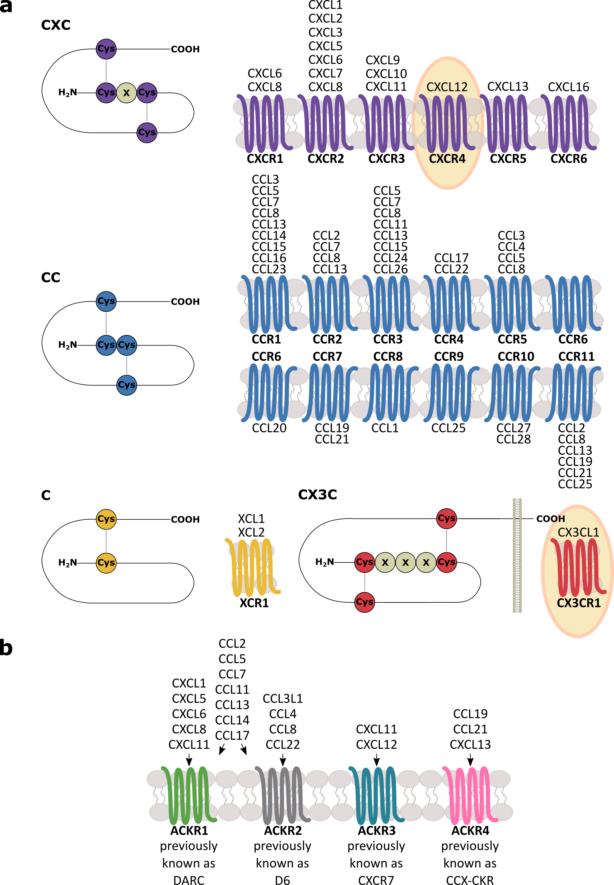

<!DOCTYPE html>
<html lang="" xml:lang="">
<head>

  <meta charset="utf-8" />
  <meta http-equiv="X-UA-Compatible" content="IE=edge" />
  <title>1 General Introduction |  Effects of chosen chemokines on neuronal properties and synaptic transmission in central and basolateral complex of the rat amygdala</title>
  <meta name="description" content="<br />
Effects of chosen chemokines on neuronal properties and synaptic transmission in central and basolateral complex of the rat amygdala</p>" />
  <meta name="generator" content="bookdown 0.21 and GitBook 2.6.7" />

  <meta property="og:title" content="1 General Introduction |  Effects of chosen chemokines on neuronal properties and synaptic transmission in central and basolateral complex of the rat amygdala" />
  <meta property="og:type" content="book" />
  
  
  
  

  <meta name="twitter:card" content="summary" />
  <meta name="twitter:title" content="1 General Introduction |  Effects of chosen chemokines on neuronal properties and synaptic transmission in central and basolateral complex of the rat amygdala" />
  
  
  

<meta name="author" content="Joanna Ewa Sowa" />


  <meta name="viewport" content="width=device-width, initial-scale=1" />
  <meta name="apple-mobile-web-app-capable" content="yes" />
  <meta name="apple-mobile-web-app-status-bar-style" content="black" />
  
  
<link rel="prev" href="abreviations.html"/>
<link rel="next" href="aim-of-the-study.html"/>
<script src="libs/header-attrs-2.7/header-attrs.js"></script>
<script src="libs/jquery-2.2.3/jquery.min.js"></script>
<link href="libs/gitbook-2.6.7/css/style.css" rel="stylesheet" />
<link href="libs/gitbook-2.6.7/css/plugin-table.css" rel="stylesheet" />
<link href="libs/gitbook-2.6.7/css/plugin-bookdown.css" rel="stylesheet" />
<link href="libs/gitbook-2.6.7/css/plugin-highlight.css" rel="stylesheet" />
<link href="libs/gitbook-2.6.7/css/plugin-search.css" rel="stylesheet" />
<link href="libs/gitbook-2.6.7/css/plugin-fontsettings.css" rel="stylesheet" />
<link href="libs/gitbook-2.6.7/css/plugin-clipboard.css" rel="stylesheet" />


<link rel="stylesheet" href="style.css" type="text/css" />
</head>

<body>


  <div class="book without-animation with-summary font-size-2 font-family-1" data-basepath=".">

    <div class="book-summary">
      <nav role="navigation">

<ul class="summary">
<li><a href="./">PhD thesis</a></li>

<li class="divider"></li>
<li class="chapter" data-level="" data-path="index.html"><a href="index.html"><i class="fa fa-check"></i>Keywords</a></li>
<li class="chapter" data-level="" data-path="abstract.html"><a href="abstract.html"><i class="fa fa-check"></i>Abstract</a></li>
<li class="chapter" data-level="" data-path="streszczenie.html"><a href="streszczenie.html"><i class="fa fa-check"></i>Streszczenie</a></li>
<li class="chapter" data-level="" data-path="acknowledgements.html"><a href="acknowledgements.html"><i class="fa fa-check"></i>Acknowledgements</a></li>
<li class="chapter" data-level="" data-path="abreviations.html"><a href="abreviations.html"><i class="fa fa-check"></i>Abreviations</a></li>
<li class="chapter" data-level="1" data-path="general-introduction.html"><a href="general-introduction.html"><i class="fa fa-check"></i><b>1</b> General Introduction</a>
<ul>
<li class="chapter" data-level="1.1" data-path="general-introduction.html"><a href="general-introduction.html#history"><i class="fa fa-check"></i><b>1.1</b> History of chemokines</a></li>
<li class="chapter" data-level="1.2" data-path="general-introduction.html"><a href="general-introduction.html#classification"><i class="fa fa-check"></i><b>1.2</b> Classification and structure of chemokines and their receptors</a>
<ul>
<li class="chapter" data-level="1.2.1" data-path="general-introduction.html"><a href="general-introduction.html#cx3cl1str"><i class="fa fa-check"></i><b>1.2.1</b> CX3CL1/ CX3CR1</a></li>
<li class="chapter" data-level="1.2.2" data-path="general-introduction.html"><a href="general-introduction.html#cxcl12str"><i class="fa fa-check"></i><b>1.2.2</b> CXCL12/CXCR4/ACKR3</a></li>
</ul></li>
<li class="chapter" data-level="1.3" data-path="general-introduction.html"><a href="general-introduction.html#chemokinesignaling"><i class="fa fa-check"></i><b>1.3</b> Chemokine signaling</a>
<ul>
<li class="chapter" data-level="1.3.1" data-path="general-introduction.html"><a href="general-introduction.html#posttranslational-modifications"><i class="fa fa-check"></i><b>1.3.1</b> Posttranslational modifications</a></li>
<li class="chapter" data-level="1.3.2" data-path="general-introduction.html"><a href="general-introduction.html#redudancy"><i class="fa fa-check"></i><b>1.3.2</b> Redudancy</a></li>
<li class="chapter" data-level="1.3.3" data-path="general-introduction.html"><a href="general-introduction.html#dimerization"><i class="fa fa-check"></i><b>1.3.3</b> Dimerization</a></li>
<li class="chapter" data-level="1.3.4" data-path="general-introduction.html"><a href="general-introduction.html#interactions-with-surface-molecules"><i class="fa fa-check"></i><b>1.3.4</b> Interactions with surface molecules</a></li>
<li class="chapter" data-level="1.3.5" data-path="general-introduction.html"><a href="general-introduction.html#biasedsignaling"><i class="fa fa-check"></i><b>1.3.5</b> Biased signaling</a></li>
<li class="chapter" data-level="1.3.6" data-path="general-introduction.html"><a href="general-introduction.html#signalingpathways"><i class="fa fa-check"></i><b>1.3.6</b> Diverse signaling pathways</a></li>
<li class="chapter" data-level="1.3.7" data-path="general-introduction.html"><a href="general-introduction.html#nonchemokineligands"><i class="fa fa-check"></i><b>1.3.7</b> Non-chemokine CKR ligands</a></li>
<li class="chapter" data-level="1.3.8" data-path="general-introduction.html"><a href="general-introduction.html#cx3cl1"><i class="fa fa-check"></i><b>1.3.8</b> CX3CL1/CX3CR1</a></li>
<li class="chapter" data-level="1.3.9" data-path="general-introduction.html"><a href="general-introduction.html#cxcl12"><i class="fa fa-check"></i><b>1.3.9</b> CXCL12/CXCR4/ACKR3</a></li>
<li class="chapter" data-level="1.3.10" data-path="general-introduction.html"><a href="general-introduction.html#summary"><i class="fa fa-check"></i><b>1.3.10</b> Summary <!--usunąć pewnie--></a></li>
<li class="chapter" data-level="1.3.11" data-path="general-introduction.html"><a href="general-introduction.html#chemokine-expression-in-the-cns-cells"><i class="fa fa-check"></i><b>1.3.11</b> Chemokine expression in the CNS cells</a></li>
<li class="chapter" data-level="1.3.12" data-path="general-introduction.html"><a href="general-introduction.html#cxcl12cxcr4ackr3-4"><i class="fa fa-check"></i><b>1.3.12</b> CXCL12/CXCR4/ACKR3</a></li>
<li class="chapter" data-level="1.3.13" data-path="general-introduction.html"><a href="general-introduction.html#chemokines-modulate-neuron-glia-cross-talk"><i class="fa fa-check"></i><b>1.3.13</b> Chemokines modulate neuron-glia cross-talk</a></li>
</ul></li>
<li class="chapter" data-level="1.4" data-path="general-introduction.html"><a href="general-introduction.html#glia_inter"><i class="fa fa-check"></i><b>1.4</b> Neuro-glial interactions</a>
<ul>
<li class="chapter" data-level="1.4.1" data-path="general-introduction.html"><a href="general-introduction.html#astro_inter"><i class="fa fa-check"></i><b>1.4.1</b> Neuron-astrocyte signaling</a></li>
<li class="chapter" data-level="1.4.2" data-path="general-introduction.html"><a href="general-introduction.html#micro_inter"><i class="fa fa-check"></i><b>1.4.2</b> Neuron-microglia signaling</a></li>
<li class="chapter" data-level="1.4.3" data-path="general-introduction.html"><a href="general-introduction.html#chemokines-on-synaptic-level"><i class="fa fa-check"></i><b>1.4.3</b> Chemokines on synaptic level</a></li>
<li class="chapter" data-level="1.4.4" data-path="general-introduction.html"><a href="general-introduction.html#cxcl12cxcr4ackr3-5"><i class="fa fa-check"></i><b>1.4.4</b> CXCL12/CXCR4/ACKR3</a></li>
</ul></li>
<li class="chapter" data-level="1.5" data-path="general-introduction.html"><a href="general-introduction.html#synapse"><i class="fa fa-check"></i><b>1.5</b> Chemokines action at synaptic/axonal/dendritic level</a>
<ul>
<li class="chapter" data-level="1.5.1" data-path="general-introduction.html"><a href="general-introduction.html#Glu"><i class="fa fa-check"></i><b>1.5.1</b> Glutamate</a></li>
<li class="chapter" data-level="1.5.2" data-path="general-introduction.html"><a href="general-introduction.html#GABA"><i class="fa fa-check"></i><b>1.5.2</b> GABA</a></li>
<li class="chapter" data-level="1.5.3" data-path="general-introduction.html"><a href="general-introduction.html#DA"><i class="fa fa-check"></i><b>1.5.3</b> Dopamine</a></li>
<li class="chapter" data-level="1.5.4" data-path="general-introduction.html"><a href="general-introduction.html#neuropep"><i class="fa fa-check"></i><b>1.5.4</b> Neuropeptides</a></li>
<li class="chapter" data-level="1.5.5" data-path="general-introduction.html"><a href="general-introduction.html#ser"><i class="fa fa-check"></i><b>1.5.5</b> Serotonin</a></li>
<li class="chapter" data-level="1.5.6" data-path="general-introduction.html"><a href="general-introduction.html#opio"><i class="fa fa-check"></i><b>1.5.6</b> Opioids</a></li>
<li class="chapter" data-level="1.5.7" data-path="general-introduction.html"><a href="general-introduction.html#spines"><i class="fa fa-check"></i><b>1.5.7</b> Dendritic spines</a></li>
</ul></li>
<li class="chapter" data-level="1.6" data-path="general-introduction.html"><a href="general-introduction.html#behavior"><i class="fa fa-check"></i><b>1.6</b> Chemokines modulates behavior</a>
<ul>
<li class="chapter" data-level="1.6.1" data-path="general-introduction.html"><a href="general-introduction.html#learn"><i class="fa fa-check"></i><b>1.6.1</b> Learning and memory</a></li>
<li class="chapter" data-level="1.6.2" data-path="general-introduction.html"><a href="general-introduction.html#locomotor-activity"><i class="fa fa-check"></i><b>1.6.2</b> Locomotor activity</a></li>
<li class="chapter" data-level="1.6.3" data-path="general-introduction.html"><a href="general-introduction.html#emotional-behavior"><i class="fa fa-check"></i><b>1.6.3</b> Emotional behavior</a></li>
</ul></li>
<li class="chapter" data-level="1.7" data-path="general-introduction.html"><a href="general-introduction.html#amygdalamain"><i class="fa fa-check"></i><b>1.7</b> Amygdala</a>
<ul>
<li class="chapter" data-level="1.7.1" data-path="general-introduction.html"><a href="general-introduction.html#amygdalafunctions"><i class="fa fa-check"></i><b>1.7.1</b> Functions</a></li>
<li class="chapter" data-level="1.7.2" data-path="general-introduction.html"><a href="general-introduction.html#amygdalastructure"><i class="fa fa-check"></i><b>1.7.2</b> Structure and Connectivity</a></li>
<li class="chapter" data-level="1.7.3" data-path="general-introduction.html"><a href="general-introduction.html#summary-of-amygdala-structure-and-connectivity"><i class="fa fa-check"></i><b>1.7.3</b> Summary of amygdala structure and connectivity</a></li>
</ul></li>
<li class="chapter" data-level="1.8" data-path="general-introduction.html"><a href="general-introduction.html#chemokines-action-in-the-amygdala"><i class="fa fa-check"></i><b>1.8</b> Chemokines action in the amygdala</a></li>
</ul></li>
<li class="chapter" data-level="2" data-path="aim-of-the-study.html"><a href="aim-of-the-study.html"><i class="fa fa-check"></i><b>2</b> Aim of the study</a></li>
<li class="chapter" data-level="3" data-path="materials-and-methods.html"><a href="materials-and-methods.html"><i class="fa fa-check"></i><b>3</b> Materials and methods</a>
<ul>
<li class="chapter" data-level="3.1" data-path="materials-and-methods.html"><a href="materials-and-methods.html#general"><i class="fa fa-check"></i><b>3.1</b> General</a>
<ul>
<li class="chapter" data-level="3.1.1" data-path="materials-and-methods.html"><a href="materials-and-methods.html#ethic-approval"><i class="fa fa-check"></i><b>3.1.1</b> Ethic approval</a></li>
<li class="chapter" data-level="3.1.2" data-path="materials-and-methods.html"><a href="materials-and-methods.html#animals"><i class="fa fa-check"></i><b>3.1.2</b> Animals</a></li>
<li class="chapter" data-level="3.1.3" data-path="materials-and-methods.html"><a href="materials-and-methods.html#reagents"><i class="fa fa-check"></i><b>3.1.3</b> Reagents</a></li>
</ul></li>
<li class="chapter" data-level="3.2" data-path="materials-and-methods.html"><a href="materials-and-methods.html#whole-cell-patch-clamp-technique-in-acute-brain-slices"><i class="fa fa-check"></i><b>3.2</b> Whole-cell patch-clamp technique in acute brain slices</a>
<ul>
<li class="chapter" data-level="3.2.1" data-path="materials-and-methods.html"><a href="materials-and-methods.html#decap"><i class="fa fa-check"></i><b>3.2.1</b> Tissue Preparation</a></li>
<li class="chapter" data-level="3.2.2" data-path="materials-and-methods.html"><a href="materials-and-methods.html#whole-cell-patch-clamp-recordings-and-data-acquisition"><i class="fa fa-check"></i><b>3.2.2</b> Whole-cell patch-clamp recordings and data acquisition</a></li>
<li class="chapter" data-level="3.2.3" data-path="materials-and-methods.html"><a href="materials-and-methods.html#electrophysiological-identification-and-classification-of-chosen-neurons"><i class="fa fa-check"></i><b>3.2.3</b> Electrophysiological identification and classification of chosen neurons</a></li>
<li class="chapter" data-level="3.2.4" data-path="materials-and-methods.html"><a href="materials-and-methods.html#recording-protocols-and-data-analysis"><i class="fa fa-check"></i><b>3.2.4</b> Recording protocols and data analysis</a></li>
<li class="chapter" data-level="3.2.5" data-path="materials-and-methods.html"><a href="materials-and-methods.html#post-recording-immunostaining"><i class="fa fa-check"></i><b>3.2.5</b> Post-recording immunostaining</a></li>
</ul></li>
<li class="chapter" data-level="3.3" data-path="materials-and-methods.html"><a href="materials-and-methods.html#extracellular-recording-and-ltp"><i class="fa fa-check"></i><b>3.3</b> Extracellular recording and LTP</a></li>
<li class="chapter" data-level="3.4" data-path="materials-and-methods.html"><a href="materials-and-methods.html#immunohistochemistry"><i class="fa fa-check"></i><b>3.4</b> Immunohistochemistry</a></li>
</ul></li>
<li class="chapter" data-level="4" data-path="antibodies.html"><a href="antibodies.html"><i class="fa fa-check"></i><b>4</b> Antibodies</a>
<ul>
<li class="chapter" data-level="4.0.1" data-path="antibodies.html"><a href="antibodies.html#immmunohistochemistry"><i class="fa fa-check"></i><b>4.0.1</b> Immmunohistochemistry</a></li>
<li class="chapter" data-level="4.0.2" data-path="antibodies.html"><a href="antibodies.html#cell-counting"><i class="fa fa-check"></i><b>4.0.2</b> Cell counting</a></li>
<li class="chapter" data-level="4.1" data-path="antibodies.html"><a href="antibodies.html#morphometric-analysis-of-the-dendritic-spines-of-neuronal-primary-cell-cultures"><i class="fa fa-check"></i><b>4.1</b> Morphometric analysis of the dendritic spines of neuronal primary cell cultures</a></li>
<li class="chapter" data-level="4.2" data-path="antibodies.html"><a href="antibodies.html#statistical"><i class="fa fa-check"></i><b>4.2</b> Statistical</a></li>
<li class="chapter" data-level="4.3" data-path="antibodies.html"><a href="antibodies.html#clustering"><i class="fa fa-check"></i><b>4.3</b> Clustering</a></li>
<li class="chapter" data-level="4.4" data-path="antibodies.html"><a href="antibodies.html#sulphoramine-staining"><i class="fa fa-check"></i><b>4.4</b> Sulphoramine staining</a></li>
<li class="chapter" data-level="4.5" data-path="antibodies.html"><a href="antibodies.html#fluorocitrate"><i class="fa fa-check"></i><b>4.5</b> Fluorocitrate</a></li>
<li class="chapter" data-level="4.6" data-path="antibodies.html"><a href="antibodies.html#random"><i class="fa fa-check"></i><b>4.6</b> Random</a></li>
</ul></li>
<li class="chapter" data-level="5" data-path="extracellular-field-potentials.html"><a href="extracellular-field-potentials.html"><i class="fa fa-check"></i><b>5</b> Extracellular field potentials</a></li>
<li class="chapter" data-level="6" data-path="another-one.html"><a href="another-one.html"><i class="fa fa-check"></i><b>6</b> Another one</a></li>
<li class="chapter" data-level="7" data-path="results.html"><a href="results.html"><i class="fa fa-check"></i><b>7</b> Results</a>
<ul>
<li class="chapter" data-level="7.1" data-path="results.html"><a href="results.html#cx3cl1cx3cr1-6"><i class="fa fa-check"></i><b>7.1</b> CX3CL1/CX3CR1</a>
<ul>
<li class="chapter" data-level="7.1.1" data-path="results.html"><a href="results.html#bla"><i class="fa fa-check"></i><b>7.1.1</b> BLA</a></li>
<li class="chapter" data-level="7.1.2" data-path="results.html"><a href="results.html#section-1"><i class="fa fa-check"></i><b>7.1.2</b> </a></li>
</ul></li>
<li class="chapter" data-level="7.2" data-path="results.html"><a href="results.html#cea"><i class="fa fa-check"></i><b>7.2</b> CeA</a>
<ul>
<li class="chapter" data-level="7.2.1" data-path="results.html"><a href="results.html#spines-1"><i class="fa fa-check"></i><b>7.2.1</b> Spines</a></li>
<li class="chapter" data-level="7.2.2" data-path="results.html"><a href="results.html#minocycline-1"><i class="fa fa-check"></i><b>7.2.2</b> Minocycline</a></li>
<li class="chapter" data-level="7.2.3" data-path="results.html"><a href="results.html#cel-neurons-comprise-two-major-functionally-distinct-populations"><i class="fa fa-check"></i><b>7.2.3</b> CeL neurons comprise two major functionally distinct populations</a></li>
</ul></li>
<li class="chapter" data-level="7.3" data-path="results.html"><a href="results.html#ltp-bla"><i class="fa fa-check"></i><b>7.3</b> LTP BLA</a></li>
</ul></li>
<li class="chapter" data-level="8" data-path="electrophysiology.html"><a href="electrophysiology.html"><i class="fa fa-check"></i><b>8</b> Electrophysiology</a></li>
<li class="chapter" data-level="9" data-path="discussion.html"><a href="discussion.html"><i class="fa fa-check"></i><b>9</b> Discussion</a>
<ul>
<li class="chapter" data-level="9.1" data-path="discussion.html"><a href="discussion.html#cx3cl1-1"><i class="fa fa-check"></i><b>9.1</b> CX3CL1</a>
<ul>
<li class="chapter" data-level="9.1.1" data-path="discussion.html"><a href="discussion.html#bla-1"><i class="fa fa-check"></i><b>9.1.1</b> BLA</a></li>
<li class="chapter" data-level="9.1.2" data-path="discussion.html"><a href="discussion.html#cea-1"><i class="fa fa-check"></i><b>9.1.2</b> CeA</a></li>
</ul></li>
<li class="chapter" data-level="9.2" data-path="discussion.html"><a href="discussion.html#bla-channels"><i class="fa fa-check"></i><b>9.2</b> BLA, channels?</a></li>
<li class="chapter" data-level="9.3" data-path="discussion.html"><a href="discussion.html#bla-ltp-cx3cl1"><i class="fa fa-check"></i><b>9.3</b> BLA, LTP, CX3CL1</a></li>
</ul></li>
<li class="chapter" data-level="10" data-path="gaba.html"><a href="gaba.html"><i class="fa fa-check"></i><b>10</b> GABA</a>
<ul>
<li class="chapter" data-level="10.0.1" data-path="gaba.html"><a href="gaba.html#cx3cl1-2"><i class="fa fa-check"></i><b>10.0.1</b> cx3cl1</a></li>
<li class="chapter" data-level="10.1" data-path="gaba.html"><a href="gaba.html#gaba-and-neuropsychiatric-diseases"><i class="fa fa-check"></i><b>10.1</b> GABA and neuropsychiatric diseases</a></li>
<li class="chapter" data-level="10.2" data-path="gaba.html"><a href="gaba.html#gaba-and-epilepsy"><i class="fa fa-check"></i><b>10.2</b> GABA and epilepsy</a></li>
<li class="chapter" data-level="10.3" data-path="gaba.html"><a href="gaba.html#gaba-in-axons"><i class="fa fa-check"></i><b>10.3</b> GABA in axons</a></li>
<li class="chapter" data-level="10.4" data-path="gaba.html"><a href="gaba.html#electrophysiology-1"><i class="fa fa-check"></i><b>10.4</b> Electrophysiology</a></li>
<li class="chapter" data-level="10.5" data-path="gaba.html"><a href="gaba.html#limitations"><i class="fa fa-check"></i><b>10.5</b> Limitations</a></li>
</ul></li>
<li class="chapter" data-level="11" data-path="conclusions.html"><a href="conclusions.html"><i class="fa fa-check"></i><b>11</b> Conclusions</a></li>
<li class="chapter" data-level="12" data-path="appendix.html"><a href="appendix.html"><i class="fa fa-check"></i><b>12</b> Appendix</a>
<ul>
<li class="chapter" data-level="12.1" data-path="appendix.html"><a href="appendix.html#phd-thesis-founding"><i class="fa fa-check"></i><b>12.1</b> PhD thesis founding</a></li>
<li class="chapter" data-level="12.2" data-path="appendix.html"><a href="appendix.html#phd-candidates-scientific-activity"><i class="fa fa-check"></i><b>12.2</b> PhD candidate’s scientific activity</a>
<ul>
<li class="chapter" data-level="12.2.1" data-path="appendix.html"><a href="appendix.html#concerning-phd-thesis"><i class="fa fa-check"></i><b>12.2.1</b> Concerning PhD thesis</a></li>
<li class="chapter" data-level="12.2.2" data-path="appendix.html"><a href="appendix.html#other"><i class="fa fa-check"></i><b>12.2.2</b> Other</a></li>
</ul></li>
</ul></li>
<li class="chapter" data-level="13" data-path="references.html"><a href="references.html"><i class="fa fa-check"></i><b>13</b> References</a></li>
<li class="chapter" data-level="14" data-path="declarations.html"><a href="declarations.html"><i class="fa fa-check"></i><b>14</b> Declarations</a></li>
<li class="divider"></li>
<li><a href="https://github.com/rstudio/bookdown" target="blank">Published with bookdown</a></li>

</ul>

      </nav>
    </div>

    <div class="book-body">
      <div class="body-inner">
        <div class="book-header" role="navigation">
          <h1>
            <i class="fa fa-circle-o-notch fa-spin"></i><a href="./"><p><br />
Effects of chosen chemokines on neuronal properties and synaptic transmission in central and basolateral complex of the rat amygdala</p></a>
          </h1>
        </div>

        <div class="page-wrapper" tabindex="-1" role="main">
          <div class="page-inner">

            <section class="normal" id="section-">
<div id="general-introduction" class="section level1" number="1">
<h1><span class="header-section-number">1</span> General Introduction</h1>
<div id="history" class="section level2" number="1.1">
<h2><span class="header-section-number">1.1</span> History of chemokines</h2>
<p>Chemokines (chemotactic cytokines) are a family of small (7-11 kDa) secreted proteins with chemoattractant and regulatory activities. <!--( Baggiolini, 1998 )-->
They were originally identified as key regulators of both the peripheral and central immune response, serving chemotactic function on immune cells in late 1980 <span class="citation">(Yoshimura et al., 1987)</span>. <!-- Chemokines are important regulators of, which largely explains how they contribute to controlling inflammatory processes in the brain.-->
However, a decade later, the first reports revealed the prominent expression of chemokines and their receptors in the central nervous system (CNS) <span class="citation">(Meucci et al., 1998)</span>.
Why do cells (neurons, astrocytes, and microglia) in CNS express chemokines and chemokine receptors, and what is the neurophysiological relevance of chemokines in the CNS? <!--The plausible explanation is that they may provide a bridge between the immune and nervous systems, which are classically viewed as two complex and distinct entities.///  Since then, numerous detailed studies on the crucial role of these immune proteins and their receptors in the brain have been published. //  Most of them are widely expressed during neuroinflammation, but plenty of them are also found during the physiological state or neurodevelopment.-->
The explanation is that they control neuroinflammation, for example, by driving leukocyte trafficking and activation into the CNS, facilitating the immune responses, targeting cells of the innate and adaptive immune system <span class="citation">(Williams et al., 2014)</span>.
However, chemokine expression in the CNS is not only related to pathological conditions.
It is now clear that all types of brain cells synthesize distinct chemokines and might respond to chemokine stimulation <em>via</em> their cognate receptor expression, also under physiological conditions (see Table <a href="general-introduction.html#tab:chemoexpression">1.1</a>).
These results suggest their brain-specific functions, such as the modulation of synaptic transmission <span class="citation">(Rostène et al., 2007)</span>. <!--suggests a role for such molecules in mediating homeostatic cross-talk between cells of the brain parenchyma ( Williams et al., 2014 ). /// Like neurotransmitters, the chemokine system is widely but unevenly distributed in the brain and has both ligands and receptors expressed in neurons. //// The cross-talk among neurons and glia is determinant to establish and maintain a normal brain function.  -->
Moreover, the complex cellular patterns of chemokine/chemokine receptor expression lead to intricate cell-to-cell communications.
Thus, of particular interest is now the idea that CNS chemokines are not only mediators of neuroinflammation but also orchestrators of neuron-glia crosstalk, which is essential in maintaining brain homeostasis <span class="citation">(Trettel et al., 2020)</span>.<!--  but also function as neuromodulators or neurotransmitters in the brain [@adler_2005]. --><!-- neurodevelopment? /// During brain development, chemokines represent signaling molecules that drive the correct migration and axonal pathfinding of neuronal progenitor cells ( Tran and Miller, 2003 ):---></p>
</div>
<div id="classification" class="section level2" number="1.2">
<h2><span class="header-section-number">1.2</span> Classification and structure of chemokines and their receptors</h2>
<p>Chemokines are small proteins consisting of 60 to 100 amino acids with 20 to 90% homology in their sequences.
Their molecular weight varies from 8 to 14 kDa.
To date, 53 human chemokines and 23 chemokine receptors have been cloned or characterized <span class="citation">(Hughes and Nibbs, 2018)</span>.
All chemokine family members share a similar tertiary structure: a flexible N-terminus and N-terminal loop, followed by a three-stranded antiparallel β-sheet on which a C-terminal α-helix is folded (for review: <span class="citation">Miller and Mayo (2017)</span>).<!-- a disordered N-terminus , long N-loop, known also as the N loop, a 310-helix and a three-stranded beta-sheet, and finally a C-terminal alpha helix [65]zmienić, (Clark-Lewis et al., 1995; Clore and Gronenborn, 1995). // These studies revealed that despite low sequence homology, chemokines adopt a remarkably conserved tertiary structure consisting of a disordered N terminus of 6–10 amino acids, which functions as a key signaling domain in all chemokines characterized to date. This region is followed by a long loop (the N-loop) that ends in a 310 helix and invariably contains important binding de- terminants, a three-stranded , and a C-terminal helix. Disulfide bonds stabilize the overall topology (Figure 1)/// The N-terminus is followed by a long loop, leading into three antiparallel beta-pleated sheets terminating in an a helix that overlies the sheets (Baggiolini and Loetscher, 2000). --><!--Chemokines are defined by their primary amino acid sequence and the arrangement of specific structurally important cysteine residues within the mature protein. These form disulphide bonds that maintain the structure of the chemokine monomer, which consists of a central three stranded ?-sheet, an overlying C-terminal ?-helix and a short unstructured N-terminus that plays a critical role in receptor activation [1].-->
Although N-terminus is widely acknowledged as pivotal for receptor activation, it is not sufficient in this regard.
Particularly, several additional regions of both chemokine and chemokine receptor were identified as critical for their binding and signal transduction, including N-loop<!--chemokine or chemokine receptor???-->, or highly conserved GP (glycine-proline) motif (for review: <span class="citation">Kleist et al. (2016)</span>).
Thus, these data illustrate that subtle structural changes in a chemokine or chemokine receptor domain may significantly alter the receptor activation, resulting in unique functional outcomes for chemokine-receptor pairs. <!-- There are several regions of the chemokine that are critical for receptor binding and signal transduction --></p>
<p>Chemokines were initially named according to their function or from the cell type that produced them.
However, a systematic nomenclature was introduced in 2000, based on the spacing of the first two cysteine residues closest to the N‐terminus.
It consists of the subfamily designation (XC, CC, CXC, CX3C), followed by the letter “L” (denoting “ligand”), and the number according to when the gene was first isolated (<span class="citation">Zlotnik and Yoshie (2000)</span>, see Figure <a href="general-introduction.html#fig:family">1.1</a>).
Specifically, one amino acid separates the first two cysteine residues in the CXC subclass (also known as α, see Figure <a href="general-introduction.html#fig:family">1.1</a>, part a). <!-- (cysteine–X amino acid–cysteine, or CXC).// CXC chemokines have two cysteines separated by one amino acid, -->
Chemokines containing the first two cysteine residues adjacent to each other are classified into the CC subclass (also known as β, see Fig. <a href="general-introduction.html#fig:family">1.1</a>, part b). <!-- CC chemokines have two adjacent cysteines, -->
C chemokines (also known as γ, see Figure <a href="general-introduction.html#fig:family">1.1</a>, part c) are characterized by the presence of only two <!-- of the four-->cysteine residues.<br />
The CX3C (also known as δ) chemokine subfamily currently represents only a single member, CX3CL1 (also called fractalkine).
It is characterized by the presence of three amino acids between the first two cysteine residues, as well as a transmembrane and mucin-like domain (see Figure <a href="general-introduction.html#fig:family">1.1</a>, part d).</p>

<div class="figure" style="text-align: center"><span id="fig:family"></span>

<p class="caption">
Figure 1.1: <em>Chemokine families.</em> Chemokines are classified into four distinct subclasses: C, CC, CXC, and CX3C according to the number and spacing of their cysteine residues in their N-terminus. Cys – cysteine residue, X – amino acid residue, disulfide bridges are shown as dotted lines. <!-- Classification of the four families of chemokines and their respective receptors Chemokines are small proteins consisting of 60 to 100 amino acids with 20 to 90% homology in  their sequences. Their molecular weight varies from 8 to 14 kDa. They are subdivided into four  families (see figure), based on the number and spacing of the conserved cysteine residues in their  amino termini. These families are the CXC, CC, C and CX3C chemokines. Chemokines exert their biological effects through cell-surface receptors that belong to the  superfamily of seven-transmembrane-domain G-protein-coupled receptors. Chemokine-receptor  nomenclature follows that of chemokines, and the receptors are thus designated CXCRn, CCRn,  XCRn and CX3CRn.  In CXC (also known as α) chemokines (see figure, part a), one amino acid separates the first two  cysteine residues (cysteine–X amino acid–cysteine, or CXC). Chemokines of this family are known to  chemoattract neutrophils, T lymphocytes, B lymphocytes and natural killer cells. In CC (also known  as β) chemokines (see figure, part b), the first two cysteine residues are adjacent to each other.  Members of this chemokine family chemoattract monocytes, macrophages, basophils,   T lymphocytes and eosinophils, but have little or no effect on neutrophils. The C (also known as γ)  chemokine subfamily (see figure, part c) is distinguished structurally as containing only two of the  four conserved cysteine residues that are found in the other families. The only members of this family  are lymphotactin   α   and   β   (XCL1 and XCL2), which are known to chemoattract T lymphocytes. These  chemokines are specific ligands for the XCR1 receptor. The CX3C (also known as δ) chemokine  subfamily, which is currently represented by a single member named fractalkine (CX3CL1), is  characterized by the presence of three amino acids between the first two cysteine residues, as well  as a transmembrane and mucin-like domain (see figure, part d).    -->
</p>
</div>
<p>Chemokines exert their biological effects through cell surface chemokine receptors (CKRs), which can be divided into two families: conventional chemokine receptors and atypical chemokine receptors (ACKRs). <!-- Chemokines belong to a large family of structurally-related chemotactic cytokines that exert their functions upon binding to heterotrimeric guanine nucleotide-binding (G) protein-coupled receptors (GPCR) (Allen et al., 2007;Proudfoot, 2002;Rossi and Zlotnik, 2000).// Chemokine     receptors     are     commonly     classified     in     CR,     CCR,     CXCR, and     CX3CR     receptors     according     to     the     type     of     chemokine     they bind,     and     are     differentially     expressed     on     different     cell     types   [7]  .-->
Conventional receptors belong to the classic G-protein-coupled receptors (GPCR) family, consisting of seven transmembrane helices connected by several intra- and extracellular loops, N-terminal extracellular, and C-terminal intracellular domains. <!-- lepiej napisać i rysunek? /// Chemokines bind t o chemokine receptors, which constitute the largest branch of the g subfamily of rhodopsin-like GPCRs, a receptor superfamily, which, in modern pharmacology, is themostsuccessfultargetofsmall molecule inhibitors for treating diseases affecting various organs , including the central nervous, cardiovascular, pulmonary, or gastrointestinal system.  -->
The N-terminal extracellular domain is considered essential for chemokine binding and receptor activation, while the C-terminal end is coupled to G-proteins, and is vital for receptor signaling upon chemokine binding. <!-- zmienić bo całe zdanie zerżnięte z Paolicelli 2014 i MOŻE JESZCZE FIGURA, albo druga część figury 1?? -->
Based on the subfamily of chemokine ligand they bind, CKRs are named following the same principle as the chemokines but replacing “L” with “R,” which denotes “receptor” (see: Figure <a href="general-introduction.html#fig:family">1.1</a>).
Most of these receptors belong to the CCR and CXCR classes, with 10 and 6 members, respectively, while there is only one CX3CR and one XCR <span class="citation">(Hughes and Nibbs, 2018)</span>.<!-- bardzo zerżnięte zdanie i może wyrzucić... -->
CKRs typically transduce their signals <em>via</em> two major routes: G<sub>i</sub> proteins and β‐arrestin <span class="citation">(Zweemer et al., 2014)</span>.
<!-- All of these receptors are comprised of approximately 350 amino acids and a molecular weight around 40 kDa. The extracellular domain consists of the N-terminus and three extracellular loops that act in concert to bind the chemokine ligand. The intracellular region is composed of three loops and the C-terminus, which also collaborate to transduce the chemokine signal. Based on their amino acid sequences, chemokine receptors belong to the class A rhodopsin-like family. Although similar to other seven-transmembrane receptors, the chemokine receptors share certain structural features, such as the highly conserved DRYLAIV amino acid sequence in the second intracellular loop (13). -->
As is the case for the chemokines, the receptors can also be grouped into four major families, CR, CCR, CXCR, and CX3CR, which interact with the C, CC, CXC, and CX3C chemokines, respectively (see Fig. <a href="general-introduction.html#fig:family">1.1</a>).</p>
<p>ACKRs, a small subset of proteins with at least four representatives <span class="citation">(Bachelerie et al., 2014; Salvi et al., 2017)</span>, structurally resemble conventional chemokine receptors: ACKR1 (Duffy antigen/receptor for chemokines (DARC)), ACKR2 (D6), ACKR3 (CXCR7), and ACKR4 (chemocentryx chemokine receptor (CCX-CKR)).
They bind a wide variety of chemokine ligands, with up to 18 ligands for ACKR1, and signal predominantly through β-arrestins <span class="citation">(Hughes and Nibbs, 2018)</span>.<br />
Due to their inability to activate typical G protein-signaling pathways and thereby induce chemotactic activity, they were initially thought to scavenge chemokine ligands or function as co-receptors, and thus regulate inflammation or chemokine gradient formation <span class="citation">(Bachelerie et al., 2014; Bonecchi and Graham, 2016; Nibbs and Graham, 2013)</span>. <!--  In the last few years, the role of ACKRs is gradually clarifying since they were shown to regulate inflammation acting as scavenger receptors, promoting chemokine  transcytosis  or  regulating  chemokine  gradient formation (Mantovani et al., 2001; Nibbs and Graham, 2013; Bachelerie et al., 2014a,b; Bonecchi and Graham, 2016). /// are unified by their ability to degrade chemokines. //// This function has been best characterized for ACKR2   (REFS 11  ,  23–25  )  , which constitutively traffics to and from   the cell surface via endosomes. /// A certain group of chemokine receptors, known as atypical chemokine receptors (ACKRs) [16] , have been proposed to act mainly as chemokine ligand scavengers [17,18]. Furthermore, under certain circumstances the G protein-coupled chemokine receptors have been demonstrated to become uncoupled from G protein signaling. Therefore, expression of a certain chemokine receptor does not always imply a contribution to the disease state. In fact, one might speculate that a pharmacological blockade of these receptors can increase free chemokine levels and therefore result in enhanced pathology. -->
However, recent data cast a new light on the complexity of the ACKRs role as regulating components of chemokine networks in a wide range of developmental, physiological, and pathological contexts (for review: <span class="citation">Salvi et al. (2017)</span>).
Regarding the CNS, the knowledge about the role of ACKRs is started to accumulate.
Pioneer experiments demonstrated the expression of two ACKRs members, ACKR1 and ACKR3, in the CNS <!--citations-->(see Table <a href="general-introduction.html#tab:chemoexpression">1.1</a>), along with their behavioral relevance (see Chapter <a href="general-introduction.html#behavior">1.6</a>). <!-- jakoś inaczej to napisać .... --></p>
<p>In addition, the classical, formulated in the mid-1900s classification, divided chemokines into inflammatory (or inducible) chemokines, whose expression is upregulated upon inflammation, and homeostatic chemokines, which display constitutive expression.
Several chemokines share both properties and have been called dual-function chemokines <span class="citation">(Zlotnik and Yoshie, 2012)</span>.
On the other hand, considering that the same chemokine may exert both neuroprotective and neurotoxic effects, depending on its concentration, cell type, tissue, and time, this view seems oversimplistic.
Nevertheless, given the advances in genomic methodology, chemokine receptors that bind homeostatic chemokines were shown to be located singly or in mini-clusters in different chromosomes and are well-conserved across species <span class="citation">(Nomiyama et al., 2013)</span>, highlighting their translational relevance in human diseases.</p>
<p>This PhD dissertation will mainly focus on two chemokines, CX3CL1 and CXCL12, together with their corresponding receptors, CX3CL1 and CXCR4 or ACKR3, respectively. <!--The chemokines that I mainly focus on belong to the two chemokine families; they are the CX3C chemokine CX3CL1 and its cognate receptor, CX3CR1, and the CXC chemokine CXCL12 (also known as stromal cell-derived factor 1 (CXCL12)) and its receptors CXCR4 and ACKR3 (previously known as ACKR3). --></p>
<div id="cx3cl1str" class="section level3" number="1.2.1">
<h3><span class="header-section-number">1.2.1</span> CX3CL1/ CX3CR1</h3>
<p>CX3CL1, also known as fractalkine or neurotactin, is a unique chemokine on many levels.
First of all, to date, it is the only known member of the CX3C chemokine δ family <span class="citation">(Pan et al., 1997)</span>. <!--((Pan et al., 1997))??.-->
In humans, the full length of CX3CL1 consists of 397 amino acids, whereas in mice, 395 amino acids <span class="citation">(Bazan et al., 1997; Pan et al., 1997)</span>.<!-- (Bazan et al., 1997; Pan et al., 1997)--><!-- (Rossi et al., 1998). -->.
Thus, it is also larger than most other chemokines, whose most common size is around 70–80 amino acids <span class="citation">(Zlotnik and Yoshie, 2012)</span>. <!-- Fractalkine is a unique chemokine in that it exists in two different forms: a membrane-bound protein tethered to neuronal membranes by a mucine-like stalk (approximately 95 kDa), and a soluble factor released upon cleavage of its N-terminal chemokine domain (approximately 70 kDa) (Garton et al., 2001).  This function is shared with other members of the chemokines family, commonly acting as “chemotactic cytokines” during innate and adaptive immunity. The name “chemokines” is precisely derived from this ability to mediate attraction of their responsive cells (Bazan et al., 1997; Comerford andMcColl, 2011; Pan et al., 2011; Zlotnik and Yoshie, 2012).-->
CX3CL1 is comprised of an extracellular 76-amino acid N-terminal domain, a 241-amino acid glycosylated mucin-like stalk, an 18-amino acid transmembrane helix, and a short acid cytoplasmic C-terminal domain.
Like CXCL16, fractalkine is present in two different forms: a membrane-anchored form tethered to cell membranes by a mucin-line stalk (approximately 95 kDa), and a shorter soluble form released upon proteolytic cleavage of its N-terminal chemokine domain (approximately 70 kDa) <em>via</em> the action of several proteases <span class="citation">(Bajetto et al., 2001; Schulte et al., 2007)</span>. <!--(for example: @schulte_2007)(Garton et al., 2001).-->
These enzymes are metalloproteinases (enzymes containing a disintegrin and metalloproteinase domain) such as ADAM10, ADAM17<!--TACE?-->, or cysteine protease Cathepsin S (CatS)<!--(TACE: TNF-α-converting enzyme)--> in both the periphery and CNS <span class="citation">(Cook et al., 2010)</span>. <!--więcej cytowań i poprawić (Garton et al., 2001; Hundhausen et al., 2003; Clark et al., 2007; Cook et al., 2010; Jones et al., 2013). poprawić, -->
While soluble CX3CL1 acts as a conventional chemokine, promoting migration and chemotaxis of CX3CR1-expressing cells, mostly monocytes, membrane bound CX3CL1 acts as an adhesion molecule, mediating leukocyte capture and infiltration <span class="citation">(Ransohoff, 2009)</span>. <!--  Membrane-bound fractalkine has been proposed to act as an adhesion molecule, whereas the diffusible form works as an extracellular chemoattractant promoting cellular migration. /// It is synthesized as a transmembrane protein, which undergoes a proteolytic cleavage and is afterwards released into the extracellular space as a soluble cytokine, although a chemoattractant role has also been proposed for the membrane-bound form of the protein (Lauro et al., 2006; Song et al., 2013). CX3CR1 is a conventional Gi-protein coupled seven-transmembrane domain receptor that is highly expressed by microglia (Paolicelli et al., 2014; Tremblay et al., 2011; Valero et al., 2016). - Bolos2018 --></p>
<p>Both forms of CX3CL1 interacts with CX3CR1, a the G<sub>i</sub>-protein-coupled receptor, with the same affinity
CX3CR1 is which specifically interacts with both forms of CX3CL1 with the same affinity. <!-- check citation [@Imai1997] and (Harrison et al., 2001).-->
<!--This receptor is encoded by the Cx3cr1 gene, previously named V28, located on the chromosome 3 in human (Combadiere et al., 1995) and the chromosome 9 in mouse (Combadiere et al., 1998).  citation and see if necessary? --><!-- Given the central role played by the CX3CL1/CX3CR1 axis in neuron-microglia communication, the CX3CR1 / mouse model has been used extensively to study this cross-talk mechanism ( Lauro et al., 2006; Paolicelli et al., --></p>
</div>
<div id="cxcl12str" class="section level3" number="1.2.2">
<h3><span class="header-section-number">1.2.2</span> CXCL12/CXCR4/ACKR3</h3>
<p>CXCL12, also known as the stromal cell-derived factor 1α, is another chemokine, yet belonging to CXC subfamily.
In humans, CXCL12 precursor mRNA precursor yields the expression of six isoforms (α, β, γ, δ, ε, φ), ranging in size from 10 to 16 kDa <span class="citation">(Yu et al., 2006)</span>. <!-- The CXCL12 isoforms differentially regulate CXCR4  signaling, which can impact both physiological and pathophysiological consequences.57 Humans express six different isoforms of CXCL12 (α,  β, δ, γ, ε, φ) produced through alternative splicing.60,74-->
The α product of alternative splicing is the smallest and most abundant one <span class="citation">(Yu et al., 2006)</span>.
Hence, as used here, the term “CXCL12” refers to the α isoform, which is the main focus of the presented PhD dissertation. <!--this form is the main focus of the presented PhD dissertation and for clarity will be hereafter referred to as CXCL12.  poprawić trochę -->
It consists of 89 amino acids, including a signaling peptide of 19 amino acids, which is cleaved to generate the mature protein. <!-- citation i trochę zmienić...-->
However, other isoforms are also likely to play a key role in physiologic and pathological processes <span class="citation">(Britton et al., 2021)</span>. <!-- zmienić trochę -->
CXCL12 is comprised of a three-stranded β-sheet held in close apposition to an α-helix, which are essential for CXCR4 activation <span class="citation">(Murphy et al., 2007; Wu et al., 2010)</span>.<!-- 56; the two most N-terminal residues are essential for activation of  CXCR4.57,58 In particular, Lys1 at the CXCL12 N-terminus forms a strong polar interaction with Glu32 in the CXCR4  extracellular domain; this interaction leads to the movement of TM5 and TM6, facilitating G-protein binding and concomitant intracellular signal transduction.59-->
CXCL12 signal through its canonical CXCR4 receptor and atypical ACKR3 receptor, previously known as CXCR7, which binds this chemokine with roughly ten times higher binding affinity, as compared with CXCR4 <span class="citation">(Balabanian et al., 2005)</span>. <!--along with several other endogenous ligands which are not members of chemokine family  (discussed in detail in section viral ligands). including migration inhibitory factor (MIF),7 extracellular ubiquitin,14,15 and  human beta defensins (HBD) 2 and 315 as well as exogenous ligand, including viral macrophage inflammatory protein 2  (vMIP-II)16 and the HIV envelope glycoprotein GP12017///  C-X-C chemokine receptor 4 (CXCR4) is a G protein–coupled  chemokine receptor encoded on chromosome 2 (  1  ) /// The receptor  has a 7-transmembrane structure with 7 helical regions connected  by 6 extramembrane loops (  2  ). --><!-- cxcr4 antagonist: In general, 4 major  classes of CXCR4 antagonists and agonists can be distinguished:  nonpeptide CXCR4 antagonists, such as the bicyclam derivative  AMD3100; small-peptide CXCR4 antagonists, such as T140 and  even smaller cyclic peptides; antibodies to CXCR4; and modified  agonists and antagonists for CXCL12 (  12  ).   The bicyclam derivative AMD3100  (plerixafor injection; Mozobil  [Sanofi]), previously called JM3100, acts as a specific antagonist by  blocking the binding pocket of CXCR4 (  13,14  ). The first clinical  trials with AMD3100 were designe  d for the treatment of HIV. In-  terestingly, an increased amount of white blood cells was observed in  healthy volunteers in phase 1 clinical trials (  15  ). This finding led to  the discovery that AMD3100 mobilizes CD34  1  human hematopoi-  etic stem and progenitor cells from the bone marrow to peripheral  blood (  16  ). Finally, AMD3100 was approved by the U.S. Food and  Drug Administration as a mobilizer of hematopoietic CD34  1  cells  from the bone marrow to the circulation (  17,18  ). Orally available  CXCR4 antagonists include AMD070 (  19,20  ).  ACKR3 (@meyrath_2020; @fumagalli_2020; @banisadr_2016; @schnemeier_2008; @gttle_2010, see: Table1, Figure 2C). -->
All three molecules are well-conserved across the vertebrate species <span class="citation">(Nomiyama et al., 2013; Nomiyama and Yoshie, 2015)</span>.
Similar to the other ACKRs, ACKR3 contains a modified typical DRY motif in the second intracellular loop (DRYLAIV), a highly conserved region within the second loop of GPCRs<!--see figure...-->, which is thought to be essential for G protein binding and their subsequent activation <span class="citation">(Thelen and Thelen, 2008)</span>.<!-- This is partly because of either modification or lack of the typical DRY motif in the second intracellular loop (DRYLAIV) known to be important for efficient coupling with the G~$\alpha$i~ class G-proteins. /// zmienić może jeszcze trochę // This motif represents a highly conserved region within the second intracellular loop of GPCRs and is assumed to be essential for G protein binding and their subsequent activation. Indeed, several established atypical chemokine receptors such as D6, DARC, and CCXCKR either lack the DRYLAIV motif or exhibit a modified motif (Graham, 2009). However, other chemokine receptors such as lymphotactin receptors and CXCR6, also showing modifications of the DRYLAIV motif, still signal through G proteins (Thelen and Thelen, 2008).These discrepancies are currently regarded as an indication that at least in case of some GPCRs the DRYLAIV motif is  not sufficient for  G protein  coupling and requires  additional  sequences  (Thelen  and  Thelen, 2008). Consequently, modifications  of  the DRYLAIV motif, as exhibited by ACKR3, may not per se represent a reliable indicator for the lack of G protein coupling.-->
Additionally, ACKR3 not only binds CXCL11 (formerly known as interferon-inducible T-cell a chemoattractant, I-TAC) as a second chemokine ligand <span class="citation">(Burns et al., 2006)</span>, but also has a broad-spectrum selectivity for for opioid peptides <span class="citation">(Meyrath et al., 2020)</span>, as described later in this chapter (see Section <a href="#cxcl12sigal"><strong>??</strong></a>). <!-- albo może contrary to the rest of atypical receptors, ACKR3 binds only to two ligand ///ACKR3,by analogy to its classification in the ACKRs subfamily, owes its designation as atypical to the characteristics that distinguish it from any other opioid peptide receptor. These include its inability to induce G protein signaling in response to ligand stimulation, its continuous recycling after opioid peptide binding and efficient ligand depletion from extracellular space, but also its broad-spectrum selectivity for opioid peptides, in the nanomolar range, and its unresponsiveness to alkaloid opioids and synthetic opioid drugs.[@meyrath_2020] /// Similarly to the classical opioid receptors, ACKR3 is highly conserved among species and through the evolution indicating important functions. A detailed comparative sequence analysis revealed that ACKR3 does not harbor the residues delimiting the orthosteric morphinate binding pocket72of classical opioid receptors but does retain residues that are highly conserved in chemokine receptors 73(Supplementary [@meyrath_2020] --></p>
</div>
</div>
<div id="chemokinesignaling" class="section level2" number="1.3">
<h2><span class="header-section-number">1.3</span> Chemokine signaling</h2>
<p>The multifaceted role of chemokines in both nervous and immune systems is mirrored by the complexity of the molecular signaling mechanisms underlying their biological functions.
Therefore, tight and rapid control of chemokine system signaling is highly required and can be achieved by multiple molecular processes to enable them quick response to microenvironment, such as (1) post-translational modifications, (2) redundancy, (3) dynamic chemokine-receptor interactions, (4) diversity in signaling pathways after chemokine activation, (5) atypical chemokine receptors, (6) dimerization, (7) interactions with other proteins on the membrane surface, and (8) biased-signaling.
Thus, after two decades of research on this topic, we are now beginning<!--starting--> to appreciate the extent and complexity of these mechanisms responsible for chemokine signaling (see for reviews: <span class="citation">Eiger et al. (2021)</span>; <span class="citation">Hughes and Nibbs (2018)</span>; <span class="citation">Zweemer et al. (2014)</span>).</p>
<div id="posttranslational-modifications" class="section level3" number="1.3.1">
<h3><span class="header-section-number">1.3.1</span> Posttranslational modifications</h3>
<p>Firstly, the regulation of chemokines and their receptors may be controlled by post-translational modifications (PTMs), the chemical modification of a protein after its translation, such as citrullination <span class="citation">(Loos et al., 2008)</span> or cleavage by by matrix metalloproteinases (MMPs), cathepsins, and other proteases <span class="citation">Thompson et al. (2017)</span>. (<span class="citation">Hughes and Nibbs (2018)</span>, <span class="citation">Thompson et al. (2017)</span>, see: Fig. @ref(fig:chem_mol_mechanisms), part a).
These changes profoundly affect chemokine system activity, including chemokine activation/inactivation, the change in binding affinity, or even switching from a receptor agonist to an antagonist <span class="citation">(Hughes and Nibbs, 2018)</span>.
PTMs are present both under pathophysiological and physiological conditions. <!-- Despite their well-known detrimental actions in the CNS, such as neuroinflammation, neuronal loss, and neurobehavioral abnormalities [@vergote_2006], post-translational enzymes could also serve many physiological functions.
For instance, during neurodevelopment, metalloproteinases also responsible for chemokines' postsynaptic modifications,  are related to plasticity and regeneration after CNS injury and disease, as well as neuronal migration  and neurite outgrowth and guidance. In addition, they contribute to synaptic plasticity and learning in the adult  CNS (for review: @vanhove_2012). --></p>
<div id="cx3cl1-cx3cr1" class="section level4" number="1.3.1.1">
<h4><span class="header-section-number">1.3.1.1</span> CX3CL1/ CX3CR1</h4>
<p>One of the example is, as mentioned above (see: <a href="general-introduction.html#cx3cl1str">1.2.1</a>), the CX3CL1 transmembrane form cleavage by several proteases.
It is thought that this dynamic proteolytic cleavage of CX3CL1 is a response to neurotoxic insult and serves anti-inflammatory functions <span class="citation">(Chapman et al., 2000)</span>, suggesting its important role in regulation of inflammation.
Consistent with this idea, the soluble expression of CX3CL1 may be controlled by many factors.
Specifically, <!-- Another fundamental finding was that upon stimulation, neurons from sensory pathways are able to cleave the membrane-attached CX3CL1 and release the soluble chemokine (Milligan et al. 2004).///These  findings indicate  that  the  cleavage  of  transmembrane  chemokines  into  their soluble  chemotactic  variants  may  have  an  important  role  in  the regulation of inflammation in human - CX3CL1 //// The post-translational expression of CX3CL1 may be conditioned by the following factors: BBB and BSCB dysfunction, proteolytic cleavage by ADAM10 and ADAM17 proteases, rapid binding to CX3CR1, and penetrating between three compartments including the extracellular space, CSF, and circulating blood [156,197,198]. @poniatowski_2016--></p>
</div>
<div id="cxcl12cxcr4ackr3" class="section level4" number="1.3.1.2">
<h4><span class="header-section-number">1.3.1.2</span> CXCL12/CXCR4/ACKR3</h4>
</div>
</div>
<div id="redudancy" class="section level3" number="1.3.2">
<h3><span class="header-section-number">1.3.2</span> Redudancy</h3>
<p>Another essential aspect of chemokine-induced signaling is their rich repertoire of ligand-receptor relationships (for reviews: <span class="citation">Zlotnik and Yoshie (2000)</span>, <span class="citation">Hughes and Nibbs (2018)</span>, Fig. @ref(fig:chem_mol_mechanisms), part b and Fig. <a href="#fig:chemoexpression"><strong>??</strong></a>).
It is widely accepted that most chemokines may bind to several different receptors, whereas nearly all of CKRs may recognize various chemokine ligands.
There is a prevailing notion that in the absence (or blockade) of a particular chemokine or chemokine receptor due to genetic or environmental factors, it could be compensated by the presence of other molecules with similar functions, illustrating the robustness of chemokine signaling.
However, it becomes increasingly evident that the interactions between chemokines and CKRs are far more restricted, complex, and less redundant than previously thought, as further addressed in this chapter.
Consequently, each chemokine/CKR pair interaction depends, for example, upon the simultaneous spatial and temporal expression of both molecules <span class="citation">(Zweemer et al., 2014)</span>.
Moreover, there are also a few exceptions of unique<!--exclusive--> chemokine-chemokine receptor pairs.
Particularly, to date, only two CXCL12 receptors has been documented, whereas a CX3CL1-CX3CR1 pair presents an exclusive chemokine-CKR relationship. <!-- promiscuous  chemokine–CKR  interactions --></p>
<div id="chemockrinteractions" class="section level4" number="1.3.2.1">
<h4><span class="header-section-number">1.3.2.1</span> Dynamic chemokine-receptor interactions</h4>
<p>Besides complex relations between chemokine ligands and their receptors, several chemokine regions are critical for receptor binding and signal transduction.
In addition to N-terminal, a chemokine region widely believed to be sufficient for binding specific CKRs,<!-- receptor N-terminus is not sufficient to recognize chemokine ligand and signal transduction.--> chemokine N-loop has been consistently<!--increasingly--> shown to be a critical domain of chemokine receptor recognition and activation for many chemokine-chemokine receptor pairs (for example: <span class="citation">Booth et al. (2002)</span>, <span class="citation">Fernando et al. (2007)</span>, <span class="citation">Love et al. (2012)</span>). <!-- but also N-loop Dokońcyć to zdanie, więcej przykladów Not only N-terminus is a key part of receptor activation, as previously thought,  but also N-loop--->
Moreover, by using molecular dynamics situation, it was shown that highly conserved GP (glycine-proline) motif<!--located distal to both N-terminal and N-loop residues--> couples interactions between chemokine CXCL8 and chemokine receptor (CXCR1 or CXCR2), further suggesting that chemokine-CRK interactions are highly dynamic and regulated by several domains.</p>
</div>
<div id="cx3cl1cx3cr1" class="section level4" number="1.3.2.2">
<h4><span class="header-section-number">1.3.2.2</span> CX3CL1/CX3CR1</h4>
<p>This view was further supported by another chemokine, CX3CL1, and cysteine motif <span class="citation">(Davis et al., 2004)</span>, demonstrating that the subtle structural changes in one chemokine domain can significantly alter receptor activation by eliciting conformational changes in another domain.
It is thought that this phenomenon may be present in a greater number of chemokine/chemokine receptor pairs.
Therefore, it seems plausible that different chemokine receptors N-termini may selectively bind specific chemokine orientations, resulting in unique functional outcomes for a specific receptor.</p>
</div>
<div id="cxcl12cxcr4ackr3-1" class="section level4" number="1.3.2.3">
<h4><span class="header-section-number">1.3.2.3</span> CXCL12/CXCR4/ACKR3</h4>
<p>When considering CXCL12 and its receptors in this context, extracellular loops also interact with chemokine N-termini and strongly influence CKR activation, as was recently shown by Chevigné and colleagues at CXCR4 [6,7,81,82]. <!-- zmienić citations Kleist 2016 a konkretniej Chevigne-->
In all, these data show that chemokines can preferentially bind unique subsets of EC domains and/or available receptor conformations to elicit specific functional outcomes. <!-- zmienić --></p>
</div>
</div>
<div id="dimerization" class="section level3" number="1.3.3">
<h3><span class="header-section-number">1.3.3</span> Dimerization</h3>
<p>The most straightforward chemokine-CRKs interaction model would be based on the assumption that CKRs exist as monomers. <!-- However, the CKRs' ability to form dimers is yet another mechanism that is a part of chemokine signal transduction.  /// Throughout the past two decades, it has been assumed that CKRs exist as monomers, which behave as fully competent signaling units. This assumption, in part, forms the basis of the classical two-site binding model. However, a number of studies demonstrated that CKRs can form homodimers and/or heterodimers ( Fig. 4 A) [152] . -->
However, like many GPCRs, most chemokine receptors exist in multimeric form. <!-- , but very little is known regarding the molecular mechanisms by which the monomerdimer equilibrium modulates in vivo function. -->
Specifically, several CKRs can undergo dimerization (heterodimerization/homodimerization) or oligomerization processes (see Fig. @ref(fig:chem_mol_mechanisms), part <!--which part?-->). <!-- trochę zmienić...// Formation of homo- or heterodimers has been demonstrated for all four chemokine receptor subfamilies (C, CC, CXC, CX3C). Heterodimers of two different CC or CXC chemokines as well as cross-family CC/CXC heterodimers have also been reported [140–142] . -->
This phenomenon has been reported as critical for the functionality, ligand binding and activation of different signaling pathways <span class="citation">(Salanga and Handel, 2011; Wang and Norcross, 2008)</span>.<!-- zdecydowanie bardziej zmienić!!!!!!!wytlumaczyć różnice!!!!!!!!!!!!!!!!!!! /homo/hetero/oligomerization // as well as can act as multimeric forms, homo- or heterodimers [248–250].CKRs from all four subfamilies (C, CC, CXC, CX3C) have now been described to form homo- or heterodimers in vitro [154,164–166] and some of them, including CXCR4 and CCR5, were shown to interact with other families of GPCRs such as thea1A/B-adrenergic receptors [167] , opioid receptors [168] or non-GPCR membrane proteins that modulate the activity of the receptor or act as coreceptor for certain nonconventional ligands ( Fig. 4 A) [169]. // Hetero-dimerization may allow for enhanced or specific functions of receptors and may be essential for receptor activity.  Receptor dimerization has also been shown to modulate properties of ligand binding or activation of different signaling pathways [@salanga_2011]. /// Receptor dimerization has been shown to modify ligand binding properties [155,170] and receptor signaling [153,167,171,172] as well as intracellular trafficking [158] .  However, so far there is no in vivo data reporting the existence of CKR dimers and therefore their biological relevance remains controversial [152,173] @kleist_2016---></p>
<p>Previously, CKRs dimerization was thought to be induced by binding of chemokine ligands.
However, advances in microscopic techniques, including bioluminescence resonance energy transfer (BRET) or fluorescence resonance energy transfer (FRET) assay, have provided data showing constitutive expression of chemokine receptor dimers (for review: <span class="citation">Wang and Norcross (2008)</span>).
Thus, chemokine ligand binding is now thought to<!-- zmienić--> stabilize or reorganize these pre-existing complexes <span class="citation">(Thelen et al., 2010)</span>.</p>
<p>Heterodimers, as they can be formed with other GPCRs families (e.g., other CKRs or with opioid receptors), underlies the synergistic or antagonistic activity between chemokine-CKRs pairs <span class="citation">(Kleist et al., 2016)</span>. <!-- Additionally, heterodimerization has been identified as a major mechanism that underlies the positive or negative cooperation between chemokine-receptor pairs [@wang_2008]  /// Pioneer studies on the interactions among different chemokines have revealed that they can antagonize chemokine receptors [13 – 17] or synergize with other chemokines. The synergism can occur at different levels, involving either 2 chemokine receptors triggered simultaneously or sequentially exposed to their agonists [18 – 22] or the activation of one type of chemokine receptor triggered by chemokine heterocomplexes [23].
MOJE ZDANIE : While antagonistic activity is mainly due to antagonizing CKRs, synergism may be manifested as simultaneous or sequential activation of CKRs at concentrations of each of chemokines which normally are unable to activate those receptor or the activation of one CKRs triggered by chemokine heterocomplexes.  może lepiej napisać? Chemokines heterocomplexes induce activation of chemokine receptors in the presence of low concentrations of chemokine selective agonists that, in the absence of the synergy-inducing chemokine, would, per se, be inactive [23, 36]. This// .Positive cooperation takes place when both chemokines, each at concentration unable to activate receptor, induce signaling cascade as a // Consistent with this idea, it was shown that the combination of CCL2 and CCL5 able to induce adhesion The combination of CCL2 and CCL5, each at much lower doses inefficient to trigger calcium responses, showed strong effects (synergy) in an adhesion assay, indicating a gain-of-function for the mixture [30] @wang_2008/// 
Heterodimerization has been identified as a major mechanism that underlies the synergistic activity of various chemokine pairs (51, 52), as well as chemokines with other inflammatory mediators (53). - Collins2017 // Of note, negative cooperation between chemokines was reported recently.-->
Additionally, some chemokines have been documented to form higher-order oligomers <span class="citation">(Kleist et al., 2016)</span>. <!-- tetramers ( e.g. CCL2, CCL5, CCL27, CXCL4, and CX3CL1) or higher-order oligomers  [130,135–139]. -->
<!-- The biological relevance of chemokine dimerization is still a matter of debate and its impact on receptor binding, stoichiometry and biased signaling remains to be unraveled [128,132,150,151] @kleist_2016.///   the vast majority of chemokines are able to form dimeric species, with the monomer-dimer equilibrium being regulated by factors such as pH, anions and interactions with glycosaminoglycans [127,128] ///Thus, dimers may provide new targets for chemokine receptor-based therapies. Synthetic peptides of TM regions of chemokine receptors may interfere with homologous interactions and inhibit functional activity of the receptors. /// Chemokines not only interact with receptors where different oligomeric forms can induce different signaling responses, they also interact with glycosaminoglycans which can stabilize oligomers and other structures that would not otherwise form in solution --></p>
<div id="cx3cl1cx3cr1-1" class="section level4" number="1.3.3.1">
<h4><span class="header-section-number">1.3.3.1</span> CX3CL1/CX3CR1</h4>
</div>
<div id="cxcl12cxcr4ackr3-2" class="section level4" number="1.3.3.2">
<h4><span class="header-section-number">1.3.3.2</span> CXCL12/CXCR4/ACKR3</h4>
<p>CXCR4 is one of the best studied chemokine receptors in the context of dimerization.
It was shown to undergo homodimerization upon CXCL12 binding, which is crucial for its functionality and signaling <span class="citation">(Babcock et al., 2003; Mellado et al., 2001; Toth et al., 2004; Vila-Coro et al., 1999)</span>. <!-- Toth et al., 2004 // Following CXCL12 interaction, CXCR4 undergoes a homo-dimerization which is necessary for its functionality and signaling ( Mellado et al., 2001 ; Toth et al., 2004 ). -->
CXCR4 is able to form heterodimers with other chemokine receptors, such as CCR2 or CCR5 <span class="citation">(Contento et al., 2008; Isik et al., 2008; Sohy et al., 2007; Wang et al., 2006)</span> or GPCRs outside of the chemokine family, for example with α<sub>1A/B</sub>-adrenergic receptors <span class="citation">(Tripathi et al., 2015)</span> and δ opioid receptors <span class="citation">(Pello et al., 2008)</span>. <!--  CXCL12 and its antagonist AMD3100 can inhibit CCL2 binding only in cells co-expressing CCR2 and CXCR4, but not CCR2 alone, suggesting that binding of CXCL12 to CXCR4 in the heterodimer transinhibited the binding of CCL2 to its receptor CCR2 in the receptor heterodimer.  zmienić i wang_2008 // However, by co-expressing in the membrane of Xenopus oocytes GABABreceptors tagged with Td tomato (red fluorophore) and CXCR4 receptors tagged with green fluorescent protein (GFP), data obtained in total internal reflection fluorescence (TIRF) microscopy showed that CXCR4 and GABABreceptors did not co-localize in the membrane (A. Guyon, unpublished data). ( Percherancier et al., 2005 ; Pello et al., 2008 ; Levoye et al., 2009 ; Sohy et al., 2009 ). // This could lead to complex responses according to the chemokines/peptides/neuromediator environment present in the extracellular medium.--><!-- For instance, CXCR4 has a propensity to form hetero- and homooligomers [@babcock_2003; @percherancier_2005], and such oligomerization could play a role in the allosteric regulation of CXCR4 signaling [@wang_2008; @wu_2010]. ///However, it is not clear that native CCR5 can directly bind CXCR4 and one study reported only weak binding of CCR5 and CXCR4 by BRET assay [@babcock_2003]. // CCR2 and CXCR4 were shown to heterodimerize by BRET analysis. -->
Moreover, CXCR4 can also form higher order complexes, both homo-oligomeric <span class="citation">(<strong>hamatake_2009?</strong>)</span> and hetero-oligomeric complexes composed of CCR2, CCR5, and CXCR4 <span class="citation">(Sohy et al., 2009)</span>.</p>
<p>Importantly, CXCR4 heterodimerize with other CXCL12 receptor, ACKR3 <span class="citation">(Décaillot et al., 2011; Levoye et al., 2009)</span>, leading to constitutive recruitment of β-arrestin, and as a consequence an activation of β-arrestin-linked signaling pathways, which will be discussed in details later in this chapter. <!-- odnośnik? including ERK1/2, p38 MAPK, and SAPK as judged from the results of experiments /// Taken together, these results identify CXCR4/CXCR7 heterodimers as distinct functional units with novel properties, which can contribute to the functional plasticity of CXCL12 -->
ACKR3 was also shown to form both homodimers <span class="citation">(<strong>luker_2008?</strong>)</span> and heterodimers with, in addition to CXCR4,</p>
<p>Moreover, CXCL12 as a ligand also can form dimers, which may induce alternative signaling responses <span class="citation">(Veldkamp et al., 2005)</span>.
Moreover, by using computational approaches it was shown that these complexes may dynamically change their stoichiometries and structures <span class="citation">(Cutolo et al., 2017)</span>, which can also contribute to the functional plasticity of CXCL12 signaling. <!-- zmienić? /// However, chemokine oligomers, including CXCL12, appear to be functional and to induce alternative signaling responses, such as cellular activation or signals to halt migration (55,60,61), which suggests the concept that these complexes dynamically change their stoichiometries and structures as part of their functional regulation.--></p>
</div>
</div>
<div id="interactions-with-surface-molecules" class="section level3" number="1.3.4">
<h3><span class="header-section-number">1.3.4</span> Interactions with surface molecules</h3>
<p>Chemokines involvement in diverse and dynamic cellular function is underpinned by the complexity of the molecular pathway and its regulation.
Thus, dimer formation is shown to be regulated by several factors, such as interactions between CKRs and glycosaminoglycans (GAGs) <span class="citation">(Salanga and Handel, 2011)</span>. <!--Chemokine receptors may also associate with cell surface molecules other than chemokine receptors, such as extracellular matrix (ECM) and glycosaminoglycans (GAGs).-->
After being secreted from cells, chemokine availability and distribution are dependent on the interaction with extracellular matrix (ECM) <!-- especially gags?--> <span class="citation">(Hughes and Nibbs, 2018; Salanga and Handel, 2011)</span>.
GAGs, polysaccharides present both at the cell surface and within extracellular matrices, are particularly important in this regard.<!-- A characteristic feature of most chemokines is that, in addition of binding chemokine receptors, they also interact with glycosaminoglycans (GAGs), which are attached either to cell surface proteins, or form part of the extracellular matrix (ECM) network  -->
By binding chemokines, GAGs immobilize and accumulate them, which is an essential step for chemokine function, as it regulates their local concentration and availability for their receptors.
Consistently, this action was reported to results in (i) creating a gradient, which serves as a directional signal for migrating cells <span class="citation">(Tanino et al., 2010)</span>, (ii) enabling/disabling chemokine-chemokine receptor interactions, and (iii) transport of chemokines across cell surfaces.</p>
<p>As GAGs’ expression is specific for cell, tissue, and developmental stage <span class="citation">(Lortat-Jacob, 2009)</span> and their chemokine binding<!--inaczej napisać--> is demonstrated to be selective, GAGs are emerging as a scaffold to ensure that particular chemokine mediating a specific function will be presented at the correct localization and time. <!--GAGs chemokine binding is demonstrated to be selective, which apply as another mechanism of fine-tune cell response. /// GAGs may selectively bind chemokines and therefore fine-tune the immune response, because they display varying affinities for specific chemokines and are differentially expressed in time and location on specific cell types and tissues [12] /// Chemokines have a second important interaction with cell surface expressed glycosaminoglycans (GAGs), which mediates  their immobilization on the endothelial surface in order to provide their directional signal (41–43). This interaction was shown to be essential for their ability to recruit cells in vivo by the loss of activity of chemokine variants, which had abrogated GAGbinding capacity (44  ). Without the interaction with endothelial GAGs, most chemokines would be washed away from the local  production site, especially under flow conditions, diluted to  a concentration below the threshold required for binding, and  distributed uniformly throughout the vasculature such that no  localized chemotactic signal is generated for leukocytes to allow  directional mobilization-->
However, as brain-specific types of GAGs are reported <span class="citation">(Kanato et al., 2009)</span>, and these proteoglycans<!--, specifically heparan sulphate proteoglycans,--> are essential for serving physiological functions <span class="citation">(Bishop et al., 2007)</span>, it is highly possible that GAGs-chemokine specific interactions also play a key role in fine-tuning actions in the healthy brain.
<!-- Therefore, GAGs-chemokine interactions illustrate a promising potential for future therapeutic intervention for many inflammation-related disorders, including multiple sclerosis. 
Accordingly, many different approaches regulating these interactions are being developed, including mutant chemokines, GAG-based chemokine-capturing hydrogels, or identification of inhibitors of the interaction [@crijns_2020]. ... trochę to nie ma sensu --></p>
<div id="cx3cl1cx3cr1-2" class="section level4" number="1.3.4.1">
<h4><span class="header-section-number">1.3.4.1</span> CX3CL1/CX3CR1</h4>
</div>
<div id="cxcl12cxcr4ackr3-3" class="section level4" number="1.3.4.2">
<h4><span class="header-section-number">1.3.4.2</span> CXCL12/CXCR4/ACKR3</h4>
</div>
</div>
<div id="biasedsignaling" class="section level3" number="1.3.5">
<h3><span class="header-section-number">1.3.5</span> Biased signaling</h3>
<p>Biased signaling, also known as functional selectivity, is another feature specific for GPCR receptors that provides a framework for understanding how a finite set of chemokine ligands generates myriad functionally diverse outcomes (<span class="citation">Zweemer et al. (2014)</span>, <span class="citation">Kleist et al. (2016)</span>, see: Fig. @ref(fig:chem_mol_mechanisms), part d).
Three types of biased signaling can be distinguished.<!-- based on??? --><br />
Ligand bias occurs when specific chemokines, although binding to the same receptor, could preferentially activate one of the intracellular pathways, either G-protein or β-arrestin.
Importantly, pathway activation depends on the cellular expression and availability of signaling elements, resulting in cell-specific differences.
Another type of bias signaling, receptor bias, occurs when a specific receptor, which normally binds multiple chemokine ligands, preferentially couples to a particular chemokine.
Finally, cellular or tissue bias occurs when the same chemokine–receptor pair leads to activation of distinct signaling cascades or cellular responses in different spatial contexts.
Therefore, biased signaling is another mechanism of chemokine signaling contributing to better understanding how chemokine ligands coordinate such diverse and complex multiple cell functions. <!-- może to rozbudować bardziej na zasadzie wcześniejszej wersji manuskryptu  /// Notably, these biased responses can be modulated through changes in ligand, receptor, and or the specific cellular context (system)--></p>
</div>
<div id="signalingpathways" class="section level3" number="1.3.6">
<h3><span class="header-section-number">1.3.6</span> Diverse signaling pathways</h3>
<p>Noting the CKRs’ diverse cellular distribution and the complexity of chemokine ligand-receptor interactions, it is evident that chemokine receptors may activate different intracellular pathways in a ligand- and cell-specific context (see: Fig. @ref(fig:chem_mol_mechanisms), part c).
Chemokine receptors most often signal through canonical G protein pathways and couple either to (1) the G<sub>αi</sub> subunit following inhibition of the adenylyl cyclase activity to reduce the intracellular cAMP levels or (2) G<sub>αq</sub> that activates phospholipase C, leading to the formation of diacylglycerol and inositol 1,4,5-triphosphate with a subsequent increase in a protein kinase C (PKC) activity and transient elevations of cytosolic Ca<sup>2+</sup> levels.
However, mounting evidence describes the involvement of other intracellular signaling cascades, including distinct G protein subtypes (G<sub>11</sub> or G<sub>α12/13</sub>), or alternative signaling targets, such as mitogen-activated protein kinase (MAPK), extracellular signal-regulated kinase (ERK) ½, Janus kinases (JAKs), and nuclear factor-κB (NF-κB) (for reviews: <span class="citation">Allen et al. (2007)</span>, <span class="citation">Rostène et al. (2011)</span>).</p>
</div>
<div id="nonchemokineligands" class="section level3" number="1.3.7">
<h3><span class="header-section-number">1.3.7</span> Non-chemokine CKR ligands</h3>
<p>Chemokine receptors may also associate with cell surface molecules other than chemokine receptors. <!-- zmienić -->
( e.g., ubiquitin, β-defensins, <span class="citation">Hughes and Nibbs (2018)</span>)
The chemokine receptors CCR2, CCR3, CCR5, CXCR2, CXCR4 and ACKR3 bind endogenous or virus-encoded ligands other than chemokines. These unconventional ligands vary widely in size, ranging from large proteins ( e.g. &gt;100 kDa) to peptides, and often have no sequence or structural similarities with chemokines [15,169,208,209] . Despite their structural dissimilarities, nonchemokine CKR ligands can trigger signaling pathways similar to those induced by endogenous chemokines, although in some cases they initiate unconventional signaling responses [15,169,208– 212] .
In addition to CXCL12, CXCR4 also binds extracellular ubiquitin (eUb, 8.6 kDa). The eUb-CXCR4 interaction was proposed to follow a two-site binding model, leading to G protein signaling similar to that induced by CXCL12 [15] . Other endogenous non-chemokine ligands such as human b 3-defensin (HDB-3) (5.1 kDa) [223] and EPI-X4 (1.8 kDa), a 16-amino acid peptide derived from human albumin [224] , also interact with CXCR4 but fail to induce intracellular signaling.</p>
<p>To sum up, the mechanisms mentioned above, together with the dualistic nature of some of the chemokine ligands (e.i. a chemokine agonist at one receptor can antagonize another receptor) presents a multifaceted, highly interconnected, tightly regulated system with possible myriad functionally diverse outcomes. <!-- Studies indicate that chemokines and their receptors interact with each other in a complex manner.  --></p>
<div class="figure" style="text-align: center">

<p class="caption">
(#fig:chem_mol_mechanisms)(ref: chem_mol_mechanisms)
</p>
</div>
<p>(ref: chem_mol_mechanisms) <strong>Molecular mechanisms of the chemokine system in the CNS.</strong> <strong>a</strong> Post-translational modifications exemplified by CX3CL1 transmembrane form cleavage by ADAM10 and ADAM17 proteases into its soluble variant. <strong>b</strong> The chemokine family redundancy is exemplified by ACKR3, an atypical chemokine receptor, which binds two chemokines, CXCL11 and CXCL12. Besides the ACKR3 receptor, these two chemokines activate other chemokine receptors, namely CXCR3 and CXCR4, respectively. <strong>c</strong> Most chemokine receptors can form homo- and hetero-dimers. It is exemplified by the well-known CXCR4-ACKR3 complex. CXCR4 receptor is a ‘classical’ chemokine receptor, which activates G<sub>αq/i</sub> signaling pathways, including PKC or (ERK) ½. As an atypical receptor, ACKR3 alone activates β-arrestin-mediated pathways, leading to receptor internalization or scavenging. However, after heterodimerization with CXCR4, it can modify ligand binding properties and receptor signaling as well as intracellular trafficking. <strong>d</strong> Chemokine bias signalling occurs when specific chemokines could preferentially activate different intracellular pathways, either G-protein or β-arrestin, although binding to the same receptor. It can be due to a specific ligand or receptor, as exemplified here, due to a specific cell.
As suggested recently <span class="citation">(Odemis et al., 2012)</span>, when ACKR3 is activated on neurons, it signals through β-arrestin-mediated pathways, but when it is activated on astrocytes, it recruits β-arrestin-mediated pathways.</p>
<p>All chemokines are produced with a signal peptide at the N‐terminal end, which is removed before secretion.
Besides, some present an extended C‐terminus and can bind to the cell surface through a mucin‐like domain, which can be cleaved later to release the proteins into the extracellular area (Hughes and Nibbs, 2018).</p>
<p>Complicating these levels of regulation is the fact that overall protein synthesis rates are high in the young brain, decline through adulthood, and fall sharply with old age [13], [56]. Protein turnover in the brain appears to follow a similar pattern [13]; however, little is known about the effects of age on other protein modifications. In addition, proteins such as GFAP show increased metabolic turnover with age, even in the absence of neurodegeneration. Our results are consistent with independent regulation of chemokine expression at the mRNA and post-translational levels.</p>
<p>Transport of chemokines inside cells occurs via the canonical protein trafficking pathway associated with endoplasmic reticulum and Golgi [6] .<br />
Overall, the secretion of chemokines varies vastly between cell types and activation stimuli and can involve a myriad of secretory pathways, including secretory granules and vesicles [2, 5, 6] . <span class="citation">(Watson et al., 2020)</span></p>
</div>
<div id="cx3cl1" class="section level3" number="1.3.8">
<h3><span class="header-section-number">1.3.8</span> CX3CL1/CX3CR1</h3>
<p>CX3CL1 and its receptor, CX3CR1, are widely distributed in the CNS.
Besides the well-documented neuronal expression of CX3CL1, only a handful of studies revealed its presence in astrocytes, albeit at lower levels (for instance: <span class="citation">Sunnemark et al. (2005)</span>).
Regarding cellular expression pattern of CX3CL1 receptor, CX3CR1, in the CNS, it remains controversial: some reports confine the localization of CX3CR1 microglia <span class="citation">(Cardona et al., 2006; Tarozzo et al., 2003)</span>, whereas several lines of biochemical, immunohistochemical, and electrophysiological evidence documented the presence of the functional CX3CR1 receptor also in hippocampal, hypothalamic, cerebral, striatal, and DRN neurons.</p>
<p>In the CX3CR1-GFP knock-in mouse line, the CX3CR1 receptor gene has been replaced by a green fluorescent protein (GFP) reporter <span class="citation">(Jung et al., 2000)</span>.
Based on CX3CL1 and CX3CR1 expression, this genetic strain provides the most studied model to investigate the consequences of neuron-microglia communication following CX3CL1-CX3CR1 axis dysregulation.
Thus, this model resulted in an extensive body of evidence, highlighting the key role of CX3CL1 signaling in regulating a broad spectrum of aspects of microglia functions, as described respectively in detail in the following sections.</p>
<p>The subunit G<sub>i</sub> inhibits the production of cAMP, triggering a variety of intracellular second messengers including phosphoinositide 3-kinase (PI3K), protein kinase B (AKT) and nuclear factor kappa-light-chain-enhancer (NFκB), (Al-Aoukaty et al., 1998; Chandrasekar et al., 2003). <!-- ZMIENIĆ!!!! The fractalkine receptor CX3CR1 is a Gi-protein coupled receptor encoded by the Cx3cr1 gene, previously named V28, located on the chromosome 3 in human (Combadiere et al., 1995) and the chromosome 9 in mouse (Combadiere et al., 1998). The subunit protein Gi inhibits the production of cAMP, triggering a variety of intracellular second messengers including phosphoinositide 3-kinase (PI3K), protein kinase B (AKT) and nuclear factor kappa-light-chain-enhancer of activated B cells (NFκB), which are well-known for mediating a wide range of cellular functions, including apoptosis, proliferation, transcription and migration (Al-Aoukaty et al., 1998; Chandrasekar et al., 2003).--></p>
</div>
<div id="cxcl12" class="section level3" number="1.3.9">
<h3><span class="header-section-number">1.3.9</span> CXCL12/CXCR4/ACKR3</h3>
<div id="cxcl12-1" class="section level4" number="1.3.9.1">
<h4><span class="header-section-number">1.3.9.1</span> CXCL12</h4>
<p>CXCL12 is proteolytically cleaved and inactivated by matrix metalloproteinases-2 and −9, cleaving at position 4-5, and dipeptidyl peptidase 4 (DPP4), cleaving at position 2-3, and controlling concentration gradients of the chemokine.71<br />
The relative contributions of these enzymes in maintaining the concentration gradient of CXCL12 remains uncertain.</p>
<p>Inhibition of DPP4 by Diprotin A or Val-Pyr maintains the CXCL12 concentration at the site of ischemic injury, promoting stem cell migration, and engraftment potential of ischemic tissue.72
Maintaining concentration gradients of CXCL12 by DPP4 inhibition has the potential to enhance stem cell repopulation in an array of stem cell therapies, recent work looks at its ability to promote hippocampal neurogenesis in Alzheimer’s disease.73</p>
<p>CXCL12 can exist in monomeric, dimeric, and oligomeric forms80; each of which can have differential effects on sign-aling and cellular processes. CXCL12 hetero-dimerization has functional consequence, particularly in the setting of inflammation.
Following tissue damage, inflammatory cells migrate into the tissue and release cytokines such as high mobility group box 1 (HMGB1).
Recruitment of mononuclear cells to sites of damage depends upon CXCL12-HMGB1 heterodimerization and binding to CXCR4, promoting different conformational changes in CXCR4 as compared to CXCL12 binding alone.81</p>
<p>Furthermore, CXCL12 synergizes with CXCL14 in the induction of primary human lymphoid cell chemotaxis. The maximal chemotactic response achieved with CXCL12 stimulation alone can be exceeded by combination with CXCL14.82
Additional examples of synergy with CXCL12, including CCL3, CCL21, and CXCL-8, to induce chemotaxis have been reported.</p>
<p>CXCL12α/CXCR4 interaction activated AKT, extracellular signal-regulated kinases (ERK), and P38 mitogen-activated protein kinase (MAPK) signaling pathways but not the c-Jun N-terminal kinase (JNK) pathway.Conclusions—CXCL12α promoted neurogenesis and angiogenesis during the postacute phase of ischemia without eliciting an inflammatory response. AAV-CXCL12α expression represents a promising avenue for ischemic stroke therapy with a wider treatment window.</p>
<p>This acceleration observed at higher concentrations of CXCL12 a could be mediated by a CXCL12 a metabolite generated in the slice. Indeed, it has been shown that CXCL12 a can be cleaved by matrix metalloproteases (MMP) present in the brain to give rise to a neurotoxic fragment, namely CXCL12 a (5–67), that exerts its effect through a G-protein coupled receptor distinct from CXCR4 (Zhang et al ., 2003). These effects could overcome the CXCR4 effects. Further experiments using specific MPP inhibitors should clarify this point.<span class="citation">(Guyon et al., 2005a)</span></p>
<p>The role of CXCR4/CXCL12 pathway in homeostasis, development, and immune response to disease requires that the components of the pathway are highly responsive to contextual cues, simultaneously integrating, and impacting multiple processes.
Similarly, strategies for treatment with inhibitors of CXCR4/CXCL12 signaling should contemplate the context and dynamics when determining an intervention strategy</p>
</div>
<div id="ackr3" class="section level4" number="1.3.9.2">
<h4><span class="header-section-number">1.3.9.2</span> ACKR3</h4>
<p>Moreover, although the results of the present study add another piece to the growing body of evidence that ACKR3 is unable to trigger G protein signaling, it cannot be excluded that, in certain cell types or cellular contexts, ACKR3 could induce G protein-dependent or -independent signaling27.<br />
Also in line with being a ACKR member<!-- może inaczej napisać?-->, ACKR3 was thought to provide only scavenging function, sequestering extracellular CXCL12, and decreasing signaling capacity through CXCR4 <span class="citation">(Naumann et al., 2010)</span>.
Additionally, CXCR4 and ACKR3 can form heterodimers, which results in impaired activation of Gαi and increased binding of β-arrestin, leading to potentiation of the ERK1/2, p38, MAPK, and SAPK pathways and enhanced chemotactic response to CXCL12, as compared to CXCR4 activation alone.54
ACKR3-knockout mice have atrial and ventricular septal defects and impaired semi-lunar valve remodeling.55
CXCL12 was shown to be the ligand for ACKR3, only inducing signaling when ACKR3 forms a functional heterodimer with CXCR4.
The results of this study demonstrate a distinct developmental role for ACKR3-CXCR4 heterodimers.</p>
<p>CXCL12-mediated ACKR3 signaling was initially described to require β-arrestin.66
However, this has since been challenged by findings in human astrocytes that activation of ACKR3 by CXCL12 can be G-protein mediated.6</p>
<p>As a member of the atypical chemokine receptor family, ACKR3 is thought to share some peculiar characteristics, such as the inability to induce canonical G protein signaling in response to ligand stimulation, which leads to a decrease in the extracellular chemokine concentration <span class="citation">(Naumann et al., 2010)</span>.
However, compelling evidence illustrated that application of CXCL12 results in elevated astrocytic intracellular Ca<sup>2+</sup> levels following the activation of PTX-sensitive G<sub>i/o</sub> proteins, leading to either proliferation or differentiation of astrocytes <span class="citation">(Odemis et al., 2010)</span>.<br />
Although these events were previously reported to be mediated by CXCR4 (for example: <span class="citation">Bajetto et al. (2001)</span>), a recent report has challenged this view by demonstrating that these CXCL12-dependent outcomes persist when CXCR4 receptor is blocked or depleted from astrocytes, but are prevented in astrocytes with depleted or blocked ACKR3 receptor <span class="citation">(Odemis et al., 2012)</span>.
These findings suggest that ACKR3 activates classical G protein signaling pathways in these cells.
It is likely that ACKR3 functions as a ligand-biased receptor in astrocytes, as CXCL11, another ACKR3 agonist <span class="citation">(Burns et al., 2006)</span>, resulted in activation of β-arrestin2 signaling in the same experimental setting <span class="citation">(Odemis et al., 2012)</span>.<br />
Therefore, it is tempting to speculate that depending on the cell type, ACKR3 acts either as an atypical, arrestin-coupled scavenger chemokine receptor or as a classical, G protein-activating GPCR.<br />
However, due to contradictory results from previous studies, this issue warrants further clarification.
Additionally, it was recently demonstrated that following CXCL12 treatment, ACKR3 impairs astrocytic gap-junctional communication by inducing a Cx43 internalization in a β-arrestin2-dependent manner <span class="citation">(Fumagalli et al., 2020)</span>, whereas CXCR4 leads to NF-Kβ activation with consequent TNF-α and glutamate release from these cells <span class="citation">(Bezzi et al., 2001; Calì et al., 2008; Calì and Bezzi, 2010)</span>.
Therefore, these findings suggest that CXCR4 and ACKR3 may serve distinct functions <em>via</em> different signaling pathways in astrocytes.</p>
<p>Furthermore, ACKR3 can also signal in some cell types although not by the classical G protein-coupled receptor pathways <!-- zmienić (Maksym et al., 2009). -->
Like other atypical receptors, ACKR3 was demonstrated to: (i) fail to activate G proteins and subsequent Ca<sup>2+</sup>-induced chemotaxis <span class="citation">(Burns et al., 2006; Levoye et al., 2009; Rajagopal et al., 2010)</span>, (ii) sequester CXCL12 extracellular gradient and thus control CXCR4-mediated cell migration <!--by sequestering extracellular CXCL12 and, hence, shaping the extracellular chemokine  gradient  (Boldajipour  et  al.,  2008).--><br />
More recently, this scavenger function was additionally highlighted by the demonstration of a constant cycling of ACKR3 between the plasma membrane and intracellular compartments as well as a nonsaturating binding of CXCL12 to ACKR3 (Naumann et al., 2010). <!-- zmienić -->
Intriguingly, despite this atypical function, ACKR3 induces cell signaling in various types of tumor cells and controls their growth, adhesion, and transendothelial migration (Burns et al., 2006; Grymula et al., 2010; Miao et al., 2007; Wang et al., 2008; Zabel et al., 2009). <!-- zmienić -->
In addition, ACKR3-mediated cell signaling occurs in primary interneurons (Wang et al., 2011) and astrocytes <span class="citation">(Odemis et al., 2010)</span>. <!-- ZA BARDZO SKRÓCONE, ROZBUDOWAĆ JEDNAK zmienić pierwszą część zdania /// Along the same line, we recently demonstrated that in primary astrocytes, CXCL12-dependent activation of several signaling molecules/ pathways including Erk, Akt, and PKC  is entirely mediated by ACKR3 (Odemis et al., 2010).  --></p>
<p>While ACKR3 was suggested to act <em>via</em> beta-arrestin-dependent mechanisms <span class="citation">(Rajagopal et al., 2010)</span><!--Since ACKR3 associates b -arrestin, it has been suggested that ACKR3 would affect cell function through a b -arrestin-dependent mechanism (Luker et al., 2009; Kalatskaya et al., 2009; Rajagopal et al., 2010a; Zabel et al., 2009).-->, it was also shown to <!--We now provide evidence that in primary rodent astrocytes and human astrocytoma cell lines, ACKR3 induces cell signaling and controls cell proliferation and migration through pertussis toxin-sensitive G~i/o~ proteins. 
Along the same line, we observed that CXCL12-induced increases in [Ca^2+^]i are sensitive to the ACKR3 antagonist, CCX771 (Zabel et al., 2009), but not to the CXCR4 antagonist, AMD31000 (Hatse et al., 2002).
The  previously  reported  failure  of  CXCL12-bound ACKR3 to activate G proteins in nonastroglial cells has been primarily attributed to the fact that ACKR3 contains a modified DRYLAIV motif (Thelen and Thelen, 2008). -->
While until now biased receptor function has only been observed with experimentally mutated GPCRs, a recent work demonstrated that ACKR3 acts as a biased receptor in HEK-293 cells and signals exclusively through b -arrestin (Rajagopal et al., 2010a). <!-- zmienić -->
Notably, in astrocytes signaling of CXCL12-bound ACKR3 was sensitive to PTX, but was not affected by depletion of b -arrestin1 or b -arrestin2.
Vice versa, signaling of the alternative ACKR3 ligand, I-TAC (Burns et al., 2006), was unaffected by PTX, but was abolished following depletion of b -arrestin2. These findings are consistent with the view that ACKR3 functions as a ligand-biased receptor in astrocytes.
Mechanistically, receptor or ligand-biased signaling of ACKR3 might be determined by whether or not CXCL12-bound ACKR3 couples to G proteins in a given cell type.</p>
<p>It should be noted that ACKR3 has a number of other ligands (CXCL11, MIF, Adrenomedullin, Bovine Adrenal Medulla 22) not reviewed here, rather the reader is directed toward reviews by Wang et al68 and Chatterjee et al69
Interestingly, CXCL12 activation of CXCR4/ACKR3 heterodimers results in constitutive β-arrestin recruitment and decreased Gαι signaling, thereby enhancing signaling through ERK1/2, p38, MAPK, and SAPK, resulting in increased cell migration compared to homodimers.70</p>
<p>the only member of the atypical receptor family that is expressed under physiological conditions is</p>
<p>ACKR3 as an example of scavenger receptor that shows biased signaling …. (Maksym et al., 2009).</p>
<p>Importantly, ACKR3 can heterodimerize with CXCR4 and modulate the effect of CXCL12 on CXCR4. <!-- zmienić? --></p>
<p>However, in the CNS, the role of ACKRs seems to be more complex than the simple control of inflammation.</p>
</div>
<div id="cxcr4" class="section level4" number="1.3.9.3">
<h4><span class="header-section-number">1.3.9.3</span> CXCR4</h4>
<p>CXCL12 isoform and stoichiometry exert a regulatory effect over activation of CXCR4 signaling pathways.
Constitutively homodimeric CXCL12, bridged by the N-terminal of CXCR4 peptides, results in calcium influx and inhibition of chemotaxis, whereas monomeric CXCL12 remains chemotactic.83</p>
<p>CXCR4 ligand binding induces a two-stage conformational change which first enhances receptor-ligand binding and subsequently triggers GDP-GTP exchange and dissociation of the G proteins.6<br />
Gαi and Gβγ activate several intracellular signaling cascades which, through increased intracellular calcium, modification of cellular proteins, and altered transcription factor binding and gene expression, lead to chemotaxis, cell growth and proliferation, and cell survival.18
Following CXCR4 activation, phosphorylation of the intracellular C-terminal domain results in β-arrestin recruitment, which sterically hinders further G-protein engagement. Association with β-arrestin promotes clathrin-mediated endocytosis of CXCR4, further modulating signaling and results in either recycling or degradation.19</p>
<p>When CXCL12 binds CXCR4, different downstream intracellular pathways effect different cellular phenotypes.
High affinity binding to CXCL12 requires the extracellular N-terminal domain of CXCR4 which must be post-translationally modified by tyrosine sulfation.20
CXCL12 rapidly induces clathrin-mediated endocytosis of CXCR4, leading to receptor downregulation and trafficking to endosomal compartments.19
Following ligand binding of CXCR4, GDP exchanges for GTP and the trimeric Gi-protein dissociates into its constituent parts, Gαi and βγ.18 CXCR4 is typically associated with the Gαi type of G-protein, which activates phosphatidylinositol-3-OH kinase (PI3K) and Phospholipase C (PLC), while the βγ subunit activates PLC, PI3K, and integrins.21
PLC hydrolyses phospholipid phosphatidylinositol 4,5-bisphosphate (PIP2) into diacyl glycerol (DAG) and inositol 1,4,5-trisphosphate (IP3).
IP3 increases the intracellular calcium from the endoplasmic reticulum22 while DAG activates protein kinase C (PKC).23
Both intracellular free calcium and PKC activate mitogen-activated protein kinase (MAPK) pathways, leading to cell migration, growth, and proliferation.22
The αi subunit both inhibits adenylate cyclase, decreasing cyclic adenosine monophosphate (cAMP), and activating the Ras-MEK1/2-ERK1/2 pathway resulting in cell cycle entry and proliferation.24
Both Gαi and Gβγ increase flux through the phosphoinositide 3-kinase (PI3K)Akt pathway.25 Akt promotes cell survival via inactivation of the Bcl-2-associated death promoter protein and activation of mTor26,27 and through GSK-3 inactivation (thus preventing cyclin D1 degradation and promoting G1-S phase cell cycle progression28) increases NF-kB-associated gene transcription and also stabilizes β-catenin which increases the transcription of genes linked to cell proliferation.</p>
<p>CXCR4 also binds to Gα12/13 and Gαq29 with both interactions promoting CXCL12-induced chemotaxis.
However, the mechanisms of signaling leading to migration varies according to the G protein involved: Gαq through Rac and PLC and Gα12/13 through Rho.30
It is not known which ligands bias Gα12/13 and Gαq above the canonical Gαi activation.β-arrestin engagement with CXCR4 can be similarly in-tricate; distinct receptor conformations differentially drive signal induction, desensitization, and endocytosis.
Structural studies reveal two distinct conformations: one in which β-arrestin docks with the phosphorylated C-terminal domain of CXCR4 and a second in which β-arrestin is also coupled to the core transmembrane region.
Studies using CXCR4 mutants reveal that association of β-arrestin with the phosphorylated GPCR C-terminal tail drives β-arrestin signaling and receptor internalization though not desensitization.
Dissociation of β-arrestin from the internalized G-protein facilitates CXCR4 recycling back to the plasma membrane.31
Tuning of CXCR4 signaling is achieved through the expression of two distinct isoforms of the receptor.</p>
<p>CXCR4 signaling is modulated through the expression of multiple isoforms and by posttranslational modifications.<br />
Two CXCR4 isoforms, CXCR4-A and CXCR4-B, produced by alternative splicing have been shown to bind to CXCL12 and induce chemotaxis in both mice and humans.
CXCR4-B but not CXCR4-A mediates efficient HIV-1 X4 binding and infection, although the chemotactic activity affected through each isoform was the same.32,33</p>
<p>Posttranslational modifications can also modulate CXCR4 activity, sulfation of Tyr,7 Tyr,12 and Tyr20 has been shown to increase binding to a subset of ligands.35
In particular, sulfation of Tyr20 increases CXCL12 binding and dimerization.36,37
Phosphorylation of CXCR4 following CXCL12 binding similarly influences the downstream signaling based upon the site phosphorylated.<br />
Increased ERK1/2 activation follows CXCR4 engagement with G-protein kinases 3 and 6 along with β-arrestin-2, while reduced intracellular calcium is linked modification by G protein-coupled receptor kinases (GRK) 2 and 6 and arrestin-3 binding.38
Furthermore, phosphorylation of C-terminal residues is associated with increased β-arrestin recruitment and clathrin-mediated endocytosis.38
The functionally different CXCR4 isoforms may provide a mechanism to extend the capacity of CXCR4 to mediate varied effects under different conditions or in different cell types.
Thus, continued investigation of the mechanistic guidelines for the processes will be invaluable to enabling improved therapeutic control of the CXCR4 network.</p>
<p>Multiple mechanisms may terminate CXCR4 signaling: desensitization, internalization, and degradation, each of which act to guard against inappropriately sustained signaling.
Desensitization of CXCR4 and other GPCRs can be either acute or sustained: short-term desensitization spans minutes and results from β-arrestin-mediated steric hinderance of G-protein engagement.
Longer term desensitization occurs over hours to days and results from persistent internalization, degradation, and transcriptional downregulation.<br />
Following ligand binding, CXCR4 phosphorylation, and G protein recruitment, β-arrestin is recruited to sterically hinder G-protein engagement with the receptor (desensitization).</p>
<p>Control over receptor internalization is exerted at the level of ligand binding.
Recent studies demonstrate that inverse agonists (TAK779) of CXCR4 stimulate a higher rate of receptor internalization compared to partial agonists (Met-CCL5), suggesting an actively driven internalization process.39<br />
Following internalization, CXCR4 signaling can continue.<br />
For example, CXCL12 mediates human neural progenitor cell survival by binding CXCR4 localized to the endosome.40<br />
CXCR4 also localizes to the endosome for degradation which is controlled at several levels</p>
<p>Cytoskeletal activity can link CXCR4 internalization to endosomal degradation.<br />
Rho and Gα13 mediate the actin polymerization necessary for trafficking CXCR4 into the endosomal compartment.41<br />
Furthermore, adaptor proteins are necessary for endocytosis: a complex interplay between CXCR4, β-arrestin, and adaptor protein, AP2, is necessary to mediate CXCR4 endocytosis—mechanistic insight is lacking.42
Adaptor proteins are also necessary for CXCR4 recycling, for example, IQGAP1 regulates endosome interactions with microtubules during CXCR4 trafficking back to the cell membrane.43</p>
<p>Whether a receptor is recycled or degraded is largely a function of the overall number of receptors internalized,42 competing cargo for CXCR4-binding motifs42 and the cytoskeleton.43
A network of CXCR4-binding proteins and cytoskeletal processes control CXCR4 signal termination—finer mechanistic insight will provide potential for therapeutic modulation.</p>
<p>Interaction of CXCR4 and CXCL12 was first understood as a non-promiscuous signaling network.
However, the discovery of multiple CXCR4 receptor isoforms then led to the observation that CXCR4 monomers combine to form a variety signaling units which influence signal termination.
FRET and crystallization studies suggest CXCR4 constitutively forms both monomers and dimers45 and CXCL12 binding shifts the equilibrium in favor of dimer formation.46
Allosteric ligands bind to the CXCR4 receptor at a different site to the one at which agonists, antagonists, and inverse agonists bind.
Such ligands might be intra- or extra-cellular molecules or, indeed, another G-protein receptor.</p>
<p>It has been demonstrated that dimers of CXCR4 are preferentially internalized as compared to monomers when stimulated with either CXCL12 or phorbol ester.48
CXCR4 homodimerization can promote activation of the JAK/STAT pathway, leading to cellular polarization and chemotaxis.49,50<br />
CXCR4 receptors can also form heterodimers.
When heterodimers of CXCR4 and CXCR5 form, binding of a cognate ligand to either of these receptors inhibits chemokine binding to the other via a mechanism known as allosteric trans-inhibition.51</p>
<p>Many of the details regarding the mechanisms of CXCR4 signaling have been elucidated with its canonical ligand, CXCL12α.
Here, we emphasize a need to expand our focus from a one receptor-one ligand model to include multiple isoforms and oligomers of CXCL12, as well as MIF, extracellular ubiquitin, Human Beta Defensins-2 and −3, and viral ligands.
These ligands differentially impact the signaling pathways downstream of CXCR4 and, therefore, therapeutic intervention at the level of CXCR4 ligands might provide opportunity for finer tuning compared to CXCR4 antagonism.
CXCRs, including CXCR4, signal through a pertussis toxin-sensitive G-protein-coupled phospholipase C (PLC) (Wu et al., 1993) , raising inositol 1,4,5 trisphosphate InsP-dependent cytosolic Ca level Murphy and Tiffany, 1991 .
In cerebellum, the activation of this signalling pathway by neurotransmitters is known to play a crucial role both in synaptic activity and plasticity processes Linden, 1994; . Chen and Tonegawa, 1997 . <!-- ANALOGICAL - in amygdala, this pathways .... --></p>
<p>CXCL14 did not activate CXCR4-expressing cells (i.e.,failed to trigger chemotaxis and Ca2+ mobilization, as well as signaling <em>via</em> ERK1/2<!-- symbol--> and the small GTPase Rac1); however, CXCL14 bound to CXCR4 with high affinity, induced redistribution of cell-surface CXCR4, and enhanced HIV-1 infection by&gt;3-fold <!-- zmienić i co to za artykuł? -->
Thus, these data suggest that CXCL14 is a positive allosteric modulator of CXCR4 that enhances the potency of CXCR4 ligands. <!-- nie wiem  czy na pewno ? --></p>
<p>CXCR4 activation is implicated in many physiological systems, from CXCL12-induced signaling in homing of hematopoietic stem and progenitor cells to the bone marrow108 to neovascularization,109 angiogenesis,110 neurogenesis,111 and adaptive immune responses.112
Dysregulation of the CXCR4 network is evident in multiple pathologies including viral infection,113 malignancy,114 ischemic disease,7 inflammatory disease,115 autoimmune conditions,116 and immunodeficiency in the Warts, Hypogammaglobulinemia, Immunodeficiency, and Myelokathexis syndrome (WHIM) disorder.117 Therefore, CXCR4 represents a potential therapeutic target for multiple diseases.
However, while the nuanced biology of CXCR4 offers a finely tuneable system influencing core physiology, therapeutic intervention should consider the effects on the target tissue in context of its perturbation of other physiological processes, in order to maximize therapeutic benefit and minimize off-target effects. Hence, we briefly review the role of CXCR4 in physiological processes.</p>
</div>
</div>
<div id="summary" class="section level3" number="1.3.10">
<h3><span class="header-section-number">1.3.10</span> Summary <!--usunąć pewnie--></h3>
<p>In summary, CKRs are a subgroup of GPCRs that impacts many crucial functions, such as <!-- cellular survival, growth, proliferation, and migration. /// is implicated in many physiological systems, from CXCL12-induced signaling in homing of hematopoietic stem and progenitor cells to the bone marrow108  to neovascularization,109 angiogenesis,110 neurogenesis,111  and adaptive immune responses.112 -->
A signaling network underlying such a range of fundamental cellular processes must be finely modulated and this is achieved at multiple levels: receptor isoforms and cross talk, termination of signaling, and ligand diversity. <!-- zmienić -->
Hence, this network’s regulatory complexity is necessary to achieve homeostatic control of fundamental cellular processes across a broad range of tissue types. <!-- zmienić znacznie-->
The potential success of therapeutic modulation lies in engaging with this complexity, rather than taking a reductionist approach to targeting, thereby enabling fine tuning of the intricate signaling network. <!-- zmienić albo wyrzucić --></p>
<p>Chemokine biology is nonetheless more complex than was initially predicted, as several studies suggest that chemokines can dimerize and that their receptors are found as dimers and/or higher order oligomers at the cell surface.
It is therefore clear that chemokine biology is more complex than simple monomolecular ligand–receptor interactions.</p>

</div>
<div id="chemokine-expression-in-the-cns-cells" class="section level3" number="1.3.11">
<h3><span class="header-section-number">1.3.11</span> Chemokine expression in the CNS cells</h3>
<!-- po signalling inny sub-chapter? -->
<!-- Complicating these levels of regulation is the fact that overall protein synthesis rates are high in the young brain, decline through adulthood, and fall sharply with old age [13], [56]. Protein turnover in the brain appears to follow a similar pattern [13]; however, little is known about the effects of age on other protein modifications. In addition, proteins such as GFAP show increased metabolic turnover with age, even in the absence of neurodegeneration. Our results are consistent with independent regulation of chemokine expression at the mRNA and post-translational levels.-->
<!-- Most of them are widely expressed during neuroinflammation, but plenty of them are also found during the physiological state or neurodevelopment.-->
<p>Interestingly, the neuroanatomical distributions of a chemokine and its receptor <!--(see below and FIG. 1)inne odwołania do figur i nie wiem czy uznawać -->overlap in many regions in the normal adult brain.
This suggests that these chemokines, through the action on specific GPCRs, might be involved in local neuronal communication.</p>
<p>The effects of chemokines in the brain may be due to their ability to activate chemokine receptors localized on neurons and/or glia, thus leading to changes in neuronal membrane properties and/or synaptic transmission.
Specifically, chemokines may alter synaptic transmitter release <span class="citation">Ragozzino et al. (2002)</span>, modulate the functional properties of ionic channels <span class="citation">Oh et al. (2002)</span> and promote the release of glutamate from astrocytes <span class="citation">(Lax et al., 2002)</span>.
In addition, the chemokine system can alter the actions of neuronally active pharmacological agents such as opioids and the cannabinoid system <span class="citation">(Heinisch et al., 2011)</span>.
Moreover, chemokine receptor knockout mice (CCR6, CCR7, CXCR5) have recently been shown to exhibit behavioral and neurobiological phenotypes of relevance to psychiatric disorders, which suggests their essential role in physiological conditions <span class="citation">Stuart et al. (2014)</span>.</p>
<p>In this thesis, CXCL12 and CX3CL1 and their receptors (CXCR4, CXCR7, CX3CR1) have been investigated, as they are both expressed constitutively, even in physiological conditions, throughout the CNS <span class="citation">(<strong>schonemeier_2008?</strong>)</span>.<!-- ładne przejście do kolejnych subchapterów? --></p>
<table style="font-family: -apple-system, BlinkMacSystemFont, &#39;Segoe UI&#39;, Roboto, Oxygen, Ubuntu, Cantarell, &#39;Helvetica Neue&#39;, &#39;Fira Sans&#39;, &#39;Droid Sans&#39;, Arial, sans-serif; display: table; border-collapse: collapse; margin-left: auto; margin-right: auto; color: #333333; font-size: 16px; font-weight: normal; font-style: normal; background-color: #FFFFFF; width: auto; border-top-style: solid; border-top-width: 2px; border-top-color: #A8A8A8; border-right-style: none; border-right-width: 2px; border-right-color: #D3D3D3; border-bottom-style: solid; border-bottom-width: 2px; border-bottom-color: #A8A8A8; border-left-style: none; border-left-width: 2px; border-left-color: #D3D3D3;">
<caption>
<span id="tab:chemoexpression">Table 1.1: </span>Summary of chemokine and chemokine receptor expression by different types of brain cells
</caption>
<thead style="border-top-style: solid; border-top-width: 2px; border-top-color: #D3D3D3; border-bottom-style: solid; border-bottom-width: 2px; border-bottom-color: #D3D3D3; border-left-style: none; border-left-width: 1px; border-left-color: #D3D3D3; border-right-style: none; border-right-width: 1px; border-right-color: #D3D3D3;">
<tr>
<th style="color: #333333; background-color: #FFFFFF; font-size: 100%; font-weight: normal; text-transform: inherit; border-left-style: none; border-left-width: 1px; border-left-color: #D3D3D3; border-right-style: none; border-right-width: 1px; border-right-color: #D3D3D3; vertical-align: bottom; padding-top: 5px; padding-bottom: 6px; padding-left: 5px; padding-right: 5px; overflow-x: hidden; text-align: left;" rowspan="1" colspan="1">
Cell Type
</th>
<th style="color: #333333; background-color: #FFFFFF; font-size: 100%; font-weight: normal; text-transform: inherit; border-left-style: none; border-left-width: 1px; border-left-color: #D3D3D3; border-right-style: none; border-right-width: 1px; border-right-color: #D3D3D3; vertical-align: bottom; padding-top: 5px; padding-bottom: 6px; padding-left: 5px; padding-right: 5px; overflow-x: hidden; text-align: left;" rowspan="1" colspan="1">
Ligand
</th>
</tr>
</thead>
<tbody style="border-top-style: solid; border-top-width: 2px; border-top-color: #D3D3D3; border-bottom-style: solid; border-bottom-width: 2px; border-bottom-color: #D3D3D3;">
<tr>
<td style="padding-top: 8px; padding-bottom: 8px; padding-left: 5px; padding-right: 5px; margin: 10px; border-top-style: solid; border-top-width: 1px; border-top-color: #D3D3D3; border-left-style: none; border-left-width: 1px; border-left-color: #D3D3D3; border-right-style: none; border-right-width: 1px; border-right-color: #D3D3D3; vertical-align: middle; overflow-x: hidden; text-align: left;">
Astrocyte
</td>
<td style="padding-top: 8px; padding-bottom: 8px; padding-left: 5px; padding-right: 5px; margin: 10px; border-top-style: solid; border-top-width: 1px; border-top-color: #D3D3D3; border-left-style: none; border-left-width: 1px; border-left-color: #D3D3D3; border-right-style: none; border-right-width: 1px; border-right-color: #D3D3D3; vertical-align: middle; overflow-x: hidden; text-align: left;">
CCL2, CCL2, CX3CL1, CX3CL1, CXCL10, CXCL12, CXCL16, CXCL8, CCR2?, CCR2?, CCR3, CCR4, CCR5, CCR6, CCR7?, CXCR1, CXCR2, CXCR3, CXCR4, CXCR4, CXCR4, CXCR5, CXCR6, CX3CR1?, ACKR3, ACKR3, ACKR1, CCRL2 (L-CCR)
</td>
</tr>
<tr>
<td style="padding-top: 8px; padding-bottom: 8px; padding-left: 5px; padding-right: 5px; margin: 10px; border-top-style: solid; border-top-width: 1px; border-top-color: #D3D3D3; border-left-style: none; border-left-width: 1px; border-left-color: #D3D3D3; border-right-style: none; border-right-width: 1px; border-right-color: #D3D3D3; vertical-align: middle; overflow-x: hidden; background-color: rgba(128, 128, 128, 0.05); text-align: left;">
Microglia
</td>
<td style="padding-top: 8px; padding-bottom: 8px; padding-left: 5px; padding-right: 5px; margin: 10px; border-top-style: solid; border-top-width: 1px; border-top-color: #D3D3D3; border-left-style: none; border-left-width: 1px; border-left-color: #D3D3D3; border-right-style: none; border-right-width: 1px; border-right-color: #D3D3D3; vertical-align: middle; overflow-x: hidden; background-color: rgba(128, 128, 128, 0.05); text-align: left;">
CX3CL1, CXCL12, CXCL14, CXCL16, CCR3, CCR4, CCR5, CCR6, CCR9, CXCR1, CXCR2, CXCR3, CXCR4, CXCR5, CXCR6, CX3CR1, ACKR3, ACKR1, CCRL2 (L-CCR)
</td>
</tr>
<tr>
<td style="padding-top: 8px; padding-bottom: 8px; padding-left: 5px; padding-right: 5px; margin: 10px; border-top-style: solid; border-top-width: 1px; border-top-color: #D3D3D3; border-left-style: none; border-left-width: 1px; border-left-color: #D3D3D3; border-right-style: none; border-right-width: 1px; border-right-color: #D3D3D3; vertical-align: middle; overflow-x: hidden; text-align: left;">
Neural Stem Cells
</td>
<td style="padding-top: 8px; padding-bottom: 8px; padding-left: 5px; padding-right: 5px; margin: 10px; border-top-style: solid; border-top-width: 1px; border-top-color: #D3D3D3; border-left-style: none; border-left-width: 1px; border-left-color: #D3D3D3; border-right-style: none; border-right-width: 1px; border-right-color: #D3D3D3; vertical-align: middle; overflow-x: hidden; text-align: left;">
CCR1, CCR2, CCR2, CCR3, CCR5?, CCR5?, CXCR1, CXCR3, CXCR4, CXCR4, CXCR5, CXCL14 R, CX3CR1, ACKR3
</td>
</tr>
<tr>
<td style="padding-top: 8px; padding-bottom: 8px; padding-left: 5px; padding-right: 5px; margin: 10px; border-top-style: solid; border-top-width: 1px; border-top-color: #D3D3D3; border-left-style: none; border-left-width: 1px; border-left-color: #D3D3D3; border-right-style: none; border-right-width: 1px; border-right-color: #D3D3D3; vertical-align: middle; overflow-x: hidden; background-color: rgba(128, 128, 128, 0.05); text-align: left;">
Neuron
</td>
<td style="padding-top: 8px; padding-bottom: 8px; padding-left: 5px; padding-right: 5px; margin: 10px; border-top-style: solid; border-top-width: 1px; border-top-color: #D3D3D3; border-left-style: none; border-left-width: 1px; border-left-color: #D3D3D3; border-right-style: none; border-right-width: 1px; border-right-color: #D3D3D3; vertical-align: middle; overflow-x: hidden; background-color: rgba(128, 128, 128, 0.05); text-align: left;">
CCL1, CCL2, CCL2, CCL2, CX3CL1, CX3CL1, CXCL12, CXCL12, CXCL12, CXCL14, CXCL16, CCR1?, CCR2?, CCR2?, CCR2?, CCR3?, CCR4, CCR5?, CCR7, CCR8, CCR9, CCR10, CXCR1, CXCR2, CXCR2, CXCR3, CXCR4, CXCR4, CXCR4, CXCR4, CXCR4, CXCR4, CXCR4, CXCR4, CXCR4, CXCR4, CXCR4, CXCR6, CX3CR1?, ACKR3, ACKR3, ACKR3, ACKR3, ACKR1
</td>
</tr>
<tr>
<td style="padding-top: 8px; padding-bottom: 8px; padding-left: 5px; padding-right: 5px; margin: 10px; border-top-style: solid; border-top-width: 1px; border-top-color: #D3D3D3; border-left-style: none; border-left-width: 1px; border-left-color: #D3D3D3; border-right-style: none; border-right-width: 1px; border-right-color: #D3D3D3; vertical-align: middle; overflow-x: hidden; text-align: left;">
Oligodendrocyte
</td>
<td style="padding-top: 8px; padding-bottom: 8px; padding-left: 5px; padding-right: 5px; margin: 10px; border-top-style: solid; border-top-width: 1px; border-top-color: #D3D3D3; border-left-style: none; border-left-width: 1px; border-left-color: #D3D3D3; border-right-style: none; border-right-width: 1px; border-right-color: #D3D3D3; vertical-align: middle; overflow-x: hidden; text-align: left;">
CCL2, CCR1, CXCR1, CXCR2, CXCR3, ACKR3
</td>
</tr>
</tbody>
<tfoot style="color: #333333; background-color: #FFFFFF; border-bottom-style: none; border-bottom-width: 2px; border-bottom-color: #D3D3D3; border-left-style: none; border-left-width: 2px; border-left-color: #D3D3D3; border-right-style: none; border-right-width: 2px; border-right-color: #D3D3D3;">
<tr>
<td style="font-size: 90%; padding: 4px;" colspan="2">
<ul>
<li>
depicts inconsistent results <br> Based on:
</li>
</ul>
</td>
</tr>
</tfoot>
</table>
<p>Several chemokines are widely expressed throughout the CNS during development and throughout life where they have been shown to play diverse roles in cell migration and differentiation (Lu et al., 2002), regulation of cellular communication in the adult brain (Tran and Miller, 2003) and neuroprotection (Araujo and Cotman, 1993; Meucci et al., 1998; Robinson et al., 1998; Bruno et al., 2000; Limatola et al., 2000; Hatori et al., 2002; Deiva et al., 2004; Krathwohl and Kaiser, 2004; Limatola et al., 2005; Catalano et al., 2013; Shepherd et al., 2013). - Sheridan2014 <!--They have been shown functional relevance of chemokine system.--></p>
<div id="cx3cl1cx3cr1-3" class="section level4" number="1.3.11.1">
<h4><span class="header-section-number">1.3.11.1</span> CX3CL1/CX3CR1</h4>
<p>Moreover, unlike most chemokines, CX3CL1 is constitutively expressed in the CNS with particularly high levels in forebrain structures, including hippocampus, amygdala, cerebral cortex, globus pallidus, striatum, and thalamus (Harrison et al., 1998; Tarozzo et al., 2003). <!-- In the brainstem, a few scattered cells immunoreactive for fractalkine were initially depicted by Tarozzo and colleagues, while significant expression of the protein was subsequently observed in situ (Heinisch and Kirby, 2009; Ruchaya et al., 2012).CX3CL1 is highly expressed on hippocampal neurons in the post-natal and adult rat and declines in old age which has been linked to cognitive decline in rodents (Lyons et al., 2009).///The high basal level of CX3CL1 mRNA and protein expression in the hippocampus is suggestive of a physiological, non- inflammatory function.///Fractalkine is constitutively expressed at high levels by neurons, mostly in forebrain structures such as the hippocampus, amygdala, cerebral cortex, globus pallidus, striatum and thalamus, but also in the olfactory bulb, with almost no expression in the cerebellum, at the mRNA and protein levels in adult mouse in situ (Tarozzo et al., 2003).-->
Besides neuronal expression of CX3CL1, few studies also detected its transcript and protein level in astrocytes, albeit at lower levels (Hulshof et al., 2003; Sunnemark et al., 2005) <!--Besides this neuronal expression, **fractalkine mRNA and protein was also shown to be constitutively expressed by astrocytes, albeit at lower levels, in adult mouse, rat and human brain in situ (Hulshof et al., 2003; Sunnemark et al., 2005). -->
Another unique feature of this chemokine is that, to date, it appears to be the only ligand of CX3CR1 receptor (Allen et al., 2007).</p>
<p>CX3CL1, also named fractalkine, is produced almost exclusively by neurons under physiological conditions (Paolicelli et al., 2011; Rogers et al., 2011).</p>
<p>In the periphery, CX3CR1 iS expressed by monocytes, dendritic cells, and natural killer cells (Imai et al., 1997; Combadiere et al., 1998; Harrison et al., 1998; Jung et al., 2000). <!-- ZMIENIĆ SCX3CR1 is ubiquitously expressed by monocytes, dendritic cells, and natural killer cells throughout the body (Imai et al., 1997; Combadiere et al., 1998; Harrison et al., 1998; Jung et al., 2000). Since these cells rarely infiltrate the brain parenchyma during normal physiological conditions, resident microglia are considered the only source of CX3CR1 expression and thus the only recipient of fractalkine signaling in the healthy brain (Jung et al., 2000; Mizutani et al., 2012).-->
However, the cell type expression pattern of CX3CR1 in the CNS remains controversial: some reports confine the localization of CX3CR1 microglia <span class="citation">(Cardona et al., 2006 <!--(Bachstetter et al., 2011; Zhan et al., 2014)-->; Tarozzo et al., 2003)</span>, whereas several studies report CX3CR1 expression on neurons in vitro as well as in brain regions, including the hippocampus, raphe nucleus, nucleus of the solitary tract (NTS) and paraventricular nucleus (PVN) of the hypothalamus, amygdala, cerebral cortex, globus pallidus, striatum and thalamus (Meucci et al., 1998, 2000; Maciejewski- Lenoir et al., 1999; Hatori et al., 2002; Hughes et al., 2002; Tarozzo et al., 2003; Verge et al., 2004; Limatola et al., 2005; Zhuang et al., 2007; Heinisch and Kirby, 2009; Ruchaya et al., 2012, 2014). <!-- zmienić drugą część zdania --></p>
<p><strong>CX3CR1 KO</strong></p>
<p>The CX3CR1-GFP knock-in mouse line, where the CX3CR1 gene has been replaced by a green fluorescent protein (GFP) reporter (Jung et al., 2000), is one of the most common tools for studying neuron-microglia interaction under physiological conditions ((Lauro et al., 2006; Paolicelli et al.,2011)) see also: @ref(micro_inter)). <span class="citation">Cardona et al. (2006)</span>, <span class="citation">Jurgens and Johnson (2012)</span>
The reasong for it is that in this model all microglial cells abundantly express GFP, resulting in an exceptional fluorescent labeling of their complex arborization, from cell body to distal processes (Tremblay et al., 2010). <!--zmienić!!!!-->
Since the CX3CR1-GFP homozygous mice (CX3CR1KO/KO) are completely devoid of microglial CX3CR1, and therefore of fractalkine signaling, comparing the heterozygous (CX3CR1KO/+) used for imaging with the homozygous mice also provides a strategy for dissecting the molecular determinants of neuron-microglia communication in a non-invasive manner (Tremblay, 2011; Wolf et al., 2013). <!--zmienić!!!!-->
The CX3CR1-GFP heterozygous mice may be partially deficient in fractalkine signaling. <!--zmienić!!!!-->
Nevertheless, microglial morphology, dynamic surveillance (Nimmerjahn et al., 2005; Wake et al., 2009), dendritic spine turnover (Parkhurst et al., 2013), and microglial interactions with synaptic elements (Wake et al., 2009; Tremblay et al., 2010) were comparable in vivo between these CX3CR1-GFP heterozygous mice and the Iba1-GFP mice from Hirasawa and colleagues where CX3CR1 is not deleted (Hirasawa et al., 2005). - Paolicelli2014 <!--zmienić!!!!--></p>
</div>
</div>
<div id="cxcl12cxcr4ackr3-4" class="section level3" number="1.3.12">
<h3><span class="header-section-number">1.3.12</span> CXCL12/CXCR4/ACKR3</h3>
<p>The first evidence that CXCL12 has effects on neurons and promotes neuroprotection were given by Meucci et al. (1998) when, for the first time, the authors demonstrated that CXCL12 reduced the apoptotic death of hippocampal neurons induced by gp120 or by glia deprivation.
Following glia deprivation, neuroprotection was promoted by administration of CXCL12 specifically to neurons highlighting a direct activity of the chemokine on these cells.
Further, stimulation of hippocampal neurons with CXCL12 was able to induce Akt phosphorylation and p65NF-kB nuclear translocation, both signaling implicated in pro-survival cell fate ( Khan et al., 2004 ).
Accordingly, in primary cortical neurons, CXCL12 promotes Rb function increasing its expression, nuclear localization, and transcriptional activity and reducing the excitotoxic cell death due to NMDA receptors over-activation ( Khan et al., 2008 ).</p>
<p>CXCL12 neuroprotection is also sustained by an increase in the pro-survival signaling of synaptic NMDA receptor, and in the down-regulation of the extrasynaptic NR2B-NMDA receptor subunit (whose activity is known to mediate neurotoxicity) ( Nicolai et al., 2010 ).
Since all the experiments presented in the above cited papers were performed using neuronal cultures with a separate astrocytes layer, it cannot be excluded that the neuroprotective effects might be also mediated by glial cells.
Indeed, CXCL12 stimulates astrocytes promoting Akt phosphorylation ( Khan et al., 2004 ), G-protein-PI-3Kinase-ERK1/2 signaling cascade leading to cell proliferation ( Bajetto et al., 2001b ), NF-Kb activation with consequent TNFα (Han, 2001) and glutamate</p>
<p>Recently it has been reported that gliptin (Dipeptidyl-peptidase 4 DPP-4 inhibitor) improves motor functions and reduces tissue damage upon MCAO, increasing the cerebral level of CXCL12 ( Chiazza et al., 2018 ).
Since CXCR4 antagonist reduced gliptin induced functional recovery ( Chiazza et al., 2018 ), it was speculated that CXCL12 represents an endogenous modulator counteracting brain damage.
The upregulation and the release of CXCL12 from astrocytes was also observed in the ischemic penumbra ( Stumm et al., 2002; Hill et al., 2004; Miller et al., 2005 ).
In vitro, ischemia alters the expression of miRNAs associated with CXCL12 regulation, leading to increased CXCL12 expression and release from astrocytes ( Shin et al., 2014 ).
In addition, acting on microglial cells, CXCL12 activates signaling pathways that trigger the release of IL-6 ( Lu et al., 2009 ), which has neuroprotective properties in ischemia ( Loddick et al., 1998; Ali et al., 2000; Ohtaki et al., 2006 ).
Another novel neuroprotective activity of CXCL12/CXCR4 signaling has been identified in its ability to increase dendritic spine numbers ( Pitcher et al., 2014 ).
In particular authors found that, in opiate abuser and in neuroAIDS patients, deregulation of CXCL12/CXCR4 is determinant to cognitive dysfunction associated with dendritic spine loss. The authors also demonstrated that CXCL12/CXCR4 regulates dendritic spine density both in vitro, in pure neuronal cultures, and in vivo, in a rat model of opiate abuse.
CXCL12-CXCR4 signaling plays a role in neuroprotection also in Alzheimer disease: CXCL12 protected neurons from A β -induced apoptosis through the activation of Akt, ERK1/2 and the maintenance of metalloproteinase ADAM17 and, in vivo, counteracted the oxidative damage and the loss of spine density in the hippocampus (Raman et al., 2011 ).
Furthermore, a decreased expression of CXCL12 was observed in the brain of Tg2576 and in 3XTg AD animal models at the stage of cognitive decline, as well as in brain tissue from AD patients ( Parachikova and Cotman, 2007).</p>
<p>CXCL12, along with their receptors CXCR4 and ACKR3, is constitutively expressed in the CNS, both during neurodevelopment and adulthood.
These molecules are present in nearly all CNS cell types, including endothelial, glial, and notably neuronal cells (see: Fig.2).
They are widely distributed across the CNS.
Specifically, both CXCL12 and CXCR4 are co-localized with many neuropeptides, for example, in dopaminergic neurons in the substantia nigra (SN) and the ventral tegmental area (VTA) <span class="citation">(Guyon et al., 2006)</span>.
Additionally, they are often co-expressed with opioid receptors in neurons and astrocytes, frequently forming heterodimers <span class="citation">(Burbassi et al., 2010)</span>, which implies interactions between those two systems (see Section: <a href="general-introduction.html#opio">1.5.6</a>, for review: <span class="citation">Mélik Parsadaniantz et al. (2015)</span>).
Likewise, recent evidence has begun to implicate ACKR3 in chemokine-opioid interactions,leading to behavioral manifestations (see: <a href="general-introduction.html#behavior">1.6</a>, <span class="citation">Ikeda et al. (2013)</span>; <span class="citation">Meyrath et al. (2020)</span>).</p>
<p>Moreover, ACKR3 and CXCR4 are co-expressed in the same neuronal <span class="citation">(Shimizu et al., 2011)</span> and astrocytic populations <span class="citation">(Odemis et al., 2010)</span>.
In neurons, prominent cytoplasmic expression of ACKR3 was demonstrated, whereas CXCR4 was found on the cell membrane <span class="citation">(Shimizu et al., 2011)</span>, suggesting that ACKR3 may affect CXCR4 trafficking and/or coupling to other proteins <span class="citation">(Shimizu et al., 2011)</span>.
Consistently, ACKR3 up-regulation was shown to enhance heterodimer formation with CXCR4, which further resulted in its internalization and degeneration <span class="citation">(Uto-Konomi et al., 2013)</span>.</p>
<p>In adult brain, high expression of CXCR4 has been reported in neuronal progenitor cells in the subventricular region and in the subgranular zone of the hippocampus, the two major niches of neuronal stem cells in the adult brain ( Stumm et al., 2002; Berger et al., 2007 ). The expression of CXCL12 in the hippocampal granular layer regulates the generation and the positioning of new granule neurons ( Abe et al., 2018 ), as well as axonal elongation and sprouting ( Pujol et al., 2005; Lysko et al., 2011; Su et al., 2012 ). According to its role in neurogenesis, the upregulation of CXCL12 upon stroke ( Wang et al., 2012 ), or demyelination ( Carbajal et al., 2011; Patel et al., 2012; Williams et al., 2014 ) contributes to generate new cells and to restore normal CNS functions. Postnatal development of neurons in the cortical layer V depends on CX3CL1 signaling, which regulates the release of insulin-like growth factor (IGF1) by microglia, important for survival of these neurons ( Ueno et al., 2013 ).</p>
<p>However, CXCL12 exhibits broad tissue expression including brain, thymus, heart, lung, liver, kidney, spleen, and bone marrow.
CXCR4 can be considered as a node which is integrating and transducing inputs from a range of ligand-receptor interactions into a responsive and divergent network of intracellular signaling pathways that impact multiple cellular processes such as proliferation, migration, and stress resistance.</p>
<p>CXCR4 is a G protein-coupled receptor (GPCR), originally termed Fusin due to its role in cell-cell fusion12 and its expression was first described in peripheral blood leukocytes and subsequently in hematopoietic stem cells, B-lymphocytes, epithelial, endothelial, stromal fibroblasts, and cancer cells.13</p>
<p><span class="citation">Fumagalli et al. (2020)</span> - ACKR3 expressed in HEK293T cells recruits the gap junction protein Connexin 43 (Cx43). <!-- zmienić -->
Cx43 and ACKR3 are co-expressed in mouse brain astrocytes and human glioblastoma cells and form a complex in embryonic mouse brain. <!-- zmienić -->
Functional in vitro studies show enhanced ACKR3 interaction with Cx43 upon ACKR3 agonist stimulation. <!-- zmienić -->
Furthermore, ACKR3 activation promotes β-arrestin2- and dynamin-dependent Cx43 internalization to inhibit gap junctional intercellular communication in primary astrocytes. <!-- zmienić -->
These results demonstrate a functional link between ACKR3 and gap junctions that might be of pathophysiological relevance. <!-- zmienić --></p>
<p>CXCL12 is another chemokine which has recently attracted much attention due to its extensive distribution in the CNS as well as the fact that it can be produced not only by glial cells but also by neurons <span class="citation">Stumm et al. (2002)</span>.</p>
<!-- Unlike many chemokines whose expression is strongly up-regulated during inflammatory responses, the chemokine CXCL12 and its receptors CXCR4 and CXCR7 are constitutively and widely expressed in the developing and adult nervous system (Banisadr et al. 2002; Sanchez-Alcaniz et al. 2011; Schonemeier et al. 2008; Stumm et al. 2002; Stumm et al. 2003). -->
<p>During embryogenesis, ACKR3 is necessary for proper migration of primordial germ cells to CXCL12 <em>via</em> CXCR4 by acting as a sink for CXCL12 <!-- (Boldajipour et al., 2008)., zmienić, in agreement with the scavenger role ...., choć nie wiem czy nie odchodzimy za bardzo od CNS-->
<!-- another tissue development and tumors
ACKR3 is also involved in cardiac tissue development along with CXCR4 and CXCL12 (Sierro et al., 2007).
Although poorly expressed in normal adult tissues, ACKR3 is widely expressed in a variety of tumors and tumor-associated vessels and appears to promote tumor growth and neoangiogenesis partly by signaling *via* mitogen activated protein kinase (MAPK) cascades (Maksym et al., 2009). /// The ability of the CXCR4-CXCL12 axis in directing stem cell homing is probably related to its prominent role in directing the metastatic destination of tumor cells as well (Zlotnik et al., 2011) ///  --></p>
<!-- CXCR4 ane neurodevelopment -->
<p>These developments underscore the important roles that CXCR4 plays in development. <!-- zmienić -->
Other studies have documented that the CXCL12-CXCR4 axis plays pivotal roles in homing of various stem cells to particular places of the embryo during development. <!-- zmienić -->
In zebrafish, a cannonical model of the developmental studies, … More recent studies have documented the coordinated roles of CXCR4, CXCL12, and ACKR3 in the development of the central nervous system in the zebrafish (Diotel et al., 2010; Tiveron and Cremer, 2008). <!-- zmienić -->
Thus, certain homeostatic chemokine receptors play key roles in the homing of various stem cells. <!-- zmienić -->
In the developing and mature brain, virtually all types of CNS cells such as neural progenitors, neurons, microglial cells, and astrocytes as well as endothelial cells of brain blood vessels are targets for CXCL12 (Li and Ransohoff, 2008). <!-- ŁADNE ZDANIE ALE TROCHĘ ZMIENIĆ -->
Developmental aspects controlled by CXCL12 in the CNS include cell proliferation, migration, and (neuronal) cell survival (Li and Ransohoff, 2008). <!-- zmienić --></p>
<!--cxcl12 functions-->
<p>A recognized function of CXCL12 in the mature CNS is the control of intercellular communication between brain cells (Bezzi et al., 2001; Rostene et al., 2007).
In the injured CNS, CXCL12 regulates inflammatory processes (Cartier et al., 2005; Li and Ransohoff, 2008) and promotes tissue regeneration by recruiting neural progenitor cells to the site of injury (Tran et al., 2007).</p>
<p>Banisadr 2016: ACKR3 in the brain (Schönemeier et al. 2008a , b ; Shimizu et al. 2011 ). Knowledge of the precise expression pattern and characterization of cells expressing ACKR3 is required to further explore the function of ACKR3 in the brain. It is well established that CXCL12/CXCL12 is constitutively expressed by endothelial and neuronal cells in various regions of the adult rat brain (Tham et al. 2001 ; Stumm et al. 2002 ; Banisadr et al. 2003 ) and the expression patterns of CXCL12/CXCL12 and CXCR4 have been well established in structures associated with various functions such as their role in adult neurogenesis and neuroinflammation among other functions (Banisadr et al. 2002 ; Stumm et al. 2002 ; Tissir et al. 2004 ;Tranetal. 2007 ).</p>
<p>Subsequent worked suggested that ACKR3 can act to preserve CXCL12 gradients and CXCR4 sensitivity to CXCL12 62 as well as to enable tighter control of such gradients and of cell migration, for example, for guidance of interneurons in the cortex and of B cells in diffuse large B-cell lymphoma.63-65</p>
<p>CXCL12, a chemokine, is involved in primordial germ cell migration (Blaser et al., 2005), migration of neural progenitors (via its receptor CXCR4) and axon growth and branching during development of the nervous system (Tran and Miller, 2003; Pujol et al., 2005).
Recent work has shown that GABA and CXCL12 may act synergistically to alter cell movement (Seidel et al., 2007; Bhattacharyya et al., 2008). <span class="citation">(Casoni et al., 2012)</span></p>
<p>CXCL12 has been shown to act in the brain as a neurotransmitter (Banisadr et al., 2005) and to be released with GABA from inhibitory neurons (Bhattacharyya et al., 2008). However, <span class="citation">(Casoni et al., 2012)</span></p>
<p>CXCL12 induced changes in saltatory GnRH movement were shown to occur through a GIRK dependent mechanism. GIRK channels open via a signal transduction cascade triggered by the G bc dimeric protein released by activated G protein- coupled receptors (Dascal, 1997; Yamada et al., 1998). Opening of the GIRK channel results in permeability to potassium ions and hyperpolarization of the cell. To date, only melanin- concentrating hormone neurons (involved in feeding behavior regulation) have been shown to respond to CXCL12 directly through GIRK current activation and in these cells, CXCL12 influenced neuronal activity (Guyon et al., 2005). <span class="citation">(Casoni et al., 2012)</span></p>
<p>Finally, we addressed the striking mismatch between intense CXCR4 mRNA expression (Stumm et al., 2002, 2003; Tissir et al., 2004; Tran et al., 2007) and weak CXCR4 protein expression in the SGL (Stumm et al., 2002).
Studies in non-neuronal cell lines showed that CXCR4 is sequestered from the cell surface (internalized), sorted to lysosomes, and degraded after agonist stimulation (Orsini et al., 1999; Marchese and Benovic, 2001). Therefore, the mismatch between CXCR4 mRNA and CXCR4 protein in the SGL may reflect tonic activation and turnover of CXCR4 by endogenous CXCL12</p>
<div id="functions-in-the-cns" class="section level4" number="1.3.12.1">
<h4><span class="header-section-number">1.3.12.1</span> Functions in the CNS</h4>
<div id="neurodevelopment" class="section level5" number="1.3.12.1.1">
<h5><span class="header-section-number">1.3.12.1.1</span> Neurodevelopment</h5>
<p>In physiological conditions, CX3CL1/CX3CR1 signaling is involved in different neural functions both in development (participation in functional maturation of neuronal circuits driving cell positioning) and adulthood (regulation of synaptic plasticity and cognitive functions) <span class="citation">(Lauro et al., 2015)</span>. <!-- zmienić --></p>
</div>
<div id="adult" class="section level5" number="1.3.12.1.2">
<h5><span class="header-section-number">1.3.12.1.2</span> Adult</h5>
<div id="electrophysiological-effects" class="section level6" number="1.3.12.1.2.1">
<h6><span class="header-section-number">1.3.12.1.2.1</span> Electrophysiological effects</h6>
<p>Indeed, there is mounting evidence which implicates both CX3CL1 and its receptor, CX3CR1, in synaptic plasticity and neuromodulation (Bertollini et al., 2006; Ragozzino et al., 2006; Piccinin et al., 2010; Maggi et al., 2011; Rogers et al., 2011; Roseti et al.,2013; Scianni et al.,2013). <!-- zmienić // In fact, CX3CL1 is a confirmed inhibitor of basal glutamate synaptic activity in the hippocampus [@Bertollini2006]. --></p>
<p>Regarding electrophysiological effects of CX3CL1 action, hippocampus is the most documented structure, as it has most-known network // a golden structure for electrophysiologist, with high basal levels of CX3CL1 transcript and protein expression. <!-- zmienić The high basal level of CX3CL1 mRNA and protein expression in the hippocampus is suggestive of a physiological, non-inflammatory function. -->
For example, CX3CL1 has been shown to reduce post-synaptic glutamate currents (Meucci et al., 1998; Limatola et al., 2005), involving an increased intracellular calcium and dephosphorylation of the GluR1 AMPA receptor subunit on serine 845 (Ragozzino et al., 2006). <!-- zmienić jeszcze trochę -- SPRAWDZIĆ spontaneous glutamate release and-->
The latter mechanism has been linked to ability of CX3CL1 to inhibit LTP and mimocs long-term depression (LTD) at the CA3–CA1 synapses in acute hippocampal slices (Bertollini et al., 2006; Ragozzino et al., 2006; Maggi et al., 2009). <!-- zmienić CX3CL1-mediated regulation of glutamate transmission has been shown to be due to its post-synaptic effects on neurons and involves the dephosphorylation of the GluR1 AMPA receptor subunit on serine 845, a mechanism reminiscent of LTD (Ragozzino et al., 2006). //Previous studies have shown that CX3CL1 inhibits LTP and mimics long-term depression (LTD) at the CA3–CA1 synapses in acute hippocampal slices (Bertollini et al., 2006; Ragozzino et al., 2006; Maggi et al., 2009). -->
LTD can play vital roles in the context of memory-associated synaptic plasticity including synaptic scaling and enhanced signal-to-noise ratio mechanisms <!-- CITATION, ZMIENIĆ -->
These synaptic effects are consistent with a direct action of CX3CL1 on neurons most likely exerted through the CX3CR1 receptor, which is reportedly expressed on the dendrites of hippocampal neurons (Meucci et al., 2000; Limatola et al., 2005). <!-- zmienić -->
The ability of CX3CL1 to inhibit glutamate function is thought to be responsible for some of its neuroprotective actions, and provides further support for the chemokine-neuromodulatory role in the CNS <span class="citation">Guyon and Nahon (2007)</span>. <!-- not sure if it is my sentence Overall, previous studies indicate a predominantly inhibitory role for CX3CL1, perhaps as a component of neuroprotective synaptic scaling mechanisms necessary for hippocampal memory-associated synaptic plasticity processes (Bertollini et al., 2006; Turrigiano, 2008; Piccinin et al., 2010).-->
Consistent with this hypothesis, neuroprotective ADAM17-mediated increase in in soluble CX3CL1 is observed in multiple settings of glutamatergic neurotransmission where the chemokine is suggested to performa neuroprotective function (Chapman et al., 2000; Tsou et al., 2001; Erichsen et al., 2003; Limatola et al., 2005; Ragozzino et al., 2006; Lauro et al., 2010; Pabon et al., 2011). <!-- zmienić--></p>
<p>Beyond the hippocampus, CX3CL1 is also documented to reduce the activity of serotonergic neurons in the raphe nucleus through enhanced GABA<sub>A</sub> receptor-mediated inhibition (Heinisch and Kirby, 2009).<!-- zmienić trochę drugą część --></p>
<p>LTP-inducing TBS resulted in an up-regulation in CX3CL1 expression after 2 h on the stimulated DG blade compared to the upper unstimulated blade. - Sheridan2014</p>
<p><strong>DOSE</strong>
At levels reached during inflammatory conditions, CX3CL1 signaling has previously been associated with activation of pro-survival and anti-apoptotic pathways through phosphorylation of molecules such as Akt, as well as activation of MAP kinases such as p-38 and Erk1/2 (p44/42; Maciejewski-Lenoir et al., 1999; Meucci et al., 2000; Cambien et al., 2001; Deiva et al., 2004; Klosowska et al., 2009; Lyons et al., 2009)</p>
<p>While previous studies have shown that CX3CL1 causes an increase in intracellular calcium in neurons and other cell types (Oh et al., 2002; Deiva et al., 2004; Ragozzino et al., 2006) this effect of CX3CL1 becomes apparent at concentrations of 25 nM and higher (Oh et al., 2002; Deiva et al., 2004), well above the levels we investigated here and we observed no such increase in intracellular calcium. At a concentration of 2 nM, in both neurons and non-neurons, CX3CL1 pre-incubation suppressed glutamate-mediated rises in intracellular calcium levels. These data are in good agreement with previous findings of a protective effect of inflammatory levels of CX3CL1 against glutamate excitotoxicity and glutamate NMDA receptor activation, in particular (Meucci et al., 1998; Deiva et al., 2004; Limatola et al., 2005), although, unlike the current work, the latter effect was linked to increased intracellular calcium (Ragozzino et al., 2006). Calcium oscillations in both neuronal and non-neuronal cells are important for cellular growth, migration and synaptic structural refinement (Katz and Shatz, 1996; Komuro and Rakic, 1998; Spitzer et al., 2000). Thus, the dampening of such signaling by CX3CL1 is suggestive of a role in stability of network connectivity and activity. Overall, the current data along with information in the published literature reveal that a role for CX3CL1 in control of glutamate-mediated excitatory neurotransmission during excitotoxic events can be extended to situations of synaptic plasticity required for normal functions such as memory formation.</p>
<p>CX3CL1 has been reportedly up-regulated in several settings of augmented glutamatergic transmission where the chemokine is clearly protective against excitotoxic cell death (Tong et al., 2000; Tarozzo et al., 2002; Limatola et al., 2005; Cipriani et al., 2011; Briones et al., 2014). Moreover, both CX3CL1 and its receptor, CX3CR1, have been shown to be up-regulated in hippocampal neurons after pilocarpine-induced status epilepticus (Yeo et al., 2011), a condition characterized by excessive glutamatergic excitation. Overall, the abundance and expression pattern of CX3CL1 make the chemokine ideally suited for sensing hippocampal glutamate tone. Our data supports a possible role for CX3CL1 in homeostatic mechanisms of synaptic scaling during memory-associated synaptic plasticity.-Sheridan2014</p>
<p><strong>GABA A</strong>
The GABA<sub>A</sub> receptor/chloride channel blocker, picrotoxin, used in the current studies would decrease GABAergic inhibitory transmission promoting depolarization in some cells with corresponding increases in intracellular calcium (Antonucci et al., 2012). Thus, the current work suggests GABA<sub>A</sub> receptor/chloride channel activity within the hippocampal neuronal network must be intact for CX3CL1 to attenuate glutamatergic neurotransmission or LTP.
This situation is remarkably similar to that described for CX3CL1 inhibition of serotonergic neurons of the Raphe nucleus (Heinisch and Kirby, 2009). While this effect may relate to basal inhibitory tone, CX3CL1 could actually be enhancing GABAA receptor function. For example, CX3CL1 enhances phosphorylation and activation of Akt in neurons and this serine/threonine kinase has been associated with phosphorylation of the GABAA beta2 receptor subunit, a modification that enhances activity of the receptor (Meucci et al., 2000; Wang et al., 2003). Moreover, several signaling systems can enhance GABAmediated inhibition through promotion of rapid insertion of GABA<sub>A</sub> receptors into the post-synaptic plasma membrane (Wan et al., 1997; Nusser et al., 1998; Mizoguchi et al., 2003; Jovanovic et al., 2004) - Sheridan2014</p>
<div id="microglia" class="section level7" number="1.3.12.1.2.1.1">
<p class="heading" number="1.3.12.1.2.1.1"><span class="header-section-number">1.3.12.1.2.1.1</span> Microglia</p>
<p>it is believed that the binding of soluble CX3CL1 to its receptor CX3CR1 maintains microglia in a ‘‘resting” or ‘‘off” state (Bachstetter et al., 2011; Valero et al., 2016), although chemoattractant properties have been demonstrated for the membrane-bound form of CX3CL1 (Lauro et al., 2006; Song et al., 2013).Accordingly, microglia of CX3CR1-/- mice show impaired migration during development (Pagani et al., 2015; Paolicelli et al., 2011), together with a partially activated phenotype during adulthood (Reshef et al., 2014). -Bolos2018</p>
<p>Recently it has been established in vitro and in vivo, that the acute activation of dorsal horn microglia by inflammaory insult or sciatic nerve impairments result in a release of CatS from microglia, which liberates FKN from dorsal horn of spinal cord neurons (Clark and Malcangio, 2012; Clark et al., 2010, 2009).</p>
</div>
</div>
<div id="behaviour" class="section level6" number="1.3.12.1.2.2">
<h6><span class="header-section-number">1.3.12.1.2.2</span> Behaviour</h6>
<p>Of note, there is great controversy regarding the behavioral phenotype of <em>CX3CR1-/-</em> mice in the literature (Paolicelli et al., 2014). For instance, reports of impairment (Rogers et al., 2011), improvement (Maggi et al., 2011; Reshef et al., 2014) or no changes (Serchov et al., 2015) in hippocampal-dependent learning have been reported. In each study involving behavioral studies with these animals, the relevance of housing conditions, animal gender and age, feeding and behavioral test protocols is brought to light (Gemma and Bachstetter, 2013). Regarding the regulation of emotional behavior, previous evidence shows that the connectivity of brain regions involved in the regulation of mood disorders is impaired in CX3CR1-/- animals (Squarzoni et al., 2014). Although other authors detected no depressive-like phenotype of these mice in the sucrose preference (Milior et al., 2016) or in the TST (Hellwig et al., 2016), male and female animals were grouped and tested together. Here we report that 4-month- old female CX3CR1-/- mice show a hyperactive, anxiolytic-like and depressive-like phenotype, in agreement with previous data indicating altered social behavior in these mice (Zhan et al., 2014). Interestingly, although stress resilience has been described in CX3CR1-/- mice (Rimmerman et al., 2017; Yirmiya et al., 2015), other authors found that these animals show greater depressive- like behavior in response to inflammation compared to WT coun- terparts (Corona et al., 2013). - Bolos2018</p>
<p>Several behavioral comorbidities, such as anxiety, depression, and other mood disorders, commonly occur in mice with CX3CR1 deletion.</p>
<!-- unused sentences:
The full-length molecule is also larger than most other chemokines, containing approximately 373 amino acid residues compared to the more common 70–80 amino acid size. // The 95 kDa full-length protein is a type I transmembrane protein consisting of  N-terminal chemokine domain, a 241-amino acid glycosylated mucin-like stalk, an 18-amino acid transmembrane region and an intracellular C- terminal domain.
It is converted to a soluble form on cleavage from the plasma membrane, through the action of metalloproteinases  (ADAM 10 and ADAM17 on leukocytes) (Hundhausen et al., 2003) or  cysteine protease Cathepsin S (CatS) which is expressed and released by microglial cells in the spinal cord (Clark et al., 2007; Meucci et al., 2000; Ransohoff, 2002).
The approximately 70 kDa soluble N-terminal chemokine domain can be released from the full-length protein via the action of several metalloproteinases such as cathepsin S, ADAM10, and ADAM17 (TACE: TNF-α-converting enzyme) in both the periphery and CNS (Garton et al., 2001; Hundhausen et al., 2003; Clark et al., 2007; Cook et al., 2010; Jones et al., 2013). 


The high basal level of CX3CL1 mRNA and protein expression in the hippocampus is suggestive of a physiological, non-inflammatory function. Indeed, there is mounting evidence which implicates both CX3CL1 and its receptor, CX3CR1, in synaptic plasticity and neuromodulation (Bertollini et al., 2006; Ragozzino et al., 2006; Piccinin et al., 2010; Maggi et al., 2011; Rogers et al., 2011; Roseti et al.,2013; Scianni et al.,2013). For example, CX3CL1 has been shown to reduce spontaneous glutamate release and post-synaptic glutamate currents (Meucci et al., 1998; Limatola et al., 2005). The latter effect has been linked to increased intracellular calcium and dephosphorylation of the GluR1 AMPA receptor subunit (Ragozzino et al., 2006). These synaptic effects are consistent with a direct action of CX3CL1 on neurons most likely exerted through the CX3CR1 receptor, which is reportedly expressed on the dendrites of hippocampal neurons (Meucci et al., 2000; Limatola et al., 2005). Overall, previous studies indicate a predominantly inhibitory role for CX3CL1, perhaps as a component of neuroprotective synaptic scaling mechanisms necessary for hippocampal memory-associated synaptic plasticity processes (Bertollini et al., 2006; Turrigiano, 2008; Piccinin et al., 2010). Consistent with this hypothesis, neuroprotective ADAM17-mediated increase in in soluble CX3CL1 is observed in multiple settings of glutamatergic neurotransmission where the chemokine is suggested to performa neuroprotective function (Chapman et al., 2000; Tsou et al., 2001; Erichsen et al., 2003; Limatola et al., 2005; Ragozzino et al., 2006; Lauro et al., 2010; Pabon et al., 2011). -Sheridan2014

Given the essential role played by the CX3CL1/CX3CR1 axis in neuron-microglia communication, the CX3CR1-GFP knock-in mouse line where the CX3CR1 gene has been replaced by a green fluorescent protein (GFP) reporter (Jung et al., 2000), represents one of the most important tools for studying microglial involvement in the healthy brain []. (Lauro et al., 2006; Paolicelli et al.,2011) // have been used extensively to study this cross-talk mechanism
Furthermore, fractalkine seems to play an essential role in a unique neuronal-glial interaction between neurons and CX3CR1-expressing microglia under normal and pathological states.

end -->
<p>Post-synaptic modulation of GABA-A receptors has been reported for CX3CL1 onto serotoninergic neurons in the dorsal raphe and cortical neurons ( Heinisch and Kirby, 2009; Roseti et al., 2013 ). At Schaffer’s collateral-CA1 pyramidal neurons CX3CL1 depresses AMPA-mediated currents with a mechanism that involves inhibition of forskolin-induced Ser-845 GluR1 phosphorylation ( Ragozzino et al., 2006 ), whereas it enhances NMDAmediated neurotransmission via adenosine A2A subtype activation and D-serine release by glial cells ( Maggi et al., 2009; Scianni et al., 2013 ). In the same area it has been reported that: i) CCL2 exerts pre-synaptic effects increasing the release of glutamate onto CA1 pyramidal neurons ( Zhou et al., 2011 ); ii) CXCL16 enhances both the release of glutamate and GABA, requiring adenosine type 3 receptor (A3R) and microglia activation ( Di Castro et al., 2016 ). <!-- Trettel 2020--></p>
<p>CX3CL1 is a trans-membrane chemokine highly expressed by neurons and present in a soluble form upon cleavage by metalloproteases such as ADAM10, 17 ( Garton et al., 2001; Hundhausen et al., 2003 ), catepsin-S and γ -secretases ( Clark et al., 2007; Schulte et al., 2007; Fonovic et al., 2013 ). Both trans-membrane and soluble CX3CL1 forms bind a unique receptor CX3CR1, with possible differences in affinity and activity ( Biber et al., 2007 ). The discovery of the specific expression of CX3CR1 in microglial cells ( Cardona et al., 2006 ) opens to the perspective that CX3CL1 is implicated in neuron – microglia cross-talk and in the control of microglia activity ( Biber et al., 2007 ).</p>
<p>In 2000, Zujovic et al. reported for the fi rst time that exogenous CX3CL1 restrained LPS-microglia activation in vitro, and that neutralization of endogenous CX3CL1 in hippocampal cultures increased the neurotoxic action on neuronal cells. Accordingly, in vivo neutralization of endogenous CX3CL1 potentiated LPS effects in the brain ( Zujovic et al., 2000 ). Later, Mizuno et al. (2003) reported the reduction of IL-6, NO and TNFα production by microglia stimulated with LPS upon CX3CL1 treatment, and a reduced neuronal cell death. Boehme et al. (2000) showed that CX3CL1 reduced FAS-mediated microglia cell death activating PI-3 kinase/PKB pathway, and modulating both the levels and the activation states of Bcl-2 family member proteins. In animal models, knocking down CX3CR1 signaling exacerbated microglia over-activation, increasing the release of IL-1 β and apoptotic neuronal cell death in mice injected with LPS, and increased neuronal cell loss in PD and ALS mouse models ( Cardona et al., 2006 ). In cx3cl1 − / − mice, the Adeno-Associated Virus (AAV)-mediated gene insertion of either soluble or membrane bound synthetic variant of CX3CL1 demonstrated that, in a MPTP- model of PD, only the soluble form rescued motor coordination, reduced neurodegeneration and microglia activation ( Morganti et al., 2012 ). A role for endogenous CX3CL1 in the attenuation of a pro-in fl ammatory phenotype was also reported in a mouse model of Tauopathy ( Lastres-Becker et al., 2014 ). Recent data show that only the over-expression of a speci fi c cleavage variant of the soluble CX3CL1 reduced Tau-pathology ( Finneran and Nash, 2019 ).</p>
<p>In hippocampal cultures, CX3CL1 reduced neuronal cell death due to gp120- or glutamate overexposure ( Meucci et al., 2000; Limatola et al., 2005 ). Microglial cells treated with CX3CL1 release soluble factors that promote neuroprotection in mixed hippocampal neuron – glia cultures. Among them adenosine modulates CX3CL1 neuroprotection through the activation of adenosine A1 receptor subtype (A1R) ( Lauro et al., 2008, 2010 ). Acting on microglia, CX3CL1 indirectly modulates the activity of glutamatetransporter 1 (GLT-1) on astrocytes, with higher glutamate removal from the extracellular space, and this effect requires the function of A1R ( Catalano et al., 2013 ). In a pMCAO rat model, i.c.v. injection of soluble CX3CL1, 30 min after ischemia, has long lasting protective effects, reducing lesion volume and neurological de fi cits, again with the involvement of active A1Rs ( Cipriani et al., 2011 ).</p>
<p>CX3CL1-mediated neuroprotection and neuromodulation may also require the activity of adenosine-type 2 a receptors (A2ARs). Scianni et al. (2013) demonstrated that CX3CL1 modulates the NMDA glutamate receptor function and that this effect involves the release of D-serine from glial cells, and the activity of A2AR subtype. Altogether these data describe a mechanism by which CX3CL1, via A2AR and Dserine, and likely modulating synaptic NR2A/NMDARs, induced CREB phosphorylation, upregulation and release of BDNF, resulting in neuroprotection and neuromodulation ( Lauro et al., 2015).</p>
<p>However, its constitutive expression in different CNS cells ( Ludwig et al., 2005; Rosito et al., 2012 ) suggests additional roles in mediating cell-to-cell communication.</p>
<p>Fractalkine is the only member of the CX3C chemokine family and, unlike many other chemokines, shares a one-to-one relationship with its cognate receptor, CX3CR1 [46,47]. CX3CR1 is a G protein-coupled receptor (GPCR) that signals through the Gq pathway, in turn activating PI-3 kinase pathway [48]. FKN is expressed in neurons and peripheral endothelial and its receptor is produced by myeloid cells (including microglia), T cells, and natural killer cells [49,50]. FKN is a type I transmembrane protein with an N-terminal chemokine domain attached to a long, highly glycosylated mucin-like stalk with a short membrane-spanning domain and intracellular domain. FKN can be cleaved by a disintegrin and metalloprotease (ADAM) 10, ADAM 17, and cathepsin S to generate a soluble fragment [2–4] (Fig.1). Both the membrane-bound and soluble forms of FKN are capable of signaling through CX3CR1, although there may be differences in affinity and biological activity between these two ligands [1]. In the periphery, membrane-bound FKN can promote adhesion of monocytes to endothelial cells, and the soluble ligand can cause chemotaxis of monocytes, T cells, and natural killer cells [51,52]. Genetic ablation of FKN causes reduced monocyte survival and reduced ability of CX3CR1+macrophages to sense the gut lumen [53]. Expression of the chemokine domain of FKN was sufficient to rescue survival of certain populations of monocytes</p>
<p>Generation of a reporter mouse, replacing endogenous Cx3cr1with a green fluorescent protein (GFP) reporter under control of theCx3cr1promoter, demonstrated that CX3CR1 expression is restricted to microglia in the CNS [12,59]. This reporter line has been used extensively to investigate the impacts of disrupting FKN signaling from the developing to the aged brain. In development, CX3CR1 deficient mice were observed to have delayed synaptic pruning. Microglial number was transiently reduced inCx3cr1 −/−mice compared to wild-type controls while the number of dendritic spines was increased. This indicates that CX3CR1 deficiency may delay maturation of synapses by delaying engulfment during development [60]. In the adult brain, CX3CR1 has been identified as necessary for layer V cortical neuron survival [61]. These findings implicated FKN signaling in normal brain development and homeostasis but ablation of CX3CR1 also affects cognition.</p>
<p>Disruption of FKN signaling has deleterious effects on both neurogenesis and cognition.Cx3cr1−/−mice were found to have a significant reduction in neurogenesis, which could be reversed by IL-1 receptor antagonist administration [62]. When behaviorally assessed, these mice were found to have motor learning impairments, spatial recall impairments, and fear-associated recall impairments. These cognitive impairments were associated with reduced synaptic plasticity. Antagonism of IL-1β signaling successfully reversed hippocampal-dependent learning but not motor learning [63]. Disruption of FKN signaling has also been studied in the context of neurodegenerative disorders. In a seminal paper, Cardona et al. [12] described the impact of CX3CR1 knock out in several models of neurodegeneration. Broadly, they found that microglia lacking CX3CR1 are cytotoxic in models of systemic inflammation, amyotrophic lateral sclerosis (ALS), and Parkinson’s disease (PD). Mice lacking CX3CR1 were more susceptible to neuron loss upon systemic injection of LPS. Furthermore, adoptive transfer ofCx3cr1−/−microglia from LPS-challenged mice into wild-type mice also produced neurotoxicity in the area of the injection site. Interestingly, microglia lacking CX3CR1 did not migrate away from the injection site whereas microglia with intact CX3CR1 signaling migrated from the injection site. Inhibition of IL-1βsignaling blocked the neurotoxic effects of and restored the migratory capacity ofCx3cr1−/− microglia. Similarly, in the SODG93Amouse model of ALS, disruption of FKN signaling caused greater neuron loss, reduced hindlimb strength, and shortened lifespan. In a toxic model of PD, loss of FKN signaling by knocking out either the receptor or the ligand resulted in significantly greater neurotoxicity [12].</p>
<!-- Finneran_2019-->
<p>the CX3CL1 transmembrane form is cleaved by ADAM10 and ADAM17 proteases into its soluble variant (see: Figure 2A). <!-- Another fundamental finding was that upon stimulation, neurons from sensory pathways are able to cleave the membrane-attached CX3CL1 and release the soluble chemokine (Milligan et al. 2004).--><!-- These  findings indicate  that  the  cleavage  of  transmembrane  chemokines  into  their soluble  chemotactic  variants  may  have  an  important  role  in  the regulation of inflammation in human - CX3CL1 --><!-- The post-translational expression of CX3CL1 may be conditioned by the following factors: BBB and BSCB dysfunction, proteolytic cleavage by ADAM10 and ADAM17 proteases, rapid binding to CX3CR1, and penetrating between three compartments including the extracellular space, CSF, and circulating blood [156,197,198]. @poniatowski_2016--><!-- The regulation of the activation and functioning of the CX3CL1/CX3CR1 axis encompasses the control at the level  of transcription and also regulation during post-translational modifications.-->
It is thought that this dynamic proteolytic cleavage of CX3CL1 is a response to neurotoxic insult and serves anti-inflammatory functions <span class="citation">(Chapman et al., 2000)</span>. <!-- dodać jeszcze jakieś inne jak znajdę --><!-- 
These  data  strongly  suggest  that  dynamic proteolytic cleavage of fractalkine from neuronal membranes in response to a neurotoxic insult, and subsequent chemoattraction of reactive immune cells, may represent an early event in the inflammatory response to neuronal injury. - @chapman_2000--><!-- These  data  strongly  suggest  that  dynamic proteolytic cleavage of fractalkine from neuronal membranes in response to a neurotoxic insult, and subsequent chemoattraction of reactive immune cells, may represent an early event in the inflammatory response to neuronal injury. - @chapman_2000--></p>
<p>There is some evidence that different fragments of the FKN ligand may have different functional outcomes. Fractalkine signaling has been implicated in neuropathic pain in spinal injury models [77–79]. In these studies, neuropathic pain in injury models was alleviated by antibody antagonization of CX3CR1, and in non-injured rats neuropathic pain was induced by activation of CX3CR1 with intrathecal injections of exogenous fractalkine peptide comprising just the chemokine domain. Furthermore, Clark and Malcangio [15] show that infusion of this chemokine peptide of FKN (ckFKN, Fig.1) elicits mechanical allodynia, while infusion of sFKN (which contains the full mucin-like stalk, Fig.1) does not. They also demonstrate a difference in calcium mobilization upon binding between these two fragments. Interestingly, it has been identified that cathepsin S is necessary for the production of pain-inducing FKN in a spinal injury model [2,77]. In silico analysis of substrate <span class="citation">(Finneran and Nash, 2019)</span>
preference of cathepsin S indicates membrane-bound FKN as a potential substrate [77,80–82] and a recent study published that cathepsin S cleaves membrane bound FKN to generate a soluble fragment that migrates at a lower apparent molecular weight than the ADAM10/17 cleavage product [83]. These data suggest that removal of the mucin-like stalk (either partially or in whole) may alter the microglial response to FKN, which can elicit different effects and/or microglial phenotypes depending on the identity of the soluble ligand.
…
These data may indicate that the form of the soluble fragment (with or without the mucin stalk) affects how the chemokine signals in these
neurodegenerative models and that proteolytic cleavage could be a mechanism for regulation of fractalkine activity in vivo. More research is needed to determine if there are differential effects of these soluble FKN variants and how this could regulate neuroinflammation.</p>
<p>Consistent with its effect on CREB signaling, Ccr5 knockout resulted in enhanced long-term potentiation (LTP) in hippocampal CA1, and both Ccr5 knockout and knockdown enhance performance in contextual fear conditioning, Morris water maze, and social recognition paradigms (Frank et al., 2018; Kalkonde et al., 2011; Zhou et al., 2016). Similar to genetic ablation of Ccr5, pharmacological inhibition of CCR5</p>
<p>CX3CL1 is neuroprotective against Glu-induced excitotoxicity, with mechanisms fully dependent on A1 R (Lauro et al., 2008, 2010) and in part dependent on A 3 R (Rosito et al., 2014). CX3CL1 also protects neurons against NMDA-induced death (Deiva et al., 2004), but no evidence of ARs involvement are reported so far. <span class="citation">Lauro et al. (2014)</span></p>
<p>Adenosine is a metabolite that acts through different receptor subtypes (Jacobson and Gao, 2006); among them A 1 R (Lauro et al., 2008, 2010) and A 3 R (Rosito et al., 2014) are involved in CX3CL1 neuroprotection against Glu-induced toxicity. Moreover we previously demonstrated that CX3CL1 triggers the release of adenosine from neuronal and microglial cells (Lauro et al., 2008, 2010).</p>
<p>CX3CL1 is a trans-membrane chemokine highly expressed by neurons and present in a soluble form upon cleavage by metalloproteases such as ADAM10, 17 ( Garton et al., 2001; Hundhausen et al., 2003 ), catepsin-S and γ -secretases ( Clark et al., 2007; Schulte et al., 2007; Fonovic et al., 2013 ). Both trans-membrane and soluble CX3CL1 forms bind a unique receptor CX3CR1, with possible differences in affinity and activity ( Biber et al., 2007 ). The discovery of the specific expression of CX3CR1 in microglial cells ( Cardona et al., 2006 ) opens to the perspective that CX3CL1 is implicated in neuron – microglia cross-talk and in the control of microglia activity ( Biber et al., 2007 ).</p>
</div>
</div>
</div>
</div>
<div id="chemokines-modulate-neuron-glia-cross-talk" class="section level3" number="1.3.13">
<h3><span class="header-section-number">1.3.13</span> Chemokines modulate neuron-glia cross-talk</h3>
</div>
</div>
<div id="glia_inter" class="section level2" number="1.4">
<h2><span class="header-section-number">1.4</span> Neuro-glial interactions</h2>
<p>Chemokines are key molecules in neuron-microglia communication in the developing and mature brain under both physiological and pathological conditions (de Jong et al., 2005). Fractalkine is an important neuron-microglia chemokine signal. - Pagani2015</p>
<p>A fundamental property of the mammalian brain is its ability to modify its function based on experience, and thereby to alter subsequent behavior. By changing the strength of transmission at preexisting synapses, transient experiences can be incorporated into the neuronal circuits as persistent memory traces during both development and adulthood. As such, synaptic plasticity is a fundamental mechanism that supports brain function (Buzsáki and Chrobak, 2005). Among the different factors that regulate synaptic plasticity, glial cells have been found to be key players in maintenance of synapse homeostasis (Eroglu and Barres, 2010). The biggest challenge when studying the effects of glial cells on brain activity is isolating the different cell-type components, i.e., neurons vs. glia. Recent research advances using various strategies, such as pharmacological or genetic manipulation and gene expression from viral vectors (Nimmerjahn and Bergles, 2015; Oliveira et al., 2015; Ben Haim and Rowitch, 2017), have allowed researchers to elucidate the role of glial cells in several aspects of brain function, and such knowledge may lead to the development of new therapies and biomarkers for many types of neurological dysfunction (Almad and Maragakis, 2018). <span class="citation">(Mederos et al., 2018)</span><!-- use all of the review --></p>
<p>Functional and molecular analysis of glial voltage- and ligand-gated ion channels underwent tremendous boost over the last 15 years. The traditional image of the glial cell as a passive, structural element of the nervous system was transformed into the concept of a plastic cell, capable of expressing a large variety of ion channels and neurotransmitter receptors. These molecules might enable glial cells to sense neuronal activity and to integrate it within glial networks, e.g., by means of spreading</p>
<p>Among the many strategies used by cells to communicate one with another, the repertoire of chemokines constitutes one of the most tightly regulated systems. <!--zmienić -->
Often, a particular cell type is uniquely expressing the ligand for a receptor that is selectively found on another cell type, thereby conferring a high degree of specificity to the ensuing signaling <span class="citation">(Allen et al., 2007; Rossi and Zlotnik, 2000; Zlotnik and Yoshie, 2012; Zlotnik and Yoshie, 2000)</span>. <!--zmienić -->
Recently, in the light of the “glial revolution,” our long-held views of the functions of both of these cells were completely challenged.
<!--Accordingly, another layer of complexity to neuronal information processing is added by astrocyte and microglia actions at synapses. 
 Recently, there was substantial "glial revolution" which completely challenged our view on both of these cells. --></p>
<p>Since, as reported in this review, all the cited chemokines can trigger different mechanisms o f neuroprotection, limiting apoptotic and excitotoxic cell death as well as inflammatory conditions, it can be speculated that upon noxious insult endogenous protective programs, such as the chemokine induced-chemokine release, might orchestrate neurons-microglia-astrocytes action to preserve and limit brain damage.</p>
<p>It has been shown that in neurons CXCL12 triggers intracellular pathways ( Khan et al., 2005, 2008 ) that can upregulate the transcription of cx3cl1 gene such as NF-Kb and p53 ( Shiraishi et al., 2000 ). Cook et al. (2010) showed that CXCL12 increases the shedding of neuronal CX3CL1, likely via up-regulation of neuronal ADAM17, suggesting that, in addition to the direct neuroprotective activity of CXCL12, its ability to induce CX3CL1 release may further facilitate neuronal recovery after excitotoxic insults. CX3CL1, in turn, can elicit the release of soluble CXCL16 from astrocytes and microglia, and A3R and CCL2, mediators of CXCL16 neuroprotective activity, represent active player in CX3CL1 protection against excitotoxic-insult ( Rosito et al., 2012 ). In line with these data, the neuroprotection induced by CX3CL1 against ischemic insult is significantly reduced in mice that lack CXCL16 signaling ( Rosito et al., 2014 ). The above mentioned findings strongly corroborate the concept that, in the CNS, chemokines could represent key endogenous modulators of the cross-talk between neurons and glia cells aimed at preserve brain functioning ( Fig. 1 ).</p>
<div id="astro_inter" class="section level3" number="1.4.1">
<h3><span class="header-section-number">1.4.1</span> Neuron-astrocyte signaling</h3>
<p>Astrocytes, after oligodendrocytes, constitute the major glial cell population in the mammalian brain (Herculano-Houzel et al., 2015). Since the tripartite synapse concept emerged in 1999 (Araque et al., 1999), data from numerous studies have supported the notion that astrocytes are involved</p>
<p>….
….</p>
<p>Astrocytes tightly enwrap neuronal cell bodies, axons, dendrites and synapses (Montagnese et al., 1988; Ventura and Harris, 1999; Khan et al., 2001; Witcher et al., 2010), and their endfoot processes associate with vascular endothelial cells and pericytes (Liebner et al., 2018), being ideally positioned to monitor and regulate both synaptic activity and blood brain barrier. The close association between astrocytes and neuronal synapses is a critical factor required for the maintenance of brain homeostasis (Perea et al., 2009).</p>
<p>Astrocytes, which were considered as supporting and nourishing neurons, are now known as the highly heterogeneous group of active players in complex brain functions, such as synaptic transmission and synaptic plasticity, network oscillations <span class="citation">Mederos and Perea (2019)</span>.
To react to changing microenvironment, they are endowed with a great variety of voltage and ligand-operated ion channels <span class="citation">Kofuji and Araque (2021)</span> as well as they can release a substantial set of gliotransmitters <span class="citation">Covelo and Araque (2018)</span>.
Ca<sup>2+</sup> levels are particularly relevant in astrocyte signaling, as their elevated Ca<sup>2+</sup> levels are thought to induce gliotransmission and facilitate synaptic transmission. <!-- nie podoba mi się to zdanie -->
Thus, astrocytic intracellular Ca<sup>2+</sup> elevations are of specific spatial and temporal properties, and this topic has been extensively discussed in several excellent reviews <span class="citation">Bazargani and Attwell (2016)</span>.</p>
<p>Astrocytes are integral elements of synapses in developing rodent and human cerebral cortices [ 30 – 32 ].
A single cortical astrocyte is estimated to contact 20,000 to 120,000 synapses in rodents and up to 2,000,000 synapses in humans [ 30 ].
Several lines of evidence suggest that, through this close association with neurons, astrocytes alter synaptic functions.
Astrocytes have been shown to modulate synaptic transmission [ 33 , 34 ], long-term potentiation [ 34 – 40 ], and long-term depression [ 15 ] in several brain areas, as well as provide a developmental switch of synaptic transmission from LTD to LTP in hippocampus [ 41 ].
More and more details about astrocytic cellular and subcellular mechanisms have recently been presented [ 40 , 42 – 49 ].
It is of interest to understand how these subcellular mechanisms in astrocytes and their processes are linked with synaptic transmission and plasticity in neocortex [ 13 , 15 , 42 , 50 , 51 ]. <span class="citation">(Manninen et al., 2020)</span></p>
<p>They are prominently found in proximity of nerve terminals, sensing neural activity and being activated during synaptic transmission.</p>
<p>Astrocytes can also modulate synaptic transmission by releasing transmitters</p>
<p>In agreement with this hypothesis is the observation that astrocyte stimulation in mice’s primary sensory areas increases neural firing beyond stimulation (Perea et al., 2014; Poskanzer et al., 2016).</p>
<p>Astrocytes are specialized cells, organized in non-overlapping domains within the CNS parenchyma and coupled into multicellular networks via gap junctions ( Sofroniew and Vinters, 2010 ). Astrocytes are essential for brain homeostasis affecting: i) the blood – brainbarrier (BBB) integrity; ii) the cerebral blood fl ow, fl uid, ion, pH and transmitter homeostasis; iii) the synaptic function, being components of the (tripartite) synapsis and releasing gliotransmitters; iv) the CNS metabolism regulating energy supply to neurons ( Sofroniew and Vinters, 2010 ). Upon acute brain insults or chronic brain diseases (such as neurodegenerative disease, brain tumor, epilepsy) astrocytes become reactive and undergo morphological, transcriptional and functional changes that can be either bene fi cial or detrimental ( Sofroniew and Vinters, 2010; Liddelow and Barres, 2017 ). <!--Trettel2020--></p>
<p>A1 astrocytes lose the ability to promote synapses formation, are defective in phagocytosis, and release soluble factors that induce apoptosis of neurons and oligodendrocytes ( Zamanian et al., 2012; Liddelow et al., 2017 ). A2 reactive astrocytes might have protective/reparative functions, since they upregulate neurotrophic factors and thrombospondins (which promote synapses repair) ( Liddelow and Barres, 2017 ). These and other evidence support the notion that the interplay among neurons, microglia and astrocytes orchestrates the endogenous response to limit brain damage upon toxic insult. <!--Trettel2020--></p>
<p>Chemokines are small pro-in fl ammatory cytokines with chemoattractant and regulatory activities ( Baggiolini, 1998 ). Chemokines are important regulators of both the peripheral and central immune response, which largely explains how they contribute to controlling in fl ammatory processes in the brain. Indeed, in pathological processes, chemokines represent important neuro-in fl ammatory mediators that drive leukocytes traf fi cking and activation into the CNS, facilitating the immune responses, targeting cells of the innate and adaptive immune system ( Williams et al., 2014 ). However, chemokine expression in the CNS is not only related to pathological conditions. Constitutive brain expression of chemokines and their receptors on endothelial cells, neurons and glia, suggests a role for such molecules in mediating homeostatic cross-talk between cells of the brain parenchyma ( Williams et al., 2014 ). The cross-talk among neurons and glia is determinant to establish and maintain a normal brain function.</p>
<p>Observational studies from postmortem human tissues have revealed that human astrocytes are much larger and more complex than their murine counterparts (Oberheim et al., 2006, Oberheim et al., 2009). More recently, transplantation of human glial progenitors into mouse brains has been shown to improve learning and memory (Han et al., 2013). These observations raise questions about how murine astrocyte physiology and function might extend to humans. Are there distinct properties of human astrocytes that contribute to human intelligence and cognition? Can we extend findings about astrocyte pathology in neurological disorders from mouse and rat studies to develop effective therapeutic approaches in humans?</p>
<p>Interestingly, the GABA transporters (GATs) GAT-1 and GAT-3 show particular cellular and sub-cellular distributions throughout the brain (Ribak et al., 1996; Boisvert et al., 2018). GAT-3 is the most abundant GAT in astrocytes and is localized in astrocytic processes that are adjacent to synapses and cell bodies, but are also close to basal and apical dendrites (Boddum et al., 2016), while GAT-1 can be found in distal astrocytic processes and is more abundant in neurons (Borden, 1996; Scimemi, 2014).</p>
<p>Glial cells continuously monitor the neural parenchyma and any disturbance or loss of CNS homeostasis (e.g. infection, trauma, ischaemia, neurodegenerative diseases or altered neuronal activity) evokes morphological changes and alterations in the gene expression pattern of microglia, a process called microglial activation [16]
Glial cells are crucial for the maintenance of correct neuronal functionality in a physiological state and intervene to restore the equilibrium when environmental or pathological conditions challenge central nervous system homeostasis.</p>
<div id="pharmacological-blockade-of-astrocytes---fluorocitrate" class="section level4" number="1.4.1.1">
<h4><span class="header-section-number">1.4.1.1</span> Pharmacological blockade of astrocytes - fluorocitrate</h4>
<p>Moreover, pretreatment of brain slices with fluorocitrate (100 lM for 30 min) increased sIPSC duration in ventrobasal nucleus neurons or decreased sIPSC duration in the thalamic reticular nucleus neurons (Christian and Huguenard, 2013). - Peng2016</p>
</div>
</div>
<div id="micro_inter" class="section level3" number="1.4.2">
<h3><span class="header-section-number">1.4.2</span> Neuron-microglia signaling</h3>
<p>Microglia constantly survey the local microenvironment and express a unique sensome that dynamically and heterogeneously regulates synaptic connectivity and remodeling in both developing and mature brains (Hong et al., 2016; Masuda et al., 2020; Smolders et al., 2019; Tan et al., 2020; Tay et al., 2017). <span class="citation">(<strong>piirainen_2020?</strong>)</span></p>
<p>How and what kind of microglia modulate synapses in the adult brain are still poorly known, particularly in adult animals, although previous studies have revealed evidences on synaptic phagocytosis or nibbling by neonate and adolescent microglia (Paolicelli <span class="citation">(<strong>piirainen_2020?</strong>)</span></p>
<p>Although CX3CR1 is widely acknowledged as pivotal for brain development and function, evidence on how it regulates microglial differentiation under psychosocial stress is limited (Bollinger et al., 2016; Bollinger et al., 2017; Trojan et al., 2017). We hereby provide evidence that CX3CR1 expression was dampened in both CRS animals and schizophrenia patients, and CX3CR1 gene had less interactions with other brain genes in schizophrenia; this receptor was further found to be important for CD206+microglial subtype differentiation and morphological process arborization, and its deficiency resulted in social dominancy impairment.</p>
<p>Modification of local brain microenvironment can be sensed by microglia cells, which respond to preserve brain homeostasis, or to exacerbate brain damage. Understanding the mechanisms of microglia communication in the brain is important to identify molecular players that can be used as targets to counteract brain damage and preserve brain homeostasis. Within the brain, microglia are plastic cells that constantly monitor brain parenchyma to sense local perturbation and, depending on specific environmental cues, can change their phenotype and functional activity promoting inflammatory or anti-inflammatory conditions ( 1 , 2 ). <!-- Lepore 2019 --></p>
<p>Following acute brain damages, microglia cells at the site of injury produce anti-inflammatory cytokines, scavenger receptors, and trophic factors thus promoting restorative processes. However, later on, microglia acquire a pro-inflammatory phenotype releasing proinflammatory cytokines, chemokines, and inducible nitric oxide synthase, all involved in the exacerbation of brain damage ( 37 , 38 ). <!-- Lepore 2019 --></p>
<p>The same microglia phenotype triggers different effects on brain homeostasis, in a context-dependent way.</p>
<p>Microglia are the immune system resident cells in the CNS. <!--ZMIENIĆ -->
Their roles include, but are not limited to, a continuous surveillance, elimination of pathogens, phagocytosis of apoptotic cells and cellular debris, and synapse remodeling and elimination, thereby contributing to maintaining tissue homeostasis under both physiological and pathophysiological conditions (Paolicelli et al., 2014; Reshef et al., 2014; Sierra et al., 2010). <!--ZMIENIĆ synonimy funkcji jeszcze trochę. They play a play a continuous surveillance role, thereby contributing to maintaining tissue homeostasis under both pathological and physiological conditions. // Microglial roles include, but are not limited to, continuous surveillance, elimination of pathogens, phagocytosis of apoptotic cells and cellular debris, and synapse remodeling and elimination  -->
In this regard, the actions exerted by microglia on neurons have often been referred to as dual or even multifaceted (Sierra et al., 2013), given that both neuroprotective and detrimental actions have been reported. <!--ZMIENIĆ -->
Microglia show an extraordinary degree of plasticity, which allows them to rapidly switch between activation phenotypes and to adapt to everchanging neuron and environmental requirements. <!--ZMIENIĆ -->
In this regard, a plethora of soluble and membrane-bound cytokines execute the orders of bi-directionally orchestrated neuron-microglia communication. <!--ZMIENIĆ -->
This bidirectional cross-talk governs the delicate equilibrium between the neuroprotective and detrimental actions of microglia on neurons. <!--ZMIENIĆ -->
Cellular distribution of CX3CL1/CX3CR1 axis as well as a model of CX3CR1<sup>GFP</sup>/<sup>GFP</sup> mice led to many reports on fractalkine-microglia cross-talk in healthy conditions. <!--spróbować napisać to lepiej In this regard, neurons regulate microglial function through the CX3CL1/CX3CR1 axis (Rogers et al., 2011).--></p>
<!--a chemokine which signals directly from the producing neurons to their effector microglia, the only cells expressing its cognate receptor CX3CR1 in the healthy brain (Nishiyori et al., 1998; Schwaeble et al., 1998; Maciejewski-Lenoir et al., 1999; Hughes et al., 2002). Paolicelli2014-->
<p>Growing evidence suggests a delicate balance between the protective and detrimental influence of microglial activation on neuron functionality (Sierra et al., 2013). Bolos2018</p>
<p>In this regard, the impaired cross-talk between neurons and microglia is thought to be the underlying mechanism of other anatomical alterations found in CX3CR1-/- mice (Paolicelli et al., 2014; Zhan et al., 2014). <!--zmienić,Bolos2018-->
The first evidence of this phenomenon was provided by an elegant study by Paolicelli et al. (2011). <!--zmienić,Bolos2018-->
These authors showed that CX3CR1-/- mice exhibit impairments in the positioning of microglia in the CA1 region during embryonic development. <!--zmienić,Bolos2018-->
Thus, as a consequence of deficient synaptic pruning, CA1 pyramidal neurons show a postnatal transient increase in the number of synaptic spines (Paolicelli et al., 2011). <!--zmienić,Bolos2018-->
This is a beautiful example of the bi-directional manner in which the system is regulated. <!--zmienić,Bolos2018-->
The data obtained in the present work support the notion that microglia are key regulators of granule neuron connectivity during adulthood. <!--zmienić,Bolos2018-->
In this regard, we and others have demonstrated that chronic inflammation negatively regulates the connectivity and functional maturation of newborn granule neurons (Ekdahl et al., 2003; Llorens-Martin et al., 2014) and that several of the pro-inflammatory cytokines that are increased in CX3CR1-/- mice (such as IL-6, TNF<span class="math inline">\(\alpha\)</span> and Eotaxin, among others) impair the generation of newborn neurons (Villeda et al., 2011). <!--zmienić,Bolos2018--></p>
<p>Microglia, traditionally known as resident immune cells in the central nervous system (CNS), play essential roles in brain circuit maturation during development, participating in the precise refinement of synaptic connections (Tremblay et al., 2010; Paolicelli et al., 2011; Schafer et al., 2012; Zhan et al., 2014). <!--zmienić, Pagani2015-->
Microglial cells derive from myeloid lineage and colonize the immature brain during development, progressively acquiring a ramified morphology, commonly associated to surveying activity (Prinz and Mildner, 2011; Walker et al., 2014). <!--zmienić, Pagani2015-->
Ramified microglia lie very close to each other and have highly motile filopodia-like protrusions of variable shape, defining rarely overlapping niches of competency (Raivich, 2005). <!--zmienić, Pagani2015-->
Microglial processes continuously sample the extracellular space and contact preand post-synaptic elements (Davalos et al., 2005; Nimmerjahn et al., 2005; Wake et al., 2009; Tremblay et al., 2010). <!--zmienić, Pagani2015-->
Among the functional consequences of this active and continuous surveillance of the developing brain appear to be the shaping neuronal circuits by phagocytosis (Paolicelli et al., 2011) and favoring synaptic maturation (Hoshiko et al., 2012). <!--zmienić, Pagani2015-->
In damaged brain, microglial processes rapidly rearrange toward the site of injury (Nimmerjahn et al., 2005; Lee et al., 2008). <!--zmienić, Pagani2015-->
Among soluble factors activating microglial cells, ATP regulates microglial processes extention and ramification in both physiological and pathological conditions (Davalos et al., 2005; Inoue et al., 2007). <!--zmienić, Pagani2015-->
To reach the site of activating stimuli, microglia retract their cellular processes and rearrange them in a directional manner toward the lesion. <!--zmienić, Pagani2015-->
In addition, a marked change in ionic channel expression has been observed (Boucsein et al., 2000). Indeed, in acute brain slices non-activatedmicroglia frequently display a small linear conductance, while following nerve lesion (Boucsein et al., 2000) or status epilepticus (Avignone et al., 2008) they transiently express inward and outward rectifier potassium (K+) currents (Menteyne et al., 2009; Kettenmann et al., 2011). <!--zmienić, Pagani2015-->
Ion channels have been involved in many microglial functional properties (Eder, 2005), such as cell volume regulation (Schlichter et al., 1996; Eder et al., 1998), proliferation (Kotecha and Schlichter, 1999), migration (Rappert et al., 2002; Schilling et al., 2004) and cell process extension and retraction (Eder et al., 1998). <!--zmienić, Pagani2015-->
However, microglia activation is no longer considered an all or none event, but rather a sequence of progressive stages (Ponomarev et al., 2007; Olah et al., 2012; Crain et al., 2013) depending on the balance between pro-inflammatory and anti-inflammatory signals in the surrounding environment (Biber et al., 2007; Lively and Schlichter, 2013).<!--zmienić, Pagani2015--></p>
<p>CX3CR1 signaling has been shown to influence microglial function under both normal and pathological conditions (Limatola and Ransohoff, 2014; Paolicelli et al., 2014).
For example, a transient reduction of microglial density during hippocampal development has been reported in Cx3cr1 knockout mice (Paolicelli et al., 2011).
However, previous studies examining microglia ramification did not evidentiate morphological differences (Liang et al., 2009; Hoshiko et al., 2012),</p>
<p>Microglia are ramified cells that exhibit highly motile processes, which continuously survey the brain parenchyma and react to any insult to the CNS homeostasis. <!--Szepesi2018-->
Although microglia have long been recognized as a crucial player in generating and maintaining inflammatory responses in the CNS, now it has become clear, that their function are much more diverse, particularly in the healthy brain. <!--Szepesi2018-->
The innate immune response and phagocytosis represent only a little segment of microglia functional repertoire that also includes maintenance of biochemical homeostasis, neuronal circuit maturation during development and experience-dependent remodeling of neuronal circuits in the adult brain. <!--Szepesi2018-->
Being equipped by numerous receptors and cell surface molecules microglia can perform bidirectional interactions with other cell types in the CNS. <!--Szepesi2018-->
There is accumulating evidence showing that neurons inform microglia about their status and thus are capable of controlling microglial activation and motility while microglia also modulate neuronal activities. <!--Szepesi2018--></p>
<p>Microglia are the resident immune cells of the central nervous system, which represent about 5– 12% of total CNS cells in the healthy brain and the spinal cord. <!--Szepesi2018-->
Microglia are derived from the myeloid precursors cells in the embryonic yolk sac and they travel to the area of the developing CNS during early embryogenesis (Schulz et al., 2012; Ginhoux et al., 2013; Kierdorf and Prinz, 2013; Ginhoux and Prinz, 2015;Wieghofer and Prinz, 2016; Hoeffel and Ginhoux, 2018). <!--Szepesi2018-->
Microglial progenitors are already present around the neural tube at embryonic day 9 in mice, and from the fifth gestational week in humans. <!--Szepesi2018-->
After neural entry, microglia progenitors migrate through the developing nerve tissue and undergo massive proliferation before they reach their final density (Ginhoux et al., 2010; Verney et al., 2010). <!--Szepesi2018-->
Embryonic microglia develop into highly ramified mature microglia via regulatory factors such as Pu.1, IL-34, and CSF-1 (Schulz et al., 2012; Kierdorf et al., 2013). <!--Szepesi2018-->
Microglia are broadly distributed throughout the CNS although quantity and location among species varies (Lawson et al., 1990; Mittelbronn et al., 2001). <!--Szepesi2018-->
Despite their broad distribution, microglia represent a rather heterogeneous community with different subpopulation based on specific brain regions. <!--Szepesi2018-->
Each microglia subpopulation develop unique features and they can be distinguished by capacities and functions (Gertig and Hanisch, 2014; Neiva et al., 2014; Doorn et al., 2015; Grabert et al., 2016; De Biase et al., 2017). <!--Szepesi2018-->
Microglia are considered to be the resident macrophages in the CNS and are long-lived, self-renewing cells, autonomous from peripheral monocytes that normally do not enter the brain. <!--Szepesi2018--></p>
<p>Neural circuits are constantly monitored and supported by the surrounding microglial cells, using finely tuned mechanisms which include both direct contact and release of soluble factors. <!--Paolicelli2014-->
These bidirectional interactions are not only triggered by pathological conditions as a S.O.S. response to noxious stimuli, but they rather represent an established repertoire of dynamic communication for ensuring continuous immune surveillance and homeostasis in the healthy brain. <!--Paolicelli2014-->
In addition, recent studies are revealing key tasks for microglial interactions with neurons during normal physiological conditions, especially in regulating the maturation of neural circuits and shaping their connectivity in an activityand experience-dependent manner. <!--Paolicelli2014-->
Chemokines, a family of soluble and membrane-bound cytokines, play an essential role in mediating neuron-microglia crosstalk in the developing and mature brain. <!--Paolicelli2014--></p>
<p>In recent years, microglia were demonstrated to originate from yolk-sac derived progenitors infiltrating the brain during early embryonic development, with no subsequent contribution to their renewal from bone-marrow derived myeloid cells (Ginhoux et al., 2010; Mizutani et al., 2012; Kierdorf et al., 2013). <!--Paolicelli2014-->
Microglia were also shown to be extremely dynamic in their once presumed “resting” state, continuously surveying the brain parenchyma and contacting preand post-synaptic elements with their highly motile processes (Davalos et al., 2005; Nimmerjahn et al., 2005; Wake et al., 2009; Tremblay et al., 2010). <!--Paolicelli2014-->
Their physiological roles discovered so far comprise the elimination of supernumerary neurons and the maturation of synapses in the developing brain (Hoshiko et al., 2012; Cunningham et al., 2013; Lenz et al., 2013; Ueno et al., 2013), the regulation of neuronal and synaptic activity (Li et al., 2012; Pascual et al., 2012), the elimination of apoptotic newborn neurons generated in excess during adult hippocampal neurogenesis (Sierra et al., 2010), and the activityand experience-dependent remodeling of neuronal circuits. <!--Paolicelli2014-->
Neuronal circuit plasticity is required for learning and memory processes in the developing and mature brain, where microglia contribute to both the formation and elimination of synapses (Tremblay et al., 2010, 2012; Paolicelli et al., 2011; Schafer et al., 2012; Parkhurst et al., 2013). <!--Paolicelli2014--></p>
<p>Usually de fi ned as cells of the “ innate-immunity ” that protect the CNS from pathogens, microglia senses signals of danger, such as PAMPs (pathogen-associated molecular patterns molecules) and DAMPs (damaged-associated molecular pat- terns molecules) and react to modulate an in fl ammatory response. Despite their myeloid origin, highly differentiated microglia interact with neurons to regulate homeostatic plas- ticity ( Masgrau et al., 2017 ). In recent years, it became evi- dent that the so called “ resting ” microglia are fully active cells that participate to brain functions controlling pruning, elimination and maturation of synapses ( Paolicelli et al., 2011; Schafer et al., 2012 ). Microglial cells play a role during development promoting programmed cell death and remov- ing apoptotic neurons and glia ( Marín-Teva et al., 2004; Wakselman et al., 2008 ). In adult brain, microglia contribute to neurogenesis promoting neural precursor proliferation, neuroblast migration, and neuronal differentiation via the secretion of trophic factors ( Choi et al., 2008; Yan et al., 2009; Ribeiro Xavier et al., 2015 ).<!-- Trettel 2020--></p>
<p>Considering the key role of microglia in sensing neuronal microenvironment ( Davalos et al., 2005 ), it was not surprising to discover that some of the effects of CXCL16 are also mediated by these cells. <!-- Trettel 2020 --></p>
<p>Usually defined as cells of the “innate-immunity” that protect the CNS from pathogens, microglia senses signals of danger, such as PAMPs (pathogen-associated molecular patterns molecules) and DAMPs (damaged-associated molecular patterns molecules) and react to modulate an inflammatory response.
Despite their myeloid origin, highly differentiated microglia interact with neurons to regulate homeostatic plasticity ( Masgrau et al., 2017 ).
In recent years, it became evident that the so called “resting” microglia are fully active cells that participate to brain functions controlling pruning, elimination and maturation of synapses ( Paolicelli et al., 2011; Schafer et al., 2012 ).
Microglial cells play a role during development promoting programmed cell death and removing apoptotic neurons and glia ( Marín-Teva et al., 2004;</p>
<p>A handful of studies have utilized CX3CR1-deficient mice to explore the role of this receptor in chronic stress, regarding its regulation by stress (Bollinger et al., 2016; Bollinger et al., 2017; Trojan et al., 2017), its importance for microglial morphological ramification and phagocytosis (Hellwig et al., 2016; Milior et al., 2016; Rimmerman et al., 2017), and its beneficial versus detrimental role in brain and behavioral responses to physio-pathological (Gunner et al., 2019; Lowery et al., 2017; Schecter et al., 2017) or psychosocial stressors (Hellwig et al., 2016; Milior et al., 2016; Winkler et al., 2017; Wohleb et al., 2013). Among these, studies have showed that CX3CR1 rescued chronic stress-induced increase in microglial phagocytosis (Milior et al., 2016) and decrease in hippocampal long-term potentiation (Milior et al., 2016), while improving neurogenesis and short-term memory (Rimmerman et al., 2017); CX3CR1-deficiency caused social withdrawal and increased repetitive behavior (Zhan et al., 2014), as well as increased fear acquisition and reinstatement (Schubert et al., 2018), implicating a beneficial function of CX3CR1 for the stressed brain. However, other studies showed that CX3CR1-deficient mice were resistant to chronic stress-induced depressive-like and anxiety behaviors (Hellwig et al., 2016; Milior et al., 2016; Rimmerman et al., 2017; Wohleb et al., 2017), jointly implying a detrimental role of CX3CR1 in psychiatric disorders. <span class="citation">(<strong>paiirainen_2021?</strong>)</span></p>
<p>We previously found that microglia from mice with high-anxiety traits were prone to polarization from a CD206+to an MHCII+phenotype (Li et al., 2014), and identified candidate innate immune genes involved in synaptic plasticity (Ma et al., 2015). We also observed the regional heterogeneity of microglia and its potential importance for neurological diseases and psychiatric disorders (Li et al., 2016; Tan et al., 2020; Xuan et al., 2019). <span class="citation">(<strong>paiirainen_2021?</strong>)</span></p>
<p>In cx3cl1 − / − mice, the Adeno-Associated Virus (AAV)-mediated gene insertion of either soluble or membrane bound synthetic variant of CX3CL1 demonstrated that, in a MPTP- model of PD, only the soluble form rescued motor coordination, reduced neurodegeneration and microglia activation ( Morganti et al., 2012 ).</p>
<div id="minocycline" class="section level4" number="1.4.2.1">
<h4><span class="header-section-number">1.4.2.1</span> Minocycline</h4>
<p><strong>NEUROGENESIS</strong>
Unlike other regions of the adult brain, the DG has a unique feature, namely it continuously generates new neurons throughout life – a process known as adult hippocampal neurogenesis (AHN) (Bayer and Altman, 1975; Gould et al., 1990). This property confers the entire hippocampal circuit with an extraordinary degree of plasticity and allows the participation of newly generated neurons in the fine tuning of hippocampal-related behavior (Nakashiba et al., 2012; Sahay et al., 2011).The incorporation of new synaptic elements to the hippocampal trisynaptic circuit as a consequence of AHN triggers a substantial remodeling of the pre-existing synaptic contacts (McAvoy et al., 2016; Toni et al., 2008; Toni et al., 2007). Bolos2018
This process is <strong>positively modulated by the activation of inhibitory interneurons (Alvarez et al., 2016), which is, in turn, regulated by a specialized structure of the extracellular matrix (EM) called the perineuronal net (PN) (Yamadaand Jinno, 2017). This structure controls neuroplasticity through a variety of mechanisms (Miyata and Kitagawa, 2016, 2017).</strong> In addition, the PN is thought to orchestrate the intercommunication between glial cells and neurons (Iozzo and Schaefer, 2015). In this regard, it is known that microglia play a key role in synapse remodeling (Paolicelli et al., 2011; Valero et al., 2016). In addition, they exert a tight regulation of the whole process by regulating the number of newborn neurons that survive in the neurogenic niche (Sierra et al., 2010).Bolos2018</p>
<p><strong>Modulatory action of fractalkine</strong></p>
<p>Microglia are considered the innate immune cells in the brain, and maintain central nervous system (CNS) homeostasis in response to changes in their microenvironment such as immune challenge and stress. Microglia are extremely plastic and microglial activation has been associated with specific morphologic changes; during activation, microglia retract their processes, resulting in decreased occupied area and increased soma size.9 - Yuan2020</p>
<p>Microglia are the resident myeloid cells ofthe brain (Sierra et
al., 2014) and are thought to mediate the first response to inflam- matory signals. In addition, microglial interactions with synapses are important in maintenance ofneuronal connections and affect neuronal plasticity (Wake et al., 2009; Tremblay et al., 2010a). In healthy and developing brains, microglia prune synapses at both presynaptic and postsynaptic sides and thus regulate synaptic innervation (Paolicelli et al., 2011; Schafer et al., 2012). Recently, a crucial role for microglial autophagy in synaptic pruning has been demonstrated (Kim et al., 2017). The molecular cues that guide microglia to the synapses destined for engulfment remain to be identified, as do the specific mechanisms that are recruited. However, it is thought that the complement factors C1 and C3 ‘tag’ such synapses and thus direct the microglia to them for phagocytosis (Schafer et al., 2012; Bialas and Stevens, 2013). In addition, synaptic stripping, which is the physical separation of presynaptic and postsynaptic elements by intervening microglial processes, is well documented upon injury (Kettenmann et al., 2013). - Acharjee2018b</p>
<p>Given the role of microglia in regulating synapse number (Tremblay et al., 2011; Stephan et al., 2012; Schafer et al., 2013; Wuet al.,2013, 2015), we explored a possible role for microglia in the BLA during early EAE. Microglial morphology reflects their functional activation state (Zanier et al., 2015). In the unchallenged state, surveillant microglia present a ramified morphology, highly motile processes that interact with synapses, whereas upon “activation,” their processes typically retract as the cell body becomes hypertrophied (Tremblay et al., 2010a). “Activated” microglia are also well known to display an increased expression of IBA-1 in various contexts of injury and disease (Norden et al., 2016; Wang et al., 2017). We have previously shown that electron microscopy (EM) can reveal the functional state ofmicroglia in a highly sensitive manner (Tremblay et al., 2010a). Based on that work, we quantified microglial ultrastructural features in pre-onset EAE by transmission EM using an immunoperoxidase staining against IBA-1. ;;</p>
<ul>
<li><p><strong>Microglial processes constantly survey the brain parenchyma,transiently contact neuronal elements, and can also engulf cellular debris and eliminate synapses</strong>. Using immunocytochemical EM against IBA-1, we found direct contacts between microglial process and neuronal perikarya, as well as presynaptic elements, postsynaptic elements, and synaptic clefts. Synaptic elements showing signs of autophagy were also frequently contacted by microglia in both CFA and EAE. <strong>Microglial inclusions, sometimes containing recognizable synaptic elements that probably resulted from phagocytosis, were occasionally encountered in both conditions</strong>. <strong>In addition, features associated with extracellular digestion or “exophagy” (Haka et al., 2016), such as microglial processes in association with extracellular space pockets that contained partially to completely disrupted cellular membranes, as well as synaptic elements, were observed</strong>. <strong>These features are suggestive of ongoing extracellular digestion, either mediated by microglial remodeling of the extracellular matrix or release of lysosomal proteins.</strong> The prevalence of extracellular digestion was significantly reduced in EAE. <strong>Accordingly, the expression of CD68 in IBA-1-labeled cells, a lysosome-associated protein often used as a marker of microglial “activation” or “phagocytosis” was significantly reduced</strong> in the BLA of EAE mice compared with CFA controls.;;</p></li>
<li><p><strong>However, we acknowledge that minocycline, in addition to impairing microglial proinflammatory and phagocytic activity, has many other unrelated effects; however, our use of ICV injection at least eliminated the peripheral effects of minocycline (Brundula et al., 2002; Giuliani et al., 2005)</strong> Thus, to determine further whether microglia specifically control synaptic transmission in the BLA, we injected Saporin toxin conjugated to macrophage antigen complex-1 (Mac-1, integrin CD11b/ CD18 receptor localized to microglia) directly into the BLA of 8-week-old C57BL/6N females to transiently deplete microglia. IgG-Saporin, which does not bind to any specific receptor, was used as a control.;;</p></li>
<li><p>Microglia can react rapidly to infection, trauma, and other danger signals, by retracting their processes and enlarging their cell body. However, microglial phenotypes vary depending on the type of stimulus and by brain region (Morrison and Filosa, 2013; Abiega et al., 2016). Genome-wide analyses of microglia of different CNS regions showed that cerebellar and hippocampal microglia exist in a more vigilant state than do microglia in other brain areas (Grabert et al., 2016). Even within the hippocampus, the microglia of area CA3 are more sensitive to LPS compared with those of CA1 or dentate gyrus (Madore et al., 2013). Thus, it is not surprising that we saw different effects in BLA compared with what another group reported in the striatum.;;</p></li>
<li><p>In contrast, a recent study with microglial gene profiling using microarray analysis revealed suppression of microglial genes during the early stages of EAE development; specifically, the genes related to their phagocytic functions and cytoskeleton organization were suppressed (Yamasaki et al., 2014). This suppression could have multiple effects, such as reduced phagocytosis, cytokine, chemokine, and metalloproteinase production (Shemer et al., 2015).;;</p></li>
<li><p>Reduced extracellular spaces between the neuron and microglia were also observed in the EAE amygdala. These spaces generally contained material undergoing digestion in the CFA controls (synaptic elements that could be identified or membranes in a more advanced state of digestion), suggesting a reduced pruning of synaptic materials in EAE (Haka et al., 2009; Singh et al., 2016).;;</p></li>
<li><p>It seems that glial cells can affect neural function and reward-related process by releasing certain cytokines and chemokines (Narita et al. 2006; Niwa et al. 2007a). - Arezoomandan2018</p></li>
</ul>
</div>
<div id="pharmacological-blockade-of-microglia---minocycline" class="section level4" number="1.4.2.2">
<h4><span class="header-section-number">1.4.2.2</span> Pharmacological blockade of microglia - minocycline</h4>
<p>Minocycline, a second-generation tetracycline, is well known for its antibiotic, anti-inflammatory, and antinoci- ceptive effects. Modulation ofsynaptic transmission is one of the analgesic mechanisms of minocycline. Although it has been reported that minocycline may suppress excitatory glu- tamatergic synaptic transmission, it remains unclear whether it could affect inhibitory synaptic transmission, which also plays a key role in modulating pain signaling. - Peng2016</p>
<p>minocycline has been recognized as playing two mainly independent roles: it is a microglial inhibitor as well as a second- generation tetracycline. Since microglia is an upstream partner of astrocytes in response to stimuli (Pascual et al., 2012), we next examined whether astrocyte activa- tion will affect sIPSCs - Peng</p>
<p>Minocycline, a semisynthetic tetracycline, is well
known for its functions, such as neuroprotection or antihypernociception, that have been identified in the last decade, and it typically acts by blocking microglial activation and reducing proinflammatory cytokine
production (Yong et al., 2004). - Peng</p>
<p>Moreover, the effect of minocycline may differ on different types of neurons. For example, minocycline (50 nM) had no effect on basal exci- tatory synaptic transmission in CA1 (Pascual et al., 2012). or SG neurons (Berta et al., 2014); however, 100 lM minocycline may inhibit dorsal root entry zone stimulation-elicited EPSCs in SG neurons (Cho et al., 2006) or may decrease sEPSC frequency and amplitude in hippocampal neurons (Gonzalez et al., 2007). At a con- centration of 200 lM, minocycline may decrease C-fiber evoked field potentials in the spinal dorsal horn, indicating an inhibition of excitatory synaptic transmission (Zhong et al., 2010). In addition, minocycline at 500 lM abolished the mustard oil-induced glutamatergic-dependent central sensitization in medullary dorsal horn nociceptive neurons (Itoh et al., 2011). The above observations suggest that minocycline may decrease neuronal excitability in a concentration- and cell-type-dependent manner by decreasing glutamatergic transmission. In addition to excitatory input, neurons also receive inhibitory synaptic transmission. If minocycline could modulate inhibitory synaptic transmission, then IPSC frequency or amplitude must be influenced by minocycline. In</p>
<p>Minocycline, a second-generation, broad spectrum, semi-
synthetic tetracycline antibiotic is of particular interest as an analgesic, in addition to its anti-microbial effect. Minocycline effectively crosses the blood-brain barrier (Aronson, 1980) and has a proven safety record in humans (Thomas and Le, 2004).Minocycline mediated inhibition of microglial activation has been reported to reduce nociception in inflammation-evoked pain (Hua et al., 2005), spinal cord contusion injury (Hains and Waxman, 2006) and spinal nerve ligation (Lin et al., 2007). While the majority of these studies attribute the analgesic effect of minocy- cline to inhibition of microglial activation (Tikka et al., 2001; Garrido-Mesa et al., 2013), some studies have also reported on its action on other targets like astrocytes (Zhang et al., 2012) and neurons (González et al., 2007). While reports indicate that minocycline has no direct effect on
the neurons, González et al. (2007) have reported that minocycline is associated with the mitigation of neuronal excitability, gluta- mate release, and Ca2þ overloading in hippocampal neurons. - Kannampalli2014</p>
<p>Recent reports suggests that minocycline inhibits Na+ channels in the primary afferent neurons (Kim et al., 2011) and also inhibits phosphorylated extracellular signal-regulated kinase (p-ERK) expression in the spinal cord (Cho et al., 2012), supporting a neuronal target for minocycline. Therefore, it is possible that the observed analgesic effect of minocycline in this study might not be exclusively through glial inhibition, but rather a combined effect on glial cells and neuronal targets. However, further experiments are warranted to identify these targets - Kannampalli2014</p>
<p>Minocycline affects dopamine (Hashimoto et al. 2007) and glutamate transmission and depresses Ca2+ signaling in hippocam- pal neurons (González et al. 2007). Furthermore, there is enough evidence that a cross talk exists between neu- rons and glial cells. Microglia secrete proinflammatory mediators such as prostaglandins, proteases, cytokines (tumor necrosis factor-α, interleukin-1β, interleukin-6) and excitatory amino acids, which can affect neural activity as well as neuronal circuit involved in drug addiction (Coull et al. 2005; Niwa et al. 2007b; Yirmiya &amp; Goshen 2011). Minocycline can affect expression of these factors. It has been shown that minocycline is able to upregulate the expression of brain-derived neurotrophic factor and tumor necrosis factor-α (Chen et al. 2012b).
- Arezoomandan2018</p>
<p>Importantly, neither of these phenotypes was altered by transgenic expression of the soluble CX3CL1 isoform, suggesting that it is the membrane-anchored version of CX3CL1 that regulates microglial phagocytosis of Aand neuronal MAPT phosphorylation. Analysis of transcript levels in purified microglia isolated from APPPS1 mice with the various CX3CL1/CX3CR1 genotypes revealed increased expression of inflammatory cytokines and phagocytic markers, which was associated with activation of p38 mitogen-activated protein kinase and Ainternalization within microglia. Together, these studies challenge the “frustrated phagocytosis” concept and suggest that neuronal–microglial communication link the two central AD pathologies. [Lee_2014]</p>
<p>The unique transmembrane structure of CX3CL1 raises the possibility of additionalfunctional regulation by altering its abundance at the cell surface. This could be accomplished in principle by changes in traffic between subcellular compartments. To analyze this possibility we examined the subcellular distribution of CX3CL1 in human ECV-304 cells stablyexpressing untagged or green fluorescent proteintagged forms of the chemokine. CX3CL1 was present intwo distinct compartments, diffusely on the plasma membrane and in a punctate juxtanuclear compartment. The latter shared some features with, yet was distinct from the conventional endocytic pathway and may represent a specialized recycling subcompartment. Accordingly, surface CX3CL1 was found to be in dynamic equilibrium with the juxtanuclear vesicular compartment. Intracellular CX3CL1 co-localized with theSNARE (solubleN-ethylmaleimide factor attachmentprotein receptor) proteins syntaxin-13 and VAMP-3. Cleavage of VAMP-3 by tetanus toxin or impairment of syntaxin-13 function by expression of a dominant-negative allele inhibited the ability of internalized CX3CL1 totraffic back to the plasma membrane. These data demonstrate the existence of a dynamic, SNARE-mediated recycling of CX3CL1 from the cell surface to and from anendomembrane storage compartment. The intracellular storage depot may serve as a source of the chemokine that could be rapidly mobilized by stimuli. <span class="citation">(Liu et al., 2005)</span></p>
<p>Under those conditions, many chemokines are synthesized in activated astrocytes and microglial cells, suggesting their involvement in CNS defense mechanisms (Biber et al. 2007, Harrison and Lukacs 2007, Meucci 2010, Ransohoff et al. 1993) as well as in monocyte recruitment and migration into the CNS (Ransohoff 2009), (Semple et al. 2010)
Chemokines are involved in virtually all pathologies that present an inflammatory component including nervous system disorders, such as neurodegenerative or neuroinflammatory diseases.
Under such conditions, a large number of chemokines and chemokine receptors are induced in activated astrocytes and microglia, suggesting their involvement in the activation of the CNS defense mechanisms [23,60,84,109]. <!-- może w rozdziele glia nie tylko że chemokines and glia były związane z zapaleniem, ale teraz okazuje się, że to potężne dzieło w synaptic plasticity etc etc. --></p>

</div>
</div>
<div id="chemokines-on-synaptic-level" class="section level3" number="1.4.3">
<h3><span class="header-section-number">1.4.3</span> Chemokines on synaptic level</h3>
<!-- electrophysiological -->
<p>An increasing number of chemokines exhibit extensive regulation across a range of situations where neuronal plasticity is involved; including memory-associated functional plasticity, protective plasticity in the setting of ischemia and maladaptive plasticity such as that underpinning neuropathic pain (Adler et al., 2006; Rostene et al., 2007; McAfoose and Baune, 2009; Old and Malcangio, 2012). Specifically, the role for CX3CL1 in control of hippocampus and Raphe activity suggests that infection-, inflammation-, and/or chronic disease-associated increases in the chemokine could contribute to reduced hippocampal and Raphe output, alterations that could, in turn, precipitate depressed mood and heightened anxiety among other disorders of brain function (Meltzer, 1990; Bast, 2011; Small et al., 2011).- Sheridan2014</p>
<p>The role of CXC12 in synaptic transmission is described below and summarized in Table 1.</p>
</div>
<div id="cxcl12cxcr4ackr3-5" class="section level3" number="1.4.4">
<h3><span class="header-section-number">1.4.4</span> CXCL12/CXCR4/ACKR3</h3>
<p>CXCL12 has been shown to play an essential role in brain plasticity during development but also in regulating the activity of various brain circuits in normal and pathological conditions <span class="citation">(<strong>tiveron_2008a?</strong>)</span>. <!-- zmienić -->
Furthermore, recent studies have shown that there are several cross-talks between the CXCL12 and with its receptor CXCR4 and other neurotransmitter systems in the brain (e.g. GABA, glutamate and endocannabinoids) <span class="citation">Heinisch et al. (2011)</span>. <!-- zmienić -->
The neuromodulatory actions of CXCL12 have been observed in various neuronal populations, including the hippocampus <span class="citation">(Kasiyanov et al., 2008)</span>, cerebellum <span class="citation">(Limatola et al., 2000a)</span>, MCH neurons of the lateral hypothalamus area <span class="citation">(Guyon et al., 2005a)</span> (LHA), vasopressinergic neurons of the hypothalamus <span class="citation">(Callewaere et al., 2006)</span>, dopaminergic neurons of the substantia nigra <span class="citation">(Guyon et al., 2006)</span>, the dorsal raphe nucleus <span class="citation">(<strong>heinisch_2010a?</strong>)</span> and recently the amygdala <span class="citation">(Yang et al., 2016)</span>. <!-- zmienić -->
What is particularly interesting, CXCL12 has often similar effects in these various circuits (increase in glutamate and/or GABA synaptic activity), however these effects occur <em>via</em> different mechanisms, even within one structure. <!-- zmienić -->
For example, in the dorsal raphe nucleus CXCL12 increases the frequency of recorded spontaneous inhibitory post-synaptic currents (sIPSC) in serotonergic neurons through a presynaptic mechanism, but decreases sIPSC amplitude <em>via</em> a postsynaptic mechanism in non-serotonergic neurons <span class="citation">(<strong>heinisch_2010a?</strong>)</span>. <!-- zmienić -->
Moreover, CXCL12 often appears to exert opposite effects on neuronal function depending on its concentration, e.g., in MCH-expressing neurons of the LHA, where the action potential discharge is different depending on the concentration <span class="citation">(Guyon et al., 2005a)</span>. <!-- zmienić -->
Of particular interest is the observation that pro-inflammatory cytokine stimulation leads to elevated levels of CXCL12 and other chemokines by activation of glial or endothelial cells which in turn release chemokines <span class="citation">(Guyon, 2014)</span>.</p>
<p>CXCL12 is stored in vesicle like structures within neurons which seem to be neurotransmitter storage vesicles (Bhattacharyya et al. 2008).
It has been shown that the development of adult DG neural stem cells is regulated by the release of GABA from neurons of this type (Ge et al. 2007; Bhattacharyya et al. 2008).
Release of CXCL12 within the DG neural stem cell niche is able to enhance GABAergic transmission to neural stem cells (Ge et al. 2007; Bhattacharyya et al. 2008).
We observed that CXCL14 had essentially the opposite effect and could inhibit GABAergic inputs to these cells. The GABAergic input to DG neural stem cells takes the form of both tonic and phasic transmission.
Interestingly, both tonic and phasic effects of synaptically released GABA were inhibited by CXCL14. We also observed that some cells responded to both CXCL12, which enhanced, and CXCL14, which decreased GABAergic transmission to nestin-expressing cells. Hence, it seems likely that CXCL12 and CXCL14 represent ‘up’ and ‘down’ volume controls that can regulate GABA inputs to neural stem cells in a reciprocal fashion. The fact that CXCL14 and CXCL12 are also both contained in DG GABAergic interneurons (Bhatta- charyya et al. 2008) increases the probability of a meaningful connection between the effects of these three molecules in the control of DG neuron development in the adult. By comparison neither CXCL14 nor CXCL12 altered GABAergic transmission to mature granule cells in the DG (Figure S3 and Bhattacharyya et al. 2008).</p>
<p>In our previous studies, we concluded that the effects of CXCL12 on DG neural stem cells were likely to be mediated post-synaptically (Bhattacharyya et al. 2008). Indeed, CXCR4 receptors are clearly expressed by these cells (Tran et al. 2007; Bhattacharyya et al. 2008). It is also clear from our experiments that adult neural stem cells express the receptor (or at least ‘a receptor’) for CXCL14. Thus, CXCL14 increased [Ca2+]iin these cells, one of the cardinal signs of chemokine receptor signaling. Given the fact that neural progenitor cells express the receptor for CXCL14 and the observation that the chemokine reduces the amplitude of GABAergic PSCs recorded from these cells one might conclude that the effect of CXCL14 is at least partly mediated post-synaptically. However, it is quite possible that a pre-synaptic effect is also involved. Precise identification of the mechanism by which CXCL14 produces its effect will have to await further studies on identifying its receptor and its location in the DG.</p>
<p>Guyon_2006
CXCL12 a increased glutamate release in SN slices, as previously described in other brain structures such as cerebellum (Ragozzino et al . 1998) or hypothalamus (Guyon et al . 2005b). This current was not blocked by TTX, suggesting that it did not involve action potential-dependent release through the glutamate terminals. Glutamatergic terminals on DA neurones arise from the output of the subthalamic nucleus or prefrontal cortex, which are absent from our slices. Increased calcium permeability in terminals might raise the probability of spontaneous release of glutamate or uptake of glutamate might be inhibited at the axon terminal exposed to CXCL12 a . However, sEPSCs recorded in 10 lM bicuculline were unaffected by CXCL12 a . It is therefore likely that CXCL12 a induces glutamate release from glial cells present in the slice.</p>
<p>It is well established that CXCL12 a mobilizes cytosolic calcium following stimulation of CXCR4 in astrocytes and microglia (Tanabe et al . 1997), and that an increased calcium concentration in these cells may cause a massive release of glutamate (Araque et al . 2001). Interestingly, in the SN, the CXCL12 a effect was independent of CXCR4 as it was not blocked by AMD (1 lM) (Fig. 6), consistent with the lack of CXCR4 on astrocytes revealed by immunostaining. The mechanism of action of CXCL12 a on glutamate release thus needs further investigation.</p>
<p>in particular, CXCL12/CXCR4 pair modulates cerebral cortex ( Bagri et al., 2002; Lu et al., 2002; Stumm et al., 2003; Stumm and Höllt, 2007 ) and cerebellar ( Ma et al., 1998; Zou et al., 1998 ) development.</p>
<!--sickness behavior, nie wiem czy nie do behavior-->
<p>The chemokines released bind to CXCR4 present on neurons and induce changes in excitability that could induce an adaptive response to inflammation, leading to “sickness behavior,” characterized by decreased mood, anorexia, and fatigue <span class="citation">Dantzer and Kelley (2007)</span>. <!-- zmienić -->
Sickness behavior is considered to be the physiological and psychological effect of immune activation during the course of infection, which is primarily mediated by the central action of peripherally released proinflammatory cytokines. <!-- zmienić -->
Given the abundance of chemokines and their receptors in the CNS, it is not surprising that changes of cytokine/chemokine levels during inflammation are causing multiple physiological and behavioral perturbations. <!-- zmienić -->
For example, effects of CXCL12 on dorsal raphe neurons could underlie depressive symptoms frequently observed with inflammation <span class="citation">(Maes et al., 1998)</span>, as dysfunction of the serotoninergic systems is implicated in depression.<!-- zmienić -->
Similarly, the effects of CXCL12 on MCH neurons which are part of the feeding behavior and metabolism control circuit <span class="citation">(<strong>nahon_2006?</strong>)</span> could explain anorexia. <!-- zmienić -->
These symptoms of sickness behavior are usually reversible when inflammation stops.
Overall, this chemokine system is one of the key players in the neuro-immune interface that participates in shaping CNS responses to changes in the environment. <!-- zmienić --></p>
<p>CXCL12 has been shown to act in the brain as a neurotransmitter (Banisadr et al., 2005) and to be released with GABA from inhibitory neurons (Bhattacharyya et al., 2008).
CXCL12 <em>via</em> CXCR4 coupled to G<sub>i/o</sub> has been shown to regulate neuronal signaling through inhibition of voltage dependent calcium (Ca 2+ ) currents (Oh et al., 2002), in particular the N- type channel (Simen et al., 2001).
However, CXCL12 also activates GIRK channels (Guyon et al., 2005; Guyon and Nahon, 2007) which GnRH neurons express (Hu et al., 2006; Klenke et al., 2010).</p>
<p>Since Ca2 qis considered the main neuromodulator of . neurotransmitter release Katz, 1969 , cerebellar slices were</p>
<p>CXCL12 induces the tumor necrosis factor a (TNF a )-mediated Glu release from astrocytes (Bezzi et al., 2001) and TNF a increases the surface expression of synaptic AMPARs (Beattie et al., 2002) . <span class="citation">Lax et al. (2002)</span></p>
<p>Interneurons are guided to the correct cortical layer via CXCL12 gradients while ACKR3 acts as a sink to collect excess CXCL12.63</p>
<p>CXCL12/CXCR4 pair modulates cerebral cortex ( Bagri et al., 2002; Lu et al., 2002; Stumm et al., 2003; Stumm and Höllt, 2007 ) and cerebellar ( Ma et al., 1998; Zou et al., 1998 ) development. In adult brain, high expression of CXCR4 has been reported in neuronal progenitor cells in the subventricular region and in the subgranular zone of the hippocampus, the two major niches of neuronal stem cells in the adult brain ( Stumm et al., 2002; Berger et al., 2007 ). The expression of CXCL12 in the hippocampal granular layer regulates the generation and the positioning of new granule neurons ( Abe et al., 2018 ), as well as axonal elongation and sprouting ( Pujol et al., 2005; Lysko et al., 2011; Su et al., 2012 ). According to its role in neurogenesis, the upregulation of CXCL12 upon stroke ( Wang et al., 2012 ), or demyelination ( Carbajal et al., 2011; Patel et al., 2012; Williams et al., 2014 ) contributes to generate new cells and to restore normal CNS functions <!-- tRETTEL2020--></p>
<p>Pioneer experiments demonstrated that IL8 and CXCL1 potentiate the spontaneous and evoked excitatory transmission in cerebellar neurons by increasing the cytosolic Ca2+levels, whereas CXCL12 depresses the evoked input of the parallel fibers to Purkinje neurons ( Giovannelli et al., 1998; Ragozzino et al., 1998, 2002 ). CXCL12 also induces a presynaptic increase of both glutamatergic and GABAergic neurotransmission onto serotoninergic neurons in the dorsal raphe, onto cortical immature neurons upon transient MCAO and onto dopaminergic neurons of substantia nigra (SN) ( Guyon et al., 2006; Heinisch and Kirby, 2010; Ardelt et al., 2013 ). <!-- trettel--></p>
<p>ACKR3,by analogy to its classification in the ACKRs subfamily, owes its designation as atypical to the characteristics that distinguish it from any other opioid peptide receptor. These include its inability to induce G protein signaling in response to ligand stimulation, its continuous recycling after opioid peptide binding and efficient ligand depletion from extracellular space, but also its broad-spectrum selectivity for opioid peptides, in the nanomolar range, and its unresponsiveness to alkaloid opioids and synthetic opioid drugs.<span class="citation">(Meyrath et al., 2020)</span></p>
<p>Confocal imaging of CXCR4 immunostaining as presented in this study clearly showed that in neurons of the caudate putamen the receptor is mostly located along the plasma membrane of perikarya and dendritic processes. Furthermore, CXCR4 in this region is also expressed in beaded Æbres that resemble varicosed axonal processes. A similar pattern of CXCR4 labelling was observed in the substantia innominata (not shown). This reinforces the hypothesis that CXCR4 activation could modulate synaptic transmission (Limatola et al ., 2000). Interestingly, a markedly different cellular localization of CXCR4 was observed in neurons from other brain regions such as the lateral hypothalamus. In these neurons, CXCR4 labelling was punctate and apparent throughout the cytoplasm of the perikaryon, and was barely visible in dendritic processes. This indicates that the cellular localization of CXCR4 may vary depending on the type of neurons that express the receptor. Although the functional consequences of this observation are unclear at present, it may suggest that speciÆc cellular mechanisms of CXCR4 addressing and trafÆcking could operate in different neuronal populations <span class="citation">(Banisadr et al., 2002)</span></p>
</div>
</div>
<div id="synapse" class="section level2" number="1.5">
<h2><span class="header-section-number">1.5</span> Chemokines action at synaptic/axonal/dendritic level</h2>
<p>Accumulating data reveals that chemokines modulate neuronal electrical activity through both postsynaptic (e.i. including electrophysiological output following chemokine receptor activation, such as Ca<sup>2+</sup> transients, intrinsic membrane properties by activation/inactivation of particular channels/receptors) and presynaptic (e.i. including presence in synaptic vesicle and (co-)release of neuropeptides/neurotransmitters/gliotransmitters) mechanisms (<span class="citation">Rostène et al. (2007)</span>).
In addition, mounting evidence shows interactions between the chemokine system and “classical” neurotransmitters or neuromodulators. <!-- citation and example -->
Considering complexity resulting from differences in postsynaptic cell machinery, including (i) diverse signaling pathways, (ii) a rich repertoire of channels and receptors present among cells expressing a particular chemokine receptor and channels, (iii) dual/opposite action of the same chemokine, (iv) multiple chemokine ligands for particular chemokine receptors or few receptors binding one particular chemokine ligand present at the same cell, as well as possible (v) indirect effects of glial components, chemokines may exert mixed, both pre- and postsynaptic (for example: <span class="citation">Guyon et al. (2005a)</span>) and/or functional outcomes due to chemokine receptor activation may differ in a cell- and circuit-specific manner (for example: <span class="citation">Heinisch and Kirby (2010)</span>).
Therefore, this chapter aims to summarize electrophysiological studies, focusing on chemokines interaction with other systems and glial cells (see: Table 2).
Additionally, based on the premise that dendritic spines are a structural manifestation of synapses, we will briefly outline the evidence that chemokines also regulate these membrane protrusions.</p>
<div id="Glu" class="section level3" number="1.5.1">
<h3><span class="header-section-number">1.5.1</span> Glutamate</h3>
<p>In the hippocampus, a region crucial for cognition, CX3CL1 was noticed to reduce the amplitude of both synaptic <span class="citation">(Ragozzino et al., 2006)</span> and AMPA-evoked currents <span class="citation">(Lauro et al., 2008; Ragozzino et al., 2006)</span>, which suggest a postsynaptic mechanism and probably is a result of PKA-related phosphorylation of GluR1 Ser845 <span class="citation">(Ragozzino et al., 2006)</span>.
However, further investigation of this effect revealed that CX3CL1 did not act directly on postsynaptic neurons, but it stimulated microglia to secrete adenosine, which in turn inhibits glutamatergic transmission by its receptors, adenosine A3 receptor (A<sub>3</sub>R), and to the lesser extend adenosine A1 receptor (A<sub>1</sub>R) (<span class="citation">Lauro et al. (2008)</span>, <span class="citation">Lauro et al. (2010)</span>; <span class="citation">Piccinin et al. (2010)</span>, see: Fig4B).<!--!!!--></p>
<p>Adenosine is an endogenous modulator of brain functions with increasingly evident actions on synaptic transmission <span class="citation">(Ribeiro and Sebastião, 2010)</span> or glia <span class="citation">(Boison et al., 2010)</span>, which acts by binding to its GPCR presynaptic receptor subtypes (A<sub>1</sub>, A<sub>2A</sub>, A<sub>2C</sub>, A<sub>3</sub>) and alter neurotransmitter release probability <span class="citation">(Verkhratsky et al., 2009)</span>. <!-- Gliotransmitters include adenosine triphosphate, which, when converted to adenosine, acts on presynaptic adenosine receptors to alter neurotransmitter release probability and short-term plasticity.-->
In the hippocampus, adenosine was demonstrated to decrease the glutamatergic synaptic transmission in these cells, even despite the absence of CX3CL1, suggesting adenosine tonic activity in this structure <span class="citation">(Piccinin et al., 2010)</span>.
Further evidence indicates that the activation of A<sub>1</sub>R and A<sub>3</sub>R results in a decrease in synaptic transmission, whereas A<sub>2A</sub>R exerts the opposite effect, manifested as CX3CL1-induced increase of evoked EPSC (eEPSC) in the blockade of A<sub>1</sub>R and A<sub>3</sub>R receptors <span class="citation">(Piccinin et al., 2010)</span>.</p>
<p>CX3CL1 was also shown to trigger D-serine, NMDAR co-agonist released from glial cells, and potentiate NMDAR function in an A<sub>2A</sub>- and D-serine-dependent manner, which was driven by microglial cells <span class="citation">(Scianni et al., 2013)</span>.
Therefore, the CX3CL1-induced adenosine release may affect glutamatergic neurotransmission by a mechanism involving a combination of three different AR subtypes and both glutamatergic receptors.
Nevertheless, the opposite effects of CX3CL1 on AMPAR and NMDAR functions are nicely correlated with the difference between A<sub>3</sub>R/A<sub>1</sub>R and A<sub>2A</sub>R receptors.
Moreover, the depressed glutamatergic transmission following CX3CL1 and adenosine application corresponds with results from studies of synaptic plasticity (see: Section <a href="#LTP"><strong>??</strong></a>).</p>
<p>Another chemokine, CCL3, with its receptor, CCR5, was demonstrated to elicit reduced glutamate transmission by a postsynaptic mechanism in the hippocampus <span class="citation">(Marciniak et al., 2015)</span>.
It should be noted that the potential involvement of glial cells was not investigated in this study despite well-documented astrocytic secretion of CCL5 and CCL3, ligands of CCR5 (for review: <span class="citation">Necula et al. (2021)</span>).
Thus, further experiments identifying the properties and functions of each of neuronal, microglial, astrocytic and, oligodendrocytic compartments remain to be addressed.<!-- Additionally, astrocytes are known to secrete chemokines like CCL5 and CCL3 that may bind CCR5 on neurons and mediate synaptic transmission and plasticity through mechanisms ranging from the prevention of extrasynaptic neurotransmitter diffusion and neurotransmitter clearance to the modulation of synaptic release probability --></p>
<p>In contrast to CX3CL1, other chemokines were reported to promote excitatory synaptic transmission in the hippocampus.
Specifically, (i) CXCL16 was shown to increase excitatory synaptic transmission by an A<sub>3</sub>R-mediated presynaptic mechanism and microglial modulation <span class="citation">(Di Castro et al., 2016)</span> <!--ale gdzie ten receptor?--> and (ii) treatment with CCL2 resulted in an increase in the frequency of spontaneous and miniature excitatory synaptic currents (sEPSCs/mEPSCs), and consequently, membrane depolarization and increased excitability <span class="citation">(Duan et al., 2018; Zhou et al., 2011)</span>.
As CCL2 did not affect the intrinsic membrane properties of pyramidal neurons, such as the input resistance, the more excitable state of these cells is probably due to an increased concentration of glutamate in synapses <span class="citation">(Duan et al., 2018)</span>.
In addition, CCL2 application onto hippocampal CA3 pyramidal neurons, DG granule cells, layer 2/3 pyramidal neurons of the primary somatosensory cortex <span class="citation">(Duan et al., 2018)</span>, cerebral Purkinje cells <span class="citation">(Ragozzino et al., 1998)</span>, or spinal cord lamina II neurons <span class="citation">(Gao et al., 2009)</span> produced similar electrophysiological responses, e.i. the potentiation of AMPA and/or NMDA synaptic currents or AMPA/NMDA ratio, indicating a postsynaptic effect through unsilencing of ‘‘silent’’ synapses <span class="citation">(Duan et al., 2018)</span>.</p>
<p>However, as adenosine was suggested to be a downstream element of both CX3CL1 and CXCL16 signaling, along with the facts that CXCL16 was shown to act directly on astrocytes leading to a secretion of CCL2 <span class="citation">(Rosito et al., 2012)</span>, and microglia, together with astrocytes, were identified as important cellular sources of CCL2, glial modulation of the observed effect is very plausible.<!-- while CXCL2 was shown to increase glutamatergic postsynaptic transmission in neurons *via* postsynaptic modulation of AMPA receptor in the cerebellum [@lax_2002],  -->
By employing transgenic mice with chronically elevated expression of CCL2 specifically in astrocytes, it was showed that CCL2 reduced synaptic transmission and neuronal excitability, whereas it enhanced short-term synaptic plasticity <span class="citation">(Nelson et al., 2011)</span>.
However, although both acute and chronic CCL2 leads to presynaptic alternations in glutamatergic input to the CA1 area of the hippocampus, the molecular mechanism underlying this discrepancy remains unclear.
As those experiments varied regarding: (i) CCL2 application (acute vs. chronic), (ii) source (astrocytic vs. bath-applied during recordings), (iii) method (patch-clamp vs. extracellular recordings), more studies clarifying this issue are needed.</p>
<p>In relation to astrocytes, it is increasingly evident that these cells actively participate in synaptic transmission.
For instance, considering the high expression of CXCR4 in astrocytes, pioneering studies have shown that CXCR4 activation triggers a burst of exocytosis, <!--on a millisecond time scale -->leading to the release of Ca<sup>2+</sup> from internal stores <span class="citation">(Calì et al., 2008)</span>.
These results further support the notion that astrocytes can respond to external stimuli and communicate <em>via</em> fast release of glutamate on a millisecond time scale <span class="citation">(Calì and Bezzi, 2010)</span>. <!-- Interestingly, astrocytic synaptic-like microvesicles (SLMVs) express vesicular glutamate transporters (VGLUTs), and they can release glutamate by Ca^2+^-dependent regulated exocytosis [@cal_2008]. both in tissue and in cultured astrocytes--></p>
<p>In addition to glutamate, CXCR4 is also known to release prostaglandins and TNFα upon activation by CXCL12 on astrocytes <span class="citation">(Bezzi et al., 2001)</span>, which has key functional consequences on the neuronal networks as described in the next section (<a href="#scal"><strong>??</strong></a>).
Evidence indicates that CXCR4 can also affect NMDAR.
For instance, CXCR4 receptors were shown to be presynaptically located in hippocampal noradrenergic and glutamatergic nerve endings.
They were connected with presynaptic NMDA receptors, suggesting that CXCR4-NMDAR interactions can regulate both noradrenaline and glutamate exocytosis (<span class="citation">Di Prisco et al. (2016)</span>, see also: <a href="#NE"><strong>??</strong></a>).
Moreover, in the cerebellum, CXCR4 activation results in a decrease in NMDAR function, and thus, leads to synaptic depression <span class="citation">(Ragozzino et al., 2002)</span>, probably by CXCL12-induced reduction in NR2B expression subunit of NMDAR <span class="citation">(Nicolai et al., 2010)</span>.
CXCR4 is also widely expressed on microglia, and thus being able to react to astrocytic glutamate. <!-- najlepiej rozbudować --></p>
<!-- Moreover, astrocytes may regulate synaptic transmission by modulating the expression and protein levels of glutamate transporters in the membrane and thus control glutamate spillover beyond the synapse, which may reflect a change in the kinetics in EPSCs, which translate into synaptic plasticity [@murphyroyal_2015].-->
<p>Moreover, recent studies have begun to elucidate that connexins, the gap junction forming proteins highly expressed on astrocytes, scale synaptic transmission, and plasticity.
For instance, while Cx43, the most abundant astrocytic connexin, does not appear to regulate astrocytic membrane properties, there is increasing evidence that it forms hemichannels and regulates the excitatory synaptic transmission of hippocampal CA1 pyramidal cells <em>via</em> ATP signaling <span class="citation">(Chever et al., 2014)</span>.
Moreover, further experiments demonstrated that Cx43 reduced the amplitude of NMDA-mediated EPSCs in the prefrontal cortex.
This effect could be rescued with the presence of D-serine in the extracellular medium <span class="citation">(Meunier et al., 2017)</span>.
It is worth noting that recently ACKR3, an atypical receptor of CXC12, was suggested to internalize Cx43 <span class="citation">(Meyrath et al., 2020)</span>.
Therefore it is tempting to speculate that ACKR3-induced Cx43 internalization in the hippocampus or prefrontal cortex would lead to dysfunction in synaptic transmission and, in turn, functional consequences on learning and memory.
However, to our knowledge, there are no data that would confirm this hypothesis.</p>
<p>The importance of oligodendrocytes in the regulation of synaptic transmission is just now being appreciated, and only scarce evidence has been reported so far.
However, few studies suggested two molecular targets, which may be involved in this phenomenon: BDNF and glutamine synthetase (GS).
Recently, it was shown that oligodendrocyte-derived BDNF might function <em>via</em> presynaptic tropomyosin receptor kinase B (TrkB) to ensure fast, reliable neurotransmitter release in the developing brain <span class="citation">(Jang et al., 2019)</span>.
Moreover, this mechanism was recently described to play a role in cognitive impairment <span class="citation">(Geraghty et al., 2019)</span>.<!-- chyba BDNF derived from microglia -->
Another promising molecule is GS.
The study illustrated that depletion of OL GS disrupts neuronal glutamate signaling with accompanying changes in behavioral function <span class="citation">(Xin et al., 2019)</span>.
Interestingly, OLs survival and myelination were unaffected, thus demonstrating a myelin-independent role for oligodendrocytes in supporting glutamate signaling in the brain <span class="citation">(Xin et al., 2019)</span>.</p>
</div>
<div id="GABA" class="section level3" number="1.5.2">
<h3><span class="header-section-number">1.5.2</span> GABA</h3>
<p>Among chemokines, CXCL12 is the most widely studied and was demonstrated to exert diverse electrophysiological effects in distinct neuronal populations within the same or different structures.
Specifically, by CXCR4 activation in the dorsal raphe nucleus (DRN), CXCL12 enhanced sIPSC frequency on serotonergic neurons, whereas it reduced sIPSC amplitude in non-serotonergic neurons <span class="citation">(Heinisch and Kirby, 2010)</span>, suggesting postsynaptic and presynaptic mechanisms, respectively.
Evidence from another electrophysiological study has illustrated that CXCL12 increases the release of GABA from hypothalamic melanin-concentrating hormone (MCH) neurons, which affects the excitability of these cells in a dose-dependent manner <span class="citation">(Guyon et al., 2005a)</span>.
Similarly, in the SN, CXCL12 enhanced the frequency of sIPSCs and mIPSCs, indicating presynaptic mechanisms, which is consistent with the documented presence of CXCR4 on the GABAergic neurons <span class="citation">(Guyon et al., 2006)</span>.
Furthermore, following CXCL12 treatment, Purkinje cells in the cerebellum showed an increase in the spontaneous GABAergic activity by CXCR4 activation <span class="citation">(Limatola et al., 2000b)</span>.
Interestingly, CXCR4 is associated with outward TTX-sensitive G protein-coupled inward rectifying potassium (GIRK) channel.
This current was shown to be prevented by applying the GABA<sub>B</sub> antagonist, suggesting GABA spillover onto GABA<sub>B</sub> receptors <span class="citation">(Guyon and Nahon, 2007)</span> as well as CXCR4-exerted actions by additional GABAergic receptor.<!-- nie wiem czy tak w ogóle mogę napisać, ale niech będzie...--></p>
<p>Regarding CX3CL1 actions on GABAergic transmission, this molecule was shown to increase the amplitude of sIPSC and eIPSC, without affecting paired-pulse ratio (PPR).
These effects lead to an increased sensitivity of serotoninergic DRN neurons to GABA inputs, therefore indirectly inhibits serotoninergic neurotransmission <span class="citation">(Heinisch and Kirby, 2009)</span>.</p>
<p>Despite the fact that both CXCL16 and CCL2 upregulated excitatory synaptic transmission in the hippocampus, they did not affect inhibitory synaptic transmission in this area <span class="citation">(Duan et al., 2018)</span>.
However, CCL2 was reported to reduce GABAergic transmission in the spinal cord <span class="citation">(Gosselin et al., 2005)</span>, highlighting that CCL2 increases spinal neuronal excitability by inhibiting the GABAergic transmission on these cells, named disinhibition.</p>
<!--Such effect has been previously described for another member of the chemokine family, namely CXCL14, shown to inhibit GABA-mediated postsynaptic currents and the GABAergic  tonic currents39. banisadr 2011-->
<p>In relation to astrocytic regulation of synaptic transmission, evidence illustrated that based on frequency and duration of interneuron firing, astrocytes could tune in to release either glutamate, which enhances excitatory synaptic activity <span class="citation">(Perea et al., 2016)</span>, or ATP/adenosine, which decreases excitatory synaptic strength <span class="citation">(Covelo and Araque, 2018)</span>.</p>
<!-- astrocytic GABA transporters -->
<!-- microglia and inhibitory synaptic transmission -->
</div>
<div id="DA" class="section level3" number="1.5.3">
<h3><span class="header-section-number">1.5.3</span> Dopamine</h3>
<p>CCL2 and CXCL12, together with their corresponding receptors, CCR2 and CXCR4, are constitutively expressed in the dopaminergic neurons (DA) of the SN (see: <a href="#expr"><strong>??</strong></a>). <!-- ( Banisadr et al., 2000, 2002a, 2005a,b, 2003 ).-->
Moreover, despite differences in channel modulation between CCL2/CCR2 (a closure of potassium channels) and CXCL12/CXC4 pairs (an increase in the N-type channel, one of high voltage-activated (HVA) channels), they both produce a similar effect: the increase in excitability of dopaminergic neurons of SN, which leads to an enhanced DA release <span class="citation">(Guyon et al., 2009; A. Guyon et al., 2008)</span>. <!-- sprawdzić jakie kanały i czy na pewno te /// induced: (i) a depolarization and increased action potential frequency; and (ii) switched the firing pattern of depolarized DA neurons from a tonic to a burst firing mode. This suggests that SDF-1 could increase DA release from neurons. []-->
<!-- Moreover, by using neuronal cultures from SN, it was elegantly shown that CXCL12 alone did not affect DA release, but neurons need prior depolarization (e.i. with the potassium chloride (KCl) solution), which activates the calcium HVA currents, and consequent CXCL12-induced DA secretion [@guyon_2008].-->
This notion was further supported by <em>in vivo</em> study, where intranigral CCL2 application resulted in an ipsilateral increase in dopamine and its metabolites and further behavioral outcome, as described in the Section <a href="general-introduction.html#behavior">1.6</a> <span class="citation">Skrzydelski et al. (2007)</span>.</p>
<p>These data strongly suggest that the CXCL12 can act directly as a neuromodulator of dopaminergic neuronal electrical activity through the modulation of HVA currents.
Moreover, in the same neuronal population, CXCL12 application leads to an increase in an inward current resistant to tetrodotoxin (TTX).
It was speculated that its source might be glutamate secreted from non-neural cells <span class="citation">(Guyon et al., 2006)</span>.
As CXCR4 was not present on astrocytic cells in the SN <span class="citation">(Alice Guyon et al., 2008)</span>, thus this inward current likely resulted from the activation of CXCR4 on microglia.
However, further experiments need to verify this hypothesis.</p>
</div>
<div id="neuropep" class="section level3" number="1.5.4">
<h3><span class="header-section-number">1.5.4</span> Neuropeptides</h3>
<p>In addition to the regulation of dopamine release, CCL2 and CXCL12, were reported to co-localize with neurons releasing neuropeptides, such as vasopressin (AVP)<!-- also called arginine vasopressin--> and melanin-concentrating hormone (MHC) in posterior pituitary neurons, and substance P in DRG neurons (see Sections: <a href="#cell"><strong>??</strong></a>).<!-- nie wiem co się złego stało z , \@ref(autocrine) -->
These findings suggest that CCL2 and CXCL12 cognate receptors, CCR2 and CXCL12, are involved in the autocrine regulation of these neurons.
Consistent with this idea, CXCR4 was described to directly modulate several voltage-dependent channels, including Na<sup>+</sup> and K<sup>+</sup> channels of the action potential in MCH neurons <span class="citation">(Guyon et al., 2005a)</span>, or tetrodotoxin-sensitive sodium currents in hypothalamic neurons <span class="citation">(Guyon et al., 2005b)</span>.
Moreover, both of these chemokines are packed in small dense vesicles in the nerve terminals of these neurons, which are then released from neuronal cell bodies and terminal nerve endings in a calcium-dependent manner (for example: <span class="citation">Dansereau et al. (2008)</span>).</p>
<p>Furthermore, electrophysiological recordings of supraoptic neurons have demonstrated that CXCL12 decreases the electrical activity of AVP neurons via CXCR4, resulting in modifications in AVP release.
In addition, intracerebroventricular injections of CXCL12 were illustrated to significantly inhibit the release of AVP induced by high plasma osmolarity <span class="citation">(Callewaere et al., 2006)</span>.</p>
<p>Recent findings cast a new light on the role of astrocytic gap junction networks in neuroendocrine functions <span class="citation">(Clasadonte et al., 2017)</span>.
In particular, mice with deletion of Cx43 in astrocytes displayed much less excitable orexin neurons located in the lateral hypothalamic area (LHA) due to dysfunction in glucose and lactate trafficking, leading to behavioral dysfunctions manifested as impaired sleep-wake cycle <span class="citation">(Clasadonte et al., 2017)</span>.
Thus, again, keeping in mind ACKR3-induced Cx43 internalization, it is intriguing to hypothesize that activation of this receptor could exert similar actions.
However, this hypothesis needs further investigation.</p>
</div>
<div id="ser" class="section level3" number="1.5.5">
<h3><span class="header-section-number">1.5.5</span> Serotonin</h3>
<p>As described above, both CXCL12 and CX3CL1 were found to modulate GABAergic synaptic transmission onto serotoninergic neurons.
CXCL12 was shown to increase sIPSC frequency, which may inhibit the excitability of serotoninergic cells and the release of its neurotransmitter.
In contrast CX3CL1 increases the amplitude of sIPSCs and eIPSC, without affecting PPR, increasing the sensitivity of serotoninergic neurons to GABA inputs and consequently inhibiting 5-HT neurotransmission <span class="citation">Heinisch et al. (2011)</span>.
Similarly, CCL2 induced hyperpolarization and a reduction in the firing of 5-HT neurons of the DRN <span class="citation">(Cazareth et al., 2014)</span>.</p>
<p>Thus, despite different mechanisms of modulation of GABAergic transmission, the electrophysiological output is similar, and to date, all chemokines are suggested to inhibit serotoninergic cells in DRN.
<!-- These effects of CCL2 on 5-HT neurons should lead to a reduction of 5-HT release in projection areas such as the amygdala and hippocampus, two regions implicated in the regulation of emotional expression and memory processes affected in major depression.--></p>
</div>
<div id="opio" class="section level3" number="1.5.6">
<h3><span class="header-section-number">1.5.6</span> Opioids</h3>
<p>Convincing evidence illustrates that opioid receptors and CKRs are often co-expressed in the same neuron and can directly interact, thus each influencing the function of the other (see Section: <a href="general-introduction.html#cxcl12">1.3.9</a>).
The most studied mechanism in this regard is the heterologous desensitization, where the activation of one type of GPCR receptor leads to the inactivation of another GPCR receptor present in the same cell.
Consistent with this idea, following CXCL12 exposure, the heterologous desensitization of opioid receptors has been linked to functional outcomes at cellular (e.g. reduced chemotaxis <span class="citation">(Szabo et al., 2002)</span>) and electrophysiological (e.g. decreased morphine-induced hyperpolarization in PAG neurons in the presence of CXCL12 <span class="citation">(Heinisch et al., 2011)</span>) levels. <!-- Phosphorylation is an   essential step for heterologous desensitization. Such phosphorylated   receptors lose their capacity to couple to the   downstream heterotrimeric G protein and   therefore become insensitive to stimulation.   --></p>
<p>A recent elegant study has provided extensive<!--novel?new?--> evidence that ACKR3 is a chemokine receptor with the ability to bind opioid peptides; however opioid binding did not trigger downstream signaling through this receptor <span class="citation">(Meyrath et al., 2020)</span>.
Thus, it is suggested that ACKR3 serves scavenger functions for many opioids, especially enkephalins and dynorphins, by reducing their availability for their classical opioid receptors <span class="citation">(Meyrath et al., 2020)</span>.
Accordingly, treatment with ACKR3 agonist LIH383, even at high concentration, did not produce any electrophysiological effect in PAG<!--or locus coruleus?--> neurons, confirming the scavenging function of ACKR3 in this brain region.
Interestingly, in the presence of the ACKR3 agonist, dynorphin A improved its potency towards its classical receptors, which resulted in more significant inhibition of neuronal firing than in the absence of ACKR3 activation <span class="citation">(Meyrath et al., 2020)</span>.
These findings suggest that ACKR3 regulates opioid peptide availability, and consequently its signaling through their classical receptors <span class="citation">(Meyrath et al., 2020)</span>, adding another level of complexity and fine-tuning to the opioid system but also opens additional therapeutic opportunities.</p>
</div>
<div id="spines" class="section level3" number="1.5.7">
<h3><span class="header-section-number">1.5.7</span> Dendritic spines</h3>
<p>Synaptic transmission is explicitly related to dendritic spines, as these tiny, actin-rich, postsynaptic protrusions from a dendrite, receive most of the excitatory synaptic input in the brain.
Functional and structural changes in dendritic spines are also critical for synaptic plasticity (see Section: <a href="#network"><strong>??</strong></a>), a cellular model of learning and memory.
It should be noted that their spine morphology is tightly correlated with their synaptic function <span class="citation">(Nishiyama, 2019)</span>. <!-- Therefore, it is plausible that long-term potentiation (LTP) and depression (LTD), two major forms of synaptic plasticity, are correlated with the spine enlargement and shrinkage, respectively [@nishiyama_2019]. -->
Moreover, the spine morphology is highly dynamic: it could vary within the same dendritic arbor and thus is interdependently regulated.</p>
<p>In agreement with glial contribution to synaptic functions,<!--może inaczej ująć--> astrocytes <span class="citation">(Perez-Alvarez et al., 2014)</span>, microglia <span class="citation">(Paolicelli et al., 2011)</span>, and oligodendrocytes <span class="citation">(Zemmar et al., 2018)</span> are implicated in interactions with dendritic spines in a highly active-dependent manner.</p>
<p>The first evidence of a link between chemokines and dendritic spines was provided by Paolicelli et al. <span class="citation">(Paolicelli et al., 2011)</span>.
Deficient of CX3CR1 microglia displayed impairment in synaptic pruning, reflected as a transient deficit in excitatory synaptic transmission and a reduced synaptic density as compared to their wild-type littermates, indicating immature synaptic properties.
These changes were present during the early postnatal stage (P8-P28) and then returned to baseline, highlighting CX3CR1 impact on synaptic pruning during neurodevelopment.
However, these mice were also tested in similar experimental settings in their adulthood (P40) <span class="citation">(Zhan et al., 2014)</span>.
Interestingly, despite unchanged dendritic spine density, neurons from CX3CR1<sup>-/-</sup> mice displayed a lower frequency of mEPSCs and sEPSCs in comparison to their wild-type littermates.
These results illustrate that a transient reduction in microglial synaptic pruning during development is sufficient to induce the long-term deficit in synaptic multiplicity, whereas the number of excitatory synapses remained the same <span class="citation">(Zhan et al., 2014)</span>.
These data support the idea of a critical window during which microglia-mediated synaptic pruning is crucial for proper circuit maturation.</p>
<p>Similarly, CX3CL1 impact on dendritic spines was documented investigating newborn cells. By using the same strain of mice, it was documented that adult transgenic animals displayed a reduced number of dendritic spines with morphological changes, reflected as enlargement and shortening, in adult-born granule neurons in the dentate gyrus (DG) <span class="citation">(Bolós et al., 2018)</span>.
Despite being ultrastructurally enlarged, synapses at both afferent and efferent levels were depleted of synaptic vesicles, suggesting impaired functionality. <!-- lepiej, ale upewnić się --></p>
<p>These results are nicely complemented by findings obtained by the following elegant study.
Specifically, adding microglial cells to the hippocampal neuronal culture results in an upregulation of excitatory synaptic currents together with a higher density of dendritic spines.
In constrast, microglial depletion from hippocampal organotypic cultures led to both reduction in the dendritic spine density and excitatory synaptic transmission <span class="citation">(Ji et al., 2013)</span>.
Moreover, in adult mice, pharmacological inhibition of microglial activation was associated with the prevention of dendritic spine loss in obese mice <span class="citation">(Cope et al., 2018)</span>.
These findings strongly suggest that microglia are key players in the regulation of the dendritic spine density.</p>
<p>Moreover, dysfunctions in glutamatergic neurotransmission in CX3CR1 KO mice were further confirmed in CA3-CA1 synapses in hippocampal slices <span class="citation">(Basilico et al., 2019)</span>. <!-- ale during development ? -->
Recordings from slices of transgenic mice displayed an immature AMPA/NMDA ratio with defective AMPA components and decreased release probability when compared to wild-type mice.
These results illustrate that neuron–microglia interactions profoundly influence the functional maturation of excitatory presynaptic function. <!-- zmienić --></p>
<p>CXCL12 is another chemokine that is documented to be involved in dendritic spine modifications <span class="citation">Festa et al. (2020)</span>.<!-- Another chemokine receptor demonstrating an association with dendritic spines is CCR5. -->
Specifically, this chemokine increases dendritic spine density in cerebral cortex human neurons.
For example, CXCR4 activation by CXCL12 was reported to positively regulate neuronal survival and dendritic spine density in cortical neurons.<!-- what deficits? /// citations? -->
However, the molecular mechanisms underlying CXCR4 regulation of dendritic spines are not completely defined <span class="citation">(Nash et al., 2019)</span>.</p>
<p>Specifically, CCR5 is involved in the modulation of dendritic spine turnover and clustered spine addition in the mouse retrosplenial cortex, both of which correlate with learning and memory performance <span class="citation">(Frank et al., 2018)</span>. <!-- zmienić i przeczytać --></p>
<p>However, considering that dendritic spines reflect the structural level of synaptic plasticity along with extensive evidence of chemokine actions on excitatory synaptic transmission and synaptic plasticity, it is tempting to speculate that chemokines actions on dendritic spines are still unexplored.</p>
<p>Taken together, as expected from their complex expression of cellular pattern and dynamic chemokine-receptor<!--może inne określenie--> interactions, chemokines modulate intrinsic membrane properties, synaptic transmission, and gliotransmission by implementing diverse cell- and region-specific mechanisms.</p>
<div style="page-break-after: always;"></div>

</div>
</div>
<div id="behavior" class="section level2" number="1.6">
<h2><span class="header-section-number">1.6</span> Chemokines modulates behavior</h2>
<p>Since mounting evidence supports the notion that chemokines coordinate several brain circuits of behavioral relevance, including hippocampus, DRN, SN, hypothalamus, it may indicate their contribution to these behaviors. <!-- zmienić to zdanie -->
Consistent with this idea, disturbances of several chemokines/chemokine receptor axes were implicated in the pathophysiology of neurobiological disorders <span class="citation">(Paolicelli et al., 2014; Poon et al., 2016; Stuart et al., 2015)</span>.
Moreover, despite increasing evidence about the chemokine system’s role in mediating homeostatic brain functions, the mechanisms underlying chemokines regulation of behavior under physiological conditions remains largely unknown.
Hence, here we discuss a handful of studies on the regulation of chemokines on various types of behavior, such as learning and memory, social interactions, locomotor activity, anxiety. <!-- anhedonia??-->
<!-- zmienić bardziej na co wiadomo o CXCL12 i CX3CL1 -->
Results from those studies are summarized in Table 1. <!--nazwy tabeli!!!! the battery of behavioral tests related toczy na pewno dobre słowo? chemokine signaling are summarized in Table 3. --></p>
<div id="learn" class="section level3" number="1.6.1">
<h3><span class="header-section-number">1.6.1</span> Learning and memory</h3>
<div id="cx3cl1cx3cr1-4" class="section level4" number="1.6.1.1">
<h4><span class="header-section-number">1.6.1.1</span> CX3CL1/CX3CR1</h4>
<p>As described in the section on synaptic plasticity (see: <a href="#LTP"><strong>??</strong></a>), several chemokines were documented to modulate LTP in the hippocampus, a cellular mechanism underlying learning and memory <span class="citation">(Bolós et al., 2018; Necula et al., 2021; Rogers et al., 2011; Zhou et al., 2016)</span>.
Of these chemokines, CX3CL1 is the best characterized in this context.
Nevertheless, behavioral studies on the CX3CL1/CX3CR1 axis in the regulation of learning and memory were giving contradictory results (see: Table 3).<!-- poprawna nazwa tabeli -->
Briefly, CX3CR<sup>-/-</sup> mice have shown impaired <span class="citation">(Rogers et al., 2011)</span>, improved <span class="citation">(Maggi et al., 2011; Reshef et al., 2017)</span> or unaltered <span class="citation">(Serchov et al., 2015)</span> cognitive functions.
It should be noted that findings from studies of synaptic plasticity correlate with behavioral output (see Table 1 and 2). <!-- tabeleeee -->
Those discrepancies may result from differences in housing conditions, animal gender, and age, or behavioral test protocols between laboratories.
However, those apparent discrepancies warrant further clarifications.</p>
<p>Hence, these findings indicate that implications to memory-related functions are not specific for CX3CR1 action and studies have just begun to elucidate the mechanisms and other targets implicated in memory and learning.</p>
</div>
</div>
<div id="locomotor-activity" class="section level3" number="1.6.2">
<h3><span class="header-section-number">1.6.2</span> Locomotor activity</h3>
<div id="cxcl12cxcr4ackr3-6" class="section level4" number="1.6.2.1">
<h4><span class="header-section-number">1.6.2.1</span> CXCL12/CXCR4/ACKR3</h4>
<p>Since many chemokines with their cognate receptors are expressed in dopaminergic neurons and regulate their activity to induce the release of DA (see Sections: <a href="general-introduction.html#DA">1.5.3</a> and <a href="#expr"><strong>??</strong></a>), the behavioral relevance of their actions was further investigated.</p>
<p>It should be noted that CXCR4 and CXCL12 knockout mice are embryonic lethal <!-- dziwne wyrażenie, sprawdzić-->, probably due to their key role in many diverse cellular processes, especially during development.
Therefore, by using unilateral intranigral or intracerebroventricular injections of CXCL12 or CCL2 in the rat SN, it was shown that both of these chemokines induced contralateral turns in circling behavior <span class="citation">(Guyon et al., 2009; Skrzydelski et al., 2007)</span>.
These data is consistent with CXCL12- or CCL2-induced dopamine release from dopaminergic neurons in substantia nigra (see Section <a href="general-introduction.html#DA">1.5.3</a>).</p>
<p>It is worth noting that when chemokines were injected through the SN, animals’ locomotor activity was increased and it resulted in the contralateral turning <span class="citation">(Guyon et al., 2009; Skrzydelski et al., 2007)</span>.
However, when CCL2 was injected intracerebroventricular, the animal locomotor activity was decreased.<!-- see table --></p>
</div>
</div>
<div id="emotional-behavior" class="section level3" number="1.6.3">
<h3><span class="header-section-number">1.6.3</span> Emotional behavior</h3>
<div id="cx3cl1cx3cr1-5" class="section level4" number="1.6.3.1">
<h4><span class="header-section-number">1.6.3.1</span> CX3CL1/CX3CR1</h4>
<p>Besides its involvement in memory and learning, CX3CR1<sup>-/-</sup> knockout mice have been gaining attention in relation to chronic stress.
Briefly, in comparison to wild-type littermates, CX3CR1 is important for controlling social behavior and social dominance (<span class="citation">Zhan et al. (2014)</span>; <span class="citation">Piirainen et al. (2021)</span>, Table3).
However, there are many inconsistencies.
Regarding anxiety, most studies did not show any differences between genotypes <span class="citation">Schubert et al. (2018)</span>.
Nonetheless, there is one study that suggests anxiolytic effects of CX3CR1 depletion <span class="citation">(Bolós et al., 2018)</span>, whereas the other study indicates the opposite (<span class="citation">Schubert et al. (2018)</span>, Table3).<!--table-->
A similar situation is with depressive-like behavior: one study indicates knockout is more depressive measured by Forced Swim Test and/or Tail Suspension Test, whereas the other reported the opposite conclusion.
It seems like the main difference between those experiments was the gender between animals.
Specifically, CX3CR1<sup>-/-</sup> females are more depressive and anxiolytic than wild-type littermates, whereas the depletion of the same receptor in males elicit the opposite reaction.<br />
However, as this hypothesis is based only on two studies, further investigation is needed.</p>
<p>A recent study revealed the involvement of microglia and their receptor CX3CR1 in the adaptive response to psychosocial stress, which is a major risk factor for psychotic disorders such as schizophrenia <span class="citation">(Piirainen et al., 2021)</span>.</p>
<p>Interestingly, consistent with a recent report on ACKR3 and opioids crosstalk,<!-- wyrzuciłam (see: \@ref(opioids) ),--> along with implications that the modulation of circadian glucocorticoid oscillation may affect emotional behavior (e.g. <span class="citation">Keers et al. (2012)</span>), it was shown that ACKR3 binds intermediate opioid peptides, specifically BAM22 and peptide E, which results in enhancement of circadian glucocorticoid oscillation in the adrenal glands, and, therefore, anxiolytic-like behavior <span class="citation">(Ikeda et al., 2013)</span>. <!-- może poprawic albo wrocić do innej wersji? -->
BAM22 and peptide E were shown to be released under a condition named subcapsular cell hyperplasia (SCH) <span class="citation">(Ikeda et al., 2013)</span>, which is a pathohistological change of adrenal tissue.
SCH cells lack prohormone convertase, an enzyme required for processing these proteins to mature enkephalins <span class="citation">(Ikeda et al., 2013)</span>.
Therefore, this study highlights the functional relevance of chemokine and opioid systems interactions.</p>
<p>To sum up, these findings reinforce the idea that chemokines and their receptors are involved in higher brain functions regulating many types of behavior, including cognitive, motor, and emotional behavioral effects.
However, to date, very little is known about their cellular, molecular, and electrophysiological profile with regard to potential interaction with glia to put these results in a broader context.</p>
<p>Although many brain regions have been found to participate in anxiety regulation it is commonly accepted that among them the amygdala plays a prominent role (Canteras et al., 2010; Davis and Whalen, 2001; Ehrlich et al., 2009; Engin and Treit, 2008; Everitt et al., 2003; Herry et al., 2010; LeDoux, 2000, 2007; McNally et al., 2011; Pape and Paré, 2010; Paré et al., 2004; Pérez de la Mora et al., 2008, 2010; Roozendaal et al., 2009).</p>
<div style="page-break-after: always;"></div>

</div>
</div>
</div>
<div id="amygdalamain" class="section level2" number="1.7">
<h2><span class="header-section-number">1.7</span> Amygdala</h2>
<p>The amygdala, a complex comprised of a heterogeneous collection of nuclei, is located in the medial temporal lobe.
Its nuclei can be distinguished based on their different connectivity, immunohistochemical and cytoarchitectural profiles (for a review, see: <span class="citation">Duvarci and Pare (2014)</span>).
Unfortunately, due to the complexity of this structure, there is no<!--anatomical--> standardization of amygdaloid nuclei terminology. <!-- although there is no standardization in relation to correct term, -->
Historically, amygdala nuclei are divided into three groups: (1) the deep or basolateral group, which includes the lateral nucleus, the basal nucleus, and accessory basal nucleus; (2) the superficial or cortical-like group, which includes <!--synonym-->the cortical nuclei and nucleus of the lateral olfactory tract; and (3) the centromedial group composed of the medial and central nuclei, such as the medial nucleus of the amygdala (MeA), the anterior amygdala area (AAA), and the amygdalo-hippocampal area (AHA) <span class="citation">(McDonald, 1998; Sah et al., 2003)</span>.
Here, the following classification will be used: the basolateral complex of the amygdala (BLA), the central amygdala (CeA), and intercalated cell (ITC) masses, based on many excellent papers (<span class="citation">Bocchio et al. (2016)</span>; <span class="citation">Duvarci and Pare (2014)</span>; <span class="citation">Ehrlich et al. (2009)</span>; <span class="citation">Pape and Pare (2010)</span>; <span class="citation">Spampanato et al. (2011)</span>, see Fig. <a href="general-introduction.html#fig:amygdalastr">1.2</a>).
Nuclei that do not fall into any of these categories are beyond the scope of this dissertation and are described elsewhere <span class="citation">(Pitkänen et al., 1997; Sah et al., 2003)</span>. <!--check citations and more? --></p>
<div class="figure" style="text-align: center"><span id="fig:amygdalastr"></span>

<p class="caption">
Figure 1.2: <em>A schematic illustrating classification of amygdalar nuclei together with physiological and morphological properties of their neurons</em> (A)
</p>
</div>
<div id="amygdalafunctions" class="section level3" number="1.7.1">
<h3><span class="header-section-number">1.7.1</span> Functions</h3>
<p>This limbic region is involved in surprisingly distinct behaviors related to learning, fear, anxiety, reward, and addiction <span class="citation">(Ehrlich et al., 2009; Herry et al., 2010; LeDoux, 2000; Roozendaal et al., 2009)</span>.<!-- Accumulating evidence indicate that amygdala is involved in. wcześniej: mood regulation, fear-conditioning/associative learning, and modulation of cognitive functions--><!-- playing a role in surprisingly diverse functions, including aversive memory formation, decision making, social interactions, affective and parental behavior, and homeostatic control, just to list a few (LeDoux, 2000; Phelps et al., 2014). -->
At first glimpse, this variety of functions could be surprising, but most of them are related<!--inne słówko // reduced?--> to associative learning, i.e., fear conditioning and its malfunctions.
In order to survive when confronted with particular events, animals must discriminate and learn specific environmental stimuli that predict potentially life-threatening or sustaining events so that they can mobilize<!--inne słówko?--> adaptive responses to those stimuli in the future. <!-- lepiej napisać to zdanie --><!-- plus dodać tutaj o modelu? -->
This form of learning is termed Pavlovian conditioning.
For example, during fear conditioning, a neutral stimulus, such as an acoustic tone (i.e., the conditioned stimulus [CS]), that predicts an aversive outcome, such as a footshock (i.e., the unconditioned stimulus [US]), results in defensive responses, such as freezing behavior <span class="citation">(Janak and Tye, 2015; LeDoux, 2000)</span>.
Therefore, the amygdala has been conserved throughout evolution.
Even non-mammalian species such as reptiles, birds, and fishes have a counterpart with similar circuits and functions to the amygdala in mammals <span class="citation">(Janak and Tye, 2015)</span>.
Amygdala is also an important player in tuning autonomic responses to homeostatic challenges, including those of the peripheral immune system <span class="citation">(Pacheco-López et al., 2005)</span>. <!--więcej cytowań / lepiej napisać-->
Recent technological advances and approaches, which genetically target specified cells, such as optogenetics and chemogenetics, in conjunction with a battery of behavioral tests and electrophysiology, enable determining how neuronal activity within the amygdala could contribute to each of these distinct processes (for example: <span class="citation">Lalumiere (2014)</span>). <!-- lepiej to napisać ... with ,-->
Moreover, the amygdala is well-documented to have<!--inne słówko--> widespread connections with an array of other brain regions, from the prefrontal cortex to the brainstem (for reviews: <span class="citation">Duvarci and Pare (2014)</span>; <span class="citation">Pape and Pare (2010)</span>; <span class="citation">Sah et al. (2003)</span>), further supporting the notion that this structure could influence other parts of the brain, and thereby, distinct behaviors mediated by those regions. <!-- figure ? illustrating amygdala as a hub?-->
Here, I summarize the current state of knowledge of amygdala’s role, anatomy, and physiology. <!-- brzydkie zdanie napisać jakoś lepiej.... /// This has led to new insights into behavioral functions of amygdala neuronal activity, revealing a complex picture of amygdalar control of behavior. // The fear circuitry orchestrates defense mechanisms in response to environmental threats. This circuitry is evolutionarily crucial for survival, but its dysregulation is thought to play a major role in the pathophysiology of psychiatric conditions in humans.--></p>
</div>
<div id="amygdalastructure" class="section level3" number="1.7.2">
<h3><span class="header-section-number">1.7.2</span> Structure and Connectivity</h3>
<!-- Anatomy and Physiology? // As a group, amygdala nuclei receive inputs from and project to virtually all levels of the central nervous system. -->
<div id="BLAstructure" class="section level4" number="1.7.2.1">
<h4><span class="header-section-number">1.7.2.1</span> The basolateral complex of the amygdala (BLA)</h4>
<p>The basolateral complex is anatomically divided into the lateral nucleus (LA), the basal nucleus (B), and the basomedial nucleus (BMA), the latter is also known as the accessory basal nucleus (<span class="citation">Krettek and Price (1978)</span>, see Fig. <a href="general-introduction.html#fig:amygdalastr">1.2</a>). <!-- nowsze cytowania? -->
All these nuclei are often referred to as the basolateral nucleus (BLA), and hereafter this term will be used.<!-- In order to avoid misunderstanding, I will refer to the basolateral complex as BLA and basal/basolateral nucleus as B. -->
The BLA is considered to be the main point of the entry for cortical and thalamic sensory inputs into the amygdala, which form axonal bundles and enter <em>via</em> external and internal capsule, respectively (for reviews: <span class="citation">Duvarci and Pare (2014)</span>; <span class="citation">Lalumiere (2014)</span>; <span class="citation">Sah and Lopez De Armentia (2003)</span>). <!-- The cortical and thalamic inputs form axonal bundles and enter intothe BLA via external capsule and internal capsule, respectively  -->
Based on its developmental origin and structural organization, this complex display cortical-like characteristics <span class="citation">(Waclaw et al., 2010)</span>, although BLA neurons do not exhibit a laminar organization <span class="citation">(Sah et al., 2003)</span>.
Within the BLA, approximately 80% of all neurons are glutamatergic pyramidal-like principal cells and the remaining 20% belong to a heterogeneous group of interneurons <span class="citation">(Duvarci and Pare, 2014; McDonald and Augustine, 1993; Spampanato et al., 2011)</span>.</p>
<div id="BLAcells" class="section level5" number="1.7.2.1.1">
<h5><span class="header-section-number">1.7.2.1.1</span> Neuronal Composition</h5>
<!-- choć może cellular i tutaj też astrocyty? -->
<div id="BLAPC" class="section level6" number="1.7.2.1.1.1">
<h6><span class="header-section-number">1.7.2.1.1.1</span> Principal cells {#PC}</h6>
<p>Principal cells (PC) show many morphological and electrophysiological characteristics similar to their cortical and hippocampal pyramidal counterparts. <!-- such as a low input resistance? low excitability, not sponteneously active,  presence of prominent apical dendrite (McDonald 1982).--></p>
<p>In the BLA, PCs represents rather heterogeneous group, forming subpopulations based on both morphological and electrophysiological features <span class="citation">(Faber et al., 2001; Funahashi et al., 2000)</span>.
Morphologically, PCs are characterized by a large triangle-shaped soma, spiny complex dendritic trees, and the presence of a thicker apical dendrite <span class="citation">(McDonald, 1982a)</span>.<!--  see figure? --><!-- (McDonald 1982, 1984, 1992). ///  Our data also show that principal cell dendrite spine density increased at distal regions compared with proximal regions [@klenowski_2015]-->
<!-- Reflecting ..?? Based on their morphological profile, -->Reflecting the morphological heterogeneity of PCs population, these cells may vary in soma volume <span class="citation">(Klenowski et al., 2015)</span> and/or shape (triangle vs. stellate-like morphology) as well as a shape of dendritic trees <span class="citation">Paré et al. (1995)</span>.
Considering electrophysiological properties, PCs show spike frequency adaptation in response to depolarizing somatic current injections <span class="citation">(Faber et al., 2001; Paré et al., 1995)</span>.
The degree of this adaptation forms an continuum. <!-- the degree of the spike frequency adaptation of PCs forms an continuum: -->
At one end cells fire two to three spikes only and show marked spike frequency accommodation, whereas at the other end their firing is repetitive throughout the current injection with little accommodation <span class="citation">(Faber et al., 2001; Funahashi et al., 2000)</span>. <!-- może jakiś figure i trochę lepiej napisać? see Fig. in methods?-->
Moreover, more prominent spike frequency adaptation was associated with more prominent afterhyperpolarization (AHP) and higher expression of calcium-activated potassium channels in those cells <span class="citation">(Faber et al., 2001; Faber and Sah, 2002; Sah, 1996)</span>. <!-- HERE: additional electrophysiological features of principal cells /// Additionally, another electrophysiological characteristics of principal neurons in BLA are: relatively wide  action potentials (half-width = 1.2 ms), ....., .....-->
Additionally, a small subset of PCs display bursting activity which is thought to be due to the presence of low-threshold, slowly inactivating potassium current <span class="citation">(Paré et al., 1995)</span>. <!-- ładniej napisać, wcześniej Interestingly, some of them display bursting activity or a delay in firing when depolarized from more negative membrane potentials, which is thought to be due to the presence .// consistent with the reported persistent lack of expression of the KCC2 transporter in hippocampal Cajal-Retzius cells -->
However, it is not clear to what extent these differences in firing pattern are reflective of distinct principal cells’ subpopulations and what their functional significance might be. <!-- może zmienić trochę bardziej? -->
Moreover, morphological and electrophysiological features of PCs seem not to be inter-correlated <span class="citation">(Faber et al., 2001; Funahashi et al., 2000)</span>. <!-- nie wiem czy to nie gdzieś indziej albo wywalić --></p>
</div>
<div id="BLAinter" class="section level6" number="1.7.2.1.1.2">
<h6><span class="header-section-number">1.7.2.1.1.2</span> Interneurons</h6>
<p>In contrast to principal cells, interneurons have smaller cell bodies, and their axon collaterals are restricted to the BLA <span class="citation">(McDonald and Betette, 2001; McDonald and Mascagni, 2004; McDonald and Mascagni, 2002)</span>. <!-- BLA interneurons generally have smaller cell bodies compared with principal cells, lack spines, and have no apparent apical dendrite (McDonald 1982).-->
Their dendritic trees could be subdivided into multipolar, bitufted, bipolar, and chandelier cells <span class="citation">(McDonald, 1982a; Woodruff et al., 2010)</span>.
Moreover, although most BLA interneurons have aspiny dendrites, dendrites of some interneurons show a more spine-sparse morphology <span class="citation">(Klenowski et al., 2015)</span>. <!-- After we divided our interneuron data set into spiny and aspiny interneurons on this basis, examination of these subgroups did not reveal any significant morphological differences, nor did we find any obvious localization patterns, as each BLA subnucleus we sampled from contained both spiny and aspiny interneurons (Fig. 1). Interestingly, we found that interneurons classified as spiny had similar proximal and distal spine densities compared with principal cell basal dendrites. This finding is noteworthy, as previous studies have suggested that BLA interneurons are generally spine sparse or aspiny (McDonald 1982; Sah et al. 2003; Washburn and Moises 1992).@klenowski_2015-->
It should be also noted that BLA interneuron axons branch sparingly, forming dense terminals and collaterals with principal neurons<!-- see below -->. <!--  GABAergic interneuron axons branch, on average, two to six times, forming relatively dense terminal and collateral fields with principal neurons (Millhouse and DeOlmos, 1983; Smith et al., 1998). axonal morphology of BLA GABAergic interneurons also allows for tight inhibitory control over principal neurons.  PRAGER_2016--></p>
<p>Analogous to their counterparts in the neocortex and hippocampus, interneurons in the BLA can be characterized by their their calcium-binding protein and peptide contents, forming at least four distinct subpopulations: (1) parvalbumin+/calbindin+ (PV+/CB+) neurons (around 40% of BLA interneurons), (2) somatostatin+/calbindin+ (SOM+/CB+) neurons (about 17%), (3) large multipolar cholecystokinin+ (CCK+) neurons that are often calbindin+, constituting 7% of whole BLA interneuronal population and (4) a family of small bipolar and bitufted interneurons expressing calretinin (CR), CCK, and vasoactive intestinal peptide (VIP), accounting for 35% of BLA interneurons <span class="citation">(Kemppainen and Pitkänen, 2000; McDonald and Betette, 2001; McDonald and Mascagni, 2002; McDonald and Mascagni, 2001; Muller et al., 2003)</span>. <!-- (Mascagni & McDonald, 2003) może zrobić figure? --> <!-- In the BLA, PV-expressing neurons  represent the largest interneuronal population (40%),  whereas CR-immunopositive interneurons constitute about 25–30% of BLA GABAergic cells (for reviews: @spampanato_2011, @capogna_2014, @pager_2016).the main two non-overlapping groups are those expressing calbindin (CB+) and calretinin (CR+) representing around 50% and 20% of all interneurons in the BLA, respectively [@mcdonald_2001; @mcdonald_2002]. Each of these groups can be further sub-divided based on their expression of somatostatin (SOM+), vasoactive intestinal peptide  (VIP+), cholecystokinin (CCK+), and parvalbumin (PV+) (for a review, see: @spampanato_2011). /// For example, interneurons expressing calbindin (CB) and parvalbumin (PV), which constitute ~ 50% of the cell population [@mcdonald_2001a; @rainnie_2006] można by było zrobić  różnymi kolorami interneurony w BLA i CeA ale nie wiem czy nie za dużo pracy... -->
<!-- non-overlapping groups, in rodent, but not in humans, so SOM and PV alone are better predictors? indicators? charactizators?  suggesting that sole PV or SOM could be a useful markers to differentiate between interneuronal population -->
It should be noted that these subpopulations can be further subdivided.
For instance, there is a subpopulation of SOM+ neurons, which expresses neuropeptide Y (NPY; <!-- (McDonald, 1989).)-->, whereas the PV group includes the basket and chandelier cells, also known as axo-axonic neurons (AAC), which will be discussed in the next section <!--(see: /@ref(), for reviews: )-->. <!-- PV+ basket cells (PVBCs) also express CB,  whereas PV+ AACs do not -->
Moreover, the relative ratios of interneuron types may differ between brain regions.
Within the BLA, they are roughly the same, except for PV-immunopositive interneurons.
As mentioned above, this subpopulation constitute around 40% of interneurons in BLA, specifically in the basal nucleus, whereas in the lateral accounts for only 20% of this cell subtype.</p>
<p>Regarding the electrophysiological profile of BLA interneurons, contrary to principal cells, they show no apparent spike frequency adaptation in response to a prolonged depolarizing current injection, their action potentials have shorter duration (half-width 0.7 ms), and they fire spontaneously <em>in vivo</em> at high frequencies (10-15 Hz) <span class="citation">(Spampanato et al., 2011; <strong>pare_1995?</strong>)</span>. <!-- figure? Most BLA GABAergic interneurons fire short-duration action potentials  with  small  spike  frequency  adaptation  in response to prolonged depolarization, although specific subpopulations of GABAergic interneurons have different firing patterns (see Table I).-->
Consistent with the notion that the BLA is a cortical-like structure, these firing properties resemble those found in cortical interneurons <span class="citation">(Group et al., 2008)</span>, but not those of GABAergic neurons in the CeA <span class="citation">(Dumont et al., 2002; Lopez de Armentia and Sah, 2004)</span>. <!-- see citations for figure -->
Among BLA interneurons, further electrophysiological analyses have identified a plethora of firing patterns <span class="citation">(Spampanato et al., 2011)</span>. <!--more recent reviews--><!--, a consequence of the interplay of membrane properties and ion channel composition defining the passive and active membrane biophysical properties among interneuronal subtypes (for a comprehensive review, see: @tremblay_2016).--><!-- ZMIENIĆ DRUGĄ CZĘŚĆ ZDANIA I CYTOWANIE I SKĄD TO!!!!  figure ? //previously  a  at least six distinct types of firing properties [@jasnow_2009; @mahanty_1998; @sosulina_2010; @woodruff_2007]. // specific subpopulations of GABAergic interneurons have different firing patterns  // Electrophysiologically, a plethora of firing patterns have been observed,a consequence of the interplay of membrane cable properties and ion channel composition defining the passive and active membrane biophysical properties among IN subtypes ( Kawaguchi and Kubota, 1997; Markram et al., 2004 ).-->
<!-- FOR EXAMPLE PV+ cells, 6 distinct, sticity.Rainnie et al. (2006)found that PV INs in the rat BL exhibited burst-firing or stutter-firing in response to transientdepolari zing current injection. Both subpopulations of PV INs included PVBCs (Fig. 5C–E).     PV+ stutter-firing neuronsfired high-frequency spike trains that were interrupted by short periods of quiescence. PV+ burst-firing neurons fired repetitive bursts of high-frequency discharges, followed by a regular pattern of firing. The same patterns of highfrequency firing are also seen in cortical PV INs (Buhl et al., 1994;Kawaguchi, 1995;Pawelzik, Hughes, &Thomson , 2002) where they appear to be due to the expression of Kv3.1b and Kv3.2 potassium channel subunits(Toledo-Rodriguez et al., 2004). Not surprisingly, it was found that about 95% of PV INs in the BNC wereKv3.1b + and 75% were Kv3.2+ (McDonald & Mascagni, 2006). -->
Although some evidence has distinguished the difference among interneuronal subtypes, such as a generation of short-duration action potentials with no adaptation by PV-expressing cells <span class="citation">(Rainnie et al., 2006; Woodruff and Sah, 2007a)</span>, whereas CB-immunopositive neurons produce broad spikes with clear adaptation <span class="citation">(Jasnow et al., 2009)</span>, the role of this electrophysiological heterogeneity is still unclear. <!-- begun to elucidate a link between distinct electrophysiological profile and neurochemical markers // once again which of these versions is correct?! For example, four electrophysiologically separable types of cells were found to express PV in combination with either CCK or CB [@sosulina_2010]. -->
However, it is tempting to speculate that neurons with disparate electrophysiological properties have distinct afferent/efferent connections and may modulate local circuits differently (for reviews: <span class="citation">Spampanato et al. (2011)</span>, <span class="citation">Tremblay et al. (2016)</span>).
<!-- + KANAŁYYYYYYYYYY --></p>
</div>
</div>
<div id="BLAconnectivity" class="section level5" number="1.7.2.1.2">
<h5><span class="header-section-number">1.7.2.1.2</span> Connectivity</h5>
<!-- zdanie wprowadzające? coś w deseń, że amygdala ogarnia wiele funkcji, więc parallel microcircuits, complex connectivity // The  basolateral  nucleus  of  the  amygdala  (BL)  is  thought  to  support  numerous  emotional  behaviors  through specific microcircuits.-->
<!-- Most of the knowledge of the extrinsic connectivity of the BLA arises from tracer
experiments in rats, although cats and monkeys have also been extensively studied. In all
three species, these investigations have revealed that the BLA receives a wide variety of
extrinsic inputs, which include sensory cortex and thalamus, medial temporal lobe structures
involved in memory processes, the hypothalamus and subcortical neuromodulatory systems
located in the midbrain and in the basal forebrain (Pitkänen, 2000; Sah et al., 2003). This
suggests that the computation performed by BLA circuits to control defensive (and other
emotional) responses is heavily influenced by a myriad of inputs conveying both sensory and
cognitive information.-->
<div id="BLAinputs" class="section level6" number="1.7.2.1.2.1">
<h6><span class="header-section-number">1.7.2.1.2.1</span> Afferents</h6>
<p>Multisensory and highly processed information derived from all modalities (e.g., olfactory, somatosensory, gustatory, visceral, auditory, and visual) converge in the BLA (for a more comprehensive review, see: <span class="citation">Pape and Pare (2010)</span>, <span class="citation">Sah et al. (2003)</span>).
It is carried by afferents from higher-order thalamic nuclei, sensory,associative cortices, and the hippocampus, entering the amygdala <em>via</em> the external or internal capsules (for reviews: <span class="citation">Hájos (2021)</span>; <span class="citation">Sah et al. (2003)</span>). <!-- figure i cytowanie które nie jest review? // thalamic nuclei and secondary or higher-order sensory cortices besides the associative cortices-->
In most cases, afferents from these regions project to both principal neurons and GABAergic interneurons.</p>
<p>A large body of evidence highlight the role of these afferents in the acquisition of fear conditioning <span class="citation">(Blanchard and Blanchard, 1972; LeDoux et al., 1990)</span>. <!-- Considerable work indicates that long-term potentiation (LTP) at synapses transmitting CS information to the BLA underlies fear conditioning conditioning. That is, the ability of the once neutral CS to generate defensive behavior is mediated by an LTP-mediated increase in synaptic transmission onto BLA principal neurons ( Bocchio et al., 2017 ). -->
At the cellular level, principal cells in the BLA, especially its lateral part, are described to<!--może jakoś inaczej?--> simultaneously receive initially weak afferent carrying sensory information about the CS and a strong input carrying US information when these experiences are paired, forming ensembles (engrams; see: <span class="citation">Josselyn and Frankland (2018)</span>).
This leads to LTP at those excitatory synapses onto LA neurons, and in turn, enables CS alone to activate them and induce the freezing behavior. <!-- Ensembles of PNs in LA are known to represent memory traces (engrams) in auditory fear conditioning (Josselyn & Frankland, 2018). In this experimental paradigm foot shock (the unconditioned stimulus, US) is paired with a neutral tone (the conditioned stimulus, CS). Subsequent presentations of the CS produce the same fear response (conditionedresponse, CR) produced by foot shock (e.g., freezing and autonomic changes) (LeDoux, 2000). At the neuronal level fear  conditioning involves convergence of nociceptive and auditory inputs onto LA PNs, with subsequent potentiation of excitatory auditory inputs (Rogan, St€ aubli,& LeDoux, 1997). Although the majority of PNs receive these convergent inputs, the engram is represented by only 10%–30% of PNs, namely those that exhibit the highest excitability. Similar ensembles of PNs are also known to represent the engram in appetitive conditioning (Josselyn & Frankland, 2018)./// If animals are subjected to the CS several times alone, then the CS will not predict the threat anymore, i.e., the fear memory will become extinct. This extinction is likely a combination of new learning of safety and updating the original fear memory (Khalaf et al., 2018; Kida, 2019). As -->
Accordingly, it was shown that photoactivation of LA axonal terminals from the auditory thalamus (the medial geniculate nucleus, MGN) and the auditory cortex (AC) when applying footshock (without a neutral tone) results in<!-- were shown to produce?--> conditioned freezing and synaptic potentiation <span class="citation">(Nabavi et al., 2014)</span>.
Moreover, by combining several approaches to functionally label neurons activated by discriminative auditory fear conditioning paradigm, <span class="citation">Kim and Won (2017)</span> found that AMPA/NMDA ratios were increased specifically in those terminals activated by fear conditioning (CS+), but not CS- afferents to LA neurons, indicating an input-specific, postsynaptic increase in glutamatergic transmission. <!-- Using this approach, CS+ terminals were first functionally labeled (CHr2-eYFP) during tone presentations after tamoxifen administration. Two weeks later the animals underwent fear conditioning with several conditioning trials (CS+ paired with US) to label LA neurons (tdTomato) activated  by  fear  conditioning.  After 4 days, the animals received discriminative conditioning and were sacrificed thereafter.  As  predicted  by  Hebbian models,  AMPA/NMDA  ratios  in  CS+  Figure 1. Input-Specific LTP in the Lateral Amygdala during Discriminative Fear Conditioning Prior to fear conditioning, sensory afferents carrying information concerning conditional stimuli (CS+, CS - ) from the auditory cortex (ACx) and medial geniculate nucleus (MGN) converge on principal neurons in the lateral amygdala (LA). During conditioning, coincident pre- and post-synaptic activity (red, active synapses and post-synaptic neurons) leads to input-specific long-term potentiation (LTP) at auditory afferents carrying CS+, but not CS - , information. Potentiated CS+ synapses (blue) allow the formerly innocuous CS to drive fear responses by depolarizing LA principal neurons. Neuron afferents (expressing ChR2) were only elevated in recordings from tdTomatopositive LA neurons labeled by fear conditioning, but not in non-labeled neurons./// Again, increases in AMPA/NMDA ratios recorded from LA neurons active during conditioning were specific to CS+ inputs, because randomly selected ACx/MGN afferents did not exhibit changes in AMPA/NMDA ratios in either labeled or non-labeled LA neurons.-->
Moreover, none of the experiments revealed changes in presynaptic site of synaptic efficacy.
<!-- A fundamental property of LTP is that it is only induced at synapses at which there is correlated pre- and post-synaptic activity  (e.g.,  presynaptic  neurotransmitter release coupled with postsynaptic depolarization). It has been argued that the ‘‘input specificity’’ of LTP might serve as a putative mechanism for the selectivity of conditioned fear responses to CSs that predict danger over those that do not ( Shin et al., 2006 ). //// label tone-responsive neurons in the ACx and MGN. Tone exposure recruited substantial numbers of eYFP-positive neurons in the ACx and MGN, and a substantial proportion ( ~ 12%–15%) of those neurons were found to project to LA. Moreover, different populations of ACx/MGN neurons were recruited by tones of different frequencies, revealing frequency-dependent labeled lines projecting to the LA. //// found that AMPA/ NMDA ratios, a postsynaptic correlate of potentiated glutamatergic transmission, were increased in CS+ (but not CS - ) afferents to LA neurons. Moreover, increases  in  AMPA/NMDA  ratios  were specific to CS+ inputs and were not expressed in other auditory afferents to the LA. None of the experiments revealed changes in presynaptic indices of synaptic efficacy.
-->
Although the majority of PNs receive these inputs, it is estimated that the engram is represented by only 10-30% of these cells, namely those showing the highest excitability <span class="citation">(Josselyn and Frankland, 2018)</span>.</p>
<!--Intriguingly, optical stimulation of a subset of principal neurons expressing Thy1 promoter did not affect freezing behavior during fear conditioning, but rather appeared to influence consolidation specifically for memories that oppose fear conditioning [@jasnow_2013]. Stimulation of these neurons enhanced the retention of the extinction learning [@jasnow_2013].-->
<!-- rozwinąć dlaczego to jest intrguing - że jakaś subtypes of functional relevance albo usunąć /// If animals are subjected to the CS several times alone, then the CS will not predict the threat anymore, i.e., the fear memory will become extinct. This extinction is likely a combination of new learning of safety and updating the original fear memory (Khalaf et al., 2018; Kida, 2019). @hajos_2018 /// A  subset of glutamatergic neurons of the BLA expresses the thymus cell antigen 1 (Thy1) (Jasnow et al., 2013). Optog  enetic and chemogenetic activations of Thy1-expressing neurons inhibit fear consolidation and accelerate mem-ory extinction, respectively (Table 1)(Jasnow et al., 2013;McCullough et al., 2016), while optogenetics inhibition ofThy  1 neurons decreases fear extinction. Interestingly, two electrophysiologically distinct populations of BLA neuronswere identified depending on their response to the extinction of an association of a cue and an electric shock (Herry et  al., 2008). The first population increased its firing frequency in response to the predictive cue during and after fearcond itioning and reduced its firing frequency to the cue during extinction training. The second population onlyincreased its firing rate in response to the cue during extinction training and was named‘fear-off’neurons (Herry et  al., 2008). Further molecular analysis of Thy1 neurons using RNA sequencing identified genes strongly upregulatedin the Thy1 population, including the genes coding for the neurotensin receptor 2 (Ntsr2) and Rspo2 (Rspondin-2)(McCullough et al., 2016). Importantly, pharmacological manipulation of neurotensin receptor 2 (NT2) suggests thatneuron s expressing Ntsr2 within the BLA are putative“Fear-OFF”neurons (McCullough et al., 2016). -->
<p>Analogous to fear conditioning, reward-induced conditioning responses <!--the acquisition of conditioned responding to both fear and reward cues--> are also associated with a synaptic potentiation in the BLA, leading to a cue-triggered behavior <span class="citation">(Clem and Huganir, 2010; Johansen et al., 2010; Tye et al., 2008)</span>. <!-- nowsze cytowania  -->
These findings further support the notion that both learning about danger and potential rewards is adaptive and engages the amygdala <span class="citation">(Janak and Tye, 2015)</span>. <!--poprawić.. Thus, not only fear conditioning, but also reward cue responses develop through long-lasting enhancement of glutamatergic inputs from sensory thalamic stimuli onto LA principal cells in the LA 78. ///  -> Hence, amygdala seems to be involved in learning a spectrum of of positive (rewarding) to negative (aversive) outcomes-->
Moreover, increasing evidence shows that this BLA-mediated regulation of valence-related behavior involves distinct subpopulations of this region, which differentially encode valence. <!-- The  accumulation of results reporting the regulation of valence-related behavior by BLA projections supports the hypothesis that anatomically divergent populations of the BLA differentially encode valence. -->
Accordingly, photosimulation of those specific subpopulations illustrated that BLA-NAc pathway is preferentially excited by an appetitive stimuli, whereas BLA-CeA connections are preferentially excited by an aversive one <span class="citation">(Beyeler et al., 2016; Pignatelli and Beyeler, 2019)</span>. <!-- Moreover, recordings combined with optogenetic photoidentification of specific neural subpopulations have shown that BLA-NAc units are preferentially excited by a positive cue and BLA-CeA units are preferentially excited by a negative one (Beyeler et  al., 2016). /// Consistently, recordings of synaptic inputs on BLA-NAc and BLA-CeM neurons show that inputs on BLA-NAc projections are potentiated after reward learning and depressed after fear conditioning, whereas inputs on BLA-CeM neurons are depressed after reward learning and potentiated after learning the association of a cue and a reward (Namburi et al., 2015). DODAĆ I BARDZIEJ TO!!!! SPRAWDZIĆ CYTOWANIA!!!! bardziej output!!!!--></p>
<p>As mentioned above, while compelling evidence has mostly focused on pyramidal-like neurons in the integration of sensory information, there is growing recognition <!-- bardziej attention--> that local interneurons also receive, to some extend, inputs from cortical and thalamic afferents <span class="citation">(Smith et al., 2000; Woodson et al., 2000)</span>, suggesting an important role of inhibitory synapses in modulating fear memory in the amygdala <span class="citation">(Capogna, 2014; Hájos, 2021; Spampanato et al., 2016)</span>. <!-- (Ehrlich et  al , 2009; Lee et  al , 2013).  nowsze cytowania --><!-- Stimulating afferents from either the cortical or the thalamic pathways have been found to monosynaptically activate BLA and lateral amygdala (LA) GABAergic interneurons, primarily in a feedforward manner (Rainnie et al., 1991b; Washburn and Moises, 1992; Lang and Pare, 1998; Szinyei et al., 2000).  -->
Specifically, while CB-expressing interneurons receive about a half of the cortical inputs <span class="citation">(Unal et al., 2014)</span>, whereas thalamic neurons project to less than 1% of BLA interneurons <span class="citation">(Szinyei et al., 2000)</span>. <!-- cytowanie inne... której mcdonaldowe --><!-- Recent studies have identified to which type of interneuron cortical and thalamic inputs project. Unal and colleagues (2014) found that BLA interneurons expressing CB receive about half of the cortical inputs to local circuit cells of the BLA and constitute a major source of feedforward inhibition, whereas thalamic inputs form less than  1%  of  synapses  on  interneurons  (Carlsen  and Heimer, 1988; LeDoux et al., 1991). --> <!-- Moreover, regional differences in the regulation of GABAergic interneurons between the lateral and basal nucleus have been reported. /////// Cortical inputs to the BLA regulate primarily CB-expressing interneurons, whereas GABAergic interneurons in the LA respond equally to both cortical and thalamic pathways (Szinyei et al., 2000; Unal et al., 2014)./// prager 2016--></p>
<p>As the balance of glutamate and GABA transmission within the BLA orchestrates learning, anxiety states and addition<!-- skrócić, zrobić bardziej co się dzieje...-->, these two neurotransmitter systems are tightly regulated by a broad array of neuromodulators that fine-tune these behavioral outputs.
Hence, BLA is strongly innervated by different types of neuromodulators (see Fig <!--figure-->). <!-- While the balance of glutamate and GABA transmission within the BLA orchestrates learning, anxiety states and addition, these two neurotransmitter systems are tightly regulated by these molecules that fine-tune behavioral outputs.  -->
Specifically, this region receives: (1) noradrenergic (NE; norepinephrine) innervation from the locus coeruleus (LC) and nucleus of the solitary tract (NTS; Pitkanen, 2000; Williams et al., 2000), (2) serotonergic projections originating from the dorsal raphe nucleus (DRN), (3) dense dopaminergic innervation from the ventral tegmental area (VTA) and the substantia nigra (SN; Fallon and Ciofi, 1992; Asan, 1997), and (4) projections from the basal forebrain (Emson et al., 1979; Woolf et al., 1984; Carlsen et al., 1985; Zaborszky et al., 1986). <!-- /// krótsza wersja: Monoaminergic inputs (serotonin [5-HT], norepinephrine [NE], and dopamine [DA]) as well as cholinergic inputs arise from subcortical nuclei and are released into the BNC during particular brain states (e.g., during stress and certain aspects of sleep) //// Moreover, most of fibers from the basal forebrain (Emson et al., 1979; Woolf et al., 1984; Carlsen et al., 1985; Zaborszky et al., 1986) release acetylcholine (Ach), leading to one of the highest levels of choline acetyltransferase, the synthesizing enzyme for acetylcholine (ACh), and acetylcholinesterase (AChE), the hydrolyzing enzyme for ACh, in the BLA compared with other brain regions (Ben-Ari et al., 1977; Prager et al., 2013).  zmienić bardziej i cytowanie -->
These molecules are regarded as key players in modulating BLA activity, which will be discussed more in detail below.<!--section --> <!-- The remaining (approx. ~ 10– 15%)  basal forebrain projections to the BLA are from PV-immunopositive GABAergic interneurons (Mascagni and McDonald, 2009). // They mostly target PV interneurons, but some also reach principal neurons [@mcdonald_2011].  cytowania /// Recent  studies  indicate  that  the  basolateral amygdala, like the neocortex and hippocampus, receives GABAergic inputs from the basal forebrain in addition to the well-established cholinergic inputs. @mcdonald_2011  /// as well as corticofugal neocortical GABAergic neurons projecting to the amygdala (Lee et al., 2014b) /// The amygdala is inhibited by the cortex through the activation of  local  GABAergic  interneurons.  --></p>
</div>
<div id="BLAinside" class="section level6" number="1.7.2.1.2.2">
<h6><span class="header-section-number">1.7.2.1.2.2</span> Intrinsic connectivity</h6>
<p>As BLA is involved in the integration of sensory inputs and subsequent generation of emotional responses, which is largely determined by the balance of excitatory and inhibitory inputs BLA principal cells <span class="citation">(Bocchio et al., 2016; Capogna, 2014; Hájos, 2021; Spampanato et al., 2011)</span> + neurmodulators? , leading to complex network computations.<!-- ///  The   modulation   of emotional  responses  by  the  BLA  is  mainly  determined  by  the balance  of  excitatory  and  inhibitory  inputs  to  its  dominated neurons which are tightly controlled by GABAergic interneurons (Równiak  et  al.,  2017). /// Destruction of   GABAergic   inhibition   in   the   BLA   can   cause   behavioral hyperexcitability,   such   as   increased   anxiety   and   depression, emotional  dysregulation,  and  development  of  seizure  activity (Prager et al., 2016). @JIE_2018-->
Here, I briefly discuss the current knowledge about the wiring patterns of principal cells and interneurons in the BLA. <!--detailed wiring diagram of--></p>
<p>There is a cascade of reciprocal projections within BLA, involving lateral and basomedial nuclei.<!-- (AB of Pitkä-nen), cortical nucleus (PAC of Pitkänen), and medial nucleus (Fig. 11).Virtually all of these interconnections among BNC nuclei involve PNs that form asymmetrical (excitatory) synapses with PN dendritic spines and thin dendrites (Pare, Smith, & Pare, 1995; Smith et al., 2000;Smith & Pare, 1994;Stefanacci et al., 1992). --><!-- nie wiem czy to napisać As BLA is involved in the integration of sensory inputs and subsequent generation of emotional responses, which is largely determined by the balance  of  excitatory  and  inhibitory  inputs BLA principal cells, it is tightly controlled by GABAergic interneurons [@bocchio_2016; @capogna_2014; @hjos_2021; @spampanato_2011] + neurmodulators? , leading to complex network computations. poprawić///  The   modulation   of emotional  responses  by  the  BLA  is  mainly  determined  by  the balance  of  excitatory  and  inhibitory  inputs  to  its  dominated neurons which are tightly controlled by GABAergic interneurons (Równiak  et  al.,  2017). ///-->
Its source constitutes long-distance collaterals from densely interconnected principal cells <span class="citation">(Sah et al., 2003; Smith et al., 2000)</span>. <!--cytowania  (Pare, Smith, & Pare, 1995; Smith et al., 2000;Smith & Pare, 1994;Stefanacci et al., 1992).//  are densely connected to each other, mainly by long-distance collaterals. --><!-- This means that there is a low probability of a projection to nearby pyramidal-like neurons. spróbować znaleźć citation... -->
These long-distance collaterals<!--synonym--> seems to display preferential lateromedial<!-- to nie ma sensu--> directionality, i.e., PCs from lateral part send many projections onto neurons in the basal nuclei (B) <span class="citation">(Duvarci and Pare, 2014; Krettek and Price, 1978; <strong>pitkanen_1997?</strong>)</span>. <!-- poprawić zdanie i fig ??? -->
<!-- synapses... -->
<!-- Stimulation of either the ic, ec or BLA evoked a glutamatergic excitatory synaptic current (EPSC) which was mediated by both non-NMDA and NMDA (N-methyl-D-aspartic acid) receptors. The ratio of the amplitude of the NMDA receptor-mediated component measured at 1 40 mV to the amplitude of the α -amino-3-hydroxy-5-methyl-4-isoxazolepropionic acid (AMPA) component measured at –60 mV was similar regardless of  whether EPSCs  were evoked  in the  ec, ic  or BLA neurons. We conclude that  pyramidal  cells  of  the  LA  receive  convergent  inputs  from  the  cortex,  thalamus  and  basal  nuclei.  At  all  inputs,  both  AMPA/ kainate and NMDA-type receptors are active and colocalized in the postsynaptic density @mahanty_1999--></p>
<p>In addition to those long-range collaterals onto other cells of the same type, principal cells form local synapses with proximal interneurons <span class="citation">(Szinyei et al., 2000)</span>. <!-- for example 11% -> on PV s. In contrast, as many as 11% of the terminals contributed by the intranuclear axon collaterals of BL projection cells established synapses with PV-immunoreactive elements. Since the axon terminals of PV-immunoreactive interneurons are enriched in GABA and they exclusively form symmetric synapses,  these  results  suggest  that  PV-immunoreactive  interneurons  are  predominantly involved in feedback inhibition in the BL amygdaloid complex smith_2000 -->
Particularly, these synapses contain AMPA receptors with low GluR2 subunit in the postsynaptic membrane <span class="citation">(Mahanty and Sah, 1998)</span>, and such composition is thought to result in strong inward rectification and calcium permeability <span class="citation">(Washburn et al., 1997)</span>.
Moreover, in contrary to PCs in the BLA or interneurons from other brain areas, their glutamatergic input contains no NMDA receptors <span class="citation">(Mahanty and Sah, 1998)</span>. <!-- lepiej napisać functional relevance of these properties?????? --></p>
<!-- nie wiem czy to zdanie ok ///It is well-established that the main source of GABAergic inputs onto BLA projection cells are local interneurons [@bienvenu_2012; @muller_2006; @rainnie_2006; @woodruff_2007a] trochę zmienić tę część /// wcześniej Particularly, BLA local interneurons reciprocally innervate principal cells, constituting their main source of GABAergic inputs // Previous studies have shown that a large amount of BLA inhibitory activity is provided by locally projecting interneurons (Bienvenu et al. 2012; Muller et al. 2006; Rainnie et al. 2006; Woodruff and Sah 2007), highly heterogeneous subpopulation, forming functional classes based on large array of parameters.
Here, I briefly discuss differences regarding their input and output connectivity with different cell types (both principal cells and other interneurons).-->
<!--In contrast to principal cells, efferent connections of BLA interneurons appear to be distributed extensively, but mainly restricted to the local BLA network [@carlsen_1988; @mcdonald_2002]. ///cytowania review: Ehrlich et al. 2009; może coś nowszego? albo tylko review? -->
<p>It is widely accepted that<!-- zmienić wstęp--> the anatomical location of the GABAergic synapses on the postsynaptic cell largely determines the functional impact of interneuronal activity on the target neuron.<!-- the location of inhibition relative to excitatory inputs will affect how EPSPs travel along the dendritic arbor and summate and activate voltage-gated conductances, /// zmienić jeszcze znacznie woodruff 2006// the anatomical location of the GABAergic synapses on the postsynaptic cell in large part determines the functional impact of interneuronal activity on the target neuron ///-->
Consistent with this notion, several microscopic analyses confirm that <!--in addition to their dendritic and somatic differences in morphology-->BLA interneuron subtypes display distinct somatic, dendritic, and axonal morphologies, including the specific subcellular domains targeted by their axons <span class="citation">(McDonald and Betette, 2001; Muller et al., 2007, 2006, 2005, 2003)</span>. <!-- wcześniej BLA interneurons display a variety of //  several electron microscopic analyses have revealed that BLA interneuron subtypes display distinct patterns of axonal innervation. /// which innervate distinct subcellular domains of projection neurons and are thought to shape fear memory (Ehrlich et al , 2009;  Li et   al ,  1996;  Mascagni  and  McDonald,  2003;-->
In general, BLA principal neurons form complex dendritic arborizations, with distal dendrites receiving high levels of excitatory synaptic inputs from outside and within the BLA<!-- sprawdzić and  (Brinley-Reed et al. 1995; Farb and Ledoux 1997, 1999) -->and proximal dendrites and soma being densely covered with GABAergic synapses. <!-- alternatively On contrary to excitatory inputs both outside and within the BLA, which target distal dendritic processes and spines of projection cells in the BLA citation  (Brinley-Reed et al. 1995; Farb and Ledoux 1997, 1999), GABAergic synapses are reported to be located mostly in perisomatic region of those cells.// Thus, BLA principal neurons form complex dendritic arborizations, with distal dendrites receiving high levels of excitatory synaptic inputs and proximal dendrites and soma being densely covered with GABAergic synapses. // Since the perisomatic region is where sodium-mediated action potentials aregenerat ed, the numerous inhibitory GABAergic inputs to this region are important regulators of PN spiking(Freund & Katona, 2007). On the other hand, inhibitory inputs to distal dendrites, which receive extensive excitatory inputs, can regulate dendritic integration and synaptic plasticity, the generation of calcium-dependent action poten-tials in dendrites, as well as back-propagation of action potentials from somatic to dendritic compartments (Miles, Toth,  Gulyas, Hajos, & Freund, 1996;Stuart, Spruston, Sakmann, & Hausser, 1997).-->
Moreover, among interneurons, minor differences in a subcellular target of PCs are reflective of distinct subtypes. <!-- there is some diversity/ variability, based on the interneuronal subpopulations//   diversity and the properties that distinguish cell types. //  features that can be a basis for distinguishing among IN subtypes, patterns, exhibit functional differences.// differ in // have been identified// differences in firing pattern are reflective of distinct -->
Specifically, interneurons expressing PV and CCK formed axonal arborizations, targeting perisomatic regions, which can be distinguished from distal dendrites by the expression of the voltage gated potassium channel subunit Kv2.1 <span class="citation">(Vereczki et al., 2016)</span>, such as the soma, proximal dendrites, and the axon initial segment of principal cells <span class="citation">(McDonald and Betette, 2001; Muller et al., 2006, 2005)</span>. <!-- expression of channel /// Recent studies indicate that proximal dendrites can be distinguished from distal dendrites by the expression of the voltage gated potassium channel subunit Kv2.1, as well as by their robust innervation by GABAergic terminals (Vereczki et al.,2016). PN somata also express Kv2.1. Since the perisomatic region is where sodium-mediated action potentials are generated, the numerous inhibitory GABAergic inputs to this region are important regulators of PN spiking(Freund & Katona, 2007).-->
Considering that perisomatic region is a region, where sodium-mediated action potentials are generated<!--może jakieś inne słówka?-->, those strategically positioned inhibitory synapses are thought to strongly regulate the spiking output and timing of these excitatory neurons <span class="citation">(Woodruff et al., 2006)</span>.<!--lead to a low resting firing rate of principal neurons (Pare and Gaudreau, 1996; Lang and Pare, 1997; Woodruff and Sah, 2007a) /// and thus the firing synchrony of this neuronal population// Among these interneurons, chandelier cells, also known as axo-axonic cells, a subtype of PV-expressing interneurons, have recently received much attention due to the evidence of their rather excitatory action than inhibition of postsynaptic pyramidal cells in neocortex by their GABAergic synapses in the axon initial segment [@szabadics_2006]. ///  Chandelier cells have recently generated additional attention as a result of the discovery that in neocortex, GABAergic synapses in the axon initial segment have a depolarized reversal potential compared to those innervating the somatic domain due to a higher intracellular chloride concentration at the axon initial segment ( Szabadics et al., 2006 ). Consequently, axo-axonic cells may excite rather than inhibit their postsynaptic pyramidal cells ( Szabadics et al., 2006 ). /// However, we found that AACs can depolarize pyramidal cells and can initiate stereotyped series of synaptic events in rat and human cortical networks because of a depolarized reversal potential for axonal relative to perisomatic GABAergic inputs. Excitation and signal propagation initiated by AACs is supported by the absence of the potassium chloride cotransporter 2 in the axon. @szabadics_2006 /// Anatomically, PV-INs with this characteristic feedback excitation are chandelier INs ( Woodruff et al., 2006 ; Spampanato et al., 2016 ; @szabadics_2006 ). /// Excitation and signal propagation initiated by AACs is supported by the absence of the potassium chloride cotransporter 2 in the axon. However, this remains controversial ( Glickfeld et al., 2009; Wang et al., 2014 ). ///  It is not clear if depolarizing with a reversal potential still below threshold has predominantly an excitatory or shunting effect and will require further investigation, but it has been recently suggested that this depends on the excitatory state of the postsynaptic cell ( Woodruff et al., 2011 ).  @tremblay_2016 /// target the perisomatic area of PCs , have a stronger influence on regulating the spiking output of the cell, its timing, and thus the firing synchrony of populations of neurons ( Cobb et al., 1995; Miles et al., 1996; Royer et al., 2012 )./// are strategically placed to modulate somatic action potential generation (Cobb et al., 1995; Miles et al., 1996). //// For example, interneurons expressing calbindin (CB) and parvalbumin (PV) formed axonal arborizations that target the soma, proximal dendrites, and the axon initial segment of principal cells [@mcdonald_2001; @muller_2005; @muller_2006]./// The main PV+ targets of PN axons were the somata and proximal dendrites of PV neurons, although there were also contacts with more distal PV dendrites. In many cases, the PN axons ran along PV somata and/or proximal dendrites, forming multiple contacts. However, the great majority the PN axon terminals did not contact PV neurons. These observations suggest that there are robust reciprocal perisomatic PN-to-PV connections that may be important for the precise timing of rhythmic activity in the basolateral amygdala. [@mcdonald_2005]-->
Among PV-expressing interneurons, chandelier cells were demonstrated to primarily innervate the axon initial segment (AIS) of principal cells <span class="citation">(Bienvenu et al., 2012)</span>, whereas basket cells form a continuum, varying proportions of perisomatic and distal dendritic synapses with principal neurons <span class="citation">(<strong>veres_2017?</strong>)</span>. <!-- zmienić trochę// Axo-axonic cells primarily innervated the initial axon segment of principal cells, while amygdalo-striatal cells formed perisomatic innervation of principal neurons and also medium spiny neurons in the amygdala-striatum border (Bienvenu et al. 2012). ///// // The axon has the lowest threshold for action potential generation in neurons; thus, AACs are considered to be strategically placed inhibitory neurons controlling neuronal output. //// By using model to specifically remove inhibitory synapses at the axon initial segment (AIS) of BLA projection neurons, @saha_2016 have illustrated that modification of inhibitory synapses at this small region of BLA projection neurons is sufficient to selectively specifically impair the extinction in fear-conditioning paradigm as well as the ventral subiculum–BLA LTP in vivo. ///While this manipulation did not affect anxiety-like behavior and fear memory acquisition and consolidation, it impaired extinction. // PVBCs actually form a continuum, with each individual cell forming varying proportions of perisomatic (somata and  proximal dendrites) versus distal dendritic synapses with PNs (Veres et al., 2017).-->
In contrast, somatostatin-positive interneurons predominantly target distal dendrites and spines of PCs <span class="citation">(Muller et al., 2007)</span>. <!-- Regional differences in the connectivity of interneuron subtypes are also observed for somatostatin-containing interneurons, which predominantly target distal dendrites and spines of principal cells // Other interneurons expressing somatostatin (SOM), VIP, CR, and CCK also target dendrites or somata (Mascagni and McDonald,  2003;  Muller  et  al.,  2007a).  -->
Noting that distal dendrites receive extensive excitatory inputs, the position of inhibition relative to excitatory inputs influences how EPSPs travel along the dendritic arbor, summating and activating voltage-gated conductances.
Therefore, inhibitory synapses from SOM-containing interneurons may influence such phenomena as a generation of calcium-dependent dendritic action potentials<!-- directly blocks the initiation of dendritic calcium spikes in -->, dendritic integration, glutamatergic synaptic plasticity, and back-propagation of action potentials from somata to dendrites (for a comprehensive review, see: <span class="citation">Tremblay et al. (2016)</span>). <!-- woodruff 2006  On the other hand, inhibitory inputs to distal dendrites, which receive extensive excitatory inputs, can regulate dendritic integration and synaptic plasticity, the generation of calcium-dependent action potentials in dendrites, as well as back-propagation of action potentials from somatic to dendritic compartments (Miles, Toth,  Gulyas, Hajos, & Freund, 1996;Stuart, Spruston, Sakmann, & Hausser, 1997). ///  ///  By using recordings from apical dendrites, it was showed that while activity in L5 pyramidal neurons disynaptically coupled via the Sst INs directly blocks the initiation of dendritic calcium spikes in neighboring pyramidal neurons, INs that target the perisomatic area of PCs, such as PV and Cck basket cells and chandelier cells, have a stronger influence on regulating the spiking output of the cell, its timing, and thus the firing synchrony of populations of neurons ( Cobb et al., 1995; Miles et al., 1996; Royer et al., 2012 ). //// the location of inhibition relative to excitatory inputs will affect how EPSPs travel along the dendritic arbor and summate and activate voltage-gated conductances. // Thus, interneurons targeting perisomatic regions are strategically placed to modulate somatic action potential generation (Cobb et al., 1995; Miles et al., 1996), whereas those terminating more distally may prevent dendritic action potentials (Miles et al., 1996), modulate the induction  of  glutamatergic  synaptic  plasticity  (Magee  and Johnston, 1997), or gate the transfer of information along the somatodendritic axis (Buzsaki et al., 1996) ///// somatostatin-containing interneurons predominantly target distal dendrites and spines of PCs [@muller_2007] // --><!-- wcześniej: form complex...--><!--Thus, the ratio of inhibitory to excitatory innervation is increased along the distal to proximal axis of principal cells in the BLA [@muller_2006; @klenowski_2015].  Moreover, they target dendritic spines and dendritic shafts of neighboring BNC PNs, as well as BNC GABAergic NPNs (McDonald, 1982b;McDonald et al., 2005;Pare, Dong,  & Gaudreau, 1995;Smith, Pare,& Pare, 2000). /// Moreover, ultrastructural studies  revealed that the thalamo-amygdala  terminals  directly  synapses  onto  distal  dendritic  processes  of inhibitory neurons in the BLA [@woodson_2000].--> <!--  made  direct  synaptic  contacts  onto  distal  dendritic  processes  of inhibitory neurons in the BLA These data provide morphological evidence that thalamic afferents synapse directly onto inhibitory interneurons in LA, and are consistent with the possibility that inputs from the auditory thalamus initiate feedforward inhibition in LA. This architecture could play an important role in the suppression of background neural noise, thereby enhancing the response of LA cells to incoming auditory stimuli. //  Synapses are made not only on principal neurons, primarily at distal dendritic processes and spines (Brinley-Reed et al. 1995; Farb and Ledoux 1997, 1999), but interneurons in the BLA have also were reported to receive monosynaptic contacts from those cortical and thalamic sensory afferents [@szinyei_2000].//// Thus, the  somata and axon initial segments of BLa PNs are only targeted by axons forming GABAergic symmetrical synapses. Dendritic shafts of BLa PNs are innervated by axons forming symmetrical (inhibitory or neuromodulatory) synapses and axons forming asymmetrical (excitatory) synapses. The former are more common on proximal dendritic shafts versus distal dendritic shafts (Muller et al., 2006). There are relatively few asymmetrical (excitatory) synapses with  proximal dendrites. However, the majority of inputs to spines of BNC PNs are excitatory (70%). ///// Previous EM studies of the BNC indicate that axon terminals forming asymmetrical synapses represent glutamatergic inputs from the cerebral cortex, midline/intralaminar thalamus, and internuclear and intranuclear amygdalar connections arising from BNC PNs, whereas many of the symmetrical synapses onto BNC PNs are formed by several distinct subpopulations of GABAergic interneurons (see below). -->
Similar to excitatory input, monoaminergic projections also form synapses in the BLA, primarily with distal dendritic shafts and spines. <!-- monoaminergic projections from the brainstem and cholinergic projections from the basal forebrain (BF) also form symmetrical synapses in the BNC, primarily with distal dendritic shafts and spines (see below).. // The main targets of all of these neuromodulatory inputs are distal dendrites and spines of PNs, where they can regulate synaptic plasticity involved in emotional learning.// .-->
Thus, all these complex connectivity patterns are additionally submerged in a rich cocktail of neuromodulators, influencing the activity of both excitatory and inhibitory cell types within the BLA.
However, the … <!-- nie wiem czy tutaj nie napisać, że to jest outside the scope of this thesis and is comprehensively reviewered in prager_2016--><!-- Another feature that differentiate BLA interneuronal subtypes is the regulation by neuromodulators. --><!-- expression// regulation  -->
Nonetheless, it should be briefly noted, that neuromodulators and their receptors are differently distributed within all subtypes in the amygdala, inducing broad repertoire <!--array--> of electrophysiological effects, adding another level of complexity to BLA computations.
For example, dopaminergic projections synapse on BLA projection neurons and PV- and CR-immunopositive GABAergic interneurons (Brinley-Reed and McDonald, 1999; Pinard et al., 2008), <!-- jeszcze jakoś inaczej niż excitatory and inhibitory cell types? /// Dopamine (DA) in the basolateral amygdala (BLA) promotes fear learning by disinhibiting principal neurons (PNs) and enabling synaptic plasticity in their sensory inputs. // Recent results suggest that DA-dependent signaling in the BLA specifically targets GABAergic transmission (Bissiere 2003; Kroneret  al, 2005; Marowskyet  al, 2005). -->
However, compared with CR-immunopositive interneurons, PV interneurons appear to be the preferential target of dopaminergic synapses in the BLA (Pinard et al., 2008). <!-- zmienić -->
Moreover, DA selectively inhibited the GABA release from PV-immunopositive interneurons to principal cells, but not to other interneurons, by acting <em>via</em> D2 receptors <span class="citation">(Chu et al., 2012)</span>. <!--  Specifically,  demonstrated that activation of D2 receptor in parvalbumin-expressing interneurons in LA reduced GABAergic transmission only to principal cells, but not to interneurons. /// We found that DA selectively suppressed GABAergic transmission from PV-INs to PNs by acting on presynaptic D2 receptors, and this effect was mimicked by Rp-cAMP, an inhibitor of cAMP-dependent signaling.-->
This target-specific modulation enables shunting principal cells, whereas inhibitory inputs remains unaltered.<!-- zmienić // This target-specific neurochemical modulation enables a sharp disinhibition of principal cells not accompanied by a concomitant alteration of the inhibitory inputs. // In contrast, DA did not alter GABA release from PV-INs to INs. Furthermore, neither suppressing cAMP-dependent signaling by Rp-cAMP nor enhancing it by forskolin altered GABA release from PV-INs to BLA INs. Overall, DA disinhibits BLA, at least in part, by suppressing GABA release from PV-INs in the target cell-specific manner that results from differential control of this release by cAMP-dependent signaling.[@chu_2012]  -->
Such a decrease of the inhibitory tone on BLA principal cells by dopamine may facilitate the induction of LTP at sensory afferents <span class="citation">(Bissière et al., 2003)</span> and the formation of fear memories <span class="citation">(Fadok et al., 2009)</span>. <!-- zmienić At the network level, .... Suppresion of feedforward inhibition from local interneurons..../// Here we show that dopamine gates the induction of LTP in the mouse lateral amygdala by suppressing feedforward inhibition from local interneurons. Our findings provide a cellular mechanism for the dopaminergic modulation of fear conditioning and indicate that suppression of feedforward inhibition represents a key mechanism for the induction of associative synaptic plasticity in the lateral amygdala. [@bissire_2003]--></p>
<p>It should be noted that, similarly to what was observed in the neocortex and hippocampus<!--citation-->, BLA interneurons not only strongly regulate principal cell outputs, but also form a densely interconnected local inhibitory networks consisting of a high number of interneuron-interneuron contacts. <!-- Furthermore,  in the BLA, interneurons form synaptic connections with each other, creating local circuit networks [@lang_1998]. // PV+ interneurons forms inhibitory network that may be ...   Because the most likely source of this innervation is intrinsic, these results suggest that PV  interneurons could constitute an important component of interneuronal networks in the ABL. // As interneuronswith  similar electrophysiological properties are preferentially connected by gap junctions, and make similar types of synaptic connections, four distinct subtypes of PVþ interneurons have been suggested -->
By using electron microscopy, it was shown that those connections were both chemical and electrical synapses, the latter being mediated by gap junctions <span class="citation">(Muller et al., 2005)</span>.
For instance, in the BLA, PV-expressing cells, most prominent subtype of BLA interneurons, were shown to be electrically interconnected between dendrites and axon terminals <span class="citation">(Muller et al., 2005; Woodruff and Sah, 2007b)</span>. <!-- For instance, in the BLA, PV-expressing cells, most prominent subtype of BLA interneurons, were shown to be electrically interconnected [@woodruff_2007a].  EM  studies have shown that the BL contains a network of PV INs interconnected by chemical and electrical synapses(Muller, Mascagni, & McDonald, 2005).Twenty percent of chemical synapses onto PV INs were formed by PV+ axons. Electrical synapses mediated by gap junctions were mainly seen between dendrites, but also between axon terminals. Interestingly, some of the axon terminals interconnected by gap junctions formed synapses with PN somata and were from separate PVBCs (Muller et al., 2005). The application of a combination of optogenetics, electrophysiology, and high-resolution microscopy allowed Andrási et al. (2017)to demonstrate that PVBCs and CCKBCs form separate networks that are interconnected by chemical synapses and gap junctions. --><!--Of note, the major component of the connectivity between interneurons are electrical synapses, mediated by gap junctions.   original sentence: Electrical synapses mediated by gap junctions have been used as a defining feature of different IN subtypes and are a major component of the connectivity between INs.  --> <!-- While pyramidal cells do not show electrical coupling in mature animals, the electrical connection probability among related interneurons remains high, but apparently mainly among interneurons within the same subtype.  zmienić //  As interneurons with  similar electrophysiological properties are preferentially connected by gap junctions, and make similar types of synaptic connections--><!-- basket cells and chandelier cells are   (Hestrin and Galarreta, 2005, Woodruff et al., 2011). // Gap junctions are symmetrical bidirectional synapses that pass both depolarizing and hyperpolarizing signals, resulting in both excitatory and inhibitory PSPs. // As extensively shown by modeling and pair recordings in slices, electrical connectivity results in the generation of IN networks that fire synchronously- /// As interneurons with  similar electrophysiological properties are preferentially connected by gap junctions, and make similar types of synaptic connections, four distinct subtypes of PVþ interneurons have beensuggested (Woodruff and Sah, 2007b). Their gap junction coupling suggests that networks of similar PVþ cells may act in concert to modulate BLA activity. PVþ interneurons make strong connections with projection neurons and, rather than simply reducing the activity of principal cells (Windels et al., in press), these interneurons synchronize the firing of principal cells and are capable of altering the phase of this synchrony (Woodruff and Sah, 2007a). @spampato /// another examaple : 39. Sreepathi HK, Ferraguti F: Subpopulations of neurokinin 1 receptor-expressing neurons in the rat lateral amygdala display a differential pattern of innervation from distinct glutamatergic afferents . Neuroscience 2012, 203 :59-77. --> <!--For example, PV-immunopositive interneurons are densely interconnected by forming synapses onto each other, particularly somas and axon terminals [@muller_2005]. <!--, being a crucial component of BLA interneuronal networks --><!-- original Dense interconnections are also formed between somas and axon terminals of PV-containing interneurons // could constitute an important component of interneuronal networks in the ABL.--><!-- nie wiem czy to pasuje Moreover, CR-expressing interneurons, representing around 25–30% of all BLA GABAergic interneurons, were reported to innervate primarily other interneurons [@capogna_2014; @mcdonald_2001a; @muller_2003; @muller_2006].  może jeszcze trochę zmienić /// -->
While pyramidal cells do not show electrical coupling in mature animals, the electrical connection probability among related interneurons remains high, but apparently mainly among interneurons their own category.
This notion was supported by further investigations using a conjunction of optogenetic, electrophysiology, and high-resolution microscopy, which revealed that two parallel networks of PV- or CCK-containing interneurons, coupled by chemical and electrical synapses. <!--   As interneurons with  similar electrophysiological properties are preferentially connected by gap junctions, and make similar types of synaptic connections // The application of a combination of optogenetics, electrophysiology, and high-resolution microscopy allowed Andrási et al. (2017)to demonstrate that PVBCs and CCKBCs form separate networks that are interconnected by chemical synapses and gap junctions. /// combined their optogenetic manipulations with two-photon microscopy in order to determine the // These observations indicate that both BC types form heavily interconnected networks within their own population.// typically do not innervate each other but form 2 functionally independent, parallel  GABAergic circuits // BCs in the BA are  mutually interconnected within their own category via both synapses and gap junctions. Our  novel findings, that the 2 BC types form parallel inhibitory networks whose distinct feedback -->
Interestingly, although BLA interneurons constitute only a fraction of the total neuronal population and exhibit reduced dendritic tree and spine densities compared with principal cells, they are reported to have significantly higher densities of GABAergic synapses, which is further supported by an increased frequency of spontaneous inhibitory postsynaptic currents (sIPSC) compared to their excitatory counterparts <span class="citation">(Klenowski et al., 2015)</span>.</p>
<p>In addition, BLA interneuronal subpopulations differ in efficacy, kinetics, and short-term dynamics of synaptic inputs and outputs, due to, for example, different subunit composition of GABA receptors. <!--citations///  zmienić ///  BLA interneuron subtypes were shown to differ in the efficacy, kinetics, and short-term dynamics of synaptic inputs and outputs /// oryginał : there is also evidence that the synapses of specific IN types are associated with GABA receptors differing in subunit composition, which can affect the kinetics of the GABAergic response -->
In general, activation of interneurons in the BLA generates inhibitory synaptic potentials with fast, GABA<sub>A</sub>-receptor-dependent and slow, GABA<sub>B</sub>-receptor-dependent components <span class="citation">(Washburn and Moises, 1992)</span>. <!-- dodać GABA~C /// GABAB receptors display high affinity for GABA, slow G-protein-coupled-mediated signaling, and a predominantly extrasynaptic localization ( Gonzalez-Burgos, 2010 ). Repetitive firing of individual cells or concerted action of several INs is thought to produce sufficient extracellular accumulation of GABA to activate extrasynaptic receptors ( Kim et al., 1997; Mody et al., 1994; Scanziani, 2000; Thomson and Destexhe, 1999; Thomson et al., 1996 ).-->
Electrophysiological evidence demonstrated that these two types of inhibitory components originate from<!-- are due to activity of?--> distinct subpopulations of interneurons <span class="citation">(Sugita et al., 1992)</span>. <!-- może coś nowszego?????? different interneurons in the BLA are responsible for generating the GABA~A~ and GABA~B~ receptor-mediated component of inhibitory synaptic current (263). zmienić -->
Moreover, in contrast to most other cells, the slow component of the inhibitory synaptic potential in BLA pyramidal neurons is in part generated by a calcium-activated potassium conductance that is activated by calcium influx <em>via</em> NMDA receptors <span class="citation">(Danober and Pape, 1998; Lang and Paré, 1997)</span>, strongly suggesting NMDAR coupling to calcium-activated potassium channels in the lateral amygdala. <!-- This observation raises the possibility that NMDA receptors in lateral amygdala neurons might be coupled to calcium-activated potassium channels.--></p>
<p>All these differences in subcellular targeting domain, connectivity, synaptic kinetics, and intrinsic membrane properties <!-- expression of neuromodulators? -->contributes to a highly specific and precise spatiotemporal inhibitory control, leading to tremendous consequences on cellular and network computations.<!-- original: While all GABAergic INs release GABA on their postsynaptic targets, the differences in subcellular targeting domain, connectivity, synaptic kinetics, and intrinsic membrane properties result in highly specific and precise spatiotemporal inhibitory control of the activity of principal neurons and local networks.  /// All these features highlight a large diversity within the GABAergic interneuronal population, and most can have tremendous consequences on cellular and network computations.// At the network level, these effects are facilitated by the presence of chemically and electrically connected networks of homogeneous interneuron populations (Galarreta and Hestrin, 1999; Gibson et al., 1999; Hestrin and Galarreta, 2005), allowing widespread control of glutamatergic principal neuron activity. @woodruff_2006 //have huge impact on network activity. -->
It is widely accepted that the interplay between excitatory principal cells and interneurons mediates local circuit activity <span class="citation">(Tremblay et al., 2016)</span>. <!--[@saha_2016] to zdanie chyba bardziej na początek--></p>
<!-- FEEDBACK INHIBITION -->
<!-- AND ITC and disinhibition...-->
<p>Consistent with this notion, while PV-immunopositive interneurons receiving strong excitatory inputs from local BLA projection neurons appear to be involved<!-- zmienić--> in feedback inhibition <span class="citation">(Smith et al., 2000; Unal et al., 2014)</span>, intercalated interneurons, which have recently been found to project to the BLA (Manko et al., 2011),<!-- sprawdzić--> appear to target PV- and CB-immunoreactive GABAergic interneurons and are likely to disinhibit principal cells transiently <span class="citation">(Bienvenu et al., 2015)</span>. <!-- dobre zakończenie, przejście do ITC? original sentence: Indeed, PV interneurons receiving strong excitatory local inputs from BLA projection neurons appear to be involved in feedback inhibition (Smith et al., 2000; Unal et al., 2014), whereas intercalated interneurons, which have recently been found to project to the BLA (Manko et al., 2011), appear to target PV- and CB-immunoreactive GABAergic interneurons and are likely to disinhibit principal cells transiently (Bienvenu et al., 2015).--></p>
<p>For example, it is also possible that the activation of interneurons, such as PV-expressing cells, is due to strong excitatory inputs from local principal cells, suggesting their primary role in feedback inhibition. <span class="citation">(Smith et al., 2000)</span>.<!-- zmienić trochę... // it is also possible that the origin of the activation of interneurons, such as PV-expressing cells, is strong excitatory inputs from local principal cells, //  However, it is possible that the excitatory inputs to interneurons are due to activation of axon collaterals of pyramidal cells, which indicates a feedback role for interneurons. /// The PV+ interneurons receive strong excitatory inputs from local BLA principal cells but weak inputs from the cerebral cortex [@smith_2000] suggesting a main role in feedback inhibition. /// Tracking studies in the cat and monkey found that cortical afferents form few if any synapses with parvalbumin positive neurons, while local afferents do make synapses onto them [@smith_2000]. // As PV-immunopositive neurons make up about 40% of GABAergic interneurons and are the main source of the perisomatic innervation of principal cells, suggesting that their primary role is in feedback inhibition.--></p>
<!-- FEED FORWARD -->
<p>On the other hand, large inhibitory synaptic events underlie spontaneous and cortically-evoked membrane potential fluctuations of BLA principal cells <span class="citation">(Lang and Paré, 1997; Popescu and Paré, 2011)</span>. <!-- zmienić ? previously, and nice synonym : pyramidal-like cells-->
Since BLA interneurons fire robustly during oscillatory activity, inhibition of principal cells may also originate from feed-forward action of local GABAergic neurons <span class="citation">(Lang and Paré, 1998)</span>. <!-- zmienić ? -->
An interesting recent study sheds light on this issue showing that CB-expressing interneurons mediate cortically-evoked feed-forward inhibition in the BLA <span class="citation">(Unal et al., 2014)</span>. <!-- zmienić ? --></p>
<p>Interneurons induce feedforward inhibition that hyperpolarizes principal neurons <span class="citation">(Bazelot et al., 2015)</span></p>
<!-- TO NA POCZĄTEK -->
<p>Selective feed-forward and feed-back inhibition onto principal cells has been suggested to be mediated by different types of PV+ interneurons of the BLA <span class="citation">(Woodruff and Sah, 2007a)</span>. <!-- zmienić I UOGÓLNIĆ NA WSZYSTKO I INNA CYTACJA --><!-- These findings illustrate the notion that different populations of interneurons can have a feed-forward and/or a feedback role in the BLA.  zmienić jeszcze mocniej //// These findings are consistent with the proposal that different populations of interneurons can have a feed-forward and/or a feedback role in the basolateral complex. gdzie ten proposal? -->
It is clear from both functional and anatomical data that PV-expressing cells powerfully inhibit both principal cells as well as other interneurons <span class="citation">(Muller et al., 2005; Woodruff and Sah, 2007a)</span>. <!--  zmienić-->
Moreover, the potent excitatory effect of a subpopulation of GABAergic interneurons in the BLA was reported <span class="citation">(Woodruff et al., 2006)</span>.
A single action potential in a PV-expressing interneuron can evoke a rapid, biphasic, outward/inward current sequence in postsynaptic PV-positive interneurons. <!-- zmienić bardziej -->
Outward currents are monosynaptic GABAergic events, whereas inward currents are disynaptic and caused by activation of AMPA receptors, suggesting the recruitment of glutamatergic neurons. <!-- zmienić bardziej -->
BLA GABAergic projections participate in either feedback inhibition or transient disinhibition of principal neurons. <!-- zmienić --></p>
<p>The basolateral nucleus of the amygdala (BL) is thought to support numerous emotional behaviors through specific microcircuits. <!-- zmienić -->
The regulation of the firing rate by GABAergic interneurons controls the flow of information from the BLA, and evidence indicates that local inhibitory circuits in the amygdala mediate its functioning. <!-- zmienić  i zdanie na początek -->
These are often thought to be comprised of feedforward networks of principal cells (PNs) and interneurons. <!-- zmienić -->
<!-- While feedforward networks of Principal cells and interneurons are well-established, less focused were put on ...  -->
Neither well-understood nor often considered are recurrent and feedback connections, which likely engender oscillatory dynamics within BL. <!-- zmienić  i przejście do oscylacji //  -->
Activation of the GABAergic system appears to play a central role in the synchronization of spiking activity. <!-- zmienić--></p>
<!-- SPRAWDZIĆ JAKI PATTERN -->
<p>This pattern of local innervation within the BLA is regarded as critical for the generation of synchronous firing of principal cells, facilitating rhythmic oscillations and synaptic plasticity involved in consolidation of emotional memories <span class="citation">(McDonald and Mascagni, 2004; <strong>klenowski2015?</strong>)</span>.<!-- zmienić bardziej //  These networks may be critical for the generation of synchronized rhythmic oscillations involved in consolidation of emotional memories @mcdonald_2004 //// This level of somatodendritic organization, coupled with reciprocal excitatory connections provided by principal cells (McDonald et al. 2005; Smith et al. 2000), which can fire synchronously (Pare et al. 1995; Pare and Gaudreau 1996), may facilitate the propagation of inhibitory signals within the BLA.  /// Furthermore, the subsequent inhibitory feedback onto principal cells is thought to contribute to rhythmic cell firing and synchronization of BLA activity (Pare et al. 2002). This was recently demonstrated for rhythmic compound IPSCs of PV interneurons, which improved spike-timing precision and synchronized principal cell firing in the BLA (Ryan et al. 2012). [@klenowski_2015] --></p>
<p>This synchronization can coordinate and enhance the effects of input signals, which precisely allows the activation of glutamatergic activity to drive behavioral responses (Courtin et al., 2014; Herry and Johansen, 2014). <!-- zmienić-->
Indeed, <!-- accumulating evidence? -->synchronized oscillations at theta and gamma frequencies in local ensembles of projection neurons have emerged as a key element of the consolidation in the BLA <span class="citation">(Bauer et al., 2007; Pelletier and Paré, 2004)</span>.</p>
<p>For example, the initiation and expression of fear requires synchronization of amygdala activity, among other regions (Stujenske et al., 2014). <!-- zmienić-->
Ongoing research has revealed that the theta and the faster gamma oscillations may be fundamental to circuits underlying sensory processing and cognitive functions and that changes in emotional states may be mediated by alterations in BLA gamma coupling to theta frequency inputs (Fries, 2009; Stujenske et al., 2014). <!-- zmienić // Moreover, synchronized oscillations at theta and gamma frequencies in local ensembles of projection neurons have emerged as a key element of the consolidation in the BLA [@bauer_2007; @pelletier_2004]. .-->
The activity of PV interneurons has been implicated in theta synchrony within the medial prefrontal cortex (PFC; Courtin et al., 2014) because suppression of PV interneuronal activity in the PFC is necessary to disinhibit prefrontal projection neurons to the BLA, thereby synchronizing their firing by resetting local theta oscillations. <!-- zmienić-->
Although this work has not yet been confirmed in the amygdala it has been hypothesized that inhibiting PV interneurons in the BLA might also synchronize activity and enhance fear responses (Stujenske et al., 2014).<!-- zmienić // prager 2016 --></p>
<p>In addition, <span class="citation">Huff et al. (2013)</span> highlighted the role of gamma frequency (40 Hz), but not other frequencies, induced in the BLA by bursts of light pulses, in enhancing retention. <!-- końcówka może inaczej?-->
In line with these findings, inhibition of BLA neurons impaired retention of the learning <span class="citation">(Huff et al., 2013)</span>.</p>
</div>
<div id="BLAoutputs" class="section level6" number="1.7.2.1.2.3">
<h6><span class="header-section-number">1.7.2.1.2.3</span> Efferents</h6>
<p>Despite being the main input of the amygdaloid complex, the BLA is also reported to send some projections, regulating multiple behaviors and emotions (for reviews: <span class="citation">Duvarci and Pare (2014)</span>; <span class="citation">Paré et al. (2002)</span>; <span class="citation">Sah et al. (2003)</span>). <!--/// Of note, there are exceptions to this serial model of information flow; the BA and CeA also receive sensory inputs, and the CeA contributes to some behavioural processes independently from the BLA 23,24 //// The BLA has two main output fiber bundles which originate in the amygdala: the stria terminalis and the amygdalofugal pathway (Leonard & Scott, 1971; Mori et al., 2017). The stria terminalis connects the amygdala to the septal area of the basal forebrain and hypothalamus, while the amygdalofugal pathway is believed to contain both afferent and efferent connections to the basal forebrain, hypothalamus, and thalamus. Through these two pathways and direct axonal projections, the BLA targets a wide range of cortical and subcortical downstream regions. // to facilitate the coordination of emotional responses.  // regulates multiple behaviors and emotions by projecting to multiple brain regions. // BLA principal neurons send projections to the central nucleus of the amygdala (Tye et al. 2011), bed nucleus of the stria terminalis (Weller and Smith 1982), nucleus accumbens (Stuber et al. 2011), and medial prefrontal cortex (Senn et al. 2014) to facilitate the coordination of emotional responses. /// One of the best studied function that BLA complex is involved is anxiety. // Their axons course through the stria terminalis, ventral amygdalofugal pathway, and external capsule to reach targets in the forebrain.  //  Through these two pathways and direct axonal projections, the BLA targets a wide range of cortical and subcortical downstream regions. For a comprehensive list of downstream targets of the BLA, please refer to Pitkanen (2000b).-->
Among many sensory inputs mentioned in previous section (<a href="general-introduction.html#BLAinputs">1.7.2.1.2.1</a>), mainly prefrontal cortex (PFC), especially its medial part, and the ventral hippocampus (vHPC) have strong reciprocal connections with the BLA complex <span class="citation">(Sah et al., 2003)</span>.
In contrast, predominantly unidirectional outputs of the BLA include the nucleus accumbens (NAc), the bed nucleus of the stria terminalis (BNST), and the CeA. <!--  zmienić /// predominantly unidirectional outputs of the BLA include the striatum, especially the nucleus accumbens (NAc), and the bed nucleus of the stria terminalis (BNST) and the CeA. ///In turn, the striatum, BNST and CeA have been considered to mediate the translation of BLA signals to behavioural output. // Hence, the BLA transmits information widely throughout cortical regions, but its neuronal processing is greatly affected by excitatory projections from these regions.  /// At the output sites, both the LA and BA innervate a substantial part of the basal ganglia, including the nucleus accumbens, olfactory  tuberculum,  and  posterior  striatum  (McDonald, 1991). Moreover, the LA and BA target the amygdalostriatal transition area (astria) and the dorsomedial striatum, respectively (McDonald, 1992; Barsy et al., 2020).Besides the basal ganglia, the BLA also projects to other striatal structures that are considered to be parts of the amygdala or rather the extended amygdala, namely the central nucleus of amygdala, interstitial nucleus of the posterior limb of the anterior commissure (IPAC), and the bed nucleus of stria terminalis (BNST; Sah et al., 2003)./// Moreover, electrophysiology analysis suggested that the effects of stimulating BLA inputs to the ventral hippocampus were mediated through local circuit mechanisms involving both direct activation of principal cells in the hippocampus and indirect recruitment of inhibitory neurons. /// The effects with stimulation were blocked with microinjections of glutamate receptor antagonists into the ventral hippocampus, indicating that the results were due to stimulation of BLA axon terminals and the concomitant release of glutamate from those terminals.///  zmienić i nie wiem czy to ująć-->
Although a great majority of the BLA projections are excitatory and most of BLA interneurons form local synapses, there is a small fraction of long-range inhibitory interneurons, projecting to the entorhinal cortex <span class="citation">(McDonald and Zaric, 2015)</span> or the basal forebrain <span class="citation">(McDonald et al., 2012)</span> as well as mPFC and periaqueductal grey (PAG) <span class="citation">(Sun et al., 2019)</span>. <!-- oryginał: With the exception of few long-range inhibitory interneurons, projecting to the entorhinal cortex (McDonald & Zaric, 2015a) or the basal forebrain (McDonald, Mascagni, & Zaric, 2012), inhibitory interneurons synapse locally, whereas excitatory neurons are projection neurons. /// However, recent studies have shown that GABAergic long-range nonpyramidal neurons (LRNP neurons) in the cortex also contribute to inter-areal connections. <!-- Despite innervating locally /// The present study combined Fluorogold (FG) retrograde tract tracing with immunohistochemistry for cortical nonpyramidal neuronal markers to determine if cortical LRNP neurons project to the BLC in the rat. [@mcdonald_2015] /// a small number of FG+/SOM+/NPY+ neurons and FG+/SOM+/NPY neurons in the lateral entorhinal area, amygdalopiriform transition area, and piriform cortex, but not in the prefrontal and insular cortices, or in the diencephalon. In addition, FG+/ SOM+/NPY+ neurons were observed in the amygdalostriatal transition area and in a zone surrounding the intercalated nuclei. About half of the SOM+ neurons in the lateral entorhinal area labeled by FG were GABA+. FG+ neurons containing parvalbumin were only seen in the basal forebrain, and no FG+ neurons containing vasoactive intestinal peptide were observed in any brain region. Since LRNP neurons involved in corticocortical connections are critical for synchronous oscillations that allow temporal coordination between distant cortical regions, the LRNP neurons identified in this study may play a role in the synchronous oscillations of the BLC and hippocampal region that are involved --></p>
<p>Over the last decade, multiple optogenetic experiments have identified<!--dissect?--> the functional role of those BLA projections to cortical and striatal regions, translating BLA signals to behavioral output, such as anxiety-related behavior, social interactions, and fear- or reward-conditioning. <!-- poprawić //// podkreślić, że to różna kombinacja i subpopulacje///  Moreover, recordings combined with optogenetic photoidentification of specific neural subpopulations have shown that BLA-NAc units//// /// All of those output sides In turn, the striatum, BNST and CeA have been considered to mediate the translation of BLA signals to behavioural output. // Multiple BLA projections to cortical and subcortical regions have been revealed to regulate defensive behaviors. /// Over the past decade, optogenetic experiments have allowed to identify selective roles of BLA projections and/or projector populations. Functional role of BLA projections-->
Specifically, it was shown that activation of both BLA→vHPC and BLA→mPFC projections increased anxiety and reduced social interactions, whereas their inhibition induced axiolytic effects and facilitated social interactions <span class="citation">(Felix-Ortiz et al., 2016; Felix-Ortiz et al., 2013; Felix-Ortiz and Tye, 2014)</span>. <!-- Other studies probing the BLA-mPFC projections have shown that it is causally involved in fear conditioning (Burgos-Robles et al., 2017; Herry et al., 2008;Klavir, Prigge, Sarel, Paz, & Yizhar, 2017;Yizhar & Klavir, 2018), as well as the projection to the entorhinal cortex (BLA-eCx)(Majak & Pitk€ anen, 2003;Sparta et al., 2014) // Interestingly, a chronic restraint stress in mice dysregulates the activity of the BLA-mPFC pathway by enhancing glutamate release in the mPFC (Lowery-Gionta et al., 2018). The reciprocal connections between BLA and the mPFC appear to be involved in a wide variety of behavioral and higher cognitive functions. // medial prefrontal cortex (mPFC), because it plays a critical role in regulating conditioned fear (Sotres-Bayon and Quirk, 2010).////  The amygdala and the medial prefrontal cortex (mPFC) are interconnected brain structures involved in the extinction of conditioned fear. Here, we show that a defined subpopulation of basal amygdala (BA) projection neurons targeting the prelimbic (PL) subdivision of mPFC is active during states of high fear, whereas BA neurons targeting the infralimbic (IL) subdivision are recruited, and exhibit cell-type-specific plasticity, during fear extinction. Pathway-specific optogenetic manipulations demonstrate that the activity balance between pathways is causally involved in fear extinction. Together, our findings demonstrate that, although intermingled locally, long-range connectivity defines distinct subpopulations of amygdala projection neurons and indicate that the formation of long-term extinction memories depends on the balance of activity between two defined amygdala-prefrontal pathways.  @senn_2014 // Moreover, multiple BLA projections to cortical and subcortical regions have been revealed to regulate defensive behaviors./// Of note, there are other pathways that originate in the BLA that have since been implicated in bidirectional regulation of anxiety. Optically driving BLA projections to the ventral HPC (vHPC) is anxiogenic [@felixortiz_2013] , whereas photostimulation of BLA inputs in the anterodorsal BNST (adBNST) is anxiolytic [@kim_2013]. Photostimulation of the BLA–Vhpc pathway also decreases social interaction, an effect perhaps related to the increase in anxiety that is seen following BLA–vHPC activation /// Felix-Ortiz et al. found that inhibition of BLA afferents to the ventral hippocampus, via activation of halorhodopsin, decreased anxiety-related behaviors. Similarly, stimulation of such afferents, using 20 Hz light pulses to activate ChR2, increased anxiety-related behaviors. In other work, Felix-Ortiz and Tye (2014) examined optical stimulation and inhibition of the BLA axon terminals in the ventral hippocampus during tests of social behavior. In a resident-juvenile-intruder test, stimulation of these terminals, using 20 Hz light pulses, reduced social interactions of the resident, whereas inhibition of these terminals increased such interactions, suggesting that activation of this pathway increased anxiety in the animals whereas silencing of this pathway produced the opposite effect. ////  -->
Moreover, optogenetic manipulations of BLA→CeA pathway was also shown to regulate anxiety in the same bidirectional manner as BLA→vHPC and BLA→mPFC projections <span class="citation">(Tye et al., 2011)</span>.<!-- temporally precise optogenetic stimulation of basolateral amygdala (BLA) terminals in the central nucleus of the amygdala (CeA)—achieved by viral transduction of the BLA with a codon-optimized channelrhodopsin followed by restricted illumination in the downstream CeA—exerted an acute, reversible anxiolytic effect. Conversely, selective optogenetic inhibition of the same projection with a third-generation halorhodopsin15 (eNpHR3.0) increased anxiety-related behaviours. Importantly, these effects were not observed with direct optogenetic control of BLA somata, possibly owing to recruitment of antagonistic downstream structures. /// The amygdala is important for determining the emotional significance of environmental stimuli. However, the degree to which appetitive and aversive stimuli are processed by the same or different neuronal circuits within the amygdala remains unclear.--></p>
<p>The BLA complex is also a key part of neural circuits involved in regulation of valence-related behavior. <!-- BLA is a key part of the neural circuit that drives-->
Accumulating evidence suggest that divergent subpopulations of the BLA neurons differentially encode fearful or rewarding associations (for example: <span class="citation">Kyriazi et al. (2018)</span>). <!-- The  accumulation of results reporting the regulation of valence-related behavior by BLA projections supports the hypothesis that anatomically divergent populations of the BLA differentially encode valence. // Finally, a recent study has also identified that even if relatively few cells encode valence in the BLA, valence can be decoded from the neural activity at the population level (Kyriazi et al., 2018). // Conditioned  appetitive  and  aversive  responses (CRs) are thought to result from the activation of specific subsets of valence-coding basolateral amygdala (BLA) neurons. // Synaptic plasticity in the basolateral amygdala complex (BLA) mediates the acquisition of associative memories, both positive1,2and negative3–7. Different populations of BLA neurons may encode fearful or rewarding associations8–10, but the identifying features of these populations and the synaptic mechanisms of differentiating positive and negative emotional valence have remained unknown-->
Consistent with this notion, it was reported that BLA neurons projecting to the nucleus accumbens (NAc) or the central amygdala (CeA) undergo opposing synaptic changes during conditioned appetitive and aversive emotional responses <span class="citation">(Namburi et al., 2015)</span>. <!-- zmienić /// Conditioned  appetitive  and  aversive  responses (CRs)  // Here we show that BLA neurons projecting to the nucleus accumbens (NAc projectors) or the centromedial amygdala (CeM projectors) undergo opposing synaptic changes following fear or reward conditioning.// BLA neurons projecting to the nucleus accumbens (NAc projectors) or the centromedial amygdala (CeM projectors) undergo opposing synaptic changes following fear or reward conditioning. // Conversely,optogenetic activation of BLA projections to the nucleus accumbens (BLA-NAc) has repeatedly been shown to support positive reinforcement (Britt et al., 2012; Namburi et al., 2015; Stuber et al., 2011), and pharmacological disconnection of the BLA and NAc identified that the BLA-NAc pathway is critical for cocaine seeking (Di Ciano & Everitt, 2004). /// Synaptic plasticity in the basolateral amygdala complex (BLA) mediates the acquisition of associative memories, both positive1,2and negative3–7. Different populations of BLA neurons may encode fearful or rewarding associations8–10, but the identifying features of these populations and the synaptic mechanisms of differentiating positive and negative emotional valence have remained unknown. Here we show that BLA neurons projecting to the nucleus accumbens (NAc projectors) or the centromedial amygdala (CeM projectors) undergo opposing synaptic changes following fear or reward conditioning. /// cue–reward learning.// during conditioned appetitive and aversive emotional arousal. -->
Specifically, BLA neurons projecting to NAc were reported to respond preferentially to reward-predictive cue <span class="citation">(Beyeler et al., 2016)</span> and optogenetic stimulation of those neurons was documented to facilitate reward seeking <!--and is mediated by intra-NAc dopamine D1-type receptor signaling-->, whereas optical inhibition of the BLA terminals in NAc reduced cue-evoked intake of sucrose <span class="citation">(Namburi et al., 2015; Stuber et al., 2011)</span>.
Conversely, while BLA neurons targeting the CeM are preferentially excited to a stimulus predicting an aversive outcome <span class="citation">(Beyeler et al., 2016)</span> and optical stimulation of BLA→CeM pathway increases fear conditioning and decrease reward learning, photoinhibition of those neurons impair fear conditioning and enhances reward conditioning <span class="citation">(Namburi et al., 2015)</span>. <!--  BLA neurons projecting to the nucleus accumbens (BLA-NAc) were shown to respond preferentially to a reward-predictive cue ( Beyeler et al., 2016 ), and the synaptic strength of the glutamatergic inputs onto these projectors increased after reward conditioning ( Namburi et al., 2015 ). Conversely, BLA neurons projecting to the medial aspect of the central amygdala (BLA-CeM) are preferentially excited to a stimulus predicting an aversive outcome ( Beyeler et al., 2016 ), and the synaptic strength of their inputs increased after fear conditioning ( Namburi et al., 2015 ). /// We find that photostimulation of NAc projectors supports positive reinforcement while photostimulation of CeM projectors mediates negative reinforcement. Photoinhibition of CeM projectors impairs fear conditioning and enhances reward conditioning. /// As part of understanding the precise role played by the BLA in such behaviors, Stuber et al. (2011) examined the pathway from the BLA to the nucleus accumbens (NA) core in modulating and driving reinforcement of operant behavior. // Although previous evidence had suggested that the BLA could directly influence dopamine release in the NA (Howland et al., 2002), a key mechanism for reinforcement, it was not clear whether activity in the BLA inputs to the NAcore could actually reinforce operant behavior or was necessary for reward seeking. // Stuber et al. found that mice engaged in an operant behavior (nose pokes) in order to receive optical stimulation (burst of 20 Hz light pulses) of the BLA axon terminals in the NAcore. Similarly, optical inhibition, via activation of halorhodopsin, of the BLA terminals decreased responding for a sucrose reward. Strikingly, optical stimulation of mPFC inputs to the NAcore did not produce the same effects. Other work has shown that optical stimulation of BLA inputs to the NAshell are also reinforcing (Britt et al., 2012), though, in contrast to the mPFC inputs to the NAcore, stimulation of mPFC inputs or ventral hippocampal inputs to the NAshell was also found to be reinforcing.  Together, these findings illustrate not only the increasing evidence for a role for BLA glutamatergic inputs to the NA in regulating reinforcement and reward but also that, depending on the part of the NA targeted, other glutamatergic inputs do not necessarily produce identical results // BLA is a key part of the neural circuit that drives drug-seeking behavior triggered by drug-associated cues (See et al., 2003). However, as the BLA projects to both the PL and the NA core, both of which are considered critical components of a general drug-seeking circuit (McFarland and Kalivas, 2001; McFarland et al., 2004; LaLumiere and Kalivas, 2008), it has not been clear which pathway is responsible for driving cue-induced drug-seeking.  /// that neurons of this region are responding to stimuli of positive and stimuli of negative valence (Beyeler et al., 2016;Fuster & Uyeda, 1971;Paton et al., 2006;Shabel & Janak, 2009). Recordings of BLA neurons in monkeys, rats, and mice have shown that around 50% of the units respond to predictive cues of positive or negative valence (Beyeler et al., 2016;Kyriazi, Headley, & Pare, 2018;Paton et al., 2006), with an overrepresentation of neurons responding to positive valence in monkeys (Paton et al., 2006) and mice (Beyeler et al., 2016), and an even distribution of neuron responding to both valences in rats (Kyriazi et al., 2018). Additionally, pioneering work has shown that some BLA neurons track the value of a sensory stimulus during reversal of conditioned and unconditioned stimuli (CS and US) association (Paton et al., 2006;Schoenbaum, Chiba, & Gallagher, 1999) emphasizing the critical role of the BLA in valence coding. Finally, a recent study has also identified that even if relatively few cells encode valence in the BLA, valence can be decoded from the neural activity at the population level (Kyriazi et al., 2018). // Here we show that optical stimulation of the pathway from the BLA to the NAc in mice reinforces behavioural responding to earn additional optical stimulation of these synaptic inputs. Optical stimulation of these glutamatergic fibres required intra-NAc dopamine D1-type receptor signalling, but not D2-type receptor signalling. Brief optical inhibition of fibres from the BLA to the NAc reduced cue-evoked intake of sucrose, demonstrating an important role of this specific pathway in controlling naturally occurring reward-related behaviour. Moreover, -->
Moreover, a recent study demonstrated that valence can be decoded from the neural activity at the population level <span class="citation">(Kyriazi et al., 2018)</span>.<!-- Moreover, while the incidence of valence-coding cells did not exceed chance, at the population level there was similarity between valence coding for CSs and CRs. In fact, both lateral and basolateral neurons concurrently encoded multiple task features and behaviors. Thus, conditioned emotional behaviors may not depend on the recruitment of single cells that explicitly encode individual task variables but from multiplexed representations distributed across the BLA. -->
Thus, we are beginning to unravel how a single brain region can encode such opposite behaviors, which is of high relevance and warrants further investigation.<!--How brain circuits achieve the ability to attribute valence to sensory information and orchestrate the behavior to approach rewards and avoid danger remains only partially understood./// Despite increasing knowledge of anatomical and molecular properties of amygdala neurons, we are just starting to unravel their contribution to valence // It is currently not well understood whether and how //  In order to understand how a single brain region can encode such opposite behaviors, it is necessary to integrate additional features beyond the location in the brain, including synaptic input, projection targets, and molecular markers (Beyeler, 2016;Janak & Tye, 2015). /// Orchestrating appropriate behavioral responses in the face of competing signals that predict either rewards or threats in the  environment is crucial for survival.///  Moreover, while the incidence of valence-coding cells did not exceed chance, at the population level there was similarity between valence coding for CSs and CRs. In fact, both lateral and basolateral neurons concurrently encoded multiple task features and behaviors. Thus, conditioned emotional behaviors may not depend on the recruitment of single cells that explicitly encode individual task variables but from multiplexed representations distributed across the BLA. /// Finally, a recent study has also identified that even if relatively few cells encode valence in the BLA, valence can be decoded from the neural activity at the population level (Kyriazi et al., 2018)./// These data indicate that whereas the BLA is important for processing both positive and negative affect, the glutamatergic pathway from the BLA to the NAc, in conjunction with dopamine signalling in the NAc, promotes motivated behavioural responding. Thus, optogenetic manipulation of anatomically distinct synaptic inputs to the NAc reveals functionally distinct properties of these inputs in controlling reward-seeking behaviours./// Understanding the functional and topographical organization of circuits underlying valence assignment could reveal fundamental principles about emotional processing. // The ability to attribute valence to sensory information guides our behavior to approach rewards and avoid danger. How brain circuits achieve this function remains only partially understood. The--><!-- photostimulation  of the BLA→mPFC projection increased freezing, whereas both chemogenetic and optogenetic inhibition reduced freezing [@burgosrobles_2017].  anxiety? /// Orchestrating appropriate behavioral responses in the face of competing signals that predict either rewards or threats in the  environment is crucial for survival.  Understanding the functional and topographical organization of circuits underlying valence assignment could reveal fundamental principles about emotional processing.-->
<!-- Importantly, in vivo recordings have also revealed heterogeneity of single-neuron activitywithin projection-defined populations (Beyeler et al., 2016;Burgos-Robles et al., 2017;Senn et al., 2014), which supportsa  model where valence-coding of a projector population can be inferred from the projection target of its neurons, butthe projection target of a single neuron is not sufficient to deduce its valence coding properties. --></p>
<!-- collateralization ...
Anterograde tracing based on the viral expression of  the fluorescent protein eYFP, and of the fused protein synaptophysin-mcherry showed that BLA-vHPC, BLA-CeA,and BLA-NAc populations collateralize to downstream targets of one another, with up to 50% of the main downstream region relative fluorescence (Beyeler et al., 2016). BLA-NAc projectors collateralize to the mPFC, with the strongest fluorescence in PL compared to IL, and mildly to the CeA and vHPC. The BLA-CeA projectors collateralize mainly to the NAc, mildly to the mPFC and almost not in the vHPC. Finally, BLA-vHPC projectors send collaterals mainly in the mPFC and anterior NAc, and weakly in caudal NAc and CeA (Beyeler et al., 2016). Taking into account the collateralizations to multiple brain regions increases the heterogeneity of defining features of each BLA neuron. Note-worthy, genetic markers potentially correspond to defining those features that could map onto the collateralization pattern as well as the valence coding properties of projection neurons.
-->
<!-- summary? 
The functional neuroanatomy of the BNC is exceedingly complex. Each nucleus has connections with more than a dozen distinct cortical and subcortical brain regions. Moreover, discrete cell types within each nucleus may play different functional roles. Thus, individual nuclei may contain PNs with distinct functions and projections (e.g., fear neurons vs. extinction neurons in BL) and INs that innervate distinct PN domains (e.g., PV and CCK basket cells vs. SOM dendrite-targeting INs in the BNC).
Of particular interest are the neuromodulatory systems; the expression of distinct monoaminergic and cholinergic receptor subtypes in discrete BNC neuronal populations, especially distinct IN subpopulations, suggests that the activity of the BNC may be subtly modulated to treat neurological and neuropsychiatric diseases. -->
<p>Notably, another critical components of amygdala fear circuits and BLA outputs are the intercalated cells (ITCs), GABAergic neurons surrounding the BLA. <!-- zmienić /// involved in fear conditioning   /// Intercalated (ITC) cells are inhibitory neurons that surround the BLA /// The basolateral amygdala (BLA) and prefrontal cortex (PFC) are partners in fear learning and extinction. ///  BLA-> CeA interface/communication /// (mpITCs)are thought to relay activity from basolateral nucleus (BLA) and prefrontal cortex to inhibit central amygdala output during suppression of fear. [@bienv.._2015] // The intercalated cells (ITCs) of the amygdala have been shown to be critical regulatory components of amygdalar circuits, which control appropriate fear responses. // Its intercalated cell masses (ITC) are tight clusters of GABAergic neurons, which are  distributed  around  the  basolateral  amygdala  complex.  Distinct  ITC  clusters  are involved  in  the  acquisition  and  extinction  of  conditioned  fear  responses. /// wcześniej: For instance, a group of small GABAergic interneurons surrounding borders of amygdala, known as intercalated cells, has recently attracted much attention as it is thought to transmit activity from BLA and mPFC to inhibit CeA output during suppresion of fear (see below). --></p>
</div>
</div>
</div>
<div id="ITCs" class="section level4" number="1.7.2.2">
<h4><span class="header-section-number">1.7.2.2</span> Intercalated cell masses</h4>
<p>Intercalated cells (ITCs), a network of interconnected GABAergic neurons, do not form a compact nucleus but rather gather in numerous small densely packed clusters distributed in the main fiber bundles found in and around the amygdala. <!-- figure --><!-- citations --><!-- ITCs are GABAergic cells with  . // The latter contain the highest density of GABAergic cells in the amygdala, and are organised in clusters surrounding the BLA /// An amygdala inhibitory system with unique properties are the intercalated cells (ITCs), a network of interconnected GABAergic neurons organized in distinct clusters surrounding the BLA ( Geracitano et al., 2007; Millhouse, 1986 ).-->
Based on their location, the ITC clusters are often divided into: (1) lateral intercalated cell cluster (ITC<sub>L</sub>), bordering on the lateral part of the BLA within the external capsule (2) the medial paracapsular intercalated cluster ITC<sub>MP</sub>, localized within intermediate<!--internal?--> capsule, which separates the BLA from the CeA,<!--medial paracapsular ITC cluster (Imp) --> and (3) the biggest cluster among ITCs, located ventro-medially to the BLA (ITC<sub>VM</sub>) <span class="citation">(Mańko et al., 2011; Millhouse, 1986)</span>.<!-- figure// The ITC clusters can be further divided into the medial and lateral intercalated cell cluster and main intercalated nucleus (mITC, lITC and Im, respectively), based on their different locations. The Im nucleus, the biggest cluster among ITCs, is located ventro-medially to the BLA (Millhouse, 1986; Pare & Smith, 1994). @mańko 2015  wcześniej: In particular, these fiber bundles are the external capsule bordering on the lateral part of the BLA and the intermediate capsule. Clusters located in the external and intermediate capsules are here referred to as lateral () and medial (ITC~M~), respectively.--></p>
<p>Within each cluster, at least two types of neurons can be distinguished: interneurons with small (10–15 µm) ovoid cell bodies and spiny, flattened, long, dendritic trees restrained within the fiber bundle <span class="citation">(McDonald and Augustine, 1993; Nitecka and Ben-Ari, 1987)</span>, <!-- Morphologically, they have ovoid cell bodies and their dendritic trees are spiny, flattened, long, and mostly remains within border of ///  the fiber bundle where their soma is located [@millhouse_1986]. ..., the smallest interneurons in the amygdala complex , --> and larger (&gt;50 µm) interneurons with long, thick, aspiny dendrites and highly branched, long-range axonal projections, innervating neurons in the basolateral amygdaloid complex or areas outside the amygdala, such as the perirhinal, entorhinal, and endopiriform cortices <span class="citation">(Bienvenu et al., 2015)</span>. <!-- The axons of L-ITCcs also project to distant brain areas, such as the perirhinal, entorhinal, and endopiriform cortices.-->
Although most ITCs displayed opioid receptor <!--mu...-->, GABA<sub>A</sub> receptor 3 subunit, FoxP2, and intense labeling for GABA <span class="citation">(<strong>busti_2011?</strong>)</span>, <!--  express ... As shown in Figure 1, all identified ITC clusters displayedopioid receptor (OR) (Fig. 1 C ) (Likhtik et al., 2008), GABAAreceptor3 subunit (Fig. 1 E ) (Ma rowsky et al., 2004), and FoxP2 (Fig. 1 G ) (Kaoru et al., 2010) IR as well as intense labeling for GABA (Fig. 1 H ). @busti_2011 ...,-->larger interneurons are additionally characterized by strong expression of metabotropic glutamate receptors 1α (mGluR1α), GABA<sub>A</sub> receptors α1 subunit, and PV <span class="citation">(Bienvenu et al., 2015)</span>. <!-- wcześniej Additionally, these neurons are surrounded by a small subset of ... /// Among GABAergic neurons, the so-called intercalated cells (ITCs) are critically involved in the expression and extinction of fear memory. Tightly clustered small-sized spiny neurons constitute the majority of ITCcs, but they are surrounded by sparse, larger neurons (L-ITCcs) for which very little information is known. /// In vivo recorded L-ITCcs are strongly activated by noxious stimuli, such as hindpaw pinches or electrical footshocks. Consistent with this, we observed  synaptic contacts on L-ITCc dendrites from nociceptive intralaminar thalamic nuclei. /// We propose that, during salient sensory stimulation, L-ITCcs disinhibit local and distant principal neurons, acting as “hub cells,” to orchestrate the activity of a distributed network. -->
Besides their well-known inputs from BLA principal cells, ITCs express the highest density of µ-opioid and dopamine type-1 receptor (D1) in the whole amygdala <span class="citation">(Jacobsen et al., 2006; Palomares-Castillo et al., 2012; Pape and Pare, 2010)</span><!--[@marowsky_2005]-->, indicating the possible modulation of amygdala activity by opioid and dopaminergic systems.
Moreover, both types of cells share similar electrophysiological features, including lower membrane capacitance, higher membrane resistance, and firing frequency compared with BLA and CeA interneurons. <span class="citation">(Geracitano et al., 2007; Mańko et al., 2011; Royer et al., 2000; <strong>busti_2011?</strong>)</span>. <!-- (Royer et al. 1999; Marowsky et al. 2005; Geracitano et al. 2007). --> <!-- most of ITCs have higher membrane resistance and firing frequency compared with BLA and CeA interneurons. /// Consistent with our previous report (Geracitano et al., 2007), these neurons exhibited relatively high input resistance ( 400 MOhm ), maximal firing frequency up to 30 Hz with limited adaptation, and moderate action potential width (Fig. 2 B )./// One exception was the resting membrane potential that was more depolarised in Im cells than in other ITCs. manko 2011, big vs small cells -->
Their high intrinsic firing frequency could be explained by their expression of the afterhyperpolarization (AHP) after action potential, reflecting slowly-inactivating potassium currents (I<sub>SD</sub>) <span class="citation">(Royer et al., 2000)</span>. <!-- zmienić --></p>
<p>However, increasing evidence points to some functional diversity<!--heterogeneity--> within and between ITC clusters. <!-- zmienić // Moreover, the functional homogeneity of ITC clusters has also been challenged by the finding that, in a mouse strain deficient at extinguishing conditioned fear, the medial paracapsular ITC cluster (Imp) showed a differential pattern of neuronal activation compared with other clusters (Hefner et al., 2008; Whittle et al., 2010).-->
For example, neurons of the ITC<sub>MP</sub> cluster showed stronger pattern of neuronal activation compared with other ITC clusters following<!--regarding--> fear-conditioning <span class="citation">(Hagihara et al., 2021; Hefner et al., 2008)</span>, whereas the activation of ITC<sub>VM</sub> neurons is stronger after extinction and extinction retrieval <span class="citation">(Hagihara et al., 2021; Likhtik et al., 2008; <strong>busti_2011?</strong>)</span>.<!-- are synaptically coupled with variable synaptic strengths dependent on the frequency of presynaptic cell firing and this functional diversity is correlated to peculiar dendritic and axonal patterns of different cell pairs [@geracitano_2007]. --><!-- Neurons of the mITC cluster are synaptically coupled with variable synaptic strengths dependent on the frequency of presynaptic cell firing and this functional diversity is correlated to peculiar dendritic and axonal patterns of different cell pairs (Geracitano et al. 2007).// Moreover, the functional homogeneity of ITC clusters has also been challenged by the finding that, in a mouse strain deficient at extinguishing conditioned fear, the medial paracapsular ITC cluster (Imp) showed a differential pattern of neuronal activation compared with other clusters (Hefner et al., 2008; Whittle et al., 2010). // (1) selected lesions of mITCs result in a marked deficit in the expression of fear extinction (Likhtik et al. 2008); // excitability of mITCs is enhanced after fear extinction (Amano et al. 2010); -->
<!-- Three types of mITCs have been recognised based on their axonal projections, and one of them innervates the Im nucleus, forming functional GABAergic synapses (Busti et al. 2011). --><!-- different activation amongst ITC clusters has been detected in rodents displaying an impairment of fear extinction (Hefner et al. 2008). ///  Recently, the ITC clusters have been shown to play a crucial role in emotional regulation and attracted strong and widespread interest. --> <!--Key observations are: (1) selected lesions of mITCs result in a marked deficit in the expression of fear extinction (Likhtik et al. 2008); (2) excitability of mITCs is enhanced after fear extinction (Amano et al. 2010); (3) mITCs and lITCs are directly inhibited by dopamine (DA) (Marowsky et al. 2005), providing a cellular substrate for the DA-induced disinhibition of the amygdala at the systemic level (Rosenkranz & Grace, 1999); (4) the anxiolytic-like effect of neuropeptide S is mediated by enhanced synaptic excitation of mITCs but not of other cell types of amygdala (Jungling et al. 2008).  mańko_2015/// The vmITC is critically involved in the formation and/or recall of  fear  extinction  memory  (  et  al.,  2008;  Amano  et  al., 2010; Hagihara et al., 2021). In contrast, the mpITC was found to  be  active  during  the  expression  of  fear  (Busti  et  al.,  2011; Huang  et  al.,  2014;  Kwon  et  al.,  2015;  Hagihara  et  al.,  2021)-->
Interestingly, dopamine, a crucial neuromodulator of neuronal activity within amygdala complex, selectively hyperpolarizes and depresses the excitability of interneurons in ITC<sub>MP</sub> and ITC<sub>L</sub> clusters, whereas other interneurons of the amygdala showed increased excitability after DA application, resulting in a disinhibition of the BLA and CeA nuclei <span class="citation">(Marowsky et al., 2005)</span>. <!-- znacznie bardziej zmienić Interestingly, dopamine, which enhances fear learning and expression (Borowski & Kokkinidis, 1998), selectively hyperpolarizes and depresses the excitability of Ip cells while exciting other interneurons of amygdala, resulting in a disinhibition of the BL and Ce nuclei (Marowsky et al. 2005). /// mITCs and lITCs are directly inhibited by dopamine (DA) (Marowsky et al. 2005), providing a cellular substrate for the DA-induced disinhibition of the amygdala at the systemic level (Rosenkranz & Grace, 1999); --></p>
<p>This functional heterogeneity between ITCs clusters may be in part dependent on their connectivity.<!-- poprawić to zdanie /// The engagement of  different  ITCs  in  distinct  fear  states  may  in  part  depend  on their  afferents,  allowing  a  dual  function  to  either  facilitate  or suppress conditioned fear responses (Busti et al., 2011; Duvarci and Paré, 2014). -->
ITC<sub>L</sub> interneurons receive convergent auditory cortical and thalamic inputs <span class="citation">(<strong>strobel_2015?</strong>)</span> and thereby provide feed-forward inhibition to BLA principal neurons <span class="citation">(Marowsky et al., 2005)</span>.<!-- sprawdzić ostatnie cytowanie lITC neurons receive auditory input from cortical and thalamic regions. [@strobel_2015] ///-->
However, auditory input to ITC<sub>MP</sub> neurons is strong from thalamus and weak from cortex <span class="citation">(<strong>strobel_2015?</strong>)</span> and it undergo fear conditioning-related changes mediated by presynaptic GABA<sub>B</sub> receptors <span class="citation">(<strong>ascede_2015?</strong>)</span>.
Those neurons receive projections from BLA and mainly target more ventrally located ITCs and the CeA, forming an inhibitory interface<!--gate--> between the BLA and CeA <span class="citation">(Marowsky et al., 2005; Royer et al., 2000; <strong>busti_2011?</strong>)</span>. <!-- Notably, infralimbic prefrontal (IL) input to mITC neurons is thought to play a key role in fear extinction. /// Here, we show that mpITCs receive convergent sensory thalamic and cortical inputs that undergo fear learning-related changes and are dynamically modulated via presynaptic GABABreceptors recruited by GABA released from the mpITC network. @ascede_2015--><!--It is tempting to speculate that similar to their medial counterparts, these intercalated neurons modulate cortical inputs to the BLA. Similar to BLA connections pattern, neurons in ITC cluster located dorsolaterally (ICMMD) send more projections to the CeM than CeL, whereas the opposite tendency was observed in dorsally located ITC mass [@Royer1999; @Pare1993] /// The mpITCs receive excitatory inputs from BLA and mainly target more ventrally located ITCs and the CeA, thus, functioning as an inhibitory gate for the information flow between BLA and CeA ( Busti et al., 2011; Duvarci and Pare, 2014; Ju  ̈ ngling et al., 2008; Royer et al., 1999, 2000 ) /// Auditory input to medial ITC neurons is strong from thalamus but weak from cortex  [@strobel_2015] -->
Interestingly, within this cluster, there are neurons that are mutually activated by BLA principal neurons and inhibit those cells <span class="citation">(Asede et al., 2015)</span>.
In addition, ITC<sub>PM</sub> neurons were suggested to directly inhibit ITC<sub>VM</sub> cluster, resulting in disinhibition of the CeA and thereby facilitation of fear responses <span class="citation">(Royer et al., 2000; <strong>busti_2011?</strong>)</span>, demonstrating that intercalated neurons not only are interconnected within each cluster, but also between clusters. <!-- jeszcze bardziej zmienić // The  vmITC  has  been  proposed  to  be  directly  inhibited  by  the mpITC leading to disinhibition of the CeM and facilitation of fear responses (Royer et al., 2000; Busti et al., 2011).--><!--In addition, intercalated neurons are interconnected  within each cluster as well as between clusters, at least between dorsal and ventral medial clusters [].  CITATIONS //   within each ITC cluster,  --><!--form GABAergic reciprocal synapses onto other intercalated cell /// [@Geracitano2012; @Royer2000]dodać cytowania-->
Hence, intercalated cell clusters are parts of feedforward, feedback, and disinhibiting inhibitory circuits and modulate amygdala-related behaviors, especially by gating CeA output.<!--Among mpITCs, we identify cells that inhibit but are also mutually activated by BLA principal neurons. Thus, mpITCs take part in fear learning-modulated feedforward and feedback inhibitory circuits to simultaneously control amygdala input and output nuclei. Our findings place mpITCs in a unique position to gate acquired amygdala-dependent behaviors via their direct sensory inputs. /// Moreover, neurons in the LA preferentially make synapses onto ITC cluster located dorsally (ITC~DM~), whereas ventral medial cluster (ITC~VM~) receives input from BL and BM principal cells [@royer_2000]. <!-- poprawić i figure ... --></p>
<!-- mPFC inhibits conditioned fear via feedforward inhibition of Ce output neurons. 
Recording extracellularly from physiologically identified brainstem-projecting Ce neurons, we tested the effect of mPFC prestimulation on Ce responsiveness to synaptic input. 
In support of our hypothesis, mPFC prestimulation dramatically reduced the responsiveness of Ce output neurons to inputs from the insular cortex and BLA. 
Thus, our findings support the idea that mPFC gates impulse transmission from the BLA to Ce, perhaps through GABAergic intercalated cells, thereby gating the expression of conditioned fear. [@quirk_2003] <!-- bardziej do intercalated neurons - input , bo PFC -> INTERCALATED NEURONS -> CeA -->
</div>
<div id="CeAstructure" class="section level4" number="1.7.2.3">
<h4><span class="header-section-number">1.7.2.3</span> Central amygdala</h4>
<p>Central amygdala (CeA) is a GABAergic nucleus comprised of capsular (CeC), lateral (CeL), medial (CeM) and intermediate (CeI) divisions <span class="citation">(Jolkkonen and Pitkänen, 1998; McDonald, 1982b; Sah et al., 2003)</span>; however, the classification of these regions is inconsistent. <!-- inne cytowanie? problem z nim bo takiego nie ma  [@Cassell1986].--><!--Importantly, the capsular region of the CeA appears to overlap with intercalated cell clusters [@mcdonald_1982a; @pape_2010] and will be hereafter referred to as ITCs. raczej błędne -->
Often the CeL and CeC are considered together as CeL <span class="citation">(Duvarci and Pare, 2014)</span>. <!--However, CeA is commonly divided into the CeL and CeM divisions and there is a sparse number of investigations regarding CeI and CeL as a functionally and anatomically distinct subdivisions [@ciocchi_2010; @duvarci_2014; @haubensak_2010].  sprawdzić cytowania....bo nie rozumiem.... Therefore, in this dissertation, the latter classification will be used. odwołanie się do figury!!!!-->
Of note, in some papers, CeA, together with the bed nucleus of the stria terminalis (BNST) and nucleus accumbens shell, is also considered to be a part of extended amygdala due to their similar neuronal phenotypes and intra-connectivity patterns with other brain regions, along with their dense inter-connectivity (<span class="citation">Krettek and Price (1978)</span> and for a review: <span class="citation">Fox et al. (2015)</span>, <span class="citation">Gilpin et al. (2015)</span>, <span class="citation">Sah et al. (2003)</span>).
However, here we focus mainly on the CeA. <!-- wcześniej BNST is out of the scope of this dissertation and will not be discussed here.--></p>
<div id="neuronal-composition" class="section level5" number="1.7.2.3.1">
<h5><span class="header-section-number">1.7.2.3.1</span> Neuronal composition</h5>
<p>Contrary to the BLA, CeA is considered as a main output nucleus <span class="citation">(Ciocchi et al., 2010; Haubensak et al., 2010; Hou et al., 2016)</span>. <!-- nie wiem czy dobre cytowania-->
Neurons within this nucleus are diverse group of GABAergic interneurons, forming functional subclasses based on their morphological, electrophysiological, and neurochemical features, as well as connectivity and <em>in vivo</em> patterns of activity.<!-- figure /// with different functional and molecular features. //  -->
Morphologically, they are reminiscent of striatal medium spiny neurons <span class="citation">(McDonald and Augustine, 1993; Sun and Cassell, 1993)</span>, further supporting the notion of different developmental origins of the BLA and the CeA <span class="citation">(Medina et al., 2004; Waclaw et al., 2010)</span>.
More precisely, CeL neurons mainly have similar medium spiny neurons-like morphology, <!--with numerous branches with high density of-->, whereas CeM neurons have a large soma, dendrites with few branches with low density of dendritic spines <span class="citation">(Cassell and Gray, 1989; McDonald, 1982b)</span>. <!--ZOBACZYĆ !!! [@Marina1999; @Hall1972-->
Based on neuronal electrophysiological firing profiles<!--response to current injections-->, two major types have been described in the CeA: (1) late-firing neurons (LF), display a pronounced delay before onset of the first action potential (100-200 ms) in response to depolarizing somatic current injections, mediated by K<sub>v1</sub>-dependent slowly inactivated D-type K<sup>+</sup> currents <span class="citation">(Hou et al., 2016)</span>, and (2) regular-spiking neurons (RS), generating repetitive firing spikes <span class="citation">(Dumont et al., 2002; Lopez de Armentia and Sah, 2004)</span>, both accounting for nearly 90% of all neurons in this region.<!-- CeL or CeA in general? --><!-- Using cluster analysis, we identified two major electrophysiologically distinct CeL neuron classes in mouse amygdala slices, the early-spiking (ES) and late-spiking (LS) neurons. hou 2016--><!-- Compared with LS neurons, ES neurons had strong and depressing autapses, which enhanced spike timing precision hou 2016-->
The remaining types do not exceed more than 10% of whole CeA neuronal population and are:<!--inny czasownik?--> (3) fast-spiking cells and (4) low-threshold bursting cells <span class="citation">(<strong>marina_1999?</strong>)</span>. <!-- figure--><!--,which are predominantly in CeL--> <!-- figure? --><!-- exhibiting a substantial delay to action potential (AP) initiation in response to depolarizing somatic current injections. // Although late firing (LF) neurons are very rare in rat CeL and CeM (Dumont et al., 2002), nearly all neurons in rat CeC  are classified as LF type (Chieng, Christie, & Osborne, 2006). These neurons are characterized by a noticeable delay between the beginning of depolarizing current injection and firing onset (Dumont et al., 2002).  -->
<!-- Although late firing (LF) neurons are very rare in rat CeL and CeM (Dumont et al., 2002), nearly all neurons in rat CeC  are classified as LF type (Chieng, Christie, & Osborne, 2006). nowsze cytowania i przez to lepsze informacje ile % i gdzie --><!--proportion? Regular spiking neurons (RS) constitute the majority of neurons in rat CeL. --><!-- Like LTB neurons, RS cells also display variable degrees of time-dependent inward rectification (IHcurrent).However, in contrast to LTB cells, these neurons do not show spike bursts in response to hyperpolarizing current pulses (Dumont et al., 2002). -->
Fast-spiking cells are characterized by a high input resistance and action potential frequency (&gt;40 Hz) with no accommodation <span class="citation">(Dumont et al., 2002)</span>, as their counterparts in the cortex, the hippocampus or the BLA. <!-- The fourth,fast-spiking (FS) neuron type is also rare in rat CeA and is characterized by high firing rates with no spike frequency adaptation (Dumont et al., 2002). -->
Moreover, their action potentials are significantly briefer with a half-width of around 0.6 ms compared with &gt; 1 ms in other cell types in CeA <span class="citation">(Dumont et al., 2002)</span>. <!-- citations? -->
<!-- They also have higher frequency of spontaneous synaptic potentials (sEPSPs) than ?. citations? -->
The fourth, low-threshold bursting neuron type, is endowed with T-type calcium channels, contributing to characteristic spike bursts or spike doublets generation in response to depolarizing current pulses, eliciting high degree of spike frequency accommodation, whereas those neurons generate rebound spikes after hyperpolarizing current step <span class="citation">(Dumont et al., 2002; Hou et al., 2016)</span>. <!--ZMIENIĆ BARDZIEJ!!!! citations? // They generate spike doublets or  bursts in response to hyperpolarizing current pulses, whereas depolarizing currents elicit trains of action potentials with variable degrees of spike frequency accommodation. --><!-- From all four types, low threshold bursting (LTB) neurons constitute the majority of CeM neurons (Dumont, Martina, Samson, Drolet, & Pare , 2002). // LTB neurons typically also display inward rectification, reflecting activation of hyperpolarization-activated cationic current (IH)(Dumont et al., 2002), mediated by hyperpolarization-activated cyclic nucleotide-gated (HCN 1–4) channels (Benarroch, 2013). The opening of HCN channels elicits membrane depolarization toward the threshold for action potential generation and reduces membrane resistance and thus the magnitude of excitatory and inhibitory postsynaptic potentials (Benarroch, 2013). --></p>
<p>Neuronal cells in CeA also express wide selection of neuropeptides and markers, including SOM, protein kinase Cδ (PKCδ), corticotropin-releasing factor (CRF), oxytocin receptors (OR), enkephalin (ENK), and others <span class="citation">(Cassell and Gray, 1989; Haubensak et al., 2010)</span>. <!-- więcej cytowań// Based on the expression of immunohistochemical markers, together with their electrophysiological properties and synaptic connections, two groups of CeA neurons have emerged: those expressing protein kinase C δ or somatostatin (SOM).<!--  // Of these, PKCδ and SOM are the two most highly expressed and largely non-overlapping neurochemical markers [@haubensak_2010; @hunt_2017; @li_2013]. // Similar to BLA, CeA nucleus is strongly innervated by neuromodulators such as oxytocin , dopamine , acetylcholine [@washburn_1992], norepinephrine [@faber_2002], serotonin and opioids .  jakoś inaczej// This picture is more complex when added a role of neuromodulators. //  more citations and figure!!!!!!!!!!!!!!!!!!!/// Neurons in CeL and CeM express many neuropeptides (Gray and Magnuson 1987, 1992; Woodhams et al. 1983) that likely modulate fast inhibitory and excitatory neurotransmission (Kash et al. 2015; McElligott and Winder 2009).  -->
Although there are some links between peptidergic phenotypes in CeA and electrophysiological and behavioral outputs, the peptidergic subpopulations in CeA are not entirely mutually exclusive. <!--inaczej to napisać...// An  overlap between peptidergic phenotypes and the electrophysiological subtypes of CeA neurons is largely unknown.--><!-- There is no clear distinction based on expression of these peptides and electrophysiological features, except for PKCδ-expressing neurons form relatively homogeneous group, which is comprised mainly of late-firing cells (~85%).-->
Here, I will briefly describe the emerging subpopulations based on the expression of immunohistochemical markers, together with their electrophysiological properties and synaptic connections.</p>
<!--Of note, PKCδ marker is specific to CeA. -->
<p>PKCδ-expressing neurons, which are mainly localized in the CeL and CeC subdivision of the CeA, form relatively homogeneous group, comprised mainly of late-firing cells (~85%; <span class="citation">Haubensak et al. (2010)</span>).<!--cytowania???// and these neurons are predominantly described as late-firing (LF) neurons -->
The remaining small fraction was identified as RS neurons <span class="citation">(Haubensak et al., 2010)</span>.
Functionally, following fear-conditioning, these neurons display a reduced firing<!--+rate?--><!--activity--> and thus are often referred as CeL<sub>OFF</sub> cells <span class="citation">(Ciocchi et al., 2010; Haubensak et al., 2010)</span>. <!-- cytowania?/// Following fear conditioning, these neurons respond to the CS with a reduction in activity and have therefore been called Ce- LOFF cells (Ciocchi et al., 2010; Haubensak et al., 2010). // Neurons expressing PKCδ are localized in the CeL and CeC (Haubensak et al., 2010). They are GABAergic and distinct  from those expressing CRF or DYN; almost half of the PKCδ neurons express ENK and more than half express OTR, which has been implicated in inhibitory gating of CeM (Huber et al., 2005;Viviani et al., 2011). // The great majority of PKCδ neurons were identified as LF type, and a small fraction as RS neurons (Haubensak et al., 2010). // PKCδ neurons are also sensitive to opioids such that 95% of morphine-induced cFos activation in the CeL is found in PKCδ neurons (Xiu et al., 2014). -->
Moreover, almost half of the PKCδ neurons co-express ENK or OR, which has been linked to the inhibitory gating of CeM <span class="citation">(Haubensak et al., 2010; Huber et al., 2005; Viviani et al., 2011)</span>. <!--/// They are GABAergic and distinct  from those expressing CRF or DYN; almost half of the PKCδ neurons express ENK and more than half express OTR, which has been implicated in inhibitory gating of CeM (Huber et al., 2005;Viviani et al., 2011). // To the contrary, neurons expressing ENK do not overlap with DYN (Marchant et al., 2007) or CRF (Day, Curran, Watson, & Akil, 1999;Marchant et al., 2007;Veinante, Stoeckel, & Freund-Mercier, 1997) but do overlap with NT (Day et al., 1999;Roberts et al., 1982) and PKCδ-expressing neurons in the CeL (Haubensak et al., 2010).// It should be noted that many of the OR+ CeL neurons also express PKCδ but not SOM and conversely for OR- CeL neurons (Haubensak et al., 2010; Li et al., 2013).-->
Interestingly, PKCδ neurons are also sensitive to opioids such that 95% of morphine-induced cFos activation in the CeL is found in PKCδ neurons (Xiu et al., 2014). <!-- PKCδ neurons are also sensitive to opioids such that 95% of morphine-induced cFos activation in the CeL is found in PKCδ neurons (Xiu et al., 2014). --></p>
<p>In contrary, most cells that are absent of PKCδ marker express SOM <span class="citation">(Haubensak et al., 2010; Y. Li et al., 2013)</span>.
Those cells display heterogeneous electrophysiological properties, where about 60% of all SOM-immunopositive neurons belong to RS type, while the remaining 40% are classified as LF <span class="citation">(Y. Li et al., 2013)</span>. <!-- może jakoś inaczej napisać  // A second population of CeL neurons, which is largely separate from the PKC(+) population, expresses somatostatin [somatostatin-positive (SOM+); Li et al., 2013]. // SOM neurons constitute one of a major neuronal population in mouse CeL. They display heterogeneous electrophysiological properties and belong to RS or LF neuron types. // SOM neurons are largely nonoverlapping with PKCδ neurons, which have been identified as Fear~OFF~ neurons (Haubensak et al., 2010). //   -->
Moreover, during fear-conditioning, SOM-containing neurons respond with an increase in their activity, whereas their selective inhibition markedly impairs fear memory <span class="citation">(Ciocchi et al., 2010; Haubensak et al., 2010; Hou et al., 2016; Y. Li et al., 2013)</span>.
Importantly, sole activation of those neurons is sufficient to induce freezing in control freely moving mice <span class="citation">(Y. Li et al., 2013)</span>.<!-- Selective silencing of SOM neurons in SOM-IRES-Cre mice during fear conditioning markedly impairs fear memory, measured as a reduction of freezing behavior. Activation of SOM neurons, on the other hand, is sufficient to induce freezing in naïve freely moving mice (Li et al., 2013).///  We suggest that PKC␦-expressing and SOM- expressing neurons form heterogeneous populations of neurons, with different populations contributing to different behavioral outcomes. Hunt 2017 // Electrophysiologically, PKCδ-expressing neurons which are predominantly SOM(+), have been described as either LF or regular spiking (RS).  // Following fear conditioning, PKCδ-positive neurons respond to the CS with an increase in activity, and have therefore been called CeL~ON~ neurons (Ciocchi et al., 2010; Haubensak et al., 2010), which likely also correspond to SOM-... negative?! check neurons (Yu et al., 2016).  // SOM neurons have been crucially implicated in the positive modulation of conditioned fear (Fear~ON neurons~,Fig. 3)(Li et al., 2013). Selective silencing of SOM neurons in SOM-IRES-Cre mice during fear conditioning markedly impairs fear memory, measured as a reduction of freezing behavior. Activation of SOM neurons, on the other hand, is sufficient to induce freezing in naïve freely moving mice (Li et al., 2013).-->
Therefore, they have often been termed CeL<sub>ON</sub> neurons.
Although one study demonstrated that SOM- and CRF-containing neurons are mutually neuronal populations mediating distinct behavioral outcomes <span class="citation">(Fadok et al., 2017)</span>, many findings documented that, in CeL, approximately half of SOM-expressing neurons are also immunoreactive for CRF <span class="citation">(Pomrenze et al., 2015; <strong>mcCullough_2018?</strong>)</span>. <!-- Here, CRF and SOM neurons were identified as mutually exclusive neuronal populations mediating distinct behavioral outcomes (Fadok et al., 2017).//However, this is in contrast with a more recent study showing high levels of co-localization between CRF and SOM neurons in mouse CeL, but not CeM (McCullough, Morrison, Hartmann, Carlezon, & Ressler, 2018). // Substantial overlap was also found between CRF and SOM neurons in rat CeL (Pomrenze et al., 2015).  --> <!-- In the rat CeA, neurons expressing CRF reside in CeL(Pomrenze et al., 2015) and approximately half of them are immunoreactive for DYN (Marchant, Densmore, &Osborne, 2007) and SOM (Pomrenze et al., 2015). /// nearly all CRF neurons in the CeL co-express striatal-enriched protein tyrosinephosp hatase (STEP) (Dabrowska et al., 2013).-->
Accordingly, as PKCδ and CRF- or SOM-immunopositive neurons belong to non-overlapping neuronal populations, it is plausible that these distinct populations fulfill different functional roles. <!-- Although functional separation of these neuronal populations might not be as apparent, CRF neurons are clearly distinct from neuronal populations expressing PKCδ in both mice (Fadok et al., 2017;McCullough et al., 2018) and rat CeL (Pomrenze et al., 2015)(Table 1,Fig. 3).--></p>
</div>
<div id="connectivity" class="section level5" number="1.7.2.3.2">
<h5><span class="header-section-number">1.7.2.3.2</span> Connectivity</h5>
<p>Although there was prevailing notion that central amygdala is a passive gateway conveying information from the BLA to downstream fear effectors, mounting evidence illustrates that this structure is an active participant not only in fear conditioning, but also in distinct, or sometimes even opposite, behavioral phenotypes. <!-- such as?... feeding, reward-related behavior and pain. // for review? @fadok_2018 /// CeA is more than just a passive gateway conveying information from the basolateral amygdala to downstream structures manifesting behavior and understanding the flow of information through the CeA and its outputs is a challenge. // The central amygdala is hence more than just a passive gateway conveying information from the basolateral amygdala to the brainstem and hypothalamus; it also plays a role in fear learning (Wilensky et al.2006;Keiferetal.2015). //  Understanding the flow of information through the CeA and its outputs, in a behaviorally specific and relevant manner, will be a challenge for future experiments. //  multiple neural projections from the CeL that may regulate this behavioural response. // The central amygdala (CeA), once viewed as a passive relay between  the amygdala complex and downstream fear effectors, has emerged as an active participant in fear conditioning. ..  Importantly, recent studies seem to suggest that optogenetic manipulations of the same, or overlapping cell populations can give rise to distinct, or sometimes even opposite, behavioral phenotypes [ 5,6,9– 12 ]. -->
###### Afferents</p>
<p>As mentioned previously, one of the most crucial input to CeA is the BLA. <!-- , the most crucial target of BLA projections,///the  GABAergic neurons  of  the  amygdala  modulate  activation  of  the  CeA  *via* projections from the BLA (Nuss, 2015). ///Although pieces of information are continually emerging, these circuit analyses reveal a rich interaction between the LA and CeL — and among neurons within the CeL — in both acquiring and expressing conditioned freezing in response to a fear cue, as well as multiple neural projections from the CeL that may regulate this behavioural response. @janak_2015 /// Accumulating  evidence  demonstrates that   BLA   projections   to   the   CeA   distinctly   alter   motivated behavior (Beyeler et al., 2018).-->
In particular, while the lateral part of the BLA preferentially projects to CeL, CeM neurons receives stronger inputs from the basal nucleus <span class="citation">(Duvarci and Pare, 2014; Krettek and Price, 1978)</span>. <!-- poprawić jakoś // In a classical top-down scenario, the CeL receives input from the lateral amygdala and the CeM from the basolateral amygdala (Duvarci and Pare2014) that carries processed sensory infor-mation of negative salience (Namburi et al.2015).-->
The CeA can be innervated by BLA principal cells either directly by forming glutamatergic synapses onto CeA neurons (<span class="citation">Krettek and Price (1978)</span>, <span class="citation">Lopez de Armentia and Sah (2004)</span> or indirectly <em>via</em> GABAergic ITCs neurons, leading to feed-forward inhibition <span class="citation">Royer et al. (1999)</span>.<!-- poprawić to zdanie As mentioned in section \@ref(ITCs), CeA is innervated by BLA principal cells either directly by forming glutamatergic synapses onto CeA neurons (@krettek_1978, @lopezdearmentia_2004 or indirectly *via* GABAergic ITCs neurons, leading to feed-forward inhibition [@jngling_2008, @royer_1999].-->
Considering excitatory inputs, besides typical AMPA and NMDA receptors <!--neurons in both the CeM and CeL receive glutamatergic inputs from the lateral and basal nucleus which activate both AMPA and NMDA receptors  [(Royer and M de A 2004)]].-->, presynaptic metabotropic glutamate receptors are present at excitatory inputs to CeL neurons <span class="citation">(Neugebauer et al., 2000)</span>.
Activation of these receptors is well-known to depress the synaptic input and this effect was reported to be modulated following kindling and chronic cocaine treatment <span class="citation">(Neugebauer et al., 2000)</span>, suggesting that alterations in synaptic efficacy at inputs to the CeA may be involved in the changes seen in epilepsy and behavioral sensitization to cocaine. <!-- The activity of these receptors is modulated following // These findings suggest that alterations in synaptic efficacy at inputs to the CeA may be involved in the changes seen in epilepsy and behavioral sensitization to cocaine. // The  enhanced  sensitivity  to  group  II  and  III  mGluR  agonists  in kindling is similar to that recorded at the lateral to BLA synapse in the amygdala  where  they  reduce  epileptiform  bursting.  These  findings suggest that drugs modifying mGluRs may prove useful in the treatment of cocaine withdrawal or epilepsy.  -->
However, the best-documented functional role of those excitatory inputs is their involvement in fear learning and expression.
For example, the BLA was shown to form functional excitatory synapses onto both SOM- and CRF-containing cells in the CeL, and the excitatory strength of these synapses greatly increased as a result of fear conditioning <span class="citation">(Fadok et al., 2017; H. Li et al., 2013)</span>. <!-- zmienić // These neurons receive direct synaptic input from the lateral amygdala, which is potentiated following auditory fear conditioning (Li et al., 2013). // Notably, CRF and SOM cells also receive distinct afferent inputs from the BLA and ventral hippocampus (vHPC), respectively [@fadok_2017] // We found that fear conditioning  in mice induced robust plasticity of excitatory synapses onto inhibitory neurons in the lateral subdivision of the CeA (CeL).  This experience-dependent plasticity was cell specific, bidirectional and expressed presynaptically by inputs from the lateral  amygdala. In particular, preventing synaptic potentiation onto somatostatin-positive neurons impaired fear memory formation. @li_2013a // -->
In line with this findings, the study conducted by <span class="citation">Tye et al. (2011)</span> nicely showed that optogenetic stimulation of BLA terminals <!-- or cell body --> in CeL reduced anxiety-related behavior in freely moving mice, whereas inhibition of these terminals increased anxiety behavioral phenotype. <!--ta druga końcowka taka se, poprawić -->
Importantly, this fear-related behavior was dependent on feed-forward inhibition of the CeM <span class="citation">(Ciocchi et al., 2010; Tye et al., 2011)</span> <!-- poprawić i brak tego cytowania @Pare2004;// BLA-cell-body activation decreased time spent by mice in the open arms of an elevated plus maze (EPM), indicating an increase in anxiety-like behaviour --></p>
<p>On the other hand, intercalated cells, which were demonstrated to also play crucial role in fear-conditioning, form GABAergic synapses on CeL neurons (see Section <a href="general-introduction.html#ITCs">1.7.2.2</a>).
Notably, in addition to common GABA<sub>A</sub> receptors, GABA<sub>C-like</sub> receptors, pharmacologically similar to retinal GABA<sub>C</sub> receptors, which are insensitive to bicuculline, have been demonstrated to be present at GABAergic synapses formed by intercalated cells onto dendrites of CeL neurons <span class="citation">(Delaney and Sah, 2001)</span>, whereas CeL soma receive synapses containing only GABA<sub>A</sub> receptor, suggesting that different composition of GABA receptors may play distinct roles in the local circuitry of this region <span class="citation">(Delaney and Sah, 2001)</span>. <!--  These receptors have been called GABA~C-like~ receptors due to their pharmacological similarity to retinal GABA~C~ receptors (89, 217). zmienić, cytowanie sah2003 ///  Bicuculline-insensitive receptors have also been shown to be present in the medial subdivision (239), indicating these receptors are present throughout the central nucleus. Although bicuculline-insensitive ionotropic GABA receptors have been described in other regions of the central nervous system (90), the presence of these receptors at synapses has not been shown outside the central amygdala. zmienić, cytowanie sah2003--><!--zmienić, cytowanie sah2003 // Minimal  stimulation  revealed  that  inhibitory inputs arising from the laterally located intercalated cells innervate  dendritic  synapses,  whereas  inhibitory  inputs  of  medial  origin innervated somatic inhibitory synapses.--></p>
<p>Additionally, not only inputs from the BLA and ITCs are involved in fear-conditioning, but also CeL receive direct projections outside the amygdala, which are also crucial in this regard.<!-- Alternatively: Additionally, CeL was shown to receive input not only from the BLA and ITCs, but also directly from extra-amygdala areas. /// Besides their previously described inputs from either BLA or ITCs, CeA is also innervated by structures outside the amygdaloid complex. // In addition, recent research has demonstrated that the CeL receives sensory input not only from the lateral amygdala but also directly from the parabrachial nucleus (nociception; Bernard and Bandler1998), the insula(interoception; Shi and Cassell1998; Guzmán-Ramos andBermúdez-Rattoni2012), the paraventricular thalamus (fearmemory; Do-Monte et al.2015; Penzo et al.2015), and thehypothalamic paraventricular nucleus (Knobloch et al.2012). /// . -->
For instance, the paraventricular nucleus of the thalamus (PVT), a region that is activated by both physical and psychological stressors<!-- stress sensor 1-3-->, was demonstrated to send projections to the CeL, preferentially innervating SOM-containing neurons <span class="citation">(Do-Monte et al., 2015; Penzo et al., 2015)</span>.
Stimulation of those afferents resulted in the facilitation of SOM neurons activity and the inhibition of CeL, critical for fear-conditioning and expression <span class="citation">(Do-Monte et al., 2015; Penzo et al., 2015)</span>. <!-- Selective inactivation of CeL-projecting PVT neurons prevented fear-conditioning /// PVT neurons preferentially innervate SOM neurons in the CeL,and stimulation of PVT afferents facilitated SOM neuron activity and promoted intra-CeL inhibition, two processes that are critical for fear learning and expression // Retrieval at late time points also activated PVT neurons projecting to the central nucleus of the amygdala, and silencing these projections at late, but not early, time points induced a persistent attenuation of fear. Thus,the PVT may act as a crucial thalamic node recruited into cortico-amygdalar networks for retrieval and maintenance of long-term fear memories. @do-monte_2012 // In addition to the connection with CeM, the CeL sends long-range projections to innervate extra-amygdala areas.-->
Similarly, oxytogenic neurons from hypothalamus, another brain region innervating CeL, were illustrated to send their axon terminals onto CeL neurons <span class="citation">(Knobloch et al., 2012)</span>.
Activation of those projections leads to the release of oxytocin onto CeL neurons, the increase in their excitability, and hence attenuation of the freezing behavior <span class="citation">(Knobloch et al., 2012)</span>. <!--it leads to attenuation of freezing behavior ///  poprawić this is especially the case for.. -->
Yet another source of projections to the CeA, which are crucial for anxiety regulation, is the BNST, innervating stronger medial than lateral subdivision <span class="citation">(Gungor et al., 2015)</span>. <!-- poprawić to zdanie -->
<!-- It has been proposed that the central amygdala (CeA), particularly its medial sector (CeM), generates brief fear responses to discrete conditioned cues, whereas the bed nucleus of the stria terminalis (BNST) promotes long-lasting, anxiety-like states in response to more diffuse contingencies. // The CeA also receives input from the BNST ( 56 ), important for anxiety regulation, and is sensitized by glucocorticoid feedback following hypothalamic-pituitary-adrenal (HPA) axis activation ( 57 , 58 ),--></p>
<p>Besides its well-known role in fear-conditioning, CeL, especially its PKδ-expressing neurons, has revealed to be involved in feeding behavior.<!-- sending anorexigenic signals. // regulating -->
For example, stimulation of axons from parabrachial nucleus (PBN) directly projecting to CeL was reported to suppress the appetite <span class="citation">(Carter et al., 2013)</span>.<!--, suggesting that CeL has many parallel circuits. // trochę inaczej to napisać // multiple inputs to CeL:PKCδ+ neurons that are activated by anorexigenic signals, including the BLA, the parabrachial nucleus (PBN) and the insula (IN) [@cai_2014]-->
In line with this result, optogenetic excitation of PKδ-containing neurons dramatically decreased feeding in both hungry and sated mice, and this was not a confound of reduced activity or increased anxiety <span class="citation">(Cai et al., 2014)</span>. <!-- zmienić mocnooooo // [@janak_2015] These results indicate that CeL:PKCδ+ neurons suppress feeding in response to anorexigenic stimuli [@cai_2014]. -->
Conversely, in mice, reducing the activity of those neurons in CeL was reported to reverse the effects of decreased feeding induced by sickness or unpalatable tastes <span class="citation">(Cai et al., 2014)</span>. <!-- [@janak_2015] was found to block decreased feeding stimulated by sickness or unpalatable tastes-->
Hence, these findings indicate that CeL, especially PKδ neuronal subpopulation, is activated by anorexigenic signals. <!-- nie wiem czy tego nie połączyć.. // multiple inputs to CeL:PKCδ+ neurons that are activated by anorexigenic signals, including the BLA, the parabrachial nucleus (PBN) and the insula (IN) [@cai_2014] // ,  this particular subtype of neurons in CeL suppresses feeding in response to anorexigenic stimuli from PBN, but also from insula (IN). Może napisać: those signals are not only by PBN, but also from insula // Lastly, PKCδ neurons are also activated by diverse anorexigenic signals in vivo and are required for the inhibition of feeding by these signals. Activation of PKCδneurons in the CeL suppresses food intake(Cai et al., 2014). --><!-- We found that CEl PKC-d+ neurons in mice were activated by diverse anorexigenic signals in vivo, were required for the inhibition of feeding by such signals and strongly suppressed food intake when activated. They received presynaptic inputs from anatomically distributed  neurons activated by different anorexigenic agents. Our data suggest that CEl PKC-d+ neurons constitute an important node that mediates the influence of multiple anorexigenic signal @cai_2014--></p>
<p>The CeA also receives noxious stimulus information, both processed input from the BLA and direct projections from spino-parabrachial-amygdaloid pathway (for a review: <span class="citation">(<strong>bernard_1989?</strong>)</span>). <!-- zmienić trochę bardziej tę drugą część//  from brainstem regions ( 38 , 39 ).// Enk neurons in CeA modulate the activity of the amygdala projection neurons and it is very likely that changes of Enk signaling cause the heightened anxiety that accompanies chronic pain. @paretkar_2019// All together, the results of our experiments point to an important role of the CeA Enk neurons in the control of both nociception and emotion. Activation of Enk neurons resulted in sustained analgesia accompanied by anxiolysis and antidepressant effects // The CeA receives processed nociceptive input from the basolateral amygdala (BLA) and direct nociceptive input via the spino-parabrachial-amygdaloid pathway (), // Chronic pain causes changes in the CeA that include up and downregulation of neurotransmitters synthesis and changes in receptors expression (Narita et al., 2006;Thompson and Neugebauer, 2017; Shinohara et al., 2017;Jiang et al., 2014). Chronic pain also decreases inhibitory GABAergic tone in the CeA and increases excitability of CeA outputs (Narita et al., 2006; Thompson and Neugebauer, 2017; Shinohara et al., 2017;Jiang et al., 2014). This occurs in parallel with downregulation of the opioid receptors (Narita et al., 2006;Jiang et al.,2014). These changes may contribute to anxiogenic and nociceptive effects of chronic pain via outputs to vlPAG, which is a part of the descending pain inhibitory system (Ossipov et al., 20// Chronic pain and stress-related psychopathologies, such as depression and anxiety-associated abnormalities, are mutually reinforcing; however, the neuronal circuits and mechanisms that underlie this reinforcement are still not well understood // Neurons in the capsular part of the central nucleus of the amygdala (CeC), a region also called  "nociceptive amygdala," receive nociceptive information from the dorsal horn via afferent pathways relayed from  the lateral parabrachial nucleus (LPB). // Excitatory synaptic transmission between afferents arising from the LPB and these CeC neurons  is potentiated in arthritic, visceral, neuropathic, inflammatory and muscle pain models. // In general, nociception is mediated by two classes of afferent fibers: A δ - and C-fibers. Of these, the following lines of evidence suggest that the information carried by C-fibers is more related to the generation of negative emotion. First, most of the neurons with ascending projection in the spinal lamina I project to the lateral parabrachial  nucleus  (LPB)  and  preferentially  receive peptidergic C-fiber inputs [5,6]. Second, the LPB then sends excitatory projections to the capsular part of the central amygdala (CeC) [7-10], in which a large majority of the neurons show excitatory responses to noxious stimulation [11]./// The latero-capsular part of the CeA (CeLC),  which is now defined as the “nociceptive amygdala” because of  its high content of nociceptive neurons,  74  receives nociceptive-  specific information directly from the parabrachial (PB) area  through the spino-parabrachio-amygdaloid pain pathway.  5,30  // ENK belongs to the family of endogenous opioid peptides and primarily acts via the delta and mu-opioid receptors (MOPR) (Mansour, Hoversten, Taylor, Watson, & Akil, 1995). Opioid transmission is crucial for pain perception and  analgesia, which plays an important role during a threat or predator confrontation (Helmstetter & Fanselow, 1987; Olson, Olson, Vaccarino, & Kastin, 1998). Accordingly, conditioned fear responses (Petrovich et al., 2000), as well as innate fear responses (Wilson & Junor, 2008) upregulate opioid levels. Chemogenetic activation of ENK neurons produces robust analgesia in mice with sciatic nerve constriction as well as the reduction in anxiety-like behavior(Paretkar & Dimitrov, 2019)(Table 1). The CeA is part of the circuitry mediating hypoalgesia induced by conditioned stimuli or systemic morphine administration (Chieng et al., 2006). // Chronic pain causes changes in the CeA that include up and downregulation of neurotransmitters synthesis and changes in receptors expression (Narita et al., 2006;Thompson and Neugebauer, 2017; Shinohara et al., 2017;Jiang et al., 2014). Chronic pain also decreases inhibitory GABAergic tone in the CeA and increases excitability of CeA outputs (Narita et al., 2006; Thompson and Neugebauer, 2017; Shinohara et al., 2017;Jiang et al., 2014). This occurs in parallel with down regulation of the opioid receptors (Narita et al., 2006;Jiang et al.,2014). These changes may contribute to anxiogenic and nociceptive effects of chronic pain via outputs to vlPAG, which is a part of the descending pain inhibitory system (Ossipov et al., 20 -->
In this regard, especially important seems capsular part of the central nucleus of the amygdala (CeC), called “nociceptive amygdala,” as it was reported to receive nociceptive information <em>via</em> excitatory projections from lateral parabrachial nucleus (LPB) (for example: <span class="citation">Dong et al. (2010)</span>), a critical target of dorsal horn afferents, and synaptic transmission between those areas are potentiated in many pain models (for example <span class="citation">Cheng et al. (2011)</span> or <span class="citation">Ikeda et al. (2007)</span>). <!--  Neurons in the capsular part of the central nucleus of the amygdala (CeC), a region also called  "nociceptive amygdala," receive nociceptive information from the dorsal horn via afferent pathways relayed from  the lateral parabrachial nucleus (LPB). Excitatory synaptic transmission between afferents arising from the LPB and these CeC neurons  is potentiated in arthritic, visceral, neuropathic, inflammatory and muscle pain models. --></p>
<div id="intrinsic-connectivity" class="section level6" number="1.7.2.3.2.1">
<h6><span class="header-section-number">1.7.2.3.2.1</span> Intrinsic connectivity</h6>
<p>Over the last decade, a conjunction of optogenetics and electrophysiological approaches not only has further supported the prevailing notion that CeL neurons sends mainly unidirectional afferents to CeM <span class="citation">(Haubensak et al., 2010; Jolkkonen and Pitkänen, 1998; H. Li et al., 2013; Petrovich and Swanson, 1997)</span>, but also has enabled to illustrate the complexity and extent of CeL intraconnectivity (i.e., within network) and interconnectivity (i.e, between networks). <!-- Recent study by combining an optogenetic approach with whole-cell patch-clamp recordings nicely illustrated that neurons within the CeL are extensively/densely interconnected, with local connections apparent between all types of neurons, but strongest between like neurons (SOM(+) →SOM(+) and PKCδ(+) → PKCδ(+))[@hunt_2017]. // Moreover, by combining tracing, optogenetic, and electrophysiological techniques, it was demonstrated that both types of CeL neurons mainly unidirectionally project to CeM . // lepiej napisać i BRAKUJE cytowania @Cocchi2010] // substantial unidirectional connections between the CeL and the CeM (McDonald, 1982; Grove, 1988) // Recent optogenetic approaches have demonstrated that intra-CeL inhibition gates CeL output and therefore controls the function of CeM and the expression of fear (  Ciocchi et al., 2010  ;  Haubensak et al., 2010  ;  Pare and Duvarci, 2012  ). -->
Generally, the CeL microcircuit diverse contains GABAergic neuronal subpopulations with different functional and molecular features <span class="citation">(Cassell and Gray, 1989; Ciocchi et al., 2010; Haubensak et al., 2010; Hou et al., 2016; H. Li et al., 2013; Lopez de Armentia and Sah, 2004; Martina et al., 1999)</span>. <!--  the  CeL  microcircuit  consists  of  mostly  GABA-releasing (GABAergic) inhibitory neurons with different functional and molecular features (  Cassell et al., 1999  ;  Martina et al., 1999  ;  Lopez de Armentia and Sah, 2004  ;  Ciocchi et al., 2010  ;  Haubensak et al., 2010  ;  Amano et al., 2012  ;  Li et al., 2013  ). /// The CeL contains diverse GABAergic neuron classes, but the synaptic organization of local inhibitory circuits in this region is largely unknown. -->
Despite the fact that CeL neurons are mutually connected, they prefer to form synapses with the different electrophysiological and/or neurochemical subtypes. <!-- zmienić Although CeL neurons are mutually connected, they prefer to form synapses with the different class. -->
For example, synapses formed between LF→RS and RS→LF neurons were reported to be have greater density and efficacy than those between cells of the same class <span class="citation">(Hou et al., 2016)</span>. <!-- bardziej zmienić Intriguingly, presynaptic versus postsynaptic cell-type identities strongly dictate the efficacy and short-term plasticity (STP) of the CeL synapses [@hou_2016].  Synapses formed by different classes of cells are strong and markedly depressing when activated at 20 Hz, whereas those between cells of the same class are weak and do not exhibit prominent facilitation or depression [@hou_2016]. <!-- zmienić --><!-- the efficacy of the ES ¡ LS or LS ¡ ES synapse was > 2-fold greater than that of the LS ¡ LS or ES ¡ ES synapse. /// density -->
Similarly, while CRF-expressing neurons provide inhibitory input to both SOM- and PKCδ-immunopositive neurons in the CeL <span class="citation">(Fadok et al., 2017; Pomrenze et al., 2015)</span>, there connections between the same subtype are less frequent <span class="citation">(Partridge et al., 2016)</span>. <!-- Whereas CRF neurons provide GABAergic inhibitory input to both SOM and PKCδ neurons in the CeL, CRF neurons receive input mainly from SOM rather than PKCδ neurons (Fig. 3)(Fadok et al., 2017).  //In the intrinsic neuronal network of the CeA, CRF neurons serve as inhibitory interneurons and provide inhibitory control of other CeL neurons, including SOM and PKCδ neurons (Fadok et al., 2017) and, to a lesser extent, other CRF neurons (Partridge et al., 2016).// Also, in rat CeL, optogenetic stimulation of CRF neurons evokes GABA~A~-receptor-dependent synaptic transmission in approximately half of non-CRF neurons in the CeL (Pomrenze et al., 2015). // However, after optogenetic stimulation of CRF neurons, increased cFos expression was observed in non-CRF neurons of rat CeL, an effect that could be prevented by blocking CRFR1. These results suggest that CRF neurons provide both inhibitory (via GABA) and excitatory (via CRFR1) information in the CeL (Pomrenze et al., 2015) // Chemogenetic stimulation of CeA CRF neurons induced Fos in a similar proportion of non-CRF CeM neurons but a smaller proportion of non-CRF CeL neurons. The CRF1 receptor antagonist R121919 reduced this Fos induction by two-thirds in these regions. These results indicate that CeL CRF neurons provide both local inhibitory GABA and excitatory CRF signals to other CeA neurons, [@pomrenze_2015] // activation of CRF neurons in the CeL promotes an active defensive behavior (flight) in contrast to neighboring SOM neurons, which were shown to mediate passive fear responses (freezing) (Fadok et al., 2017). Accordingly, selective silencing of CRF, but not SOM or PKCδ-expressing neurons in the CeL, completely abolishes conditioned flight behavior. Notably, the resultant behavioral output was dependent on the strength of mutual inhibitory connections between CRF and SOM neurons in the CeL.  // -->
In addition to GABA<sub>A</sub>-receptor-dependent synaptic modulation, CRF was also shown to increase excitatory synaptic transmission <em>via</em> its receptors, CRFR1 and CRFR2 <span class="citation">(Pomrenze et al., 2015; Silberman and Winder, 2013; <strong>ji_2013:1?</strong>)</span>. <!-- For example, optogenetic stimulation of CRF neurons in rat CeL produces cFos expression in non-CRF neurons in the CeL (Pomrenze et al., 2015), an effect dependent on CRF receptor type 1 (CRFR1).  CRF has been also  shown to increase the frequency of spontaneous excitatory postsynaptic currents (sEPSCs) in the rat (Ji, Fu, Adwa  nikar, & Neugebauer, 2013) and mouse CeL (Silberman & Winder, 2013a) through its action on CRFR1 and CRFR2. // Interestingly, stimulation of CRF neurons was reported to elicit two types of effects: optogenetic stimulation of CRF neurons evokes GABA~A~-receptor-dependent synaptic transmission in approximately half of non-CRF neurons in the CeL (Pomrenze et al., 2015). // However, after optogenetic stimulation of CRF neurons, increased cFos expression was observed in non-CRF neurons of rat CeL, an effect that could be prevented by blocking CRFR1. These results suggest that CRF neurons provide both inhibitory (via GABA) and excitatory (via CRFR1) information in the CeL (Pomrenze et al., 2015)   -->
Moreover, a more recent study has documented that CRF-expressing neurons undergo plasticity following fear-conditioning and that CRF1-dependent mechanisms is critical for proper discrimination of threat-predictive cues (Sanford et al., 2017). <!-- Following fear conditioning, CRF neurons undergo plasticity, which allows them to selectively respond to threat predictive cues. CRF neurons then enhance the excitability of another population of neurons in the CeA, via a CRFR1-dependent mechanism, and this process is critical for the proper discrimination of threat-predictive cues (Sanford et  al., 2017). --></p>
<p>It is widely accepted that following fear conditioning, neuronal activity of the CeL is required for the fear acquisition, whereas activity in the CeM is required for the expression of conditioned fear responses <span class="citation">(Ciocchi et al., 2010)</span>.<!-- Following Pavlovian fear conditioning, neuronal activity of the CeL is required for the fear acquisition, whereas activity in the CeM is required for the expression of conditioned fear responses (Ciocchi et al., 2010). -->
Consistently, both CeM activation or CeL inactivation alone are sufficient to induce unconditioned freezing, indicating that both ON and OFF CeL neurons were illustrated to tonically inhibit CeM output <span class="citation">(Ciocchi et al., 2010; Gozzi et al., 2010)</span>.<!-- jeszcze bardziej zmienić ///the same effect as CeL inactivation //  Activation of CeM is sufficient to induce freezing responses, whereas inactivation of CeL alone produces unconditioned freezing, indicating that CeM is under tonic inhibitory control from CeL interneurons (Ciocchi et al., 2010;Gozzi et al., 2010;Pape, 2010). -->
Although both subtypes of CeL neurons provide both feedforward and/or feedback inhibition by making reciprocal inhibitory connections <span class="citation">(Ciocchi et al., 2010; Haubensak et al., 2010; H. Li et al., 2013)</span>, during the presence of fear-inducing conditioned stimuli CeL projection neurons are tonically inhibited by CeL<sub>ON</sub>, SOM-immunopositive neurons <span class="citation">(Gozzi et al., 2010)</span>, leading to disinhibition of CeM neurons and the induction of freezing. <!-- //Under regular conditions (freezing ON), CeL projection neurons are tonically inhibited by Type I neurons [putative SOM neurons (Gozzi et al., 2010), which correspond to type B neurons described in rats (Lopez de Armentia & Sah, 2004;Sah & Lopez De Armentia, 2003;Schiess et al., 1999)]. Therefore, brainstem projecting CeM neurons are disinhibited and induce freezing. --><!-- zmienić CeL contains neurons exhibiting positive (CeL-On) or negative (CeL-Off) responses to fear-inducing conditioned stimuli (CSs).// CeL-Off cells are PKC+ and late firing (LF), whereas CeL-On cells are PKC-and express a regular-spiking (RS) or low-threshold bursting (LTB) phenotype. //  CeL Fear-OFF neurons largely overlap with neurons expressing  PKCδ(Haubensak et al., 2010).  // After discriminatory fear conditioning, whereas a group of CeL neurons acquires an excitatory response (Fear~ON~ neurons), another group of CeL neurons displays a strong inhibitory response to the CS (Fear~OFF~ neurons). --><!-- zmienić  // Notably, both ON and OFF CeL neurons inhibit CeM output.. Following cued fear conditioning, levels of discrimination between paired vs un-paired cue could be predicted from tonic activity of CeA neurons such as a decrease in tonic activity of CeM output neurons is associated with generalization, whereas decreases in tonic activity of CeL OFF and ON neurons predicted better discrimination, consistent with tonic inhibition of CeM output neurons by both CeL ON and CeL OFF neurons (Haubensak et al., 2010).  // Although both subtypes of CeL neurons inhibit one another and both project to the CeM [@ciocchi_2010; @haubensak_2010], CeLON neurons respond to a fear CS at a shorter latency than CeLOFF [@ciocchi_2010], suggesting that conditioned fear responses occur following activation of CeLON neurons that inhibit CeLOFF neurons projecting to CeM output neurons [@haubensak_2010], thereby promoting freezing through disinhibition [@ciocchi_2010; @haubensak_2010]. --><!-- zmienić bardziej ... By making reciprocal inhibitory connections, these neurons provide both feedforward and/or feedback inhibition within the CeL (  Ciocchi et al., 2010  ;  Haubensak et al., 2010  ;  Li et al., 2013  ).  --><!-- Neurons in both regions also make extensive local connections (McDonald, 1982; Sun and Cassell, 1993; Jolkkonen and Pitkänen, 1998), with local glutamate excitation of CeL neurons evoking IPSCs in neighboring neurons (Lopez de Armentia and Sah, 2004). zmienić, poprawić, usunąć, zobaczyć cytowania? --><!-- A number of recent studies shed new light on the CeL undertaking an active role in the acquisition, consolidation, and extinction of conditioned fear (  Wilensky et al., 2006  ;  Ehrlich et al., 2009  ;  Ciocchi et al., 2010  ;  Pare and Duvarci, 2012  ;  Li et al., 2013  ).  --><!-- The presence of experience-dependent potentiation in the CeL indicates that this region is also important for acquisition of the CS–US association, as suggested by earlier studies17,40,52, rather than merely serving as a relay of information from the LA @janak_2015; zmienić// CeL contains neurons exhibiting positive (CeL-On) or negative (CeL-Off) responses to fear-inducing conditioned stimuli (CSs). // CeL-Off cells are PKC+ and late firing (LF), whereas CeL-On cells are PKC-and express a regular-spiking (RS) or low-threshold bursting (LTB) phenotype. // CeL Fear-OFF neurons largely overlap with neurons expressing  PKCδ(Haubensak et al., 2010). -->
However, when SOM-containing neurons are silenced, PKδ-expressing CeL projection neurons become active, leading to inhibition of brainstem-projecting CeM output. <!-- However, when Type I neurons are silenced (freezing OFF), Type II,OTR-expressing CeL projection neurons (Huber et al., 2005), putative PKCδneurons (Haubensak et al., 2010), become active.  --><!-- This leads to (1) inhibition of brainstem-projecting CeM output (freezing OFF), and (2) disinhibition of cholinergic neurons, which increase cortical arousal and promote active escape (Gozzi et al., 2010;Tsetsenis et al., 2007)(Fig. 3)  // These two parallel CeA outputs have been shown to control behavioral output balanced between passive freezing (via CeM output to the brainstem) and active exploration (via CeL-mediated disinhibition of cortical neurons).-->
<!-- CeL also contains populations of projections neurons, some of which control cortical activity via basal cholinergic neurons and can shift fear responses from freezing behavior toward an active escape (Gozzi et al., 2010). //CeL also contains populations of projections neurons, some of which control cortical activity via basal cholinergic neurons and can shift fear responses from freezing behavior toward an active escape (Gozzi et al., 2010).-->
Hence, these two parallel CeA outputs have been shown to control behavioral output balanced between passive freezing (<em>via</em> CeM output to the brainstem) and active exploration (<em>via</em> CeL-mediated disinhibition of cortical neurons). <!-- spróbować zmienić -->
Moreover, activity of those neurons was reported to regulate anxiety-like behavior and fear generalization <em>via</em> extrasynaptic inhibition mediated by α5 subunit-containing GABA<sub>A</sub> receptors <span class="citation">(Botta et al., 2015)</span>.<!-- In fact, similarly to OTR-expressing neurons, PKCδ neurons project to and inhibit CeM output neurons to the brainstem that control freezing and make a connection with other PKCδ-negative neurons in the CeL. /// PKC␦(⫺) neurons inhibit PKC(⫹) neurons, which in turn project to the CeM (Haubensak et al., 2010).- Hunt2017 // The PKCδ cells, also called “OFF cells”, are considered to be the master switch of amygdala output (Haubensaket al., 2010; Amano et al., 2012).  ///  -->
<!-- Thus, many Enk interneurons likely engage in feed-forward inhibition of CeA interneurons and projection neurons (Bajo et al., 2011) and are a key element for regulation of CeA output and pain sensitivity. /// In situ hybridization studies demonstrated that mRNA levels of ENK (but not CRF) increase in CeA neurons (CeL and CeC but not CeM) after rats are placed in an environment that was previously associated with fear conditioning (Petrovich et al., 2000), providing an increased opioid  tone in a threatening environment (Chieng et al., 2006;Petrovich et al., 2000). //// A single injection of DREADD's ligand CNO decreased the anxiety-like behavior in both, uninjured mice and in mice with neuropatic pain and produced robust analgesia that lasted for 24 h. Furthermore, the activation of Enk neurons by the DREADD ligand led to increased c-Fos expression in PKC-δinterneurons of the CeA and in non-serotonergic neurons in the ventrolateral periaqueductal gray (vlPAG), a brain structure that is an essential part of the descending pain inhibitory system.  [@paretkar_2019].All together, the results of our experiments point to an important role of the CeA Enk neurons in the control of both nociception and emotion. --></p>
</div>
<div id="efferents" class="section level6" number="1.7.2.3.2.2">
<h6><span class="header-section-number">1.7.2.3.2.2</span> Efferents</h6>
<p>While there is a general acceptance that the CeM is the major output nucleus of the amygdala playing a pivotal role in mediating behavioral and physiologic responses to emotionally relevant events <em>via</em> its inhibitory projections to downstream targets, there are some data suggesting that the CeL also sends GABAergic projections to behavioral and physiologic effector<!--relevant--> regions. <!--The CeM is the major output nucleus of the amygdala and projects to regions that produce behavioral and physiologic responses to emotionally relevant events ( 49 – 51 ), but more recent data suggest the CeL also sends GABAergic projections to behavioral and physiologic effector regions ( 52 ). //  The CeM is the major output nucleus of the amygdala and plays a pivotal role in mediating anxiety-promoting behavioral responses via its inhibitory projections to downstream targets 14 , 15.--><!-- JAKIEŚ INTRO? The basolateral nuclear complex (BNC), the subject of this chapter, is characterized by extensive interconnections with higher order cortical areas in the prefrontal, temporal, insular, and hippocampal cortices. --><!-- On the output side, the targets of the amygdala are extremely diverse, however the CeM is widely accepted to be the main output nuclei. /// The CeA network then receives signals from the BLA and computes the inhibitory GABAergic output to various brain areas. // The CeA integrates cortical, brainstem, and intra-amygdala afferents to coordinate behavioral and physiologic responses via projections to downstream “ effector ” regions. // The CeM receives excitatory inputs from threat-encoding projection neurons in the BLA and inhibitory inputs from the CeL, and the extent of CeM output and hence of anxiety behavior is determined  by  the  balance  between  these  two inputs 16 , 26 , 27. [@babev_2018]-->
Accumulating studies have illustrated that distinct neuronal subpopulations in CeM project to different brainstem sites.
Specifically, CeM cells projecting to the dorsal vagal complex (DVC), region important for autonomic regulation, receive inputs from those CeL neurons, which lack oxytocin receptor, whereas CeL neurons expressing oxytocin receptors target CeM cells projecting to PAG <span class="citation">(Viviani et al., 2011)</span>. <!-- In particular, CeM cells that project to the periaqueductal gray (PAG) are contacted by CeL neurons expressing oxytocin receptors (OR+), whereas CeM cells projecting to the dorsal vagal complex (DVC) receive inputs from OR- CeL neurons (Viviani et al., 2011). // It should be noted that many of the OR+ CeL neurons also express PKCδ but not SOM and conversely for OR- CeL neurons (Haubensak et al., 2010; Li et al., 2013). //  From CeM, separate neuronal populations project to the ventrolateral periaqueductal gray (vlPAG), where they modulate freezing behavior, and to the dorsal vagal complex (DVC), where they modulate cardiovascular responses (Viviani et al., 2011). // These two populations of CeM projection neurons also differ in their electrophysiological properties, CeM-PAG projecting neurons are more depolarized at rest and have lower membrane resistance but higher membrane capacitance in comparison to CeM-DVC projecting neurons. // The average spiking frequencies of CeM-PAG projecting neurons are also significantly higher than CeM-DVC neurons. // Notably, OT selectively inhibits CeM neurons projecting to PAG such as activation of OTR increased GABA transmission in CeM-PAG but not in CeM-DVC projecting neurons (Viviani et al., 2011). /// Specifically, CeM is the sole source of amygdala projections to the periaqueductal gray, which generates freezing (LeDoux et al. 1988), the most common index of conditioned fear. Moreover, CeM neurons fire at high rates during fear-inducing conditioned stimuli (Ciocchi et al. 2010; Duvarci et al. 2011), and optogenetic activation or inactivation of CeM triggers or impairs freezing, respectively (Ciocchi et al. 2010).--><!--Indeed, nearly all brainstem projections of the amygdala are sent from CeM (for a review: @sah_2003). trochę zmienić i cytowania, oryginał: Indeed, nearly all brainstem projections of the amygdala are sent from CeM (Hopkins and Holstege 1978; Petrovich and Swanson 1997; Veening et al. 1984). /// Indeed, CeA supplies most amygdala projections to the brainstem nuclei that generate the behavioral and visceral correlates of conditioned fear, including the PAG, parabrachial nuclei, solitary nucleus, and DVC (Hopkins and Holstege, 1978). /// Neurons from parabranchial area (PB) receives inputs from CeA [@Bester1995]  --><!-- The CeA integrates cortical and sensory inputs with innervation from “ downstream ” brainstem regions, including 1) the ventral tegmental area, important for reward and synthesis of forebrain dopamine; 2) the locus coeruleus (LC) and nucleus tractus solitarius, important for stress response, autonomic function, and synthesis of brain norepinephrine; and 3) the periaqueductal gray (PAG), critical for pain processing. -->
In addition to its well-known role in generating freezing behavior, PAG is also a crucial component of the pain pathway.
Interestingly, activation of ENK-containing neurons in CeL and CeC resulted in an increased c-Fos expression in PAG and reduced anxiety-like behavior and analgesia in both, uninjured mice and in mice with neuropathic pain, strongly suggesting the role of ENK-expressing neurons in the regulation of both nociception and emotion <span class="citation">(Paretkar and Dimitrov, 2019)</span>. <!-- A single injection of DREADD's ligand CNO decreased the anxiety-like behavior in both, uninjured mice and in mice with neuropathic pain and produced robust analgesia that lasted for 24 h. Furthermore, the activation of Enk neurons by the DREADD ligand led to increased c-Fos expression in PKC-δinterneurons of the CeA and in non-serotonergic neurons in the ventrolateral periaqueductal gray (vlPAG), a brain structure that is an essential part of the descending pain inhibitory system.  [@paretkar_2019].All together, the results of our experiments point to an important role of the CeA Enk neurons in the control of both nociception and emotion. --><!-- <!-- From CeL and CeC, ENK neurons, similarly to CRF neurons, send projections to the CeM (Veening, Swanson, & Sawchenko, 1984) and the BNST (Arluison et al.,1994;Roberts et al., 1982), which also expresses high levels of opioid receptors (Mansour et al., 1995). -->
In addition to CeM outputs and ENK-expressing CeL neurons, another subset of CeL neurons, specifically SOM-immunopositive neurons, was shown to directly inhibit the PAG and PVT, two brain areas implicated in defensive behavior <span class="citation">(Penzo et al., 2014)</span>, further supporting that the CeL also sends long-range projections to innervate regions outside the amygdala complex. <!-- In addition to the connection with CeM, the CeL sends long-range projections to innervate extra-amygdala areas. --><!-- Here we show in mice that a subset of CeL neurons directly project to the midbrain periaqueductal gray (PAG) and the paraventricular nucleus of the thalamus, two brain areas implicated in defensive behavior. These long-range projection CeL neurons are predominantly SOM-immunopositive neurons, which can directly inhibit PAG neurons, and some of which innervate both the PAG and paraventricular nucleus of the thalamus. [@penzo_2014]  However, the long-range projection CeL neurons have not been well characterized, and their role in fear regulation is unknown.  -->
Moreover, both CeM and CeL neurons, especially those expressing CRF, send substantial projections to the BNST, affecting fear- and anxiety-related behaviors, such as freezing <span class="citation">(Asok et al., 2018)</span><!-- CEA provides an important GABAergic input to the BNST, one that has been implicated as a critical pathway in the central stress system (Jasnow et al., 2004; Walker and Davis, 2008). // Other amygdala outputs thought to contribute to conditioned fear include projections to BNST (Dong et al., 2001) and various hypothalamic nuclei (Pitkanen, 2000). // Specifically, As CeL also sends substantial CRF projection to the BNST (Petrovich & Swanson, 1997), activation of the BNST-projecting CRF neurons might affect sustained fear-and anxiety-related behaviors (Lee & Davis, 1997).// Indeed, selective optogenetic silencing of CRF release from the CeA to the BNST during contextual fear acquisition disrupts sustained fear responses, measured as freezing behavior (Asok et al., 2018)( -->
Those subpopulation also project to locus coeruleus (LC) and their activation was sufficient to increase anxiety-like behavior <span class="citation">(Paretkar and Dimitrov, 2018)</span>. <!-- Specific activation of locus coeruleus (LC)-projecting CeA CRF neurons had a similar anxiogenic effect (Table 1 )(Paretkar&Dimitrov, 2018). <!-- In mouse CeA, CRF neurons have also been implicated in the modulation of anxiety (Paretkar & Dimitrov, 2018). For example, chemogenetic activation of CRF neurons was sufficient to increase anxiety-like behavior measured in the elevated plus-maze (EPM,Table 1).  -->
Additionally, CRF-expressing neurons send projections to the SN, the VTA, and the LH <span class="citation">(Pomrenze et al., 2015; Reyes et al., 2011; Tsumori et al., 2006)</span>, regions mediating brain reward function.<!-- We detected major projections from CeL CRF neurons to parabrachial nuclei and the locus coeruleus, dorsal and ventral BNST, and more minor projections to lateral portions of the substantia nigra, ventral tegmental area, and lateral hypothalamus [@pomrenze_2015]. // In  addition to dense inputs to the adjacent CeM, CeL sends projections via the stria terminalis to the BNST, to the hindbrain parabrachial nucleus (Petrovich et al., 2000), and to basal cholinergic neurons (Gozzi et al., 2010).-->
Furthermore, CeM neurons were reported to innervate PFC, which stimulation was shown to modulate a reward-related behaviors <span class="citation">(Seo et al., 2016)</span>. <!-- Here, we identify and dissect a GABAergic projection that originates in the CeM  and terminates in the vmPFC (VGat-CreCeMA-vmPFC) Pathway-specific optogenetic activation of the VGat-CreCeMA-vmPFCcircuit in awake, behaving animals produced a positive, reward-like phenotype in real-time place preference and increased locomotor activity in open-field testing. In sucrose operant conditioning, the photoactivation of these terminals increased nose-poking effort with no effect on licking behavior and robustly facilitated the extinction of operant behavior. However, photoactivation of these terminals did not induce self-stimulation in the absence of an external reward. The results described here suggest that the VGat-CreCeMA-vmPFC projection acts to modulate existing reward-related behaviors  [@seo_2016] ///////// Recent studies have shown that the centromedial nucleus of the amygdala (CeMA) has a distinct role in regulating reward-related behaviors. -->
Similarly CeL also contains populations of projections neurons, some of which control cortical activity via basal cholinergic neurons and can shift fear responses from freezing behavior toward an active escape <span class="citation">(Gozzi et al., 2010)</span>. <!-- //CeL also contains populations of projections neurons, some of which control cortical activity via basal cholinergic neurons and can shift fear responses from freezing behavior toward an active escape (Gozzi et al., 2010). /// In  addition to CeM output neurons (Haubensak et al., 2010), a subpopulation of CeL neurons projects to cholinergic neuron s in the basal forebrain (substantia innominata and nucleus basalis of Meynert), which control cortical arousal (Gozzi et al., 2010). -->
Hence, besides strong neuromodulatory innervation of whole amygdala, this region can also indirectly influence the excitability of neuromodulatory cell groups releasing Ach, NE, DA located in the basal forebrain and brainstem. <!--  (Steriade and Pare, 2007) - jakieś inne cytowanie... It is widely accepted that the midbrain dopamine (DA) neurons are critical for the reward-related behaviors. --></p>
<p>Taken together, these combinations of connections between BLA and CeA, including the feedforward inhibition generated by intercalated neurons, enables to increase or decrease the amplitude of the CeA responses depending on which set of amygdala nuclei are activated and in what sequence. <!-- bardziej zmienić -->
Thus, the CeA output depends not only on the nature and intensity of received inputs, but also on their timing and origin. <!-- bardziej zmienić // ładne podsumowanie--></p>
</div>
</div>
</div>
</div>
<div id="summary-of-amygdala-structure-and-connectivity" class="section level3" number="1.7.3">
<h3><span class="header-section-number">1.7.3</span> Summary of amygdala structure and connectivity</h3>
<!-- diverse complex inputs -->
<p>Taken together, each nuclei receives unique set of multiple inputs from distinct brain regions.<!--In summary, recent studies have demonstrated that the BLA–CeA circuitry is involved in a diverse array of behaviors in addition to those related to fear.  The key to understanding the production of these different behaviors is in the functional anatomy. // receives and integrates complex multimodal information --><!-- These amygdala functions depend upon outputs that modify a variety of endocrine, autonomic, and sensory systems. -->
The complex pattern of connections together with the balance of activity between them represents a mosaic set of regulatory motifs that orchestrates a distributed neural parallel circuitries. <!--oryginał Our findings show that the balance of activity between ITC clusters represents a unique regulatory motif that orchestrates a distributed neural circuitry, which in turn regulates the switch between high- and low-fear states.  --><!-- Thus, multiple plastic systems, and especially those integrating GABAergic neurons, could act in concert to encode aspects of stimulus associations in the amygdala. -->
This may enable the amygdala complex to play a crucial role in surprisingly diverse functions, including emotional memory formation, social interactions, affective and parental behavior, and homeostatic control.
Considering this diversity, it is not surprising that the disruption of the amygdala functioning is associated with many disorders, including alcoholism and other reward-related disorders<!-- citations -->, anxiety<!-- citations-->, PTSD<!-- citations -->, and stress-related disorders<!-- citations-->, autism<!--citations-->, obesity<!-- citations-->, epilepsy <!--citations-->, pain<!--citations-->, just to list a few. <!-- , just to list a few (LeDoux, 2000; Phelps et al., 2014) -->
Thus, the amygdala functions as an integrative hub that converts emotionally relevant sensory information about the external and internal environment into behavioral and physiologic responses, playing crucial role in homeostasis. <!--  jeszcze bardziej zmienić // One of the main amygdala functions is integration of sensory signals to coordinate a range of emotional responses and trigger adaptive behavior (Yu et al., 2016). // Amygdala microcircuitry is critical for emotional processing, especially for interpretation of emotionally relevant stimuli or the attachment of emotional relevance to otherwise neutral stimuli (i.e., learning). Amygdala microcircuitry receives and integrates complex multimodal information to produce behavioral responses.-->
<!--  Moreover,  the BLA,  the  CeA,  and  their  connections  play  a  crucial  role  in  the modulation GABAergic control in the amygdala. These amygdala GABAergic  neurons  are  hence  adequately  positioned  to  play  a central  role  in  the  regulation  of  stress.  However, @jie_2018-->
<!-- human and evolution -->
Finally, as amygdalar circuitry and function are well-conserved across evolution <span class="citation">(Jarvis et al., 2005)</span>, better understanding the complexity of this circuit using animal models has the potential to be directly relevant to humans.<!-- Consistent with this notion,  /// Imaging studies in humans and multidisciplinary work in animals collectively suggest that CeA structure and function are altered in individuals with anxiety disorders and alcohol use disorder, the end result of which may be disinhibition of downstream “ effector ” regions that regulate anxiety-related and alcohol-related behaviors. --><!-- These findings contribute to our better understanding of functional and behavioral significance of those diverse sets of inputs to the amygdala.--> <!-- Amygdala dysfunction is implicated in both anxiety disorders (  53 ) and substance abuse ( 30 ). --></p>
</div>
</div>
<div id="chemokines-action-in-the-amygdala" class="section level2" number="1.8">
<h2><span class="header-section-number">1.8</span> Chemokines action in the amygdala</h2>
<p>Amygdala is strategically positioned to regulate homeostatic function, and thus, one may speculate that would be involved in integrating signals from endocrine and immune systems. <!-- jakieś lepsze intro... As being strategically positioned to be a hub, amygdala together with playing homeostatic function, one may speculate that i że several evidence i wymienić od 1 2 3-->
It is supported by several lines of evidence.
<!-- review how immune system sub the brain -->
First, findings from both many animal and human studies indicate that peripheral activation of immune system engages CeA and, to a lesser extent, the BLA <span class="citation">(Engler et al., 2011; Frenois et al., 2007; Harrison et al., 2009)</span>. <!--Consistent with this hypothesis, neurons in amygdala were demonstrated to respond to systemic immune activation  [@gaykema_2007] and mediate sickness behavior [@dantzer_2008]. /// + wytłumaczenie + HPA axis // is considered to be an essential component of the brain circuitry .. //  The NTS and VLM provide immune-responsive input to all four regions, via direct, predominantly catecholaminergic, projections to the PVN, the lateral BST, and the CEA, and mostly non-catecholaminergic projections to the PBL. The PBL provides a major LPS-activated input to the BST and CEA. The pattern of LPS-activated catecholaminergic projections from the VLM and NTS to the forebrain is characterized by a strong predominance of VLM input to the PVN, whereas the NTS provides a greater contribution to the BST. These findings indicate that direct and indirect pathways originate in the caudal brainstem that propagate immune-related information from the periphery with multiple levels of processing en route to the forebrain nuclei, which may allow for integration of brain responses to infection.-->
Peripheral signal of immune activation is though to be mediated either <em>via</em> activation of vagal afferent fibers projecting by proinflammatory cytokines and/or glucocorticoids to the nucleus of the solitary tract (NTS) and then to the amygdala, predominantly its central part (for a review: <span class="citation">Vitkovic et al. (2000)</span>; <span class="citation">Critchley and Harrison (2013)</span>) or alternatively by activation of the HPA axis, which is also connected with the amygdala <!-- citations -->. <!--more recent reviews? or add this [Goehler2000, Quan2008].   Therefore, it is important to get better insights into brain activity during acute and chronic immune responses. --><!--A recent study documented that LPS-induced anxiety in mice as well as a pronounced increase in sEPSC frequency resulting in the hyperexcitability of BLA neurons were mediated through the CXCL12/CXCR4 interaction [@yang_2016]. /// Additionally,  the  amygdala  is  a  hub  in  the interoceptive vagal circuit ( Figure 9 ) that responds to peripheral inflammation and gut dysbiosis—both of which have been linked to  anxiety  (Critchley  and  Harrison,  2013;  Holzer  et  al.,  2015; Maniscalco and Rinaman, 2018).
Of note, anxiety is a component of sickness behavior -->
Moreover, activation of immune system by injection of lipopolysaccharide (LPS) was reported to induce anxiety-like behaviors in rodents, as measured, for example, by elevated plus-maze test (EPM), a test assessing amygdala-mediated functions (for example: <span class="citation">Yang et al. (2016)</span>). <!-- poprawić --><!-- It is evidenced that inflammation is involved in the pathogenesis of anxiety disorder, as well as the dysfunction of glutamate neurotransmission in the central nervous system (CNS). --></p>
<p>Second, mounting evidence illustrated many similarities between dysfunctions of amygdala function and chemokine signaling, pointing to possibility that their mechanisms may, at least in part, overlap.
This includes anxiety and stress-related neuropsychiatric disorders <span class="citation">(Girgenti et al., 2017; Tovote et al., 2015; Yang et al., 2016)</span>, epilepsy <span class="citation">(Fabene et al., 2010; Roseti et al., 2013; Suleymanova, 2021; Tian et al., 2017)</span>, obesity <span class="citation">(Guillemot-Legris and Muccioli, 2017; Kawamura et al., 2021)</span>, pain <span class="citation">(Mélik Parsadaniantz et al., 2015; Old and Malcangio, 2012; Paretkar and Dimitrov, 2019; Yuan et al., 2020)</span>, drug dependence (mainly alcohol and opioid; <span class="citation">Coller and Hutchinson (2012)</span>, <span class="citation">Freeman et al. (2012)</span>, <span class="citation">Jacobsen et al. (2016)</span>; <span class="citation">Wang et al. (2012)</span>).<!-- Inflammation  has  been  shown  to  play  a  role  in  drug  dependence  (Coller  and  Hutchinson, 2012). Recently,   opioids   have   been   shown   to   increase   central   cytokine   and   chemokine production,  and  the  mechanisms  explaining  this  phenomenon  are  coming  to  light  (Peterson et   al.,   1998;   Wang   et   al.,   2012;   Jacobsen   et   al.,   2016). --> <!-- Pivotal mechanisms of hyperexcitability involve rapid-onset functional interactions between some inflammatory molecule,s and glutamate or GABA receptors, and modulation by cytokines and chemokines of voltage-gated ion channels and neurotransmitter release (Frigerio et al., 2018a; Vezzani et al., 2019; Vezzani and Viviani, 2015)--><!-- Accumulating evidence supports an association between these disorders and inflammation. Consequently, anti-inflammatory agents, such as the cyclooxygenase-2 inhibitors, represent a novel avenue to prevent and treat neuropsychiatric illness.  -->
Despite those similarities, still little is known about immune modulation in the amygdala.</p>
<p>Third, many recent studies demonstrating glia involvement in behavior, including amygdala <span class="citation">(Althammer et al., 2020; Martin-Fernandez et al., 2017)</span>.
Considering the crucial role of chemokines in glia signaling, these immunomodulators may, at least partly, contribute to those behaviors.</p>
<p>Finally, several studies have indicated the relative abundance of a CX3CL1 and CXCL12 receptors within the amygdala complex, including the BLA and the CeA <span class="citation">(Nishiyori et al., 1998; Tarozzo et al., 2003)</span><!-- dodać CXCR4, CXCR7 CYTOWANIA-->, strongly suggesting functional roles of these receptors in the amygdala.
Surprisingly, despite many similarities between amygdala network and chemokine system dysfunctions, the electrophysiological role of chemokines in this structure is still unclear.<!--  --></p>
<!-- homeostasis in sentences

Despite this variability, there seems to be a unifying theme in the role neuropeptides play in signal processing and that is that of emotional homeostasis. Indeed, many neuropeptides can regulate fear responses, CGRP and PACAP modulate the emotional component of pain and CGRP is important for threat memory in the central amygdala (cited above). These functions are conceptually not unlike homeostatic processes in the hypothalamus, which is generally considered as a homeostatic centre for a variety of physiological parameters and behaviours, including feeding, temperature regulation, reproduction, growth and development, metabolism and others. When homeostasis is threatened, the paraventricular nucleus in the hypothalamus (PVN) triggers stress responses to restore it and the central amygdala may do the same for emotional homeostasis. Indeed, the PVN and amygdala are interconnected (Knobloch et al.2012), although the CRF neurons in the PVN that initiate stress responses are only indirectly contacted via relays in the bed nucleus of the stria terminalis, the brainstem and other hypothalamic nuclei (Herman et al. 2005). Furthermore, both the PVN and the central amygdala integrate internal and external sensory input and pair this with memory signals from thalamic and cortical regions, as well as the hippocampus. Thus, while the hypothalamus is mainly concerned with endocrine and behavioural responses, the (central) amygdala is responsible for emotional and behavioural responses and influences the brainstem to modulate autonomic responses.

Neuropeptides are coupled to specific intracellular pathways through G protein activation and their intracellular effectors are compartmentalised within the cell to form signalling entities that control the response of a cell to receptor activation (McCormick and Baillie 2014). Although the identity of G proteins for most neuropeptide receptors is known, the downstream intracellular pathways in central amygdala neurons are not, with a few exceptions on PKA, PKC and MAPK signalling (cited above).


 The GABAergic inhibitory system is one target of therapeutic treatments to reduce anxiety and maintain homeostasis. 
 
Similarly to many other disorders, TBI can affect many brain regions, including the amygdala, and the disruption in neuronal excitability in surrounding regions may ultimately alter the homeostasis of the amygdala.

Microglia help regulate synaptic homeostasis, but there has been little evidence for how this might be important in neuroinflammatory diseases.

Stress has been defined as the real or inferred threat that impinges on the homeostatic balance of a system or systems, examples are the cardiovascular system or the limbic system.

By definition, stress is a force that attempts to alter a static condition. In an individual, stress or allostatic load, a better term introduced by McEwen and Stellar (1993), can alter both physical and psychological states with such great force that the body will create a new set point for homeostasis and as a consequence a disease state.

The stress system coordinates the adaptive responses of the organism to stressors of any kind.1The main components of the stress system are the corticotropin-releasing hormone (CRH) and locus ceruleus–norepinephrine (LC/NE)-autonomic systems and their peripheral effectors, the pituitary–adrenal axis, and the limbs of the autonomic system. Activation of the stress system leads to behavioral and peripheral changes that improve the ability of the organism to adjust homeostasis and increase its chances for survival. The CRH and LC/NE systems stimulate arousal and attention, as well as the mesocorticolimbic dopaminergic system, which is involved in anticipatory and reward phenomena, and the hypothalamic b -endorphin system, which suppresses pain sensation and, hence, increases analgesia. CRH inhibits appetite and activates thermogenesis via the catecholaminergic system. Also, reciprocal interactions exist between the amygdala and the hippocampus and the stress system, which stimulates these elements and is regulated by them.

Stress can be defined as a brain – body reaction towards stimuli arising from the environment or from internal cues that are interpreted as a disruption of homeostasis.

The initially homeostatic adjustments to diminished resting state tonic dopaminergic neurotransmission following chronic pain exposure ( Tracey, 2008; Wood et al., 2007 ) set in motion up- or downregulation in gene expression, LTD, and LTP.

Environmental stimuli that signal real or potential threats to homeostasis lead to glucocorticoid secretion by the hypothalamic–pituitary–adrenocortical (HPA) axis. Glucocorticoids promote energy redistribution and are critical for survival and adaptation. This adaptation requires the integration of multiple systems and engages key limbic-neuroendocrine circuits. Consequently, glucocorticoids have profound effects on synaptic physiology, circuit regulation of stress responsiveness, and, ultimately, behavior.

Mental processes and their neural substrates are intimately linked to the homeostatic control of internal bodily state.
 -->

</div>
</div>
            </section>

          </div>
        </div>
      </div>
<a href="abreviations.html" class="navigation navigation-prev " aria-label="Previous page"><i class="fa fa-angle-left"></i></a>
<a href="aim-of-the-study.html" class="navigation navigation-next " aria-label="Next page"><i class="fa fa-angle-right"></i></a>
    </div>
  </div>
<script src="libs/gitbook-2.6.7/js/app.min.js"></script>
<script src="libs/gitbook-2.6.7/js/lunr.js"></script>
<script src="libs/gitbook-2.6.7/js/clipboard.min.js"></script>
<script src="libs/gitbook-2.6.7/js/plugin-search.js"></script>
<script src="libs/gitbook-2.6.7/js/plugin-sharing.js"></script>
<script src="libs/gitbook-2.6.7/js/plugin-fontsettings.js"></script>
<script src="libs/gitbook-2.6.7/js/plugin-bookdown.js"></script>
<script src="libs/gitbook-2.6.7/js/jquery.highlight.js"></script>
<script src="libs/gitbook-2.6.7/js/plugin-clipboard.js"></script>
<script>
gitbook.require(["gitbook"], function(gitbook) {
gitbook.start({
"sharing": {
"github": false,
"facebook": true,
"twitter": true,
"linkedin": false,
"weibo": false,
"instapaper": false,
"vk": false,
"all": ["facebook", "twitter", "linkedin", "weibo", "instapaper"]
},
"fontsettings": {
"theme": "white",
"family": "sans",
"size": 2
},
"edit": {
"link": null,
"text": null
},
"history": {
"link": null,
"text": null
},
"view": {
"link": null,
"text": null
},
"download": ["PhD thesis.pdf"],
"toc": {
"collapse": "subsection"
}
});
});
</script>

<!-- dynamically load mathjax for compatibility with self-contained -->
<script>
  (function () {
    var script = document.createElement("script");
    script.type = "text/javascript";
    var src = "true";
    if (src === "" || src === "true") src = "https://mathjax.rstudio.com/latest/MathJax.js?config=TeX-MML-AM_CHTML";
    if (location.protocol !== "file:")
      if (/^https?:/.test(src))
        src = src.replace(/^https?:/, '');
    script.src = src;
    document.getElementsByTagName("head")[0].appendChild(script);
  })();
</script>
</body>

</html>
